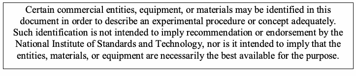
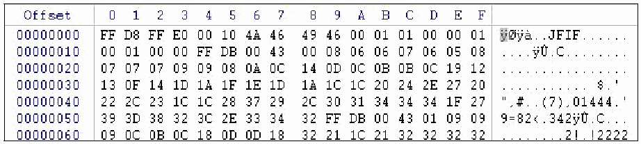
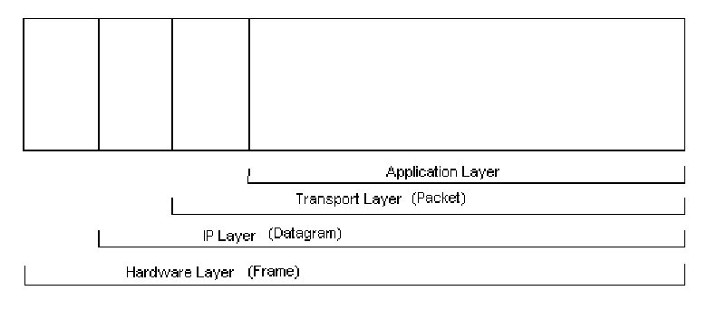

NIST SP 800-86 日本語訳
英語タイトル : Guide to Integrating Forensic Techniques into Incident Response公開日 : 2006-09-01
原文URL : https://csrc.nist.gov/pubs/sp/800/86/final
翻訳編集 : 自動生成（有志による非公式の日本語訳）, 原文取得日 : 2026-09-30, 訳文 : 1384 / 1384 ブロック
[要約] SP 800-86 は、コンピュータおよびネットワークのフォレンジック技術を、インシデント対応や一部の IT 運用上の問題の調査に統合するための実践的なガイドです。フォレンジック能力の確立と編成、フォレンジックプロセスの実施、さらにデータファイル、オペレーティングシステム、ネットワークトラフィック、アプリケーションの各データの使用を章立てで扱います。組織がセキュリティインシデントを調査し問題をトラブルシューティングできるよう、技術と利用方法を知らせることが目的で、包括的な段階別ガイドや法的助言ではありません。
［NIST のロゴ。公的な標章のため、この非公式サイトには掲載していません。原本 PDF を参照してください。］
Special Publication 800-86
特別刊行物800-86
Guide to Integrating Forensic Techniques into Incident Response
インシデント対応へのフォレンジック技法の統合に関するガイド
Recommendations of the National Institute of Standards and Technology
米国国立標準技術研究所の推奨事項
Karen Kent Suzanne Chevalier Tim Grance Hung Dang
Karen Kent、Suzanne Chevalier、Tim Grance、Hung Dang
NIST Special Publication 800-86
NIST Special Publication 800-86
Guide to Integrating Forensic Techniques into Incident Response
インシデント対応へのフォレンジック技法の統合に関するガイド
Recommendations of the National Institute of Standards and Technology
米国国立標準技術研究所の推奨事項
Karen Kent, Suzanne Chevalier, Tim Grance, Hung Dang
Karen Kent、Suzanne Chevalier、Tim Grance、Hung Dang
Computer Security Division Information Technology Laboratory National Institute of Standards and Technology Gaithersburg, MD 20899-8930
Computer Security Division Information Technology Laboratory National Institute of Standards and Technology Gaithersburg, MD 20899-8930
August 2006
2006年8月
U.S. Department of Commerce
米国商務省
Carlos M. Gutierrez, Secretary
Carlos M. Gutierrez、長官
Technology Administration
Technology Administration
Robert C. Cresanti, Under Secretary of Commerce for Technology
Robert C. Cresanti、技術担当商務次官
National Institute of Standards and Technology
National Institute of Standards and Technology
William A. Jeffrey, Director
William A. Jeffrey、所長
Reports on Computer Systems Technology
コンピュータシステム技術報告書
The Information Technology Laboratory (ITL) at the National Institute of Standards and Technology (NIST) promotes the U.S. economy and public welfare by providing technical leadership for the nation’s measurement and standards infrastructure. ITL develops tests, test methods, reference data, proof of concept implementations, and technical analysis to advance the development and productive use of information technology. ITL’s responsibilities include the development of technical, physical, administrative, and management standards and guidelines for the cost-effective security and privacy of sensitive unclassified information in Federal computer systems. This Special Publication 800-series reports on ITL’s research, guidance, and outreach efforts in computer security and its collaborative activities with industry, government, and academic organizations.
米国国立標準技術研究所（NIST）の情報技術研究所（ITL）は、全米の計測および標準インフラストラクチャに技術的リーダーシップを提供することにより、米国経済と公共の福祉を促進しています。ITLは、情報技術の開発と生産的利用を推進するため、試験、試験方法、参照データ、概念実証実装、および技術分析を開発します。ITLの責務には、連邦コンピュータシステムにおける機微な非機密情報について、費用対効果の高いセキュリティとプライバシーを実現するための技術的、物理的、運用上、管理上の標準およびガイドラインの策定が含まれます。本特別刊行物800シリーズは、コンピュータセキュリティに関するITLの研究、ガイダンス、普及活動、および産業界、政府、学術機関との協力活動を報告します。
National Institute of Standards and Technology Special Publication 800-86 Natl. Inst. Stand. Technol. Spec. Publ. 800-86, 121 pages (August 2006)
米国国立標準技術研究所 特別刊行物800-86 Natl. Inst. Stand. Technol. Spec. Publ. 800-86, 121ページ（2006年8月）
Certain commercial entities, equipment, or materials may be identified in this document in order to describe an experimental procedure or concept adequately. Such identification is not intended to imply recommendation or endorsement by the National Institute of Standards and Technology, nor is it intended to imply that the entities, materials, or equipment are necessarily the best available for the purpose.
原本PDFの抜粋画像

実験手順または概念を適切に説明するため、本書では特定の商業組織、装置、または材料を特定する場合があります。このような特定は、米国国立標準技術研究所による推奨または支持を意味するものではなく、また、それらの組織、材料、装置が目的に最も適した入手可能なものであることを意味するものでもありません。
Acknowledgments
謝辞
The authors, Karen Kent and Tim Grance of the National Institute of Standards and Technology, and Suzanne Chevalier and Hung Dang of Booz Allen Hamilton, wish to thank their colleagues who reviewed drafts of this document and contributed to its technical content. The authors would particularly like to acknowledge Rick Ayers, Wayne Jansen, Peter Mell, and Murugiah Souppaya of NIST, and Adam Feldman, Mike Noblett, and Joseph Nusbaum of Booz Allen Hamilton, for their keen and insightful assistance throughout the development of the document. The authors would also like to express their thanks to security experts Susan Ballou (Office of Law Enforcement Standards), Brian Carrier (Purdue University), Eoghan Casey (Stroz Friedberg, LLC), Duane Crider (Microsoft), Kurt Dillard (Microsoft), Dean Farrington (Wells Fargo Bank), Jessica Reust (Stroz Friedberg, LLC), Marc Rogers (Purdue University), and Miles Tracy (U.S. Federal Reserve System), as well as representatives from the Department of State, for their particularly valuable comments and suggestions.
著者である米国国立標準技術研究所のKaren KentおよびTim Grance、ならびにBooz Allen HamiltonのSuzanne ChevalierおよびHung Dangは、本書の草稿をレビューし、その技術的内容に貢献した同僚に謝意を表します。著者は特に、文書の作成全般を通じて鋭く洞察に富む支援を提供したNISTのRick Ayers、Wayne Jansen、Peter Mell、Murugiah Souppaya、およびBooz Allen HamiltonのAdam Feldman、Mike Noblett、Joseph Nusbaumに謝意を表します。また、セキュリティ専門家であるSusan Ballou（法執行基準局）、Brian Carrier（Purdue University）、Eoghan Casey（Stroz Friedberg, LLC）、Duane Crider（Microsoft）、Kurt Dillard（Microsoft）、Dean Farrington（Wells Fargo Bank）、Jessica Reust（Stroz Friedberg, LLC）、Marc Rogers（Purdue University）、Miles Tracy（米国連邦準備制度）、ならびに国務省の代表者から寄せられた特に有益なコメントと提案にも感謝します。
Trademarks
商標
All product names are registered trademarks or trademarks of their respective companies.
すべての製品名は、それぞれの企業の登録商標または商標です。
Table of Contents
目次
6.1 TCP/IP Basics6.1.1 Application Layer6.1.2 Transport Layer6.1.3 IP Layer6.1.4 Hardware Layer6.1.5 Layers’ Significance in Network Forensics6.2 Network Traffic Data Sources6.2.1 Firewalls and Routers6.2.2 Packet Sniffers and Protocol Analyzers6.2.3 Intrusion Detection Systems6.2.4 Remote Access6.2.5 Security Event Management Software6.2.6 Network Forensic Analysis Tools6.2.7 Other Sources6.3 Collecting Network Traffic Data6.3.1 Legal Considerations6.3.2 Technical Issues6.4 Examining and Analyzing Network Traffic Data6.4.1 Identify an Event of Interest6.4.2 Examine Data Sources6.4.3 Draw Conclusions6.4.4 Attacker Identification6.5 Recommendations
6.1 TCP/IPの基礎6.1.1 アプリケーション層6.1.2 トランスポート層6.1.3 IP層6.1.4 ハードウェア層6.1.5 ネットワークフォレンジックにおける各層の重要性6.2 ネットワークトラフィックのデータソース6.2.1 ファイアウォールおよびルーター6.2.2 パケットスニファーおよびプロトコルアナライザー6.2.3 侵入検知システム6.2.4 リモートアクセス6.2.5 セキュリティイベント管理ソフトウェア6.2.6 ネットワークフォレンジック分析ツール6.2.7 その他の情報源6.3 ネットワークトラフィックデータの収集6.3.1 法的考慮事項6.3.2 技術的課題6.4 ネットワークトラフィックデータの検査および分析6.4.1 関心のあるイベントの特定6.4.2 データソースの検査6.4.3 結論の導出6.4.4 攻撃者の特定6.5 推奨事項
7.1 Application Components7.1.1 Configuration Settings7.1.2 Authentication7.1.3 Logs7.1.4 Data7.1.5 Supporting Files7.1.6 Application Architecture7.2 Types of Applications7.2.1 E-mail7.2.2 Web Usage7.2.3 Interactive Communications7.2.4 File Sharing7.2.5 Document Usage7.2.6 Security Applications7.2.7 Data Concealment Tools7.3 Collecting Application Data
List of Appendices
付録一覧
Appendix A— RecommendationsA.1 Organizing a Forensics CapabilityA.1.1 Forensic ParticipantsA.1.2 Forensic Policies, Guidelines, and ProceduresA.1.3 Technical PreparationA.2 Performing the Forensics ProcessA.2.1 Data CollectionA.2.2 Examination and AnalysisA.2.3 ReportingAppendix B— ScenariosB.1 Scenario QuestionsB.2 ScenariosAppendix C— Glossary
List of Figures
図一覧
List of Tables
表一覧
Executive Summary
エグゼクティブサマリー
Forensic science is generally defined as the application of science to the law. Digital forensics, also known as computer and network forensics, has many definitions. Generally, it is considered the application of science to the identification, collection, examination, and analysis of data while preserving the integrity of the information and maintaining a strict chain of custody for the data. Data refers to distinct pieces of digital information that have been formatted in a specific way. Organizations have an ever-increasing amount of data from many sources. For example, data can be stored or transferred by standard computer systems, networking equipment, computing peripherals, personal digital assistants (PDA), consumer electronic devices, and various types of media, among other sources.
フォレンジック科学は一般に、科学を法に適用することと定義されます。デジタルフォレンジックは、コンピュータフォレンジックおよびネットワークフォレンジックとも呼ばれ、多くの定義があります。一般には、情報の完全性を保ち、データの厳格な証拠保全の連鎖を維持しながら、データの識別、収集、検査、分析に科学を適用することと考えられています。データとは、特定の形式で整えられた個別のデジタル情報を指します。組織が扱うデータ量は、さまざまな情報源から絶えず増加しています。例えば、データは標準的なコンピュータシステム、ネットワーク機器、コンピュータ周辺機器、携帯情報端末（PDA）、民生用電子機器、および各種媒体などに保存または転送できます。
Because of the variety of data sources, digital forensic techniques can be used for many purposes, such as investigating crimes and internal policy violations, reconstructing computer security incidents, troubleshooting operational problems, and recovering from accidental system damage. Practically every organization needs to have the capability to perform digital forensics (referred to as forensics throughout the rest of the guide). Without such a capability, an organization will have difficulty determining what events have occurred within its systems and networks, such as exposures of protected, sensitive data. This guide provides detailed information on establishing a forensic capability, including the development of policies and procedures. Its focus is primarily on using forensic techniques to assist with computer security incident response, but much of the material is also applicable to other situations.
情報源が多様であるため、デジタルフォレンジック技法は、犯罪や内部方針違反の調査、コンピュータセキュリティインシデントの再構成、運用上の問題のトラブルシューティング、偶発的なシステム損傷からの復旧など、多くの目的で使用できます。事実上すべての組織は、デジタルフォレンジックを実施する能力（本ガイドでは以降「フォレンジック」と呼ぶ）を備える必要があります。この能力がなければ、組織は保護対象の機微情報の漏えいなど、自らのシステムおよびネットワーク内でどのような事象が発生したかを判断するのに苦労します。本ガイドは、方針および手順の策定を含む、フォレンジック能力の確立に関する詳細情報を提供します。主にコンピュータセキュリティインシデント対応を支援するフォレンジック技法の利用に焦点を当てるが、内容の多くは他の状況にも適用できます。
Because different organizations are subject to different laws and regulations, this publication should not be used as a guide to executing a digital forensic investigation, construed as legal advice, or used as the basis for investigations of criminal activity.1 Instead, organizations should use this guide as a starting point for developing a forensic capability in conjunction with extensive guidance provided by legal advisors, law enforcement officials, and management.
組織によって適用される法令や規制が異なるため、本刊行物をデジタルフォレンジック調査の実施手引きとして使用したり、法的助言と解釈したり、犯罪活動の調査の根拠として使用したりすべきではありません。1 その代わり、組織は法律顧問、法執行機関職員、管理者から提供される広範なガイダンスと併せて、フォレンジック能力を開発する出発点として本ガイドを使用すべきです。
The process for performing digital forensics comprises the following basic phases:
デジタルフォレンジックを実施するプロセスは、次の基本段階から成ります。
! Collection: identifying, labeling, recording, and acquiring data from the possible sources of relevant data, while following procedures that preserve the integrity of the data.
! 収集：関連データの候補となる情報源を特定し、ラベル付けし、記録し、そこからデータを取得します。その際、データの完全性を保つ手順に従います。
! Examination: forensically processing collected data using a combination of automated and manual methods, and assessing and extracting data of particular interest, while preserving the integrity of the data.
! 検査：収集したデータを、自動および手作業の方法を組み合わせてフォレンジック処理し、データの完全性を保ちながら、特に関心のあるデータを評価して抽出します。
! Analysis: analyzing the results of the examination, using legally justifiable methods and techniques, to derive useful information that addresses the questions that were the impetus for performing the collection and examination.
! 分析：法的に正当化できる方法および技法を用いて検査結果を分析し、収集および検査を行う発端となった疑問に答える有用な情報を導き出します。
! Reporting: reporting the results of the analysis, which may include describing the actions used, explaining how tools and procedures were selected, determining what other actions need to be performed (e.g., forensic examination of additional data sources, securing identified vulnerabilities, improving existing security controls), and providing recommendations for improvement to policies, procedures, tools, and other aspects of the forensic process.
! 報告：分析結果を報告します。報告には、実施した措置の説明、ツールや手順を選択した方法の説明、追加で実施する必要のある(need)措置（例：追加データソースのフォレンジック検査、特定された脆弱性への対処、既存のセキュリティ管理策の改善）の判断、および方針、手順、ツールその他のフォレンジックプロセスの側面に関する改善勧告が含まれます(may)。
This guide provides general recommendations for performing the forensic process. It also provides detailed information about using the analysis process with four major categories of data sources: files, operating systems, network traffic, and applications. The guide focuses on explaining the basic components and characteristics of data sources within each category, as well as techniques for the collection, examination, and analysis of data from each category. The guide also provides recommendations for how multiple data sources can be used together to gain a better understanding of an event.
本ガイドは、フォレンジックプロセスを実施するための一般的な推奨事項を示します。また、ファイル、オペレーティングシステム、ネットワークトラフィック、アプリケーションという4つの主要なデータソース分類について、分析プロセスの利用に関する詳細情報を提供します。本ガイドでは、各分類に属するデータソースの基本的な構成要素と特性に加え、それぞれの分類からデータを収集、検査、分析する技法を説明します。また、ある事象をよりよく理解するために複数のデータソースを併用する方法についても推奨事項を示します(can)。
Implementing the following recommendations should facilitate efficient and effective digital forensic activities for Federal departments and agencies.
以下の推奨事項を実施することで、連邦省庁および機関における効率的かつ効果的なデジタルフォレンジック活動が促進されるはずです。
Organizations should ensure that their policies contain clear statements addressing all major forensic considerations, such as contacting law enforcement, performing monitoring, and conducting regular reviews of forensic policies and procedures.
組織は、法執行機関への連絡、監視の実施、フォレンジック方針および手順の定期的な見直しなど、フォレンジックに関するすべての主要事項を扱う明確な記述を方針に含めるようにすべきです(should)。
At a high level, policies should allow authorized personnel to monitor systems and networks and perform investigations for legitimate reasons under appropriate circumstances. Organizations may also have a separate forensic policy for incident handlers and others with forensic roles; this policy would provide more detailed rules concerning appropriate behavior. Forensic policy should clearly define the roles and responsibilities of all people and external organizations performing or assisting with the organization’s forensic activities. The policy should clearly indicate who should contact which internal teams and external organizations under different circumstances.
大局的には、適切な状況において正当な理由がある場合に、認可された要員がシステムおよびネットワークを監視し、調査を実施できるよう、方針を定めるべきです(should)。組織は、インシデント対応者やフォレンジックの役割を担う他の要員向けに、別個のフォレンジック方針を設けることもあります(may)。この方針は、適切な行動に関するより詳細な規則を定めます(would)。フォレンジック方針では、組織のフォレンジック活動を実施または支援するすべての人員および外部組織の役割と責任を明確に定義すべきです(should)。また、状況に応じて誰がどの内部チームおよび外部組織に連絡すべきか(should)を明示すべきです(should)。
Organizations should create and maintain procedures and guidelines for performing forensic tasks, based on the organization’s policies and all applicable laws and regulations.
組織は、方針および適用されるすべての法令・規制に基づき、フォレンジック業務を実施するための手順およびガイドラインを作成し、維持すべきです(should)。
Guidelines should focus on general methodologies for investigating incidents using forensic techniques, since it is not feasible to develop comprehensive procedures tailored to every possible situation. However, organizations should consider developing step-by-step procedures for performing routine tasks. The guidelines and procedures should facilitate consistent, effective, and accurate actions, which is particularly important for incidents that may lead to prosecution or internal disciplinary actions; handling evidence in a forensically sound manner puts decision makers in a position where they can confidently take the necessary actions. The guidelines and procedures should support the admissibility of evidence into legal proceedings, including information on gathering and handling evidence properly, preserving the integrity of tools and equipment, maintaining the chain of custody, and storing evidence appropriately. Because electronic logs and other records can be altered or otherwise manipulated, organizations should be prepared, through their policies, guidelines, and procedures, to demonstrate the integrity of such records. The guidelines and procedures should be reviewed periodically, as well as when significant changes are made to the team’s policies and procedures.
ガイドラインは、フォレンジック技法を用いてインシデントを調査するための一般的な方法論に重点を置くべきです(should)。考えられるあらゆる状況に合わせた包括的な手順を策定することは現実的でないためです。組織は、定型業務の実施について、段階ごとの手順を策定することも検討すべきです(should)。ガイドラインおよび手順は、一貫性があり、効果的で、正確な対応を促すべきです(should)。これは、訴追や内部懲戒処分につながる(may)可能性のあるインシデントで特に重要です。フォレンジック上適切な方法で証拠を取り扱うことで、意思決定者は必要な措置を確信を持って講じることができます(can)。ガイドラインおよび手順は、証拠の適切な収集・取扱い、ツールおよび機器の完全性の維持、証拠保全の連鎖の維持、証拠の適切な保管に関する情報を含め、法的手続における証拠の証拠能力を支えるべきです(should)。電子ログその他の記録は改変または操作され得る(can)ため、組織は方針、ガイドライン、手順を通じて、そのような記録の完全性を証明できるよう備えるべきです(should)。ガイドラインおよび手順は定期的に、またチームの方針および手順に重大な変更があった場合にも見直すべきです(should)。
Organizations should ensure that their policies and procedures support the reasonable and appropriate use of forensic tools.
組織は、方針および手順がフォレンジックツールの合理的かつ適切な使用を支えるようにすべきです(should)。
Organizations’ policies and procedures should clearly explain what forensic actions should and should not be performed under various circumstances, as well as describing the necessary safeguards for sensitive information that might be recorded by forensic tools, such as passwords, personal data (e.g., Social Security numbers), and the contents of e-mails. Legal advisors should carefully review all forensic policy and high-level procedures.
組織の方針および手順では、さまざまな状況下で実行すべき(should)フォレンジック措置と実行すべきでない(should)措置を明確に説明すべきです(should)。また、パスワード、個人データ（例：社会保障番号）、電子メールの内容など、フォレンジックツールが記録する(might)可能性のある機微情報に対する必要な保護措置も説明すべきです(should)。法律顧問は、フォレンジック方針および上位レベルの手順をすべて慎重にレビューすべきです(should)。
Organizations should ensure that their IT professionals are prepared to participate in forensic activities.
組織は、IT専門家がフォレンジック活動に参加できるよう準備を整えるべきです。
IT professionals throughout an organization, especially incident handlers and other first responders to incidents, should understand their roles and responsibilities for forensics, receive training and education on forensic–related policies and procedures, and be prepared to cooperate with and assist others when the technologies that they are responsible for are part of an incident or other event. IT professionals should also consult closely with legal counsel both in general preparation for forensics activities, such as determining which actions IT professionals should and should not perform, and also on an as-needed basis to discuss specific forensics situations. In addition, management should be responsible for supporting forensic capabilities, reviewing and approving forensic policy, and approving certain forensic actions, such as taking mission-critical systems off-line.
組織内のIT専門家、特にインシデント対応者およびその他の初動対応者は、フォレンジックにおける自らの役割と責任を理解し、フォレンジック関連の方針および手順について訓練と教育を受け、担当する技術がインシデントその他の事象に関係する場合には他者と協力し、支援できるよう備えるべきです(should)。IT専門家はまた、フォレンジック活動に向けた一般的な準備（例：IT専門家が実施すべき(should)こと、実施すべきでない(should)ことの決定）において、また具体的なフォレンジック状況を協議するため必要に応じた(needed)形で、法律顧問と緊密に相談すべきです(should)。さらに、管理者はフォレンジック能力の支援、フォレンジック方針のレビューと承認、およびミッションクリティカルなシステムのオフライン化など特定のフォレンジック措置の承認に責任を負うべきです(should)。
This page has been left blank intentionally.
このページは意図的に空白にしてあります。
1. Introduction
1. はじめに
1.1 Authority
1.1 権限
The National Institute of Standards and Technology (NIST) developed this document in furtherance of its statutory responsibilities under the Federal Information Security Management Act (FISMA) of 2002, Public Law 107-347.
米国国立標準技術研究所（NIST）は、2002年連邦情報セキュリティマネジメント法（FISMA）、公法107-347に基づく法定責務を果たすため、本書を作成しました。
NIST is responsible for developing standards and guidelines, including minimum requirements, for providing adequate information security for all agency operations and assets; but such standards and guidelines shall not apply to national security systems. This guideline is consistent with the requirements of the Office of Management and Budget (OMB) Circular A-130, Section 8b(3), “Securing Agency Information Systems,” as analyzed in A-130, Appendix IV: Analysis of Key Sections. Supplemental information is provided in A-130, Appendix III.
NISTは、最低要件を含む標準およびガイドラインを策定し、各機関のすべての運用および資産に十分な情報セキュリティを提供する責任を負います。ただし、これらの標準およびガイドラインは国家安全保障システムには適用されません(shall)。本ガイドラインは、行政管理予算局（OMB）通達A-130第8b(3)節「各機関の情報システムの保護」の要件と整合しており、同通達の付録IV「主要節の分析」において分析されています。補足情報はA-130付録IIIに記載されています。
This guideline has been prepared for use by Federal agencies. It may be used by nongovernmental organizations on a voluntary basis and is not subject to copyright, though attribution is desired.
本ガイドラインは連邦機関での使用を目的として作成されました。非政府組織は任意に使用できる(may)ものであり、著作権の対象ではないが、出典表示が望まれます。
Nothing in this document should be taken to contradict standards and guidelines made mandatory and binding on Federal agencies by the Secretary of Commerce under statutory authority, nor should these guidelines be interpreted as altering or superseding the existing authorities of the Secretary of Commerce, Director of the OMB, or any other Federal official.
本書のいかなる記述も、法的権限に基づき商務長官が連邦機関に対して義務的かつ拘束力のあるものとした標準およびガイドラインに反するものと解釈すべきではなく、また、本ガイドラインは商務長官、OMB長官、その他の連邦政府職員の既存の権限を変更または置換するものと解釈すべきではありません。
This guideline should not be held as binding to law enforcement personnel relative to the investigation of criminal activity.
本ガイドラインは、犯罪捜査に関して法執行機関要員を拘束するものと見なすべきではありません(should)。
1.2 Purpose and Scope
1.2 目的および適用範囲
This publication is intended to help organizations in investigating computer security incidents and troubleshooting some information technology (IT) operational problems by providing practical guidance on performing computer and network forensics. The guide presents forensics from an IT view, not a law enforcement view.2 Specifically, the publication describes the processes for performing effective forensics activities and provides advice regarding different data sources, including files, operating systems (OS), network traffic, and applications.
本刊行物は、コンピュータおよびネットワークフォレンジックの実施に関する実践的なガイダンスを提供し、組織がコンピュータセキュリティインシデントを調査し、一部の情報技術（IT）運用上の問題をトラブルシューティングできるよう支援することを意図しています。本ガイドは法執行機関の視点ではなく、ITの視点からフォレンジックを説明します。2 具体的には、本刊行物は効果的なフォレンジック活動を実施するプロセスを説明し、ファイル、オペレーティングシステム（OS）、ネットワークトラフィック、アプリケーションなど、さまざまなデータソースに関する助言を提供します。
The publication is not to be used as an all-inclusive step-by-step guide for executing a digital forensic investigation or construed as legal advice. Its purpose is to inform readers of various technologies and potential ways of using them in performing incident response or troubleshooting activities. Readers are advised to apply the recommended practices only after consulting with management and legal counsel for compliance concerning laws and regulations (i.e., local, state, Federal, and international) that pertain to their situation.
本刊行物は、デジタルフォレンジック調査を実行するための包括的な段階別ガイドとして使用したり、法的助言と解釈したりしてはなりません。目的は、インシデント対応やトラブルシューティングを行う際の、さまざまな技術とその潜在的な利用方法を読者に知らせることです。読者は、自らの状況に関係する法令・規制（すなわち、地方、州、連邦、国際の法令・規制）への準拠について、管理者および法律顧問に相談した後に限り、推奨慣行を適用するよう助言されます。
1.3 Audience
1.3 対象読者
This publication has been created for incident response teams; forensic analysts; system, network, and security administrators; and computer security program managers who are responsible for performing forensics for investigative, incident response, or troubleshooting purposes. The practices recommended in this guide are designed to highlight key principles associated with the handling and examination of electronic evidence. Because of the constantly changing nature of electronic devices and software, and forensic procedures and tools, readers are expected to refer to other resources, including those listed in this guide, for more current and detailed information than that presented in this guide.
本刊行物は、インシデント対応チーム、フォレンジック分析者、システム・ネットワーク・セキュリティ管理者、および調査、インシデント対応、トラブルシューティングを目的としてフォレンジックを実施する責任を負うコンピュータセキュリティプログラム管理者を対象に作成されています。本ガイドで推奨する実務は、電子証拠の取扱いおよび検査に関する主要な原則を示すことを意図しています。電子機器やソフトウェア、ならびにフォレンジック手順やツールは絶えず変化するため、読者には、本ガイドに記載された情報よりも新しく詳細な情報を得るため、本ガイドに挙げたものを含む他のリソースも参照することが期待されます。
1.4 Publication Structure
1.4 刊行物の構成
The remainder of this publication is divided into seven major sections:
本刊行物の残りは、次の7つの主要な節に分かれています。
! Section 2 discusses the need for computer and network forensics and provides guidance on establishing and organizing a forensics capability for an organization.
! 第2節では、コンピュータおよびネットワークフォレンジックの必要性(need)を論じ、組織におけるフォレンジック能力の確立および編成に関する指針を示します。
! Section 3 explains the basic steps involved in performing computer and network forensics: data collection, examination, analysis, and reporting.
! 第3節では、コンピュータおよびネットワークフォレンジックを実施する基本的な手順、すなわちデータの収集、検査、分析、報告について説明します。
! Sections 4 through 7 provide details on collecting, examining, and analyzing data from various data sources, based on the framework described in Section 3. The data source categories discussed in Sections 4 through 7 are data files, OSs, network traffic, and applications, respectively.
! 第4節から第7節では、第3節で説明する枠組みに基づき、さまざまなデータソースからデータを収集、検査、分析する方法を詳述します。第4節から第7節で扱うデータソースの分類は、それぞれデータファイル、OS、ネットワークトラフィック、アプリケーションです。
! Section 8 presents case studies that illustrate how analysis can correlate events among several data sources.
! 第8節では、複数のデータソース間の事象を分析によってどのように相関付けられるか(can)を示す事例研究を紹介します。
The publication also contains several appendices with supporting material:
本刊行物には、参考資料を含む複数の付録もあります。
! Appendix A presents the major recommendations made in the publication.
! 付録Aでは、本刊行物に示す主な推奨事項を提示します。
! Appendix B presents scenarios in which forensics techniques might be useful and asks the reader a series of questions regarding each scenario.
! 付録Bでは、フォレンジック技法が役立つ可能性のある(might)シナリオを示し、各シナリオに関する一連の質問を読者に提示します。
! Appendices C and D contain a glossary and acronym list, respectively.
! 付録CおよびDには、それぞれ用語集および略語一覧を収録します。
! Appendix E lists print resources, and Appendix F identifies online tools and resources, that may be useful for establishing a forensics capability or understanding forensics tools and techniques.
! 付録Eには印刷資料を、付録Fにはオンラインツールおよびリソースを掲載します。これらは、フォレンジック能力の確立、またはフォレンジックツールや技法の理解に役立つ可能性があります(may)。
! Appendix G contains an index for the publication.
! 付録Gには、本刊行物の索引を収録します。
2. Establishing and Organizing a Forensics Capability
2. フォレンジック能力の確立と編成
The term data refers to distinct pieces of digital information that have been formatted in a specific way. The expansion of computers3 for professional and personal use and the pervasiveness of networking have fueled the need for tools that can record and analyze an ever-increasing amount of data from many sources. For example, data can be stored or transferred by standard computer systems (e.g., desktops, laptops, servers), networking equipment (e.g., firewalls, routers), computing peripherals (i.e., printers), personal digital assistants (PDA), CDs, DVDs, removable hard drives, backup tapes, flash memory, thumb drives, and jump drives. Many consumer electronic devices (e.g., cell phones, video game consoles, digital audio players, digital video recorders) can also be used to store data. This increasing variety of data sources has helped spur the development and refinement of forensics tools and techniques. This has also been caused by the realization that such tools and techniques can be used for many purposes, such as investigating crimes, reconstructing computer security incidents, troubleshooting operational problems, and recovering from accidental system damage.
データとは、特定の方法で形式化された、個別のデジタル情報を指します。業務用および個人用コンピュータの普及3とネットワークの浸透により、多数の情報源から増え続けるデータを記録・分析するツールの必要性が高まっています。例えば、データは標準的なコンピュータシステム（例：デスクトップ、ラップトップ、サーバー）、ネットワーク機器（例：ファイアウォール、ルーター）、コンピュータ周辺機器（すなわちプリンター）、携帯情報端末（PDA）、CD、DVD、リムーバブルハードドライブ、バックアップテープ、フラッシュメモリ、USBフラッシュドライブ、ジャンプドライブによって保存または転送できます。多くの民生用電子機器（例：携帯電話、ビデオゲーム機、デジタルオーディオプレーヤー、デジタルビデオレコーダー）もデータの保存に使用できます。こうしたデータソースの多様化は、フォレンジックツールおよび技法の開発と改良を促してきました。また、犯罪の調査、コンピュータセキュリティインシデントの再構成、運用上の問題のトラブルシューティング、偶発的なシステム損傷からの復旧など、さまざまな目的にそれらのツールや技法を使用できるという認識も、その開発と改良を促してきました。
This section discusses several aspects of organizing a forensics capability for an organization. It begins by showing the wide variety of potential uses for forensics, and then presents a high-level overview of the forensics process. The next part of the section discusses how forensics services are typically provided and provides guidance on building and maintaining the necessary skills to perform forensics tasks. The section also explains the need to include various teams from throughout the organization, such as legal advisors and physical security staff, in some forensic activities. The section ends by discussing how policies, guidelines, and procedures should address forensics (e.g., defining roles and responsibilities, providing guidance on the proper usage of tools and techniques, incorporating forensics into the information system life cycle).
本節では、組織におけるフォレンジック能力の編成に関するいくつかの側面を論じます。まず、フォレンジックの幅広い潜在的用途を示し、次にフォレンジックプロセスの概要を説明します。続いて、フォレンジックサービスが通常どのように提供されるかを論じ、フォレンジック業務に必要な技能を身に付け維持するための指針を示します。また、法律顧問や物理セキュリティ担当者など、組織内のさまざまなチームを一部のフォレンジック活動に関与させる必要性(need)も説明します。最後に、方針、ガイドライン、手順でフォレンジックをどのように扱うべきか(should)（例：役割と責任の定義、ツールや技法の適切な使用に関する指針の提示、情報システムのライフサイクルへのフォレンジックの組込み）を論じます。
The techniques and processes presented in this guide are based on principles of digital forensics. Forensic science is generally defined as the application of science to the law. Digital forensics, also known as computer and network forensics, has many definitions. Generally, it is considered the application of science to the identification, collection, examination, and analysis of data while preserving the integrity of the information and maintaining a strict chain of custody for the data. Because different organizations are subject to different laws and regulations, this publication should not be used as a guide for executing a digital forensic investigation, construed as legal advice, or used as the basis for investigations of criminal activity. Instead, organizations should use this guide as a starting point for developing a forensic capability in conjunction with extensive guidance provided by legal advisors, law enforcement officials, and management.
本ガイドに示す技法およびプロセスは、デジタルフォレンジックの原則に基づきます。フォレンジック科学は一般に、科学を法に適用することと定義されます。コンピュータフォレンジックおよびネットワークフォレンジックとも呼ばれるデジタルフォレンジックには、多くの定義があります。一般には、情報の完全性を保ち、データの厳格な証拠保全の連鎖を維持しながら、データの識別、収集、検査、分析に科学を適用することと考えられています。組織ごとに適用される法令や規制が異なるため、本刊行物をデジタルフォレンジック調査の実施手引きとして使用したり、法的助言と解釈したり、犯罪行為の調査根拠として使用したりすべきではありません(should)。その代わり、組織は法律顧問、法執行機関職員、管理者から提供される広範な指針と併せ、フォレンジック能力を開発する出発点として本ガイドを使用すべきです(should)。
2.1 The Need for Forensics
2.1 フォレンジックの必要性
Over the last decade, the number of crimes that involve computers has grown, spurring an increase in companies and products that aim to assist law enforcement in using computer-based evidence to determine the who, what, where, when, and how for crimes. As a result, computer and network forensics has evolved to assure proper presentation of computer crime evidentiary data into court. Forensic tools and techniques are most often thought of in the context of criminal investigations and computer security incident handling—used to respond to an event by investigating suspect systems, gathering and preserving evidence, reconstructing events, and assessing the current state of an event. However, forensic tools and techniques are also useful for many other types of tasks, such as the following:
過去10年間に、コンピュータが関与する犯罪の数が増加し、法執行機関がコンピュータベースの証拠を用いて犯罪の「誰が、何を、どこで、いつ、どのように」を明らかにするのを支援する企業や製品も増えてきました。その結果、コンピュータ犯罪の証拠データを適切に法廷へ提出できるよう、コンピュータおよびネットワークフォレンジックが発展してきました。フォレンジックツールおよび技法は、犯罪捜査やコンピュータセキュリティインシデント対応の文脈で考えられることが最も多くあります。すなわち、疑わしいシステムを調査し、証拠を収集・保全し、事象を再構成し、事象の現状を評価することで、事象に対応するために用いられます。しかし、フォレンジックツールおよび技法は、次のような多くの種類の業務にも有用です。
! Operational Troubleshooting. Many forensic tools and techniques can be applied to troubleshooting operational issues, such as finding the virtual and physical location of a host with an incorrect network configuration, resolving a functional problem with an application, and recording and reviewing the current OS and application configuration settings for a host.
! 運用上のトラブルシューティング。多くのフォレンジックツールおよび技法は、誤ったネットワーク設定を持つホストの仮想上および物理上の位置の特定、アプリケーションの機能上の問題の解決、ホストの現在のOSおよびアプリケーション構成設定の記録・確認など、運用上の問題のトラブルシューティングに適用できます(can)。
! Log Monitoring. Various tools and techniques can assist in log monitoring, such as analyzing log entries and correlating log entries across multiple systems. This can assist in incident handling, identifying policy violations, auditing, and other efforts.
! ログ監視。さまざまなツールおよび技法がログ監視を支援できます(can)。例えば、ログエントリーの分析や、複数システムにわたるログエントリーの相関付けが挙げられます。これは、インシデント対応、方針違反の特定、監査その他の取組みを支援し得ます(can)。
! Data Recovery. There are dozens of tools that can recover lost data from systems, including data that has been accidentally or purposely deleted or otherwise modified. The amount of data that can be recovered varies on a case-by-case basis.
! データ復旧。システムから失われたデータを復旧できる(can)ツールは多数存在し、誤ってまたは意図的に削除されたデータ、あるいはその他の方法で変更されたデータも対象となります。復旧可能な(can)データ量は、個々の事例によって異なります。
! Data Acquisition. Some organizations use forensics tools to acquire data from hosts that are being redeployed or retired. For example, when a user leaves an organization, the data from the user’s workstation can be acquired and stored in case it is needed in the future. The workstation’s media can then be sanitized to remove all of the original user’s data.
! データ取得。一部の組織は、再配備または廃止するホストからデータを取得するためにフォレンジックツールを使用します。例えば、利用者が組織を離れる際、その利用者のワークステーションからデータを取得して、将来必要となる(needed)場合に備えて保存できます(can)。次に、ワークステーションの媒体をサニタイズして、元の利用者のデータをすべて消去できます(can)。
! Due Diligence/Regulatory Compliance. Existing and emerging regulations require many organizations to protect sensitive information and maintain certain records for audit purposes. Also, when protected information is exposed to other parties, organizations may be required to notify other agencies or impacted individuals. Forensics can help organizations exercise due diligence and comply with such requirements.
! デューデリジェンス／規制遵守。既存および新たな規制により、多くの組織は機微情報を保護し、監査目的で特定の記録を維持することを求められます(require)。また、保護対象情報が他者に開示された場合、組織は他の機関または影響を受けた個人に通知することを求められる(required)ことがあります(may)。フォレンジックは、組織がデューデリジェンスを実践し、そのような要件を遵守するのに役立ちます(can)。
Regardless of the situation, the forensic process comprises the following basic phases:4
状況にかかわらず、フォレンジックプロセスは次の基本段階から成ります。4
! Collection. The first phase in the process is to identify, label, record, and acquire data from the possible sources of relevant data, while following guidelines and procedures that preserve the integrity of the data. Collection is typically performed in a timely manner because of the likelihood of losing dynamic data such as current network connections, as well as losing data from battery-powered devices (e.g., cell phones, PDAs).
! 収集。プロセスの最初の段階では、関連データの候補となる情報源を特定し、ラベル付けし、記録し、そこからデータを取得します。その際、データの完全性を保つ指針および手順に従います。現在のネットワーク接続などの動的データが失われる可能性や、電池駆動機器（例：携帯電話、PDA）からデータが失われる可能性があるため、収集は通常、迅速に実施されます。
! Examination. Examinations involve forensically processing large amounts of collected data using a combination of automated and manual methods to assess and extract data of particular interest, while preserving the integrity of the data.
! 検査。検査では、収集した大量のデータを、自動および手作業の方法を組み合わせてフォレンジック処理し、データの完全性を保ちながら、特に関心のあるデータを評価・抽出します。
! Analysis. The next phase of the process is to analyze the results of the examination, using legally justifiable methods and techniques, to derive useful information that addresses the questions that were the impetus for performing the collection and examination.
! 分析。プロセスの次の段階では、法的に正当化できる方法および技法を用いて検査結果を分析し、収集および検査を行う発端となった疑問に答える有用な情報を導き出します。
! Reporting. The final phase is reporting the results of the analysis, which may include describing the actions used, explaining how tools and procedures were selected, determining what other actions need to be performed (e.g., forensic examination of additional data sources, securing identified vulnerabilities, improving existing security controls), and providing recommendations for improvement to policies, guidelines, procedures, tools, and other aspects of the forensic process. The formality of the reporting step varies greatly depending on the situation.
! 報告。最終段階は分析結果の報告であり、実施した措置の説明、ツールおよび手順を選択した方法の説明、他に実施する必要がある(need)措置（例：追加のデータソースのフォレンジック検査、特定された脆弱性への対処、既存のセキュリティ管理策の改善）の決定、ならびに方針、ガイドライン、手順、ツールその他のフォレンジックプロセスの側面に関する改善勧告の提示を含む(may)ことがあります。報告段階の形式の厳密さは、状況によって大きく異なります。
A more in-depth discussion of the forensic process is presented in Section 3. Sections 4 through 7 provide additional information on collecting, examining, and analyzing different types of forensic data.
フォレンジックプロセスについては第3節でさらに詳しく論じます。第4節から第7節では、さまざまな種類のフォレンジックデータの収集、検査、分析に関する追加情報を示します。
2.2 Forensic Staffing
2.2 フォレンジック要員配置
Practically every organization needs to have some capability to perform computer and network forensics. Without such a capability, an organization will have difficulty determining what events have occurred within its systems and networks, such as exposures of protected, sensitive data. Although the extent of this need varies, the primary users of forensic tools and techniques within an organization usually can be divided into the following three groups:5
事実上すべての組織は、コンピュータおよびネットワークフォレンジックを実施する能力を何らかの形で備える必要があります。こうした能力がなければ、保護対象の機微データの漏えいなど、自らのシステムおよびネットワーク内でどのような事象が発生したかを判断するのに苦労します。この必要性の程度はさまざまだが、組織内でフォレンジックツールおよび技法を主に使用する者は通常、次の3グループに分けられます。5
! Investigators. Investigators within an organization are most often from the Office of Inspector General (OIG), and they are responsible for investigating allegations of misconduct. For some organizations, the OIG immediately takes over the investigation of any event that is suspected to involve criminal activity. The OIG typically uses many forensic techniques and tools. Other investigators within an organization might include legal advisors and members of the human resources department. Law enforcement officials and others outside the organization that might perform criminal investigations are not considered part of an organization’s internal group of investigators.
! 調査担当者。組織内の調査担当者は、多くの場合、監察総監室（OIG）に所属し、不正行為の申し立てを調査する責任を負います。一部の組織では、犯罪行為が関係すると疑われる事象の調査をOIGが直ちに引き継ぎます。OIGは通常、多くのフォレンジック技法およびツールを使用します。組織内の他の調査担当者には、法律顧問や人事部門の職員が含まれることもあります(might)。犯罪捜査を実施する可能性のある法執行機関職員その他の組織外の者(might)は、組織内部の調査担当者グループには含めません。
! IT Professionals. This group includes technical support staff and system, network, and security administrators. They use a small number of forensic techniques and tools specific to their area of expertise during their routine work (e.g., monitoring, troubleshooting, data recovery).
! IT専門家。このグループには、技術サポート職員ならびにシステム、ネットワーク、セキュリティ管理者が含まれます。彼らは通常業務（例：監視、トラブルシューティング、データ復旧）において、自らの専門分野に特有の少数のフォレンジック技法およびツールを使用します。
! Incident Handlers. This group responds to a variety of computer security incidents, such as unauthorized data access, inappropriate system usage, malicious code infections, and denial of service attacks. Incident handlers typically use a wide variety of forensic techniques and tools during their investigations.
! インシデント対応者。このグループは、無許可のデータアクセス、不適切なシステム利用、悪意あるコードの感染、サービス拒否攻撃など、さまざまなコンピュータセキュリティインシデントに対応します。インシデント対応者は通常、調査中に幅広いフォレンジック技法およびツールを使用します。
Many organizations rely on a combination of their own staff and external parties to perform forensic tasks. For example, some organizations perform standard tasks themselves and use outside parties only when specialized assistance is needed. Even organizations that want to perform all forensic tasks themselves usually outsource the most demanding ones, such as sending physically damaged media to a data recovery firm for reconstruction, or having specially trained law enforcement personnel or consultants collect data from an unusual source (e.g., cell phone). Such tasks typically require the use of specialized software, equipment, facilities, and technical expertise that most organizations cannot justify the high expense of acquiring and maintaining. As described in Section 3.1.2, organizations should determine in advance which actions should be performed by law enforcement officials. Also, when expert testimony is needed for legal proceedings, organizations might seek external assistance.
多くの組織は、フォレンジック業務を実施するため、自組織の職員と外部関係者を組み合わせて活用します。例えば、通常の業務は自ら実施し、専門的な支援が必要な(needed)場合にのみ外部関係者を利用する組織もあります。すべてのフォレンジック業務を自ら実施したい組織であっても、物理的に損傷した媒体を復元のためデータ復旧会社に送付することや、特殊な訓練を受けた法執行機関職員またはコンサルタントに、携帯電話など通常とは異なる情報源からデータを収集させることなど、最も難度の高い業務は通常外部委託します。このような業務には、特殊なソフトウェア、機器、施設、技術的専門知識を必要とする(require)ことが多く、ほとんどの組織にとって、それらを取得・維持する高額な費用を正当化できません(cannot)。第3.1.2節で述べるように、組織はどの措置を法執行機関職員が実施すべきか(should)を事前に決定すべき(should)です。また、法的手続で専門家証言が必要な(needed)場合、組織は外部支援を求めることがあります(might)。
When deciding which internal or external parties should handle each aspect of forensics, organizations should keep the following factors in mind:
フォレンジックの各側面をどの内部関係者または外部関係者が担当すべきか(should)を決定する際、組織は次の要因を考慮すべきです(should)。
! Cost. There are many potential costs. Software, hardware, and equipment used to collect and examine data may carry significant costs (e.g., purchase price, software updates and upgrades, maintenance), and may also require additional physical security measures to safeguard them from tampering. Other significant expenses involve staff training and labor costs, which are particularly significant for dedicated forensic specialists. In general, forensic actions that are needed rarely might be more cost-effectively performed by an external party, whereas actions that are needed frequently might be more cost-effectively performed internally.
! 費用。費用には多くの種類があります。データの収集および検査に用いるソフトウェア、ハードウェア、機器には多額の費用（例：購入価格、ソフトウェアの更新およびアップグレード、保守）がかかる場合があり(may)、改ざんから保護するため追加の物理的セキュリティ対策を要する場合もあります。その他の大きな費用には、職員の訓練および人件費があり、専任のフォレンジック専門家では特に大きな負担となります。一般に、まれにしか必要とされない(needed)フォレンジック措置は外部関係者が実施する方が費用対効果に優れる(might)可能性があり、頻繁に必要とされる(needed)措置は組織内部で実施する方が費用対効果に優れる(might)可能性があります。
! Response Time. Personnel located on-site might be able to initiate computer forensic activity more quickly than could off-site personnel. For organizations with geographically dispersed physical locations, off-site outsourcers located near distant facilities might be able to respond more quickly than personnel located at the organization’s headquarters.
! 対応時間。オンサイトの要員は、オフサイトの要員よりも迅速にコンピュータフォレンジック活動を開始できる(might)場合があります。組織の物理的拠点が地理的に分散している場合、遠隔地の施設の近くにいるオフサイトの委託先は、組織本部の要員より迅速に対応できる(might)場合があります。
! Data Sensitivity. Because of data sensitivity and privacy concerns, some organizations might be reluctant to allow external parties to image hard drives and perform other actions that provide access to data. For example, a system that contains traces of an incident might also contain health care information, financial records, or other sensitive data; an organization might prefer to keep that system under its own control to safeguard the privacy of the data. On the other hand, if there is a privacy concern within the team—for example, if an incident is suspected to involve a member of the incident handling team—use of an independent third party to perform forensic actions would be preferable.
! データの機微性。データの機微性およびプライバシーへの懸念から、一部の組織は外部関係者にハードドライブのイメージ取得や、データへのアクセスを可能にする他の措置を許可することに消極的な(might)場合があります。例えば、インシデントの痕跡を含むシステムには、医療情報、財務記録、その他の機微データも含まれている(might)場合があり、データのプライバシーを保護するため、組織はそのシステムを自らの管理下に置くことを望む(might)場合があります。一方、チーム内にプライバシー上の懸念がある場合、例えばインシデント対応チームのメンバーが関与した疑いがある場合は、独立した第三者にフォレンジック措置を実施させる方が望まれます(would)。
Incident handlers performing forensic tasks need to have a reasonably comprehensive knowledge of forensic principles, guidelines, procedures, tools, and techniques, as well as anti-forensic tools and techniques that could conceal or destroy data. It is also beneficial for incident handlers to have expertise in information security and specific technical subjects, such as the most commonly used OSs, filesystems, applications, and network protocols within the organization. Having this type of knowledge facilitates faster and more effective responses to incidents. Incident handlers also need a general, broad understanding of systems and networks so that they can determine quickly which teams and individuals are well-suited to providing technical expertise for particular forensic efforts, such as examining and analyzing data for an uncommon application.
フォレンジック業務を行うインシデント対応者は、データを隠蔽または破壊し得る(could)アンチフォレンジックツールおよび技法も含め、フォレンジックの原則、ガイドライン、手順、ツール、技法について、かなり包括的な知識を持つ必要があります(need)。インシデント対応者が情報セキュリティ、および組織内で最も一般的に使用されるOS、ファイルシステム、アプリケーション、ネットワークプロトコルなどの特定の技術分野に精通していることも有益です。この種の知識があれば、インシデントへのより迅速かつ効果的な対応が可能になります。インシデント対応者はまた、システムおよびネットワークに関する一般的かつ幅広い理解を持つ必要があり(need)、これにより、例えば一般的でないアプリケーションのデータを検査・分析するなど、特定のフォレンジック作業に技術的専門知識を提供するのに適したチームや個人を速やかに判断できます(can)。
Individuals performing forensics might need to perform other types of tasks as well. For example, if the results of an investigation are used in a court of law, incident handlers may be called upon to provide testimony and corroborate their findings. Incident handlers might provide training courses in forensics to technical support staff, system and network administrators, and other IT professionals. Possible training topics include an overview of forensics tools and techniques, advice on using a particular tool, and the signs of a new type of attack. Incident handlers might also want to have interactive sessions with groups of IT professionals to hear their thoughts on forensics tools and identify potential shortcomings in existing forensics capabilities.
フォレンジックを実施する個人は、他の種類の業務も行う必要が生じることがあります。例えば、調査結果が法廷で使用される場合、インシデント対応者は証言し、調査結果を裏付けるよう求められることがあります。インシデント対応者は、技術サポート職員、システムおよびネットワーク管理者、その他のIT専門家を対象に、フォレンジックの研修コースを提供することがあります。研修テーマには、フォレンジックツールおよび技法の概要、特定のツールの使用に関する助言、新種の攻撃の兆候などが含まれます。インシデント対応者はまた、IT専門家のグループと双方向のセッションを行い、フォレンジックツールに関する意見を聞き、既存のフォレンジック能力に潜在する欠点を特定したいと考えることもあります。
On an incident handling team, more than one team member should be able to perform each typical forensic activity so that the absence of any single team member will not severely impact the team’s abilities. Incident handlers can train each other in the use of forensic tools and other technical and procedural topics. Hands-on exercises and external IT and forensic training courses can also be helpful in building and maintaining skills. In addition, it might be beneficial to have team members see demonstrations of new tools and technologies or try out forensic and anti-forensic tools in a lab. This can be particularly useful in familiarizing incident handlers with the collection, examination, and analysis of data from devices such as cell phones and PDAs. Incident handlers need to stay current with new forensic technologies, techniques, and procedures.
インシデント対応チームでは、特定のメンバーが不在でもチームの能力に深刻な影響が及ぶことがない(will)よう、通常の各フォレンジック活動を複数のチームメンバーが実施できるようにすべきです(should)。インシデント対応者は、フォレンジックツールの使用やその他の技術的・手続的なテーマについて互いに訓練できます(can)。実地演習ならびに外部のIT・フォレンジック研修コースも、技能の構築および維持に役立ちます(can)。さらに、新しいツールや技術の実演をチームメンバーに見せたり、実験室でフォレンジックおよびアンチフォレンジックツールを試用させたりすることも有益な(might)場合があります。これは、携帯電話やPDAなどの機器からデータを収集、検査、分析する方法をインシデント対応者に習熟させるうえで特に有用となり得ます(can)。インシデント対応者は、新しいフォレンジック技術、技法、手順を常に把握しておく必要があります(need)。
2.3 Interactions with Other Teams
2.3 他チームとの連携
It is not feasible for any one person to be well-versed in every technology (including all software) used within an organization; therefore, individuals performing forensic actions should be able to reach out to other teams and individuals within their organization as needed for additional assistance. For example, an incident involving a particular database server might be handled more efficiently if the database administrator were available to provide background information, answer technical questions, and provide database documentation and other reference material. Organizations should ensure that IT professionals throughout the organization, especially incident handlers and other first responders to incidents, understand their roles and responsibilities for forensics, receive ongoing training and education on forensic–related policies, guidelines, and procedures, and are prepared to cooperate with and assist others when the technologies that they are responsible for are part of an incident or other event.
組織内で使用されるすべての技術（すべてのソフトウェアを含む）に精通することは一人の人間には現実的でないため、フォレンジック措置を実施する者は、追加の支援が必要に応じて(needed)得られるよう、組織内の他のチームや個人に連絡できるべきです(should)。例えば、特定のデータベースサーバーに関係するインシデントは、データベース管理者が背景情報の提供、技術的な質問への回答、データベースの文書その他の参考資料の提供を行えるなら、より効率的に処理できます(might)。組織は、組織全体のIT専門家、特にインシデント対応者およびその他の初動対応者が、フォレンジックにおける自らの役割と責任を理解し、フォレンジック関連の方針、ガイドライン、手順について継続的な訓練および教育を受け、担当技術がインシデントその他の事象に関係する際に、他者と協力し支援できるよう準備されていることを確保すべきです(should)。
In addition to IT professionals and incident handlers, others within an organization may also need to participate in forensic activities in a less technical capacity. Examples include management, legal advisors, human resources personnel, auditors, and physical security staff. Management is responsible for supporting forensic capabilities, reviewing and approving forensic policy, and approving certain forensic actions (e.g., taking a mission-critical system off-line for 6 hours to collect data from its hard drives). Legal advisors should carefully review all forensic policy and high-level guidelines and procedures, and they can provide additional guidance when needed to ensure that forensic actions are performed lawfully. The human resources department can provide assistance in dealing with employee relations and the handling of internal incidents. Auditors can help determine the economic impact of an incident, including the cost of forensic activity. Physical security staff can assist in gaining access to and physically securing evidence. Although these teams often do not play a prominent role in the forensic process, the services that these teams provide can be beneficial.
IT専門家およびインシデント対応者に加え、組織内の他の者も、技術色のより薄い立場でフォレンジック活動に参加する必要が生じる場合があります。例えば、管理者、法律顧問、人事担当者、監査担当者、物理セキュリティ担当者が挙げられます。管理者は、フォレンジック能力の支援、フォレンジック方針のレビューおよび承認、ならびに一部のフォレンジック措置（例：ハードドライブからデータを収集するためミッションクリティカルなシステムを6時間オフラインにすること）の承認を担います。法律顧問は、すべてのフォレンジック方針および上位レベルのガイドライン・手順を慎重にレビューすべきであり、必要に応じて、フォレンジック措置が適法に行われるよう追加の指針を提供できます。人事部門は、従業員との関係や内部インシデントの取扱いを支援できます。監査担当者は、フォレンジック活動の費用を含むインシデントの経済的影響の判断を支援できます。物理セキュリティ担当者は、証拠へのアクセス確保および証拠の物理的保全を支援できます。これらのチームはフォレンジックプロセスで主要な役割を担わないことが多いが、提供するサービスは有益となり得ます。
To facilitate inter-team communications, each team should designate one or more points of contact. These individuals are responsible for knowing the expertise of each team member and directing inquiries for assistance to the appropriate person. Organizations should maintain a list of contacts that the appropriate teams can reference as needed. The list should include both standard (e.g., office phone) and emergency (e.g., cell phone) contact methods.
チーム間の連絡を円滑にするため、各チームは1人以上の連絡窓口を指定すべきです(should)。これらの担当者は、各チームメンバーの専門知識を把握し、支援依頼を適切な担当者に取り次ぐ責任を負います。組織は、該当チームが必要に応じて(needed)参照できる(can)連絡先一覧を維持すべきです(should)。一覧には、通常の連絡方法（例：勤務先電話）と緊急時の連絡方法（例：携帯電話）の両方を含めるべきです(should)。
2.4 Policies
2.4 方針
Organizations should ensure that their policies contain clear statements that address all major forensic considerations, such as contacting law enforcement, performing monitoring, and conducting regular reviews of forensic policies, guidelines, and procedures. At a high level, policies should allow authorized personnel to monitor systems and networks and perform investigations for legitimate reasons under appropriate circumstances. Organizations may also have a separate policy for incident handlers and others with forensic roles; this policy would provide more detailed rules for appropriate behavior. Such personnel should be familiar with and understand the policy. Policies may need to be updated frequently, particularly for organizations that span many jurisdictions, because of changes to laws and regulations, as well as new court rulings. In addition, the organization’s forensic policy should be consistent with the organization’s other policies, including policies related to reasonable expectations of privacy. Sections 2.4.1 through 2.4.3 discuss policy-related topics in more detail.
組織は、法執行機関への連絡、監視の実施、フォレンジック方針・ガイドライン・手順の定期的な見直しなど、フォレンジックに関する主要な考慮事項すべてを扱う明確な記述を方針に含めるよう確保すべきです(should)。上位レベルでは、正当な理由があり適切な状況において、認可された要員がシステムおよびネットワークを監視し、調査を行えるよう方針を定めるべきです(should)。組織は、インシデント対応者やフォレンジックの役割を担う他の者向けに、別個の方針を設けることもあります(may)。この方針は、適切な行動に関するより詳細な規則を定めます(would)。そのような要員は方針を熟知し、理解すべきです(should)。特に複数の法域にまたがる組織では、法令や規制の変更、ならびに新たな裁判所の判決があるため、方針を頻繁に更新する必要(need)があります(may)。さらに、組織のフォレンジック方針は、プライバシーに関する合理的な期待に関連する方針を含め、組織の他の方針と整合すべきです(should)。第2.4.1節から第2.4.3節では、方針に関するトピックをさらに詳しく論じます。
2.4.1 Defining Roles and Responsibilities
2.4.1 役割と責任の定義
Forensic policy should clearly define the roles and responsibilities of all people performing or assisting with the organization’s forensic activities. This should include actions performed during both incident handling and routine work activities (e.g., system administration, network troubleshooting). The policy should include all internal teams that may participate in forensic efforts, such as those listed in Section 2.3, and external organizations such as law enforcement agencies, outsourcers, and incident response organizations. The policy should clearly indicate who should contact which internal teams and external organizations under different circumstances. The policy should also discuss jurisdictional conflicts—a crime that involves multiple jurisdictions, which could be investigated by multiple law enforcement agencies—and explain how to resolve them. As mentioned in Section 2.2, some organizations have an Office of Inspector General (OIG) that is responsible for investigating allegations of misconduct; the OIG may also be well-suited to resolving jurisdictional conflicts. In some organizations, if a crime may have been committed, the OIG immediately takes over the investigation.
フォレンジック方針では、組織のフォレンジック活動を実施または支援するすべての人の役割と責任を明確に定義すべきです(should)。これには、インシデント対応中および通常業務（例：システム管理、ネットワークのトラブルシューティング）の両方で実施される措置を含めるべきです(should)。方針には、第2.3節に列挙したようなフォレンジック作業に参加する可能性のある(may)すべての内部チームと、法執行機関、委託先、インシデント対応組織などの外部組織を含めるべきです(should)。さまざまな状況下で、誰がどの内部チームおよび外部組織に連絡すべきか(should)を方針に明記すべきです(should)。また、複数の法域に関係し、複数の法執行機関が調査できる(could)犯罪など、管轄の競合について論じ、その解決方法を説明すべきです(should)。第2.2節で述べたように、一部の組織には不正行為の申し立ての調査を担う監察総監室（OIG）があり、OIGは管轄の競合の解決にも適している(may)場合があります。一部の組織では、犯罪が行われた可能性がある(may)場合、OIGが直ちに調査を引き継ぎます。
2.4.2 Providing Guidance for Forensic Tool Use
2.4.2 フォレンジックツールの使用に関する指針の提示
Incident handlers; IT professionals, such as system and network administrators; and others within an organization use forensic tools and techniques for a variety of reasons. Although the technologies have many benefits, they can also be misused accidentally or intentionally to provide unauthorized access to information, or to alter or destroy information, including evidence of an incident. In addition, the use of certain forensic tools may not be warranted in some situations (for example, a minor incident probably does not merit hundreds of hours of data collection and examination efforts).
インシデント対応者、システムおよびネットワーク管理者などのIT専門家、ならびに組織内の他の者は、さまざまな理由でフォレンジックツールおよび技法を使用します。技術には多くの利点がある一方、情報への無許可アクセスを可能にしたり、インシデントの証拠を含む情報を改変または破壊したりする目的で、誤ってまたは意図的に誤用されることもあります。また、状況によっては特定のフォレンジックツールの使用が正当化されない場合があります（例えば、軽微なインシデントに何百時間ものデータ収集・検査作業を費やすのはおそらく妥当でありません）。
To ensure that tools are used reasonably and appropriately, the organization’s policies, guidelines, and procedures should clearly explain what forensic actions should and should not be performed under various circumstances. For example, a network administrator should be able to monitor network communications on a regular basis to solve operational problems, but should not read users’ e-mail unless specifically authorized to do so. A help desk agent might be permitted to monitor network communications for a particular user’s workstation to troubleshoot an application problem but not be permitted to perform any other network monitoring. Individual users might be forbidden from performing any network monitoring under any circumstances. Policies, guidelines, and procedures should clearly define the specific actions that are permitted and forbidden for each applicable role under normal circumstances (e.g., typical duties) and special circumstances (e.g., incident handling).
ツールが合理的かつ適切に使用されるよう、組織の方針、ガイドライン、手順では、さまざまな状況下でどのフォレンジック措置を実施すべきか(should)、また実施すべきでない(should)かを明確に説明すべきです(should)。例えば、ネットワーク管理者は運用上の問題を解決するために定期的にネットワーク通信を監視できるべきである(should)が、明示的な許可がない限り利用者の電子メールを読むべきではありません(should)。ヘルプデスク担当者は、アプリケーションの問題をトラブルシューティングするため、特定利用者のワークステーションのネットワーク通信を監視することを許可される(might)場合があるが、その他のネットワーク監視は許可されません。個々の利用者は、いかなる状況でもネットワーク監視を禁止される(might)場合があります。方針、ガイドライン、手順は、通常の状況（例：通常の職務）および特別な状況（例：インシデント対応）のそれぞれについて、該当する役割ごとに許可・禁止される具体的な措置を明確に定義すべきです(should)。
Policies, guidelines, and procedures should also address the use of anti-forensic tools and techniques. Described in Sections 4 through 7, anti-forensic software is designed to conceal or destroy data so that others cannot access it. There are many positive uses for anti-forensic software, such as removing data from computers that are to be donated to charity and removing data cached by Web browsers to preserve a user’s privacy. However, like forensic tools, anti-forensic tools can also be used for malicious reasons. Therefore, organizations should specify who is permitted to use such tools and under what circumstances.
方針、ガイドライン、手順では、アンチフォレンジックツールおよび技法の使用も扱うべきです(should)。第4節から第7節で説明するアンチフォレンジックソフトウェアは、他者がアクセスできない(cannot)ようデータを隠蔽または破壊する目的で設計されています。アンチフォレンジックソフトウェアには、慈善団体に寄付するコンピュータからデータを削除することや、利用者のプライバシー保護のためWebブラウザにキャッシュされたデータを削除することなど、多くの正当な用途があります。しかし、フォレンジックツールと同様に、アンチフォレンジックツールも悪意ある目的で使用されることがあります(can)。したがって組織は、誰が、どのような状況でそのようなツールを使用することを許可されるかを定めるべきです(should)。
Because forensic tools may record sensitive information, policies, guidelines, and procedures should also describe the necessary safeguards for the information. There should also be requirements for handling inadvertent exposures of sensitive information, such as an incident handler seeing passwords or patient medical information.
フォレンジックツールは機微情報を記録する可能性がある(may)ため、方針、ガイドライン、手順ではその情報に必要な保護措置も説明すべきです(should)。また、インシデント対応者がパスワードや患者の医療情報を見るなど、機微情報が不注意に開示された場合の取扱い要件も定めるべきです(should)。
2.4.3 Supporting Forensics in the Information System Life Cycle
2.4.3 情報システムのライフサイクルにおけるフォレンジックの支援
Many incidents can be handled more efficiently and effectively if forensic considerations have been incorporated into the information system life cycle. Examples of such considerations are as follows:
フォレンジック上の考慮事項を情報システムのライフサイクルに組み込んでおけば、多くのインシデントをより効率的かつ効果的に処理できます(can)。その例を以下に示します。
! Performing regular backups of systems and maintaining previous backups for a specific period of time
! システムを定期的にバックアップし、過去のバックアップを一定期間維持すること
! Enabling auditing on workstations, servers, and network devices
! ワークステーション、サーバー、ネットワーク機器で監査を有効にすること
! Forwarding audit records to secure centralized log servers
! 監査記録を安全な集中ログサーバーに転送すること
! Configuring mission-critical applications to perform auditing, including recording all authentication attempts
! ミッションクリティカルなアプリケーションで、すべての認証試行の記録を含む監査を実施するよう構成すること
! Maintaining a database of file hashes for the files of common OS and application deployments, and using file integrity checking software on particularly important assets
! 一般的なOSおよびアプリケーションの配備に用いるファイルのハッシュデータベースを維持し、特に重要な資産ではファイル完全性検査ソフトウェアを使用すること
! Maintaining records (e.g., baselines) of network and system configurations
! ネットワークおよびシステム構成の記録（例：ベースライン）を維持すること
! Establishing data retention policies that support performing historical reviews of system and network activity, complying with requests or requirements to preserve data relating to ongoing litigation and investigations, and destroying data that is no longer needed.
! システムおよびネットワーク活動の履歴レビュー、係属中の訴訟および調査に関連するデータの保全要求・要件への準拠、ならびに不要となった(needed)データの破棄を支えるデータ保持方針を策定すること
Most of these considerations are extensions of existing provisions in the organization’s policies and procedures, so they are typically specified within the relevant individual documents instead of a centralized forensics policy.
これらの考慮事項の大半は、組織の方針および手順に既に含まれる条項を拡張したものであるため、通常は集中管理されたフォレンジック方針ではなく、該当する個々の文書に記載されます。
2.5 Guidelines and Procedures
2.5 ガイドラインおよび手順
As mentioned in Section 2.4, an organization should create and maintain guidelines and procedures for performing forensic tasks, based on the organization’s policies, incident response staffing models, and other teams identified as participants in forensic activities. Even if the activities are performed by external parties, the organization’s internal staff will still interact with them and participate to some extent in the activities, such as notifying the external party of a need for assistance, granting physical or logical access to systems, and securing an incident scene until an investigator arrives. The internal staff should work closely with the external parties to ensure that the organization’s policies, guidelines, and procedures are understood and followed.
第2.4節で述べたように、組織は、自組織の方針、インシデント対応の要員配置モデル、ならびにフォレンジック活動への参加者として特定された他のチームに基づき、フォレンジック業務を実施するためのガイドラインおよび手順を作成し、維持すべきです(should)。業務を外部関係者が実施する場合でも、組織内部の職員は、引き続き(will)外部関係者とやり取りし、支援が必要(need)であることを外部関係者に通知する、システムへの物理的または論理的アクセスを許可する、調査担当者が到着するまでインシデント現場を保全するなど、ある程度は業務に参加します。内部職員は、組織の方針、ガイドライン、手順が理解され、遵守されるよう、外部関係者と緊密に協力すべきです(should)。
An organization’s forensic guidelines should include general methodologies for investigating an incident using forensic techniques, since it is not feasible to develop comprehensive procedures tailored to every possible situation. However, organizations also should consider developing step-by-step procedures for performing routine tasks, such as imaging a hard disk, capturing and recording volatile information from systems, or securing physical evidence (e.g., removable media). The goal for the guidelines and procedures is to facilitate consistent, effective, and accurate forensic actions, which is particularly important for incidents that may lead to prosecution or internal disciplinary actions. Because electronic logs and other records can be altered or otherwise manipulated, organizations should be prepared, through their policies, guidelines, and procedures, to demonstrate the integrity of such records.6
組織のフォレンジックガイドラインには、あらゆる状況に対応する包括的な手順を作成することは現実的でないため、フォレンジック技法を用いてインシデントを調査する一般的な方法論を含めるべきです。ただし組織は、ハードディスクのイメージ取得、システムからの揮発性情報の取得および記録、リムーバブル媒体などの物理的証拠の保全といった定型業務について、段階的な手順を作成することも検討すべきです。ガイドラインおよび手順の目的は、一貫性があり、効果的で、正確なフォレンジック措置を促進することであり、訴追または内部懲戒処分につながる可能性のあるインシデントでは特に重要です。電子ログその他の記録は改変またはその他の方法で操作される可能性があるため、組織は方針、ガイドライン、手順を通じて、そのような記録の完全性を実証できるよう備えるべきです。6
Information is rapidly migrating to a form in which all the information assets exist in electronic form. In both the public and private sectors, it is increasingly important to demonstrate conclusively the authenticity, credibility, and reliability of electronic records, such as the performance of a specific action or decision, or the existence of a certain item of information. Business records have normally been treated as equivalent to originals. Increasingly, some in the legal and forensic communities are concerned with the ease with which electronic records can be created, altered, or otherwise manipulated. In addition, various compliance initiatives in the public and private sectors are making it increasingly important to demonstrate the integrity of electronic records. With the explicit caveat that such issues are matters for discussion with legal counsel and senior IT officials and well beyond the scope of this publication, the use of sound, documented, and reasonably explicable forensic techniques coupled with other methods (such as log retention and analysis) is an important resource for decision makers as well as for incident handlers.
情報は急速に移行し、現在ではすべての情報資産が電子形式で存在するようになっています。公共部門、民間部門のいずれにおいても、特定の行為や決定が実施されたこと、または特定の情報項目が存在したことなど、電子記録の真正性、信用性、信頼性を決定的に実証する重要性が高まっています。業務記録は通常、原本と同等に扱われてきました。しかし、電子記録は容易に作成、改変、その他の方法で操作できる(can)ことについて、法律およびフォレンジックの関係者の一部で懸念が強まっています。さらに、公共部門と民間部門のさまざまなコンプライアンス施策によって、電子記録の完全性を実証する重要性はますます高まっています。これらの問題は法律顧問および上級IT職員と協議すべき事項であり、本刊行物の範囲を大きく超えるという明確な留保を付したうえで、健全で文書化され、合理的に説明可能なフォレンジック技法を、ログの保持・分析など他の方法と組み合わせて使用することは、意思決定者およびインシデント対応者にとって重要な資源です。
Forensic guidelines and procedures should be consistent with the organization’s policies and all applicable laws. Organizations should include technical experts and legal advisors in the development of guidelines and procedures as a quality assurance measure. Management should also be involved in guideline and procedure development, particularly in ensuring that all major decision-making points are documented and that the proper course of action is defined so that decisions are made consistently.
フォレンジックガイドラインおよび手順は、組織の方針および適用されるすべての法令と整合すべきです(should)。品質保証の一環として、組織はガイドラインおよび手順の策定に技術専門家と法律顧問を参加させるべきです(should)。管理者もガイドラインおよび手順の策定に関与すべきです(should)。特に、主要な意思決定の各時点が文書化され、決定が一貫して行われるよう適切な行動方針が定められていることを確保する点で関与すべきです。
The guidelines and procedures should support the admissibility of evidence into legal proceedings, including information on gathering and handling evidence properly, preserving the integrity of tools and equipment, maintaining the chain of custody, and storing evidence securely.7 Although it may not be feasible to record every event or action taken in response to an incident, having a record of the major events and actions taken helps ensure that nothing has been overlooked, and helps explain to others how the incident was handled. This documentation can be useful for case management, report writing, and testifying. Keeping a record of the dates and times that people worked on an incident, including the time needed to recover systems, can also help calculate the costs of damages. Also, handling evidence in a forensically sound manner puts decision makers in a position where they can confidently take the necessary actions.
ガイドラインおよび手順は、証拠の適切な収集・取扱い、ツールおよび機器の完全性の保全、証拠保全の連鎖の維持、証拠の安全な保管に関する情報を含め、法的手続における証拠の証拠能力を支えるべきです。7 インシデント対応で行うすべての事象や措置を記録することは現実的でない場合もあるが、主要な事象および実施した措置の記録を残すことで、見落としを防ぎ、インシデントへの対応方法を他者に説明しやすくなります。この文書記録は、事案管理、報告書作成、証言に役立ちます。システムの復旧に要した時間を含め、各人がインシデント対応に従事した日付と時刻を記録しておくことも、損害額の算出に役立ちます。さらに、フォレンジック上適切な方法で証拠を取り扱うことで、意思決定者は必要な措置を確信を持って講じることができます。
It is also important to maintain the guidelines and procedures once they are created so that they remain accurate. Management should determine how frequently the guidelines and procedures should be reviewed (generally, at least annually). Reviews should also be conducted whenever the team’s policies, guidelines, and procedures undergo significant changes. When a guideline or procedure is updated, the previous version should be archived for possible future use in legal proceedings. Guideline and procedure reviews should include the same teams that participate in their creation. In addition to performing reviews, organizations might choose to conduct exercises that help to validate the accuracy of certain guidelines and procedures.
作成後もガイドラインおよび手順の正確性を保つため、これらを維持することが重要です。管理者は、ガイドラインおよび手順をどの程度の頻度で見直すべきか(should)を決定すべきです(should)（一般には少なくとも年1回）。チームの方針、ガイドライン、手順に重大な変更があった場合にも見直しを実施すべきです(should)。ガイドラインまたは手順を更新した場合、法的手続で将来使用する可能性に備え、旧版を保管すべきです(should)。ガイドラインおよび手順の見直しには、その作成に参加する同じチームを含めるべきです(should)。見直しに加えて、組織は特定のガイドラインおよび手順の正確性を検証する演習を実施することを選択することもあります(might)。
2.6 Recommendations
2.6 推奨事項
The key recommendations on establishing and organizing a forensic capability are as follows:
フォレンジック能力の確立および編成に関する主な推奨事項は、次のとおりです。
! Organizations should have a capability to perform computer and network forensics. Forensics is needed for various tasks within an organization, including investigating crimes and inappropriate behavior, reconstructing computer security incidents, troubleshooting operational problems, supporting due diligence for audit record maintenance, and recovering from accidental system damage. Without such a capability, an organization will have difficulty determining what events have occurred within its systems and networks, such as exposures of protected, sensitive data. Also, handling evidence in a forensically sound manner puts decision makers in a position where they can confidently take the necessary actions.
! 組織は、コンピュータおよびネットワークフォレンジックを実施する能力を備えるべきです(should)。フォレンジックは、犯罪や不適切な行為の調査、コンピュータセキュリティインシデントの再構成、運用上の問題のトラブルシューティング、監査記録の維持に関するデューデリジェンスの支援、偶発的なシステム損傷からの復旧など、組織内のさまざまな業務で必要です(needed)。この能力がなければ、組織は保護対象の機微データの漏えいなど、自らのシステムおよびネットワーク内でどのような事象が起きたかを判断するのに苦労します(will)。さらに、フォレンジック上適切な方法で証拠を取り扱うことで、意思決定者は必要な措置を確信を持って講じることができます(can)。
! Organizations should determine which parties should handle each aspect of forensics. Most organizations rely on a combination of their own staff and external parties to perform forensic tasks. Organizations should decide which parties should take care of which tasks based on skills and abilities, cost, response time, and data sensitivity.
! 組織は、フォレンジックの各側面をどの当事者が担当すべきか(should)を決定すべきです(should)。ほとんどの組織は、フォレンジック業務を実施するため、自組織の職員と外部関係者を組み合わせて活用します。組織は、技能および能力、費用、対応時間、データの機微性に基づいて、どの当事者がどの業務を担当すべきか(should)を決定すべきです(should)。
! Incident handling teams should have robust forensic capabilities. More than one team member should be able to perform each typical forensic activity. Hands-on exercises and IT and forensic training courses can be helpful in building and maintaining skills, as can demonstrations of new tools and technologies.
! インシデント対応チームは、堅牢なフォレンジック能力を備えるべきです(should)。通常の各フォレンジック活動を複数のチームメンバーが実施できるようにすべきです(should)。実地演習ならびにIT・フォレンジック研修コースは、技能の構築および維持に役立ちます(can)。新しいツールや技術の実演も同様に役立ちます(can)。
! Many teams within an organization should participate in forensics. Individuals performing forensic actions should be able to reach out to other teams and individuals within an organization, as needed, for additional assistance. Examples of teams that may provide assistance in these efforts include IT professionals, management, legal advisors, human resources personnel, auditors, and physical security staff. Members of these teams should understand their roles and responsibilities in forensics, receive training and education on forensic–related policies, guidelines, and procedures, and be prepared to cooperate with and assist others on forensic actions.
! 組織内の多くのチームがフォレンジックに参加すべきです(should)。フォレンジック措置を実施する者は、追加支援が必要な(needed)場合に組織内の他のチームや個人に連絡できるべきです(should)。こうした取組みで支援を提供する可能性のある(may)チームの例には、IT専門家、管理者、法律顧問、人事担当者、監査担当者、物理セキュリティ担当者が含まれます。これらのチームのメンバーは、フォレンジックにおける自らの役割と責任を理解し、フォレンジック–関連の方針、ガイドライン、手順について訓練および教育を受け、フォレンジック措置において他者と協力し支援できるよう備えるべきです(should)。
! Forensic considerations should be clearly addressed in policies. At a high level, policies should allow authorized personnel to monitor systems and networks and perform investigations for legitimate reasons under appropriate circumstances. Organizations may also have a separate forensic policy for incident handlers and others with forensic roles that provides more detailed rules for appropriate behavior. Everyone who may be called upon to assist with any forensic efforts should be familiar with and understand the forensic policy. Additional policy considerations are as follows:
! フォレンジックに関する考慮事項は、方針で明確に扱うべきです(should)。上位レベルでは、正当な理由があり適切な状況において、認可された要員がシステムおよびネットワークを監視し、調査を実施できるよう方針を定めるべきです(should)。組織は、インシデント対応者やフォレンジックの役割を担う他の者向けに、適切な行動に関するより詳細な規則を定める別個のフォレンジック方針を設けることもあります(may)。フォレンジック業務への支援を求められる可能性のある(may)すべての者は、フォレンジック方針を熟知し、理解すべきです(should)。方針に関する追加の考慮事項は、次のとおりです。
•Forensic policy should clearly define the roles and responsibilities of all people performing or assisting with the organization’s forensic activities. The policy should include all internal and external parties that may be involved and should clearly indicate who should contact which parties under different circumstances.
•フォレンジック方針では、組織のフォレンジック活動を実施または支援するすべての人の役割と責任を明確に定義すべきです(should)。方針には、関与する可能性のある(may)すべての内部・外部の当事者を含めるべきであり(should)、さまざまな状況下で誰がどの当事者に連絡すべきか(should)を明確に示すべきです(should)。
•The organization’s policies, guidelines, and procedures should clearly explain what forensic actions should and should not be performed under normal and special circumstances and should address the use of anti-forensic tools and techniques. Policies, guidelines, and procedures should also address the handling of inadvertent exposures of sensitive information.
•組織の方針、ガイドライン、手順では、通常および特別な状況下でどのフォレンジック措置を実施すべきか(should)、また実施すべきでない(should)かを明確に説明すべきであり(should)、アンチフォレンジックツールおよび技法の使用も扱うべきです(should)。方針、ガイドライン、手順では、機微情報の不注意な開示への対処も扱うべきです(should)。
•Incorporating forensic considerations into the information system life cycle can lead to more efficient and effective handling of many incidents. Examples include performing auditing on hosts and establishing data retention policies that support performing historical reviews of system and network activity.
•フォレンジック上の考慮事項を情報システムのライフサイクルに組み込むことで、多くのインシデントをより効率的かつ効果的に処理できます(can)。例えば、ホストの監査を実施し、システムおよびネットワーク活動の履歴レビューを支えるデータ保持方針を確立することが挙げられます。
! Organizations should create and maintain guidelines and procedures for performing forensic tasks. The guidelines should include general methodologies for investigating an incident using forensic techniques, and step-by-step procedures should explain how to perform routine tasks. The guidelines and procedures should support the admissibility of evidence into legal proceedings. Because electronic logs and other records can be altered or otherwise manipulated, organizations should be prepared, through their policies, guidelines, and procedures, to demonstrate the reliability and integrity of such records. The guidelines and procedures should also be reviewed regularly and maintained so that they are accurate.
! 組織は、フォレンジック業務を実施するためのガイドラインおよび手順を作成し、維持すべきです(should)。ガイドラインにはフォレンジック技法を用いてインシデントを調査する一般的な方法論を含めるべきです(should)。段階的な手順では定型業務の実施方法を説明すべきです(should)。ガイドラインおよび手順は、法的手続における証拠の証拠能力を支えるべきです(should)。電子ログその他の記録は改変または操作される(can)可能性があるため、組織は方針、ガイドライン、手順を通じて、そのような記録の信頼性および完全性を実証できるよう備えるべきです(should)。ガイドラインおよび手順は、正確性を保つため定期的に見直し、維持すべきです(should)。
This page has been left blank intentionally.
このページは意図的に空白にしてあります。
3. Performing the Forensic Process
3. フォレンジックプロセスの実施
The most common goal of performing forensics is to gain a better understanding of an event of interest by finding and analyzing the facts related to that event. As described in Section 2.1, forensics may be needed in many different situations, such as evidence collection for legal proceedings and internal disciplinary actions, and handling of malware incidents and unusual operational problems. Regardless of the need, forensics should be performed using the four-phase process shown in Figure 3-1. The exact details of these steps may vary based on the specific need for forensics; the organization’s policies, guidelines, and procedures should indicate any variations from the standard procedure.
フォレンジックを実施する最も一般的な目的は、関心対象の事象に関する事実を発見・分析し、その事象をより深く理解することです。第2.1節で述べたように、フォレンジックは、法的手続や内部懲戒処分のための証拠収集、マルウェアインシデントや異常な運用上の問題への対応など、さまざまな状況で必要とされる(needed)場合があります(may)。必要性(need)にかかわらず、フォレンジックは図3-1に示す4段階のプロセスを用いて実施すべきです(should)。各段階の具体的な詳細はフォレンジックの必要性(need)によって異なる(may)場合があり、組織の方針、ガイドライン、手順では標準手順からの変更を示すべきです(should)。
This section describes the basic phases of the forensic process: collection, examination, analysis, and reporting.8 During collection, data related to a specific event is identified, labeled, recorded, and collected, and its integrity is preserved. In the second phase, examination, forensic tools and techniques appropriate to the types of data that were collected are executed to identify and extract the relevant information from the collected data while protecting its integrity. Examination may use a combination of automated tools and manual processes. The next phase, analysis, involves analyzing the results of the examination to derive useful information that addresses the questions that were the impetus for performing the collection and examination. The final phase involves reporting the results of the analysis, which may include describing the actions performed, determining what other actions need to be performed, and recommending improvements to policies, guidelines, procedures, tools, and other aspects of the forensic process.
本節では、フォレンジックプロセスの基本段階、すなわち収集、検査、分析、報告について説明します。8 収集段階では、特定の事象に関連するデータを特定し、ラベル付けし、記録して収集し、その完全性を保全します。第2段階の検査では、収集したデータの種類に適したフォレンジックツールおよび技法を実行し、完全性を保護しながら、収集データから関連情報を特定・抽出します。検査では、自動化ツールと手作業のプロセスを組み合わせて使用することがあります。次の段階である分析では、検査結果を分析し、収集および検査を行う発端となった疑問に答える有用な情報を導き出します。最終段階は分析結果の報告であり、実施した措置の説明、他に実施する必要がある措置の判断、ならびに方針、ガイドライン、手順、ツールその他のフォレンジックプロセスの側面に関する改善勧告を含むことがあります。
Figure 3-1. Forensic Process
図3-1. フォレンジックプロセス
As shown at the bottom of Figure 3-1, the forensic process transforms media into evidence, whether evidence is needed for law enforcement or for an organization’s internal usage.9 Specifically, the first transformation occurs when collected data is examined, which extracts data from media and transforms it into a format that can be processed by forensic tools.10 Second, data is transformed into information through analysis. Finally, the information transformation into evidence is analogous to transferring knowledge into action—using the information produced by the analysis in one or more ways during the reporting phase. For example, it could be used as evidence to help prosecute a specific individual, actionable information to help stop or mitigate some activity, or knowledge in the generation of new leads for a case.
図3-1の下部に示すように、フォレンジックプロセスは、法執行機関または組織内での利用のいずれのために証拠が必要な場合も、媒体を証拠へと変換します。9 具体的には、最初の変換は収集データを検査する際に起こり、媒体からデータを抽出して、フォレンジックツールで処理可能な形式に変換します。10 次に、分析によってデータが情報へと変換されます。最後に、情報から証拠への変換は、知識を行動に移すことに相当します。つまり、報告段階で分析により生成された情報を1つ以上の方法で用いることです。例えば、特定の個人の訴追を支援する証拠、何らかの活動の停止または軽減に役立つ行動可能な情報、あるいは事案に関する新たな手掛かりの生成に役立つ知識として使用できます。
3.1 Data Collection
3.1 データ収集
The first step in the forensic process is to identify potential sources of data and acquire data from them. Section 3.1.1 describes the variety of data sources available and discusses actions that organizations can take to support the ongoing collection of data for forensic purposes. Section 3.1.2 describes the recommended steps for collecting data, including additional actions necessary to support legal or internal disciplinary proceedings. Section 3.1.3 discusses incident response considerations, emphasizing the need to weigh the value of collected data against the costs and impact to the organization of the collection process.
フォレンジックプロセスの最初の手順は、データの候補となる情報源を特定し、そこからデータを取得することです。第3.1.1節では、利用可能な多様なデータソースを説明し、フォレンジック目的の継続的なデータ収集を支援するため組織が実施できる(can)措置を論じます。第3.1.2節では、法的手続または内部懲戒手続を支援するために必要な追加措置を含め、データ収集の推奨手順を説明します。第3.1.3節では、収集データの価値と、収集プロセスが組織に及ぼす費用および影響を比較検討する必要性(need)を強調し、インシデント対応に関する考慮事項を論じます。
3.1.1 Identifying Possible Sources of Data
3.1.1 データの候補となる情報源の特定
The increasingly widespread use of digital technology for both professional and personal purposes has led to an abundance of data sources. The most obvious and common sources of data are desktop computers, servers, network storage devices, and laptops. These systems typically have internal drives that accept media, such as CDs and DVDs, and also have several types of ports (e.g., Universal Serial Bus [USB], Firewire, Personal Computer Memory Card International Association [PCMCIA]) to which external data storage media and devices can be attached. Examples of external storage forms that might be sources of data are thumb drives, memory and flash cards, optical discs, and magnetic disks. Standard computer systems also contain volatile data that is available temporarily (i.e., until the system is shut down or rebooted). In addition to computer-related devices, many types of portable digital devices (e.g., PDAs, cell phones, digital cameras, digital recorders, audio players) may also contain data. Analysts should be able to survey a physical area, such as an office, and recognize the possible sources of data.11
業務用および個人用のデジタル技術がますます広く利用されるようになり、データソースが豊富になっています。最も明白で一般的なデータソースは、デスクトップコンピュータ、サーバー、ネットワークストレージ機器、ラップトップです。これらのシステムには通常、CDやDVDなどの媒体を受け入れる内蔵ドライブがあり、外部データ記憶媒体や機器を接続できる複数のポート（例：Universal Serial Bus [USB]、Firewire、Personal Computer Memory Card International Association [PCMCIA]）も備わります。データソースとなる可能性のある外部記憶媒体の例として、USBフラッシュドライブ、メモリカードおよびフラッシュカード、光ディスク、磁気ディスクが挙げられます。標準的なコンピュータシステムには、一時的に利用可能な（すなわち、システムがシャットダウンまたは再起動されるまでの）揮発性データも含まれます。コンピュータ関連機器に加え、さまざまな携帯型デジタル機器（例：PDA、携帯電話、デジタルカメラ、デジタルレコーダー、オーディオプレーヤー）にもデータが含まれている場合があります。分析者は、オフィスなどの物理的な場所を調査し、考えられるデータソースを認識できるべきです。11
Analysts should also think of possible data sources located in other places. For example, as described in Sections 6 and 7, there are usually many sources of information within an organization regarding network activity and application usage. Information may also be recorded by other organizations, such as logs of network activity for an Internet service provider (ISP). Analysts should be mindful of the owner of each data source and the effect that this might have on collecting data. For example, getting copies of ISP records typically requires a court order. Analysts should also be aware of the organization’s policies, as well as legal considerations, regarding externally owned property at the organization’s facilities (for example, an employee’s personal laptop or a contractor’s laptop). The situation can become even more complicated if locations outside the organization’s control are involved, such as an incident involving a computer at a telecommuter’s home office. Sometimes it is simply not feasible to collect data from a primary data source; therefore, analysts should be aware of alternate data sources that might contain some or all of the same data, and should use those sources instead of the unattainable source.
分析者は、他の場所にある可能性のあるデータソースも考慮すべきです(should)。例えば、第6節および第7節で述べるように、組織内には通常、ネットワーク活動およびアプリケーションの使用に関する情報源が多数存在します。インターネットサービスプロバイダー（ISP）のネットワーク活動ログなど、他の組織が情報を記録していることもあります(may)。分析者は各データソースの所有者と、それがデータ収集に及ぼす影響を考慮すべきです(should)。例えば、ISPの記録の写しを取得するには通常、裁判所命令が必要となります(requires)。分析者は、組織施設内にある外部所有の資産（例えば従業員の私物ラップトップや請負業者のラップトップ）に関する組織の方針および法的考慮事項にも注意すべきです(should)。テレワーカーのホームオフィスにあるコンピュータが関係するインシデントなど、組織の管理外にある場所が関係する場合、状況はさらに複雑になり得ます(can)。主要なデータソースからデータを収集することが単純に実行できない(might)場合もあるため、分析者は同じデータの一部または全部を含む可能性のある(might)代替データソースを把握し、取得不可能なソースの代わりにそれらを使用すべきです(should)。
Organizations can take ongoing proactive measures to collect data that may be useful for forensic purposes. For example, as described in Section 5.1.1, most OSs can be configured to audit and record certain types of events, such as authentication attempts and security policy changes, as part of normal operations. Audit records can provide valuable information, including the time that an event occurred and the origin of the event.12 Another helpful action is to implement centralized logging, which means that certain systems and applications forward copies of their logs to secure central log servers. Centralized logging prevents unauthorized users from tampering with logs and employing anti-forensic techniques to impede analysis.13 Performing regular backups of systems allows analysts to view the contents of the system as they were at a particular time. In addition, as described in Sections 6 and 7, security monitoring controls such as intrusion detection software, antivirus software, and spyware detection and removal utilities can generate logs that show when and how an attack or intrusion took place.
組織は、フォレンジック目的に役立つ可能性のあるデータを収集するため、継続的かつ予防的な措置を講じることができます。例えば、第5.1.1節で述べるように、ほとんどのOSは通常運用の一環として、認証の試みやセキュリティ方針の変更など、特定の種類の事象を監査・記録するよう構成できます。監査記録は、事象が発生した時刻や発生源など、価値ある情報を提供できます。12 もう1つの有用な措置は集中ログ記録の導入です。これは、特定のシステムやアプリケーションがログのコピーを安全な中央ログサーバーに転送することを意味します。集中ログ記録は、無許可の利用者によるログ改ざんや、分析を妨げるアンチフォレンジック技法の利用を防ぎます。13 システムの定期的なバックアップを行えば、分析者は特定時点におけるシステムの内容を確認できます。さらに、第6節および第7節で述べるように、侵入検知ソフトウェア、ウイルス対策ソフトウェア、スパイウェアの検出・削除ユーティリティなどのセキュリティ監視管理策は、攻撃または侵入がいつ、どのように起きたかを示すログを生成できます。
Another proactive data collecting measure is the monitoring of user behavior, such as keystroke monitoring, which records the keyboard usage of a particular system. Although this measure can provide a valuable record of activity, it can also be a violation of privacy unless users are advised through organizational policy and login banners that such monitoring may be performed. Most organizations do not employ techniques such as keystroke monitoring except when gathering additional information on a suspected incident. Authority for performing such monitoring should be discussed with legal advisors and documented clearly in the organization’s policy.
利用者の行動を監視することも、事前対応的なデータ収集措置のもう1つであり、特定システムでのキーボード使用を記録するキーストローク監視などがあります。この措置は活動の有用な記録を提供できる(can)一方、組織の方針やログイン時のバナーで監視が実施される可能性がある(may)ことを利用者に知らせていない場合、プライバシー侵害にもなり得ます(can)。ほとんどの組織は、疑わしいインシデントについて追加情報を収集する場合を除き、キーストローク監視などの技法を使用しません。こうした監視を実施する権限については法律顧問と協議し、組織の方針に明確に記録すべきです(should)。
3.1.2 Acquiring the Data
3.1.2 データの取得
After identifying potential data sources, the analyst needs to acquire the data from the sources. Data acquisition should be performed using a three-step process: developing a plan to acquire the data, acquiring the data, and verifying the integrity of the acquired data. Although the following items provide an overview of these three steps, the specific details behind steps 2 and 3 vary based on the type of data being acquired. Sections 4.2, 5.2, 6.3, and 7.3 provide more detailed explanations of acquiring and verifying the integrity of data files, OS data, network traffic data, and application data, respectively.
データの候補となる情報源を特定した後、分析者はその情報源からデータを取得する必要があります(needs)。データの取得は、データ取得計画の策定、データの取得、取得データの完全性の検証という3段階のプロセスを用いて実施すべきです(should)。以下ではこの3段階の概要を示すが、第2段階および第3段階の具体的な詳細は取得するデータの種類によって異なります。第4.2節、第5.2節、第6.3節、第7.3節では、それぞれデータファイル、OSデータ、ネットワークトラフィックデータ、アプリケーションデータの取得および完全性検証について詳しく説明します。
1.Develop a plan to acquire the data. Developing a plan is an important first step in most cases because there are multiple potential data sources. The analyst should create a plan that prioritizes the sources, establishing the order in which the data should be acquired. Important factors for prioritization include the following:
1.データ取得計画を策定します。データソースの候補が複数あるため、多くの場合、計画の策定は重要な最初の手順です。分析者は情報源に優先順位を付け、データを取得すべき順序を定めた計画を作成すべきです。優先順位付けで重要な要因には、次のものが含まれます。
! Likely Value. Based on the analyst’s understanding of the situation and previous experience in similar situations, the analyst should be able to estimate the relative likely value of each potential data source.
! 予想される価値。状況に関する理解および類似状況での過去の経験に基づき、分析者は各データソースの予想される相対的価値を見積もることができるべきです(should)。
! Volatility. Volatile data refers to data on a live system that is lost after a computer is powered down or due to the passage of time. Volatile data may also be lost as a result of other actions performed on the system. In many cases, acquiring volatile data should be given priority over non-volatile data. However, non-volatile data may also be somewhat dynamic in nature (e.g., log files that are overwritten as new events occur).
! 揮発性。揮発性データとは、稼働中のシステム上にあり、コンピュータの電源を切るか、時間が経過すると失われるデータを指します。揮発性データは、システム上で他の措置を実施した結果としても失われる(may)場合があります。多くの場合、揮発性データの取得は非揮発性データより優先されるべきです(should)。ただし、非揮発性データもある程度動的な性質を持つ(may)場合があります（例：新しい事象が発生するたびに上書きされるログファイル）。
! Amount of Effort Required. The amount of effort required to acquire different data sources may vary widely. The effort involves not only the time spent by analysts and others within the organization (including legal advisors) but also the cost of equipment and services (e.g., outside experts). For example, acquiring data from a network router would probably require much less effort than acquiring data from an ISP.
! 必要な作業量(required)。異なるデータソースの取得に必要な作業量は大きく異なる(may)場合があります。作業量には、分析者および組織内の他者（法律顧問を含む）が費やす時間だけでなく、機器およびサービス（例：外部専門家）の費用も含まれます。例えば、ネットワークルーターからデータを取得するには、ISPから取得する場合よりはるかに少ない作業を要する(require)と考えられます(would)。
By considering these three factors for each potential data source, analysts can make informed decisions regarding the prioritization of data source acquisition, as well as determining which data sources to acquire. In some cases, there are so many possible data sources that it is not practical to acquire them all. Organizations should carefully consider the complexities of prioritizing data source acquisition and develop written plans, guidelines, and procedures that can help analysts perform prioritization effectively.
各データソース候補についてこれら3要因を検討することで、分析者はデータソース取得の優先順位付け、およびどのデータソースを取得するかについて、十分な情報に基づいて判断できます。取得可能なデータソースが非常に多く、すべてを取得することが現実的でない場合もあります。組織は、データソース取得の優先順位付けの複雑さを慎重に検討し、分析者が効果的に優先順位を付けるのに役立つ文書化された計画、ガイドライン、手順を策定すべきです。
2.Acquire the data. If the data has not already been acquired by security tools, analysis tools, or other means, the general process for acquiring data involves using forensic tools to collect volatile data, duplicating non-volatile data sources to collect their data, and securing the original non-volatile data sources. Data acquisition can be performed either locally or over a network. Although it is generally preferable to acquire data locally because there is greater control over the system and data, local data collection is not always feasible (e.g., system in locked room, system in another location). When acquiring data over a network, decisions should be made regarding the type of data to be collected and the amount of effort to use. For instance, it might be necessary to acquire data from several systems through different network connections, or it might be sufficient to copy a logical volume from just one system.
2.データを取得します。セキュリティツール、分析ツール、その他の手段によってデータがまだ取得されていない場合、一般的なデータ取得プロセスでは、フォレンジックツールを用いて揮発性データを収集し、非揮発性データソースを複製してそのデータを収集し、元の非揮発性データソースを保全します。データ取得はローカルでもネットワーク経由でも実施できます(can)。システムおよびデータをより適切に管理できるため、一般にはローカルでの取得が望ましいが、常に実行可能とは限りません（例：施錠された部屋にあるシステム、別の場所にあるシステム）。ネットワーク経由でデータを取得する場合は、収集するデータの種類と作業量を決定すべきです(should)。例えば、異なるネットワーク接続を介して複数システムからデータを取得する必要がある(might)場合もあれば、1つのシステムから論理ボリュームをコピーするだけで十分な(might)場合もあります。
3.Verify the integrity of the data. After the data has been acquired, its integrity should be verified. It is particularly important for an analyst to prove that the data has not been tampered with if it might be needed for legal reasons. Data integrity verification typically consists of using tools to compute the message digest of the original and copied data, then comparing the digests to make sure that they are the same.
3.データの完全性を検証します。データ取得後、その完全性を検証すべきです(should)。法的理由でデータが必要とされる(needed)可能性がある(might)場合、データが改ざんされていないことを分析者が証明することは特に重要です。データ完全性の検証では通常、ツールを用いて原本データと複製データのメッセージダイジェストを計算し、両者が同一であることを確認するため比較します。
Before the analyst begins to collect any data, a decision should be made by the analyst or management (in accordance with the organization’s policies and legal advisors) on the need to collect and preserve evidence in a way that supports its use in future legal or internal disciplinary proceedings. In such situations, a clearly defined chain of custody should be followed to avoid allegations of mishandling or tampering of evidence. This involves keeping a log of every person who had physical custody of the evidence, documenting the actions that they performed on the evidence and at what time, storing the evidence in a secure location when it is not being used, making a copy of the evidence and performing examination and analysis using only the copied evidence, and verifying the integrity of the original and copied evidence. If it is unclear whether or not evidence needs to be preserved, by default it generally should be preserved.
分析者がデータ収集を開始する前に、将来の法的手続または内部懲戒手続で使用できるよう、証拠を収集・保全する必要があるか(need)どうかについて、組織の方針および法律顧問に従って、分析者または管理者が判断すべきです(should)。そのような状況では、証拠の不適切な取扱いや改ざんの申し立てを避けるため、明確に定められた証拠保全の連鎖に従うべきです(should)。そのためには、証拠を物理的に保管したすべての人の記録を残し、証拠に対して行った措置とその時刻を記録し、使用していない間は証拠を安全な場所に保管し、証拠の複製を作成して検査・分析にはその複製のみを使用し、原本および複製の完全性を検証する必要があります。証拠を保全する必要がある(needs)かどうかが不明な場合、原則として保全すべきです(should)。
In addition, several other steps should be taken. Throughout the process, a detailed log should be kept of every step that was taken to collect the data, including information about each tool used in the process. The documentation allows other analysts to repeat the process later if needed. Additionally, evidence should be photographed to provide visual reminders of the computer setup and peripheral devices. In addition, before actually touching a system, the analyst should make a note or photograph of any pictures, documents, running programs, and other relevant information displayed on the monitor. If a screen saver is active, that should be documented as well since it may be password-protected. If possible, one person on the scene should be designated the evidence custodian, and given the sole responsibility to photograph, document, and label every item that is collected, and record every action that was taken along with who performed the action, where it was performed, and at what time. Since the evidence may not be needed for legal proceedings for an extended time, proper documentation enables an analyst to remember exactly what was done to collect data and can be used to refute claims of mishandling.
さらに、他にもいくつかの手順を講じるべきです。プロセス全体を通じて、使用した各ツールの情報を含め、データ収集のために実施したすべての手順の詳細な記録を残すべきです。文書記録があれば、必要な場合に他の分析者が後でプロセスを再現できます。さらに、コンピュータの設定や周辺機器を視覚的に思い出せるよう、証拠を写真に記録すべきです。また、実際にシステムに触れる前に、分析者はモニターに表示されている画像、文書、実行中のプログラムその他の関連情報をメモするか写真に撮るべきです。スクリーンセーバーが有効な場合は、パスワードで保護されている可能性があるため、そのことも記録すべきです。可能であれば、現場の1人を証拠保管責任者に指定し、収集する各項目の写真撮影、記録、ラベル付けだけを担当させ、誰が、どこで、いつ各措置を実施したかと併せて、実施したすべての措置を記録させるべきです。証拠が法的手続で長期間にわたって必要とされない場合もあるため、適切な文書記録があれば、分析者はデータ収集のために行ったことを正確に思い出せ、証拠の不適切な取扱いという主張に反証するために利用できます。
To assist the analyst with evidence collection, the necessary resources, such as forensic workstations, backup devices, blank media, and evidence handling supplies (e.g., hard-bound notebooks, chain of custody forms, evidence storage bags and tags, evidence tape, digital cameras) should be prepared beforehand. In some cases, it may be necessary to ensure that the scene is physically secured to prevent unauthorized access and alteration of the evidence. This may be as simple as having a physical security staff member guard a room. There also may be situations where a law enforcement representative should handle the data collection for legal reasons. This includes, but is not limited to, obtaining ISP records and collecting data from external computer systems and unusual devices and media. Based on guidance from legal advisors, organizations should determine in advance what types of data are best collected by law enforcement officials.
分析者による証拠収集を支援するため、フォレンジック用ワークステーション、バックアップ機器、未使用媒体、証拠取扱用品（例：製本ノート、証拠保全の連鎖の様式、証拠保管袋およびタグ、証拠テープ、デジタルカメラ）など、必要な資源を事前に準備すべきです(should)。場合によっては、無許可のアクセスや証拠の改変を防ぐため、現場を物理的に保護する必要があります(may)。これは、物理セキュリティ担当者に部屋を警備させるだけで済むこともあります(may)。法的理由から、法執行機関の代表者がデータ収集を担当すべきである(should)状況もあります(may)。これにはISP記録の取得、外部コンピュータシステムや通常とは異なる機器・媒体からのデータ収集などが含まれるが、これらに限定されません。法律顧問の指針に基づき、組織はどの種類のデータを法執行機関職員が収集するのが最適かを事前に決定すべきです(should)。
Analysts should take into account what will be done with the collected data and plan for the potential ramifications. In some cases, the data may be turned over to a law enforcement agency or another external party for examination and analysis. This could result in the collected hardware being unavailable for an extended period of time. If the original media needs to be kept secured for legal proceedings, it could be unavailable for years. Another concern is that sensitive information unrelated to the investigation (e.g., medical records, financial information) might be inadvertently captured along with the desired data.
分析者は収集データがどう扱われるか(will)を考慮し、起こり得る影響に備えて計画すべきです(should)。場合によっては、データが検査および分析のため法執行機関または他の外部関係者に引き渡される(may)場合があります。これにより、収集したハードウェアが長期間利用できなくなる(could)可能性があります。法的手続のため原媒体を安全に保管する必要がある(needs)場合、その媒体は何年も利用できなくなる(could)可能性があります。もう1つの懸念は、調査に関係のない機微情報（例：医療記録、財務情報）が、目的のデータとともに不注意に取得される(might)可能性があることです。
3.1.3 Incident Response Considerations
3.1.3 インシデント対応に関する考慮事項
When performing forensics during incident response, an important consideration is how and when the incident should be contained. Isolating the pertinent systems from external influences may be necessary to prevent further damage to the system and its data or to preserve evidence. In many cases, the analyst should work with the incident response team to make a containment decision (e.g., disconnecting network cables, unplugging power, increasing physical security measures, gracefully shutting down a host). This decision should be based on existing policies and procedures regarding incident containment, as well as the team’s assessment of the risk posed by the incident, so that the chosen containment strategy or combination of strategies sufficiently mitigates risk while maintaining the integrity of potential evidence whenever possible.
インシデント対応中にフォレンジックを実施する際の重要な考慮事項は、インシデントをどのように、いつ封じ込めるべきか(should)です。関連システムを外部の影響から隔離することは、システムおよびそのデータへのさらなる損害を防止したり、証拠を保全したりするために必要となる(may)場合があります。多くの場合、分析者はインシデント対応チームと連携して封じ込めを決定すべきです(should)（例：ネットワークケーブルの切断、電源プラグの抜去、物理セキュリティ対策の強化、ホストの正常なシャットダウン）。この決定は、既存のインシデント封じ込め方針および手順と、インシデントがもたらすリスクに関するチームの評価に基づくべきであり(should)、選択した封じ込め戦略またはその組合せが、可能な限り潜在的証拠の完全性を維持しつつ、リスクを十分に軽減できるようにします。
The organization should also consider in advance the impact that various containment strategies may have on the ability of the organization to operate effectively. For example, taking a critical system offline for several hours to acquire disk images and other data might adversely affect the ability of the organization to perform its necessary operations. Significant downtime could result in substantial monetary losses to the organization. Therefore, care should be taken to minimize disruptions to an organization’s operations.
組織は、さまざまな封じ込め戦略が効果的な運用能力に及ぼし得る(may)影響も事前に考慮すべきです(should)。例えば、ディスクイメージその他のデータを取得するため重要システムを数時間オフラインにすると、必要な業務を遂行する組織の能力に悪影響を及ぼす(might)可能性があります。大幅な停止時間により、組織に多額の金銭的損失が生じ得ます(could)。したがって、組織の運用への支障を最小限に抑えるよう注意を払うべきです(should)。
One step often taken to contain an incident is to secure the perimeter around a computer and limit access to authorized personnel during the collection process to ensure that the evidence is not altered. Also, a list of all users who have access to the computer should be documented, because these persons may be able to provide passwords or information on where specific data is located. If the computer is connected to a network, disconnecting network cables attached to the computer can prevent remote users from modifying the computer’s data. If the computer uses a wireless network connection, the external network adapter may be unplugged from the computer or the internal network adapter may be disabled to sever the network connection. If neither option is possible, then powering off the wireless network access point that the computer is using should achieve the same result; however, doing so may prevent users outside the scope of the investigation from performing their daily routines. In addition, there could be more than one access point within range of the computer. Some wireless network adapters automatically attempt to connect to other access points when the primary access point is unavailable, so that containing the incident in this way could involve disconnecting several access points.
インシデントの封じ込めでよく用いられる手順の1つは、コンピュータの周囲を保護し、収集作業中は証拠が改変されないよう、許可された要員にアクセスを制限することです。また、コンピュータにアクセスできるすべての利用者の一覧を記録すべきです(should)。これらの人は、パスワードや特定データの保存場所に関する情報を提供できる(may)可能性があります。コンピュータがネットワークに接続されている場合、接続されたネットワークケーブルを取り外すことで、遠隔利用者によるコンピュータデータの変更を防止できます(can)。コンピュータが無線ネットワーク接続を使用している場合、外付けネットワークアダプターを取り外すか、内蔵ネットワークアダプターを無効化して、ネットワーク接続を遮断できます(may)。どちらも不可能な場合、コンピュータが接続している無線ネットワークアクセスポイントの電源を切れば同じ効果が得られます(should)。ただし、その結果、調査範囲外の利用者が日常業務を行えなくなる(may)可能性があります。また、コンピュータの通信範囲内にアクセスポイントが複数ある可能性もあります(could)。一部の無線ネットワークアダプターは、主アクセスポイントが利用できないときに他のアクセスポイントへ自動的に接続を試みるため、この方法でインシデントを封じ込めるには、複数のアクセスポイントを切断する必要が生じる(could)場合があります。
3.2 Examination
3.2 検査
After data has been collected, the next phase is to examine the data, which involves assessing and extracting the relevant pieces of information from the collected data. This phase may also involve bypassing or mitigating OS or application features that obscure data and code, such as data compression, encryption, and access control mechanisms. An acquired hard drive may contain hundreds of thousands of data files; identifying the data files that contain information of interest, including information concealed through file compression and access control, can be a daunting task. In addition, data files of interest may contain extraneous information that should be filtered. For example, yesterday’s firewall log might hold millions of records, but only five of the records might be related to the event of interest.
データ収集後の次の段階はデータ検査であり、収集データから関連情報を評価・抽出します。データやコードを不明瞭にするデータ圧縮、暗号化、アクセス制御機構などのOSまたはアプリケーション機能を迂回または軽減する(may)ことも、この段階に含まれる場合があります。取得したハードドライブには数十万のデータファイルが含まれる(may)可能性があり、ファイル圧縮やアクセス制御によって隠された情報を含め、関心のある情報を含むファイルを特定する作業は困難になり得ます(can)。さらに、関心のあるデータファイルには無関係な情報が含まれる(may)場合があり、これを除外すべきです(should)。例えば、前日のファイアウォールログには何百万件もの記録が含まれている(might)場合があるが、そのうち関心対象の事象に関係する記録は5件だけかもしれません(might)。
Fortunately, various tools and techniques can be used to reduce the amount of data that has to be sifted through. Text and pattern searches can be used to identify pertinent data, such as finding documents that mention a particular subject or person, or identifying e-mail log entries for a particular e-mail address. Another helpful technique is to use a tool that can determine the type of contents of each data file, such as text, graphics, music, or a compressed file archive. Knowledge of data file types can be used to identify files that merit further study, as well as to exclude files that are of no interest to the examination. There are also databases containing information about known files, which can also be used to include or exclude files from further consideration. Specific information about examination tools and techniques is presented in Sections 4.3, 5.3, 6.4, and 7.4.
幸い、確認するデータ量を減らすためにさまざまなツールや技法を使用できます(can)。テキスト検索やパターン検索は、特定の主題または人物に言及する文書の発見や、特定の電子メールアドレスに関する電子メールログ項目の特定など、関連データの識別に使用できます(can)。もう1つの有用な技法は、各データファイルの内容の種類（例：テキスト、画像、音楽、圧縮ファイルアーカイブ）を判定できる(can)ツールを使用することです。データファイルの種類に関する知識を利用して、さらに調査すべきファイルを特定するとともに、検査に関係のないファイルを除外できます(can)。既知のファイルに関する情報を含むデータベースもあり、追加検討の対象にファイルを含めるか、除外するかの判断にも使用できます(can)。検査ツールおよび技法の詳細は、第4.3節、第5.3節、第6.4節、第7.4節に示します。
3.3 Analysis
3.3 分析
Once the relevant information has been extracted, the analyst should study and analyze the data to draw conclusions from it.14 The foundation of forensics is using a methodical approach to reach appropriate conclusions based on the available data or determine that no conclusion can yet be drawn. The analysis should include identifying people, places, items, and events, and determining how these elements are related so that a conclusion can be reached. Often, this effort will include correlating data among multiple sources. For instance, a network intrusion detection system (IDS) log may link an event to a host, the host audit logs may link the event to a specific user account, and the host IDS log may indicate what actions that user performed. Tools such as centralized logging and security event management software can facilitate this process by automatically gathering and correlating the data. Comparing system characteristics to known baselines can identify various types of changes made to the system. Section 8 describes this analysis process in more detail.
関連情報を抽出した後、分析者はデータを調査・分析し、そこから結論を導くべきです。14 フォレンジックの基礎は、利用可能なデータに基づいて適切な結論に至るため、またはまだ結論を導けないと判断するために、方法論に従って分析することです。分析では、人、場所、物、事象を特定し、結論に至れるよう、これらの要素がどのように関連しているかを判断します。多くの場合、この作業には複数の情報源にわたるデータの相関付けが含まれます。例えば、ネットワーク侵入検知システム（IDS）のログが事象とホストを結び付け、ホストの監査ログがその事象と特定の利用者アカウントを結び付け、ホストIDSログがその利用者の実行した措置を示すことがあります。集中ログ記録やセキュリティイベント管理ソフトウェアなどのツールは、データを自動的に収集・相関付けすることで、このプロセスを促進できます。システム特性を既知のベースラインと比較すれば、システムに加えられたさまざまな種類の変更を特定できます。この分析プロセスの詳細は第8節で説明します。
As described in Section 3.1.2, if evidence may be needed for legal or internal disciplinary actions, analysts should carefully document the findings and all steps taken.
第3.1.2節で述べたように、法的措置または内部懲戒措置で証拠が必要となる可能性がある場合、分析者は所見および実施したすべての手順を慎重に文書化すべきです。
3.4 Reporting
3.4 報告
The final phase is reporting, which is the process of preparing and presenting the information resulting from the analysis phase. Many factors affect reporting, including the following:
最終段階は報告であり、分析段階で得られた情報を準備し、提示するプロセスです。報告には、次のような多くの要因が影響します。
! Alternative Explanations. When the information regarding an event is incomplete, it may not be possible to arrive at a definitive explanation of what happened. When an event has two or more plausible explanations, each should be given due consideration in the reporting process. Analysts should use a methodical approach to attempt to prove or disprove each possible explanation that is proposed.
! 代替説明。事象に関する情報が不完全な場合、何が起きたかについて確定的な説明に到達できない(may)ことがあります。事象について妥当な説明が2つ以上ある場合は、報告プロセスでそれぞれを十分に検討すべきです(should)。分析者は、提示された各説明の真偽を立証するために、方法論に従った取組みを行うべきです(should)。
! Audience Consideration. Knowing the audience to which the data or information will be shown is important. An incident requiring law enforcement involvement requires highly detailed reports of all information gathered, and may also require copies of all evidentiary data obtained. A system administrator might want to see network traffic and related statistics in great detail. Senior management might simply want a high-level overview of what happened, such as a simplified visual representation of how the attack occurred, and what should be done to prevent similar incidents.
! 対象読者への配慮。データまたは情報が誰に提示されるか(will)を把握することが重要です。法執行機関の関与が必要なインシデントでは、収集したすべての情報について非常に詳細な報告書が必要となります(requires)。また、取得した証拠データすべての写しも求められる(may)(require)場合があります。システム管理者は、ネットワークトラフィックや関連統計の非常に詳細な情報を見たい(might)場合があります。上級管理者は、攻撃がどのように起きたかを簡略化して視覚的に示すものや、同様のインシデントを防ぐために何をすべきか(should)など、概要だけを求める(might)場合があります。
! Actionable Information. Reporting also includes identifying actionable information gained from data that may allow an analyst to collect new sources of information. For example, a list of contacts may be developed from the data that might lead to additional information about an incident or crime. Also, information might be obtained that could prevent future events, such as a backdoor on a system that could be used for future attacks, a crime that is being planned, a worm scheduled to start spreading at a certain time, or a vulnerability that could be exploited.
! 行動可能な情報。報告には、分析者が新たな情報源を収集できるようにする(may)可能性のある、データから得られた行動可能な情報の特定も含まれます。例えば、インシデントまたは犯罪に関する追加情報につながる(might)可能性のある連絡先一覧を、データから作成できる(may)場合があります。また、システム上のバックドア（将来の攻撃に利用できる(could)もの）、計画中の犯罪、特定時刻に拡散を開始するよう仕組まれたワーム、悪用され得る(could)脆弱性など、将来の事象を防止できる(could)情報が得られる(might)場合もあります。
As part of the reporting process, analysts should identify any problems that may need to be remedied, such as policy shortcomings or procedural errors. Many forensic and incident response teams hold formal reviews after each major event. Such reviews tend to include serious consideration of possible improvements to guidelines and procedures, and typically at least some minor changes are approved and implemented after each review. For example, one common problem is that many organizations find it resource-intensive to maintain current lists of personnel to contact regarding each different type of incident that may occur. Other common issues are what to do with the gigabytes or terabytes of data collected during an investigation, and how security controls (e.g., auditing, logging, intrusion detection) can be altered to record additional data that would be helpful for future investigations. Formal reviews can help identify ways to improve these processes. Once changes to guidelines and procedures are implemented, all team members should be informed of the changes and frequently reminded of the proper procedures to follow. Teams typically have formal mechanisms for tracking changes and identifying the current versions of each process and procedure document. In addition, many teams have posters or other highly visible documents mounted on walls or doors that remind teams of the key steps to take, so that everyone is constantly reminded of how things are supposed to be done.
報告プロセスの一環として、分析者は方針上の不備や手順上の誤りなど、是正が必要となる可能性のある問題を特定すべきです。多くのフォレンジックチームおよびインシデント対応チームは、重大な事象ごとに正式なレビューを実施します。このようなレビューでは、ガイドラインおよび手順の改善可能性を慎重に検討する傾向があり、通常、少なくともいくつかの小規模な変更が各レビュー後に承認・実施されます。例えば、多くの組織では、発生し得るインシデントの種類ごとに連絡すべき要員の最新一覧を維持することが、リソースを要すると感じています。その他の一般的な問題には、調査中に収集したギガバイトまたはテラバイト単位のデータをどう扱うか、将来の調査に有用となる追加データを記録できるよう、監査、ログ記録、侵入検知などのセキュリティ管理策をどう変更できるかがあります。正式なレビューは、これらのプロセスを改善する方法の特定に役立ちます。ガイドラインおよび手順を変更した後は、すべてのチームメンバーに変更を知らせ、従うべき適切な手順を頻繁に再確認させるべきです。チームには通常、各プロセスおよび手順書の変更を追跡し、現行版を特定するための正式な仕組みがあります。さらに、多くのチームは、全員が適切な手順を常に思い出せるよう、実施すべき主要な手順を記載したポスターその他の目立つ文書を壁やドアに掲示しています。
In addition to addressing identified problems, analysts should take other steps to maintain and grow their skills. As a matter of maintaining their certification or accreditation, some forensic examiners must routinely refresh themselves with the latest tools and techniques that address the latest technologies pertaining to computer storage media, data types and formats, and other relevant issues. Whether required or not, periodic refreshing of skills through coursework, on-the-job experience, and academic sources helps ensure that people performing forensic actions keep pace with rapidly changing technologies and job responsibilities. Some organizations require all members of their forensic teams to pass annual proficiency examinations. Periodic review of policies, guidelines, and procedures also helps ensure that the organization stays current with trends in technology and changes in law.
特定された問題への対処に加え、分析者は技能を維持・向上させるための他の措置も講じるべきです(should)。認証または認定の維持にあたり、一部のフォレンジック検査者は、コンピュータ記憶媒体、データの種類や形式、その他の関連事項に関係する最新技術に対応した最新のツールおよび技法を定期的に再確認しなければなりません(must)。必須(required)かどうかにかかわらず、講習、実務経験、学術資料を通じて定期的に技能を更新することは、フォレンジック措置を行う人が急速に変化する技術や職務上の責任に遅れず対応するのに役立ちます。組織によっては、フォレンジックチーム全員に年次技能試験への合格を求める(require)ところもあります。方針、ガイドライン、手順を定期的に見直すことも、組織が技術動向や法令の変化に対応し続けるのに役立ちます。
3.5 Recommendations
3.5 推奨事項
The key recommendations presented in this section for the forensic process are as follows:
この節で示すフォレンジックプロセスに関する主な推奨事項は、次のとおりです。
! Organizations should perform forensics using a consistent process. This guide presents a four-phase forensic process, with collection, examination, analysis, and reporting phases. The exact details of each phase may vary based on the need for forensics.
! 組織は、一貫したプロセスを用いてフォレンジックを実施すべきです(should)。本ガイドでは、収集、検査、分析、報告の4段階からなるフォレンジックプロセスを示します。各段階の具体的な詳細は、フォレンジックの必要性(need)によって異なる(may)場合があります。
! Analysts should be aware of the range of possible data sources. Analysts should be able to survey a physical area and recognize possible sources of data. Analysts should also think of possible data sources located elsewhere within an organization and outside the organization.
! 分析者は、考えられるデータソースの範囲を把握すべきです(should)。分析者は、物理的な場所を調査し、考えられるデータソースを認識できるべきです(should)。分析者は、組織内の他の場所および組織外にある可能性のあるデータソースも考慮すべきです(should)。
Analysts should be prepared to use alternate data sources if it is not feasible to collect data from a primary source.
分析者は、主要な情報源からデータを収集することが実行可能でない場合、代替データソースを使用する準備を整えておくべきです(should)。
! Organizations should be proactive in collecting useful data. Configuring auditing on OSs, implementing centralized logging, performing regular system backups, and using security monitoring controls can all generate sources of data for future forensic efforts.
! 組織は、有用なデータの収集に積極的であるべきです(should)。OSでの監査の構成、集中ログ記録の実装、システムの定期的なバックアップ、セキュリティ監視管理策の使用は、いずれも将来のフォレンジック作業のデータソースを生成できます(can)。
! Analysts should perform data collection using a standard process. The recommended steps in this process are identifying sources of data, developing a plan to acquire the data, acquiring the data, and verifying the integrity of the data. The plan should prioritize the data sources, establishing the order in which the data should be acquired based on the likely value of the data, the volatility of the data, and the amount of effort required. Before data collection begins, a decision should be made by the analyst or management regarding the need to collect and preserve evidence in a manner that supports its use in future legal or internal disciplinary proceedings. In such situations, a clearly defined chain of custody should be followed to avoid allegations of mishandling or tampering of evidence. If it is unclear whether or not evidence needs to be preserved, by default it generally should be preserved.
! 分析者は、標準的なプロセスに従ってデータを収集すべきです(should)。推奨手順は、データソースの特定、データ取得計画の策定、データの取得、データ完全性の検証です。計画では、データの予想価値、揮発性、必要な作業量(required)に基づき、取得するデータソースの優先順位を付け、データを取得すべき(should)順序を定めるべきです(should)。データ収集の開始前に、将来の法的手続または内部懲戒手続で使用できるよう証拠を収集・保全する必要があるか(need)どうかを、分析者または管理者が判断すべきです(should)。そのような状況では、証拠の不適切な取扱いや改ざんの申し立てを避けるため、明確に定められた証拠保全の連鎖に従うべきです(should)。証拠を保全する必要がある(needs)かどうかが不明な場合、原則として保全すべきです(should)。
! Analysts should use a methodical approach to studying the data. The foundation of forensics is using a methodical approach in analyzing the available data so that analysts can either draw appropriate conclusions based on the available data or determine that no conclusion can yet be drawn. If evidence might be needed for legal or internal disciplinary actions, analysts should carefully document the findings and all steps taken.
! 分析者は、方法論に従ってデータを調査すべきです(should)。フォレンジックの基礎は、利用可能なデータを方法論に従って分析し、そのデータに基づいて適切な結論を導くか、まだ結論を導けないと判断できる(can)ようにすることです。法的手続または内部懲戒措置で証拠が必要とされる(needed)可能性がある(might)場合、分析者は所見および実施したすべての手順を慎重に文書化すべきです(should)。
! Analysts should review their processes and practices. Reviews of current and recent forensic actions can help identify policy shortcomings, procedural errors, and other issues that might need to be remedied, as well as ensuring that the organization stays current with trends in technology and changes in law.
! 分析者は、プロセスおよび実務を見直すべきです(should)。現在および最近のフォレンジック措置のレビューは、是正が必要(need)となる(might)可能性のある方針上の不備、手順上の誤り、その他の問題の特定に役立ち、技術動向や法令の変化に組織が対応し続けていることの確認にも役立ちます(can)。
4. Using Data from Data Files
4. データファイルのデータの使用
A data file (also called a file) is a collection of information logically grouped into a single entity and referenced by a unique name, such as a filename. A file can be of many data types, including a document, an image, a video, or an application. Successful forensic processing of computer media depends on the ability to collect, examine, and analyze the files that reside on the media.
データファイル（ファイルとも呼ばれる）とは、単一の実体として論理的にまとめられ、ファイル名などの一意の名前で参照される情報の集合です。ファイルは文書、画像、動画、アプリケーションなど、さまざまなデータ種類になり得ます。コンピュータ媒体のフォレンジック処理が成功するかどうかは、媒体上に存在するファイルを収集、検査、分析できる能力に左右されます。
This section provides an overview of the most common media types and filesystems—methods for naming, storing, organizing, and accessing files. It then discusses how files should be collected and how the integrity of the files should be preserved. The section also discusses various technical issues related to file recovery, such as recovering data from deleted files. The last portion of the section describes the examination and analysis of files, providing guidance on tools and techniques that can assist analysts.15
本節では、最も一般的な媒体の種類およびファイルシステム、すなわちファイルの命名、保存、整理、アクセスの方法について概説します。次に、ファイルをどのように収集すべきか、またファイルの完全性をどのように保全すべきかを説明します。また、削除ファイルからのデータ復旧など、ファイル復旧に関連するさまざまな技術的問題を論じます。最後に、ファイルの検査および分析について説明し、分析者の支援に役立つツールや技法に関する指針を示します。15
4.1 File Basics
4.1 ファイルの基礎
Before attempting to collect or examine files, analysts should have a reasonably comprehensive understanding of files and filesystems. First, analysts should be aware of the variety of media that may contain files; Section 4.1.1 provides several examples of the media used in personal computers and other types of digital devices. Section 4.1.2 then explains how filesystems are used to organize files and provides an overview of several common filesystems. Section 4.1.3 discusses how data from deleted files can still exist within filesystems.
ファイルの収集または検査を試みる前に、分析者はファイルおよびファイルシステムについて、かなり包括的に理解しておくべきです(should)。まず、ファイルを含む可能性のある(may)さまざまな媒体を把握すべきです(should)。第4.1.1節では、パーソナルコンピュータおよび他の種類のデジタル機器で使用される媒体の例をいくつか示します。次に、第4.1.2節では、ファイル整理にファイルシステムがどのように使用されるかを説明し、一般的なファイルシステムをいくつか概説します。第4.1.3節では、削除されたファイルのデータがファイルシステム内に残存し得る(can)仕組みを論じます。
4.1.1 File Storage Media
4.1.1 ファイル記憶媒体
The widespread use of computers and other digital devices has resulted in a significant increase in the number of different media types that are used to store files. In addition to traditional media types such as hard drives and floppy disks, files are often stored on consumer devices such as PDAs and cell phones, as well as on newer media types, such as flash memory cards, which were made popular by digital cameras. Table 4-1 lists media types that are commonly used on computers and digital devices. This list does not include every media type available; rather, it is intended to show the variety of media types that an analyst might come across.
コンピュータやその他のデジタル機器の広範な利用により、ファイルの保存に用いられる媒体の種類が大幅に増加しました。ハードドライブやフロッピーディスクなどの従来型媒体に加え、PDAや携帯電話などの民生機器、およびデジタルカメラによって普及したフラッシュメモリカードなどの新しい媒体にもファイルが保存されることが多くあります。表4-1に、コンピュータやデジタル機器で一般的に使用される媒体の種類を示します。この一覧は利用可能なすべての媒体を網羅するものではなく、分析者が遭遇する(might)可能性のある媒体の多様性を示すことを目的とします。
Table 4-1. Commonly Used Media Types
表4-1. 一般的に使用される媒体の種類
| Media Type | Reader | Typical Capacity16 | Comments |
|---|---|---|---|
| Primarily Used in Personal Computers | |||
| Floppy disk | Floppy disk drive | 1.44 megabytes (MB) | 3.5-inch disks; decreasing in popularity |
| CD-ROM | CD-ROM drive | 650 MB–800 MB | Includes write-once (CD-R) and rewritable (CD-RW) disks; most commonly used media |
| DVD-ROM | DVD-ROM drive | 1.67 gigabytes (GB)–15.9 GB | Includes write-once (DVD±R) and rewritable (DVD±RW) single and dual layer disks |
| Hard drive | N/A | 20 GB–400 GB | Higher capacity drives used in many file servers |
| Zip disk | Zip drive | 100 MB–750 MB | Larger than a floppy disk |
| Jaz disk | Jaz drive | 1 GB–2 GB | Similar to Zip disks; no longer manufactured |
| Backup tape | Compatible tape drive | 80 MB–320 GB | Many resemble audio cassette tapes; fairly susceptible to corruption from environmental conditions |
| Magneto optical (MO) disk | Compatible MO drive | 600 MB–9.1 GB | 5.25-inch disks; less susceptible to environmental conditions than backup tapes |
| Advanced Technology Attachment (ATA) flash card | PCMCIA slot | 8 MB–2 GB | PCMCIA flash memory card; measures 85.6 x 54 x 5 mm |
| Used by Many Types of Digital Devices | |||
| Flash/Jump drive | USB interface | 16 MB–2 GB | Also known as thumb drives because of their size |
| CompactFlash card | PCMCIA adapter or memory card reader | 16 MB–6 GB | Type I cards measure 43 x 36 x 3.3 mm; Type II cards measure 43 x 36 x 5 mm |
| Microdrive | PCMCIA adapter or memory card reader | 340 MB–4 GB | Same interface and form factor as CompactFlash Type II cards |
| MultiMediaCard (MMC) | PCMCIA adapter or memory card reader | 16 MB–512 MB | Measures 24 x 32 x 1.4 mm |
| Secure Digital (SD) Card | PCMCIA adapter or memory card reader | 32 MB–1 GB | Compliant with Secure Digital Music Initiative (SDMI) requirements; provides built-in data encryption of file contents; similar in form factor to MMCs |
| Memory Stick | PCMCIA adapter or memory card reader | 16 MB–2 GB | Includes Memory Stick (50 x 21.5 x 2.8 mm), Memory Stick Duo (31 x 20 x 1.6 mm), Memory Stick PRO, Memory Stick PRO Duo; some are compliant with SDMI requirements and provide built-in encryption of file contents |
| SmartMedia Card | PCMCIA adapter or memory card reader | 8 MB–128 MB | Measures 37 x 45 x 0.76 mm |
| xD-Picture Card | PCMCIA adapter or xD-Picture card reader | 16 MB–512 MB | Currently used only in Fujifilm and Olympus digital cameras; measures 20 x 25 x 1.7 mm |
| 媒体の種類 | 読取装置 | 標準容量16 | コメント |
|---|---|---|---|
| 主にパーソナルコンピュータで使用 | |||
| フロッピーディスク | フロッピーディスクドライブ | 1.44 megabytes (MB) | 3.5インチディスク。普及度は低下中 |
| CD-ROM | CD-ROMドライブ | 650 MB–800 MB | ライトワンス（CD-R）および書換え可能（CD-RW）ディスクを含みます。最も一般的に使用される媒体 |
| DVD-ROM | DVD-ROMドライブ | 1.67 gigabytes (GB)–15.9 GB | ライトワンス（DVD±R）および書換え可能（DVD±RW）の単層・二層ディスクを含む |
| ハードドライブ | 該当なし | 20 GB–400 GB | ファイルサーバーでは、より大容量のドライブが使用される |
| Zipディスク | Zipドライブ | 100 MB–750 MB | フロッピーディスクより大きい |
| Jazディスク | Jazドライブ | 1 GB–2 GB | Zipディスクに類似。現在は製造されていない |
| バックアップテープ | 互換性のあるテープドライブ | 80 MB–320 GB | 多くはオーディオカセットテープに似ています。環境条件による破損を比較的受けやすい |
| 光磁気（MO）ディスク | 互換性のあるMOドライブ | 600 MB–9.1 GB | 5 |
| Advanced Technology Attachment (ATA)フラッシュカード | PCMCIAスロット | 8 MB–2 GB | PCMCIAフラッシュメモリカード。寸法は85 |
| 多くの種類のデジタル機器で使用 | |||
| フラッシュ／ジャンプドライブ | USBインターフェース | 16 MB–2 GB | 大きさからサムドライブとも呼ばれる |
| CompactFlashカード | PCMCIAアダプターまたはメモリカードリーダー | 16 MB–6 GB | Type Iカードの寸法は43 x 36 x 3.3 mm、Type IIカードは43 x 36 x 5 mm |
| Microdrive | PCMCIAアダプターまたはメモリカードリーダー | 340 MB–4 GB | CompactFlash Type IIカードと同じインターフェースおよびフォームファクター |
| MultiMediaCard (MMC) | PCMCIAアダプターまたはメモリカードリーダー | 16 MB–512 MB | 寸法は24 x 32 x 1.4 mm |
| Secure Digital (SD) Card | PCMCIAアダプターまたはメモリカードリーダー | 32 MB–1 GB | Secure Digital Music Initiative (SDMI)の要件に準拠。ファイル内容の組み込みデータ暗号化を提供します。フォームファクターはMMCに類似 |
| Memory Stick | PCMCIAアダプターまたはメモリカードリーダー | 16 MB–2 GB | Memory Stick（50 x 21.5 x 2.8 mm）、Memory Stick Duo（31 x 20 x 1.6 mm）、Memory Stick PRO、Memory Stick PRO Duoを含みます。一部はSDMIの要件に準拠し、ファイル内容の組み込み暗号化を提供する |
| SmartMedia Card | PCMCIAアダプターまたはメモリカードリーダー | 8 MB–128 MB | 寸法は37 x 45 x 0.76 mm |
| xD-Picture Card | PCMCIAアダプターまたはxD-Pictureカードリーダー | 16 MB–512 MB | 現在は富士フイルムとオリンパスのデジタルカメラでのみ使用。寸法は20 x 25 x 1.7 mm |
4.1.2 Filesystems
4.1.2 ファイルシステム
Before media can be used to store files, the media must usually be partitioned and formatted into logical volumes. Partitioning is the act of logically dividing a media into portions that function as physically separate units. A logical volume is a partition or a collection of partitions acting as a single entity that has been formatted with a filesystem. Some media types, such as floppy disks, can contain at most one partition (and consequently, one logical volume). The format of the logical volumes is determined by the selected filesystem.
媒体がファイルの保存に使用できるようになる前に、通常は媒体をパーティションに分割し、論理ボリュームとしてフォーマットする必要があります。パーティション分割とは、媒体を物理的に独立した単位として機能する複数の部分に論理的に分割することです。論理ボリュームとは、ファイルシステムでフォーマットされた、単一の実体として機能するパーティションまたはパーティションの集合です。フロッピーディスクなど一部の媒体は、最大1つのパーティション（したがって論理ボリュームも1つ）しか含められません。論理ボリュームの形式は、選択したファイルシステムによって決まります。
A filesystem defines the way that files are named, stored, organized, and accessed on logical volumes. Many different filesystems exist, each providing unique features and data structures. However, all filesystems share some common traits. First, they use the concepts of directories and files to organize and store data. Directories are organizational structures that are used to group files together. In addition to files, directories may contain other directories called subdirectories. Second, filesystems use some data structure to point to the location of files on media. In addition, they store each data file written to media in one or more file allocation units. These are referred to as clusters by some filesystems (e.g., File Allocation Table [FAT], NT File System [NTFS]) and as blocks by other filesystems (e.g., UNIX and Linux). A file allocation unit is simply a group of sectors, which are the smallest units that can be accessed on media.
ファイルシステムは、論理ボリューム上でファイルに名前を付け、保存し、整理し、アクセスする方法を定義します。ファイルシステムにはさまざまな種類があり、それぞれ固有の機能およびデータ構造を備えます。ただし、すべてのファイルシステムに共通する特徴もあります。第一に、ディレクトリおよびファイルという概念を用いてデータを整理・保存します。ディレクトリは、ファイルをまとめるために用いられる構成要素です。ディレクトリにはファイルに加えて、サブディレクトリと呼ばれる他のディレクトリを含めてもよいです。第二に、ファイルシステムは媒体上のファイルの位置を指し示す何らかのデータ構造を用います。また、媒体に書き込まれる各データファイルを1つ以上のファイル割当単位に格納します。一部のファイルシステム（例：File Allocation Table [FAT]、NT File System [NTFS]）ではこれらをクラスターと呼び、他のファイルシステム（例：UNIXおよびLinux）ではブロックと呼びます。ファイル割当単位は、媒体上でアクセスできる最小単位であるセクターの集合にすぎません。
Some commonly used filesystems are as follows:
一般的に使用されるファイルシステムには、次のものがあります。
•FAT12.17 FAT12 is used only on floppy disks and FAT volumes smaller than 16 MB. FAT12 uses a 12-bit file allocation table entry to address an entry in the filesystem.
•FAT12.17 FAT12は、フロッピーディスクと16 MB未満のFATボリュームでのみ使用されます。FAT12は、ファイルシステム内のエントリを指すのに12ビットのファイルアロケーションテーブルエントリを使用します。
•FAT16. MS-DOS, Windows 95/98/NT/2000/XP, Windows Server 2003, and some UNIX OSs support FAT16 natively. FAT16 is also commonly used for multimedia devices such as digital cameras and audio players. FAT16 uses a 16-bit file allocation table entry to address an entry in the filesystem. FAT16 volumes are limited to a maximum size of 2 GB in MS-DOS and Windows 95/98. Windows NT and newer OSs increase the maximum volume size for FAT16 to 4 GB.
•FAT16。MS-DOS、Windows 95/98/NT/2000/XP、Windows Server 2003、および一部のUNIX OSは、FAT16をネイティブにサポートします。FAT16は、デジタルカメラやオーディオプレーヤーなどのマルチメディア機器でも一般的に使用されます。FAT16は、ファイルシステム内のエントリを指すのに16ビットのファイルアロケーションテーブルエントリを使用します。FAT16ボリュームの最大サイズは、MS-DOSおよびWindows 95/98では2 GBに制限されます。Windows NT以降のOSでは、FAT16の最大ボリュームサイズは4 GBに拡大されています。
•FAT32.18 Windows 95 Original Equipment Manufacturer (OEM) Service Release 2 (OSR2), Windows 98/2000/XP, and Windows Server 2003 support FAT32 natively, as do some multimedia devices. FAT32 uses a 32-bit file allocation table entry to address an entry in the filesystem. The maximum FAT32 volume size is 2 terabytes (TB).
•FAT32.18 Windows 95 Original Equipment Manufacturer（OEM）Service Release 2（OSR2）、Windows 98/2000/XP、およびWindows Server 2003は、FAT32をネイティブにサポートし、一部のマルチメディア機器も同様です。FAT32は、ファイルシステム内のエントリを指すのに32ビットのファイルアロケーションテーブルエントリを使用します。FAT32ボリュームの最大サイズは2テラバイト（TB）です。
•NTFS. Windows NT/2000/XP and Windows Server 2003 support NTFS natively. NTFS is a recoverable filesystem, which means that it can automatically restore the consistency of the filesystem when errors occur. In addition, NTFS supports data compression and encryption, and allows user and group-level access permissions to be defined for data files and directories.19 The maximum NTFS volume size is 2 TB.
•NTFS。Windows NT/2000/XPおよびWindows Server 2003は、NTFSをネイティブにサポートします。NTFSは回復可能なファイルシステムであり、エラーが発生したときにファイルシステムの整合性を自動的に回復できます。さらにNTFSは、データの圧縮と暗号化をサポートし、データファイルとディレクトリに対してユーザ単位およびグループ単位のアクセス許可を定義できます。19 NTFSボリュームの最大サイズは2 TBです。
•High-Performance File System (HPFS). HPFS is supported natively by OS/2 and can be read by Windows NT 3.1, 3.5, and 3.51. HPFS builds on the directory organization of FAT by providing automatic sorting of directories. In addition, HPFS reduces the amount of lost disk space by utilizing smaller units of allocation. The maximum HPFS volume size is 64 GB.
•High-Performance File System（HPFS）。HPFSはOS/2でネイティブにサポートされ、Windows NT 3.1、3.5、3.51で読み取ることができます。HPFSは、FATのディレクトリ構成を基礎とし、ディレクトリの自動ソートを提供します。さらにHPFSは、より小さな割り当て単位を使用することで、無駄になるディスク領域を減らします。HPFSボリュームの最大サイズは64 GBです。
! Second Extended Filesystem (ext2fs).20 ext2fs is supported natively by Linux. It supports standard UNIX file types and filesystem checks to ensure filesystem consistency. The maximum ext2fs volume size is 4 TB.
! Second Extended Filesystem (ext2fs)。20 ext2fsはLinuxでネイティブにサポートされています。標準的なUNIXファイル種別と、ファイルシステムの整合性を確保するためのファイルシステム検査をサポートします。ext2fsボリュームの最大サイズは4 TBです。
! Third Extended Filesystem (ext3fs). ext3fs is supported natively by Linux. It is based on the ext2fs filesystem and provides journaling capabilities that allow consistency checks of the filesystem to be performed quickly on large amounts of data. The maximum ext3fs volume size is 4 TB.
! Third Extended Filesystem (ext3fs)。ext3fsはLinuxで標準サポートされます。ext2fsファイルシステムを基盤とし、大量のデータに対してファイルシステムの整合性検査を迅速に実行できるようにするジャーナリング機能を備えます。ext3fsボリュームの最大サイズは4 TBです。
! ReiserFS.21 ReiserFS is supported by Linux and is the default filesystem for several common versions of Linux. It offers journaling capabilities and is significantly faster than the ext2fs and ext3fs filesystems. The maximum volume size is 16 TB.
! ReiserFS。21 ReiserFSはLinuxでサポートされ、一般的な複数のLinuxバージョンでデフォルトのファイルシステムとなっています。ジャーナリング機能を備え、ext2fsおよびext3fsより大幅に高速です。最大ボリュームサイズは16 TBです。
! Hierarchical File System (HFS).22 HFS is supported natively by Mac OS. HFS is mainly used in older versions of Mac OS but is still supported in newer versions. The maximum HFS volume size under Mac OS 6 and 7 is 2 GB. The maximum HFS volume size in Mac OS 7.5 is 4 GB. Mac OS 7.5.2 and newer Mac OSs increase the maximum HFS volume size to 2 TB.
! Hierarchical File System (HFS)。22 HFSはMac OSでネイティブにサポートされています。HFSは主に旧バージョンのMac OSで使用されるが、新しいバージョンでもサポートされています。Mac OS 6および7におけるHFSボリュームの最大サイズは2 GBです。Mac OS 7.5ではHFSボリュームの最大サイズは4 GBです。Mac OS 7.5.2以降のMac OSでは、HFSボリュームの最大サイズが2 TBに拡張されます。
! HFS Plus.23 HFS Plus is supported natively by Mac OS 8.1 and later and is a journaling filesystem under Mac OS X. It is the successor to HFS and provides numerous enhancements, such as long filename support and Unicode filename support for international filenames. The maximum HFS Plus volume size is 2 TB.
! HFS Plus。23 HFS PlusはMac OS 8.1以降でネイティブにサポートされ、Mac OS Xではジャーナリングファイルシステムです。HFSの後継であり、長いファイル名のサポートや国際名用のUnicodeファイル名サポートなど、多数の拡張機能を備えます。HFS Plusボリュームの最大サイズは2 TBです。
! UNIX File System (UFS).24 UFS is supported natively by several types of UNIX OSs, including Solaris, FreeBSD, OpenBSD, and Mac OS X. However, most OSs have added proprietary features, so the details of UFS differ among implementations.
! UNIX File System (UFS)。24 UFSは、Solaris、FreeBSD、OpenBSD、Mac OS Xなど、複数種類のUNIX OSでネイティブにサポートされています。ただし、ほとんどのOSには独自機能が追加されているため、UFSの詳細は実装ごとに異なります。
! Compact Disk File System (CDFS). As the name indicates, the CDFS filesystem is used for CDs.
! Compact Disk File System (CDFS)。名称が示すとおり、CDFSファイルシステムはCDに使用されます。
! International Organization for Standardization (ISO) 9660 and Joliet. The ISO 9660 filesystem is commonly used on CD-ROMs. Another popular CD-ROM filesystem, Joliet, is a variant of ISO 9660. ISO 9660 supports filename lengths of up to 32 characters, whereas Joliet supports up to 64 characters. Joliet also supports Unicode characters within filenames.
! International Organization for Standardization (ISO) 9660およびJoliet。ISO 9660ファイルシステムはCD-ROMで一般的に使用されます。もう1つの一般的なCD-ROMファイルシステムであるJolietは、ISO 9660の派生形式です。ISO 9660がサポートするファイル名の長さは最大32文字であるのに対し、Jolietは最大64文字をサポートします。Jolietはファイル名にUnicode文字を使用することもサポートします。
! Universal Disk Format (UDF). UDF is the filesystem used for DVDs and is also used for some CDs.
! Universal Disk Format (UDF)。UDFはDVDに使用されるファイルシステムであり、一部のCDにも使用されます。
4.1.3 Other Data on Media
4.1.3 媒体上のその他のデータ
As described in Section 4.1.2, filesystems are designed to store files on media. However, filesystems may also hold data from deleted files or earlier versions of existing files. This data can provide important information. (Section 4.2 discusses techniques for collecting this type of data.) The following items describe how this data can still exist on various media:
第4.1.2節で述べたように、ファイルシステムは媒体上にファイルを保存するよう設計されています。ただし、ファイルシステムには削除されたファイルや既存ファイルの旧版のデータも含まれます(may)。このデータは重要な情報を提供できます(can)。（この種のデータを収集する技法については第4.2節で論じます。）以下では、さまざまな媒体上にこのデータが残存し得る(can)仕組みを説明します。
! Deleted Files. When a file is deleted, it is typically not erased from the media; instead, the information in the directory’s data structure that points to the location of the file is marked as deleted. This means that the file is still stored on the media but is no longer enumerated by the
! 削除ファイル。ファイルを削除しても、通常は媒体から消去されません。代わりに、ファイルの場所を指すディレクトリのデータ構造内の情報が、削除済みとしてマークされます。これは、そのファイルが引き続き媒体上に保存されているものの、もはや
OS. The operating system considers this to be free space and can overwrite any portion of or the entire deleted file at any time.
OSによって列挙されません。OSはこの領域を空き領域とみなし、削除されたファイルの一部または全体をいつでも上書きできます(can)。
! Slack Space. As noted previously, filesystems use file allocation units to store files. Even if a file requires less space than the file allocation unit size, an entire file allocation unit is still reserved for the file. For example, if the file allocation unit size is 32 kilobytes (KB) and a file is only 7 KB, the entire 32 KB is still allocated to the file, but only 7 KB is used, resulting in 25 KB of unused space. This unused space is referred to as file slack space, and it may hold residual data such as portions of deleted files.
! スラック領域。前述のとおり、ファイルシステムはファイルの保存にファイル割当単位を使用します。ファイルに必要な領域(requires)がファイル割当単位のサイズより小さくても、そのファイルにはファイル割当単位全体が確保されます。例えば、ファイル割当単位のサイズが32 kilobytes (KB)で、ファイルがわずか7 KBの場合、ファイルには32 KB全体が割り当てられるが、使用されるのは7 KBのみであり、25 KBが未使用となります。この未使用領域をファイルスラック領域と呼び、削除ファイルの一部などの残存データが含まれる(may)場合があります。
! Free Space. Free space is the area on media that is not allocated to any partition; it includes unallocated clusters or blocks. This often includes space on the media where files (and even entire volumes) may have resided at one point but have since been deleted. The free space may still contain pieces of data.
! 空き領域。空き領域とは、媒体上でいずれのパーティションにも割り当てられていない領域であり、未割当のクラスターまたはブロックを含みます。これには、過去にファイル（さらにはボリューム全体）が存在していたが、その後削除された媒体上の領域が含まれる(may)ことが多くあります。空き領域には、データの断片が引き続き含まれる(may)場合があります。
Another way in which data might be hidden is through Alternate Data Streams (ADS) within NTFS volumes. NTFS has long supported multiple data streams for files and directories. Each file in an NTFS volume consists of an unnamed stream that is used to store the file's primary data, and optionally one or more named streams (i.e., file.txt:Stream1, file.txt:Stream2) that can be used to store auxiliary information, such as file properties and picture thumbnail data.25 For instance, if a user right-clicks on a file in Windows Explorer, views the file’s properties, and then modifies the information displayed in the summary tab, the OS stores the summary information for the file in a named stream.
NTFSボリューム内のAlternate Data Streams (ADS)も、データを隠す方法の1つとなり得ます。NTFSはファイルおよびディレクトリの複数データストリームを長年サポートしています。NTFSボリューム上の各ファイルは、ファイルの主要データを保存するために使用される名前なしストリームと、ファイル属性や画像サムネイルデータなどの補助情報の保存に使用できる1つ以上の名前付きストリーム（すなわち、file.txt:Stream1、file.txt:Stream2）を任意で備えます。25 例えば、利用者がWindows Explorerでファイルを右クリックし、プロパティを表示してから概要タブに表示される情報を変更すると、OSはその概要情報を名前付きストリームに保存します。
All data streams within a file share the file’s attributes (e.g., timestamps, security attributes). Although named streams do affect the storage quota of a file, they are largely concealed from users because standard Windows file utilities, such as Explorer, only report the size of a file's unnamed stream. As a result, a user cannot readily determine whether a file contains ADS using the standard Windows file utilities. This allows hidden data to be contained within any NTFS filesystem. Moving files with ADS to non-NTFS filesystems effectively strips ADS from the file, so the ADS can be lost if analysts are not aware of their presence. Software and processes are available to identify ADS.26
ファイル内のすべてのデータストリームは、ファイルの属性（例：タイムスタンプ、セキュリティ属性）を共有します。名前付きストリームはファイルの記憶域クォータに影響するものの、標準的なWindowsファイルユーティリティ（例：Explorer）はファイルの名前なしストリームのサイズのみを報告するため、利用者からはほとんど見えません。その結果、利用者は標準的なWindowsファイルユーティリティを使って、ファイルにADSが含まれるかどうかを容易に判断できません。これにより、あらゆるNTFSファイルシステム内に隠しデータを含めることが可能になります。ADSを含むファイルをNTFS以外のファイルシステムに移動すると、ADSは実質的にファイルから取り除かれます。そのため、分析者がADSの存在を把握していなければ、ADSが失われる可能性があります。ADSを特定するソフトウェアおよびプロセスが利用できます。26
4.2 Collecting Files
4.2 ファイルの収集
During data collection, the analyst should make multiple copies of the relevant files or filesystems— typically a master copy and a working copy.27 The analyst can then use the working copy without affecting the original files or the master copy. Section 4.2.1 describes the primary techniques and tools for copying files and residual file data from media. Section 4.2.2 discusses the importance of maintaining the integrity of the files and provides guidance on hardware and software that can assist in preserving and verifying file integrity. It is often important to collect not only the files, but also significant timestamps for the files, such as when the files were last modified or accessed. Section 4.2.3 describes the timestamps and explains how they can be preserved. Other technical issues related to file collection, such as finding hidden files and copying files from redundant array of inexpensive disks (RAID) implementations, are addressed in Section 4.2.4.
データ収集時に、分析者は関連するファイルまたはファイルシステムの複数のコピー、通常はマスターコピーと作業用コピーを作成すべきです。27 その後、分析者は元のファイルまたはマスターコピーに影響を与えることなく、作業用コピーを使用できます。第4.2.1節では、媒体からファイルおよび残存ファイルデータを複製する主な技法とツールを説明します。第4.2.2節では、ファイルの完全性を維持する重要性を論じ、ファイルの完全性の保全および検証を支援するハードウェアとソフトウェアに関する指針を示します。ファイルだけでなく、最終変更時刻や最終アクセス時刻など、ファイルの重要なタイムスタンプも収集することがしばしば重要です。第4.2.3節ではタイムスタンプを説明し、その保全方法を示します。隠しファイルの発見や、Redundant Array of Inexpensive Disks (RAID)実装からのファイル複製など、ファイル収集に関連するその他の技術的問題は第4.2.4節で扱います。
4.2.1 Copying Files from Media
4.2.1 媒体からのファイル複製
Files can be copied from media using two different techniques:
ファイルは、次の2種類の技法を用いて媒体から複製できます(can)。
! Logical Backup. A logical backup copies the directories and files of a logical volume. It does not capture other data that may be present on the media, such as deleted files or residual data stored in slack space.
! 論理バックアップ。論理バックアップは、論理ボリュームのディレクトリおよびファイルを複製します。削除されたファイルやスラック領域に保存された残存データなど、媒体上に存在する(may)可能性のある他のデータは取得しません。
! Bit Stream Imaging. Also known as disk imaging, bit stream imaging generates a bit-for-bit copy of the original media, including free space and slack space. Bit stream images require more storage space and take longer to perform than logical backups.
! ビットストリームイメージング。ディスクイメージングとも呼ばれるビットストリームイメージングは、空き領域やスラック領域を含め、元の媒体をビット単位で複製します。ビットストリームイメージは、論理バックアップより多くの記憶領域を必要とする(require)うえ、実行にも時間がかかります。
If evidence may be needed for prosecution or disciplinary actions, the analyst should get a bit stream image of the original media, label the original media, and store it securely as evidence. All subsequent analysis should be performed using the copied media to ensure that the original media is not modified and that a copy of the original media can always be recreated if necessary. All steps that were taken to create the image copy should be documented. Doing so should allow any analyst to produce an exact duplicate of the original media using the same procedures. In addition, proper documentation can be used to demonstrate that evidence was not mishandled during the collection process. Besides the steps that were taken to record the image, the analyst should document supplementary information such as the hard drive model and serial number, media storage capacity, and information about the imaging software or hardware that was used (e.g., name, version number, licensing information). All of these actions support the maintenance of the chain of custody.
証拠が訴追または懲戒措置に必要となる可能性がある場合、分析者は元の媒体のビットストリームイメージを取得し、元の媒体にラベルを付け、証拠として安全に保管すべきです。以後の分析はすべて複製媒体を用いて行い、元の媒体が変更されないようにするとともに、必要に応じて元の媒体の複製を常に再作成できるようにすべきです。イメージ複製の作成に実施したすべての手順を文書化すべきです。これにより、どの分析者でも同じ手順を用いて元の媒体の完全な複製を作成できるようになるはずです。さらに、適切な文書記録を用いて、収集過程で証拠が不適切に扱われなかったことを示すことができます。イメージの記録に実施した手順に加え、分析者はハードドライブのモデルおよびシリアル番号、媒体の記憶容量、使用したイメージ作成ソフトウェアまたはハードウェアに関する情報（例：名称、バージョン番号、ライセンス情報）などの補足情報を記録すべきです。これらの措置はすべて、証拠保全の連鎖の維持を支えます。
When a bit stream image is executed, either a disk-to-disk or a disk-to-file copy can be performed. A disk-to-disk copy, as its name suggests, copies the contents of the media directly to another media. A disk-to-file copy copies the contents of the media to a single logical data file. A disk-to-disk copy is useful since the copied media can be connected directly to a computer and its contents readily viewed. However, a disk-to-disk copy requires a second media similar to the original media.28 A disk-to-file copy allows the data file image to be moved and backed up easily. However, to view the logical contents of an image file, the analyst has to restore the image to media or open or read it from an application capable of displaying the logical contents of bit stream images. The details of this are OS and forensics tool-dependent. Section 4.3 discusses this process in more detail.
ビットストリームイメージを実行する際には、ディスク間複製またはディスクからファイルへの複製を行えます。名称が示すとおり、ディスク間複製は媒体の内容を別の媒体へ直接複製します。ディスクからファイルへの複製は、媒体の内容を単一の論理データファイルに複製します。複製媒体をコンピュータに直接接続し、その内容をすぐに閲覧できるため、ディスク間複製は有用です。もっとも、ディスク間複製には元の媒体と同様の第2の媒体が必要です。28 ディスクからファイルへの複製では、データファイルのイメージを容易に移動およびバックアップできます。ただし、イメージファイルの論理的内容を閲覧するには、分析者はイメージを媒体に復元するか、ビットストリームイメージの論理的内容を表示できるアプリケーションから開くか読み取る必要があります。その詳細はOSおよびフォレンジックツールに依存します。第4.3節でこのプロセスをさらに詳しく論じます。
Numerous hardware and software tools can perform bit stream imaging and logical backups. Hardware tools are generally portable, provide bit-by-bit images, connect directly to the drive or computer to be imaged, and have built-in hash functions.29 Hardware tools can acquire data from drives that use common types of controllers, such as Integrated Drive Electronics (IDE) and Small Computer System Interface (SCSI). Software solutions generally consist of a startup diskette, CD, or installed programs that run on a workstation to which the media to be imaged is attached.30 Some software solutions create logical copies of files or partitions and may ignore free or unallocated drive space, whereas others create a bit-by-bit image copy of the media.
多数のハードウェアおよびソフトウェアツールで、ビットストリームイメージングおよび論理バックアップを実施できます。ハードウェアツールは一般に携帯可能であり、ビット単位のイメージを作成し、イメージ取得対象のドライブまたはコンピュータに直接接続し、ハッシュ関数を内蔵します。29 ハードウェアツールは、Integrated Drive Electronics (IDE)やSmall Computer System Interface (SCSI)など、一般的な種類のコントローラーを使用するドライブからデータを取得できます。ソフトウェアソリューションは通常、起動用フロッピーディスク、CD、またはイメージ取得対象の媒体が接続されたワークステーション上で実行するインストール済みプログラムで構成されます。30 一部のソフトウェアソリューションはファイルまたはパーティションの論理コピーを作成し、空き領域または未割当ドライブ領域を無視する場合がある一方、媒体のビット単位のイメージコピーを作成するものもあります。
In addition to their primary function, some disk imaging tools can also perform forensic recordkeeping, such as automated audit trails and chain of custody. The use of such tools can support consistency in the examination process and the accuracy and reproducibility of results. An increasing number of disk imaging tools are becoming available. In response to this proliferation and the lack of a standard for testing them, NIST’s Computer Forensics Tool Testing (CFTT) project has developed rigorous testing procedures for validating the tools’ results. Currently, only a few disk imaging tools have undergone CFTT testing.31
主な機能に加え、一部のディスクイメージングツールは、自動監査証跡や証拠保全の連鎖など、フォレンジック記録管理も実行できます。そのようなツールを使用すると、検査プロセスの一貫性、ならびに結果の正確性および再現性を支えられます。利用可能なディスクイメージングツールの数は増加しています。この普及と、ツールを試験する標準が存在しないことを受け、NISTのComputer Forensics Tool Testing (CFTT)プロジェクトは、ツールの結果を検証するための厳格な試験手順を策定しました。現在、CFTT試験を受けたディスクイメージングツールはごく少数に限られます。31
Generally, tools that perform bit stream imaging should not be used to acquire bit-by-bit copies of an entire physical device from a live system—a system currently in use—because the files and memory on such a system are changing constantly and therefore cannot be validated.32 However, a bit-by-bit copy of the logical areas of a live system can be completed and validated. When logical backups are being performed, it is still preferable not to copy files from a live system; changes might be made to files during the backup, and files that are held open by a process might not be easy to copy. Accordingly, analysts should decide whether copying files from a live system is feasible based on which files need to be obtained, how accurate and complete the copying needs to be, and how important the live system is.33 For example, it is not necessary to take down a critical server used by hundreds of people just to collect files from a single user’s home directory. For logical backups of live systems, analysts can use standard system backup software. However, performing a backup could affect the performance of the system and consume significant amounts of network bandwidth, depending on whether the backup is performed locally or remotely.
一般に、ビットストリームイメージングを行うツールは、稼働中のシステム、すなわち現在使用中のシステムから、物理装置全体のビット単位コピーを取得するために使用すべきではありません。そのようなシステムのファイルおよびメモリは絶えず変化しているため、検証できないからです。32 ただし、稼働中のシステムの論理領域をビット単位で複製し、その複製を検証することはできます。論理バックアップを行う場合も、稼働中のシステムからファイルを複製しない方が望まれます。バックアップ中にファイルが変更されることがあり、プロセスによって開かれているファイルは容易に複製できないことがあります。したがって分析者は、取得が必要なファイル、複製に求められる正確性および完全性、稼働中システムの重要性に基づいて、稼働中システムからファイルを複製することが実行可能かどうかを判断すべきです。33 例えば、1人の利用者のホームディレクトリからファイルを収集するためだけに、数百人が使用する重要サーバーを停止する必要はありません。稼働中のシステムを論理バックアップするには、標準的なシステムバックアップソフトウェアを使用できます。ただし、バックアップをローカルで行うかリモートで行うかによっては、システムの性能に影響し、多量のネットワーク帯域幅を消費する可能性があります。
Organizations should have policy, guidelines, and procedures that indicate the circumstances under which bit stream images and logical backups (including those from live systems) may be performed for forensic purposes and which personnel may perform them.34 It is typically most effective to establish policy, guidelines, and procedures based on categories of systems (i.e., low, moderate, or high impact) and the nature of the event of interest; some organizations also choose to create separate policy statements, guidelines, and procedures for particularly important systems. The policy, guidelines, or procedures should identify the individuals or groups with authority to make decisions regarding backups and images; these people should be capable of weighing the risks and making sound decisions. The policy, guidelines, or procedures should also identify which individuals or groups have the authority to perform the backup or imaging for each type of system. Access to some systems might be restricted because of the sensitivity of the operations or data in the system.
組織は、フォレンジック目的でビットストリームイメージおよび論理バックアップ（稼働中のシステムからのものを含む）を実施できる状況と、それを実施できる要員を示す方針、ガイドライン、手順を備えるべきです。34 通常は、システムの分類（すなわち影響度が低、中、高）および関心対象の事象の性質に基づいて方針、ガイドライン、手順を定めるのが最も効果的です。特に重要なシステムについて、別個の方針記述、ガイドライン、手順を作成する組織もあります。方針、ガイドライン、または手順では、バックアップおよびイメージに関する意思決定権限を持つ個人またはグループを特定すべきです。これらの者はリスクを比較衡量し、健全な判断を下せるべきです。方針、ガイドライン、または手順では、各種類のシステムについてバックアップまたはイメージ取得を実施する権限を持つ個人またはグループも特定すべきです。システム上の運用またはデータの機微性を理由に、一部のシステムへのアクセスが制限される場合があります。
4.2.2 Data File Integrity
4.2.2 データファイルの完全性
During backups and imaging, the integrity of the original media should be maintained. To ensure that the backup or imaging process does not alter data on the original media, analysts can use a write-blocker while backing up or imaging the media. A write-blocker is a hardware or software-based tool that prevents a computer from writing to computer storage media connected to it. Hardware write-blockers are physically connected to the computer and the storage media being processed to prevent any writes to that media.35 Software write-blockers are installed on the analyst’s forensic system and currently are available only for MS-DOS and Windows systems. (Some OSs [e.g., Mac OS X, Linux] may not require software write-blockers because they can be set to boot with secondary devices not mounted. However, attaching a hardware write-blocking device will ensure that integrity is maintained.) MS-DOS–based software write-blockers work by trapping Interrupt 13 and extended Interrupt 13 disk writes. Windows-based software write-blockers use filters to sort interrupts sent to devices to prevent any writes to storage media.36
バックアップおよびイメージ取得の間、元の媒体の完全性を維持すべきです。バックアップまたはイメージ取得プロセスによって元の媒体のデータが変更されないようにするため、分析者は媒体のバックアップまたはイメージ取得時に書込みブロッカーを使用できます。書込みブロッカーとは、接続されたコンピュータがコンピュータ記憶媒体に書き込むことを防ぐハードウェアまたはソフトウェアベースのツールです。ハードウェア書込みブロッカーは、処理対象のコンピュータおよび記憶媒体に物理的に接続され、その媒体への書込みを防止します。35 ソフトウェア書込みブロッカーは分析者のフォレンジックシステムにインストールされ、現在はMS-DOSおよびWindowsシステム向けにのみ利用できます。（一部のOS（例：Mac OS X、Linux）は、セカンダリデバイスがマウントされない状態で起動するよう設定できるため、ソフトウェア書込みブロッカーを必要としない場合があります。ただし、ハードウェア書込みブロック装置を接続すれば、完全性が維持されます。）MS-DOSベースのソフトウェア書込みブロッカーは、Interrupt 13および拡張Interrupt 13へのディスク書込みを捕捉して動作します。Windowsベースのソフトウェア書込みブロッカーは、デバイスに送信される割込みをフィルター処理し、記憶媒体への書込みを防ぎます。36
In general, when using a hardware write-blocker, the media or device used to read the media should be connected directly to the write-blocker, and the write-blocker should be connected to the computer or device used to perform the backup or imaging. When using a software write-blocker, the software should be loaded onto a computer before the media or device used to read the media is connected to the computer. Write-blockers may also allow write-blocking to be toggled on or off for a particular device. It is important when write-blocking is used, that it be toggled on for all connected devices.37 Write-blockers also should be tested routinely to ensure that they support newer devices. For example, a new device might make use of reserved or previously unused functions or placeholders to implement device-specific functions that might ultimately write to the device and alter its contents.
一般に、ハードウェア書込みブロッカーを使用する場合、媒体または媒体読取りに用いる装置をブロッカーに直接接続し、ブロッカーをバックアップまたはイメージ取得に用いるコンピュータまたは装置に接続すべきです。ソフトウェア書込みブロッカーを使用する場合は、媒体または読取り装置をコンピュータに接続する前に、ソフトウェアをコンピュータに読み込むべきです。書込みブロッカーでは、特定の装置に対する書込みブロックをオンまたはオフに切り替えられる場合もあります。書込みブロックを使用する際には、接続されているすべての装置で有効にすることが重要です。37 新しい装置に対応していることを確認するため、書込みブロッカーも定期的に試験すべきです。例えば、新しい装置は予約済みまたは従来未使用の機能やプレースホルダーを利用して装置固有の機能を実装する場合があり、それが最終的に装置への書込みや内容の改変を引き起こす可能性があります。
After a backup or imaging is performed, it is important to verify that the copied data is an exact duplicate of the original data.38 Computing the message digest of the copied data can be used to verify and ensure data integrity.39 A message digest is a hash that uniquely identifies data and has the property that changing a single bit in the data will cause a completely different message digest to be generated. There are many algorithms for computing the message digest of data, but the two most commonly used are MD5 and Secure Hash Algorithm 1 (SHA-1). These algorithms take as input data of arbitrary length and produce as output 128-bit message digests. Because SHA-1 is a Federal Information Processing Standards (FIPS)–approved algorithm and MD5 is not, Federal agencies should use SHA-1 instead of MD5 for message digests.40
バックアップまたはイメージ取得を行った後、複製データが元データの完全な複製であることを検証することが重要です。38 複製データのメッセージダイジェストを計算することで、データの完全性を検証し、確保できます。39 メッセージダイジェストは、データを一意に識別するハッシュであり、データ内の1ビットを変更すると、まったく異なるメッセージダイジェストが生成される性質を持ちます。データのメッセージダイジェストを計算するアルゴリズムは多数あるが、最も一般的に使用されるのはMD5およびSecure Hash Algorithm 1 (SHA-1)の2つです。これらのアルゴリズムは任意の長さのデータを入力として受け取り、128ビットのメッセージダイジェストを出力します。SHA-1はFederal Information Processing Standards (FIPS)承認アルゴリズムであり、MD5は承認されていないため、連邦機関はメッセージダイジェストにMD5ではなくSHA-1を使用すべきです。40
When a bit stream image is performed, the message digest of the original media should be computed and recorded before the image is performed. After the imaging, the message digest of the copied media should be computed and compared with the original message digest to verify that data integrity has been preserved. The message digest of the original media should then be computed again to verify that the imaging process did not alter the original media, and all results should be documented. The process should be used for logical backups, except that message digests should be computed and compared for each data file. For both bit stream images and logical backups, the message digests created to ensure data integrity should be stored on read-only or write-once media or printed, and then secured in a proper location.
ビットストリームイメージを作成する場合、イメージ取得前に元の媒体のメッセージダイジェストを計算し、記録すべきです(should)。イメージ取得後、複製媒体のメッセージダイジェストを計算し、元のダイジェストと比較してデータ完全性が保たれたことを検証すべきです(should)。次に、イメージ取得プロセスが元の媒体を変更していないことを検証するため、元の媒体のメッセージダイジェストを再度計算すべきであり(should)、結果をすべて文書化すべきです(should)。論理バックアップにも同じプロセスを用いるべきである(should)が、個々のデータファイルごとにメッセージダイジェストを計算して比較すべきです(should)。ビットストリームイメージおよび論理バックアップのいずれについても、データ完全性を確保するために作成したメッセージダイジェストは、読取り専用またはライトワンス媒体に保存するか印刷し、その後適切な場所に安全に保管すべきです(should)。
4.2.3 File Modification, Access, and Creation Times
4.2.3 ファイルの変更・アクセス・作成時刻
It is often important to know when a file was created, used, or manipulated, and most OSs keep track of certain timestamps related to files. The most commonly used timestamps are the modification, access, and creation (MAC) times, as follows:
ファイルがいつ作成、使用、または操作されたかを知ることはしばしば重要であり、多くのOSはファイルに関する特定のタイムスタンプを記録します。最も一般的に使用されるタイムスタンプは、次の変更、アクセス、作成（MAC）時刻です。
! Modification Time. This is the last time a file was changed in any way, including when a file is written to and when it is changed by another program.
! 変更時刻。これは、ファイルに書き込まれたときや他のプログラムによって変更されたときなど、ファイルが何らかの方法で最後に変更された時刻です。
! Access Time. This is the last time any access was performed on a file (e.g., viewed, opened, printed).
! アクセス時刻。これは、ファイルへの何らかのアクセス（例：表示、オープン、印刷）が最後に行われた時刻です。
! Creation Time. This is generally the time and date the file was created; however, when a file is copied to a system, the creation time will become the time the file was copied to the new system. The modification time will remain intact.
! 作成時刻。通常はファイルが作成された日時です。ただし、ファイルがシステムに複製されると、作成時刻は新しいシステムにファイルが複製された時刻になります(will)。変更時刻はそのまま維持されます(will)。
Different types of filesystem may store different types of times. For example, Windows systems retain the last modified time, the last access time, and the creation time of files.41 UNIX systems retain the last modification, last inode42 change, and last access times; however, some UNIX systems (including versions of BSD and SunOS) do not update the last access time of executable files when they are run. Some UNIX systems record the time when the metadata for a file was most recently altered. Metadata is data about data; for filesystems, metadata is data that provides information about a file’s contents.
ファイルシステムの種類によって、保存する時刻の種類は異なります(may)。例えば、Windowsシステムはファイルの最終変更時刻、最終アクセス時刻、作成時刻を保持します。41 UNIXシステムは最終変更時刻、最終inode42変更時刻、最終アクセス時刻を保持します。ただし、一部のUNIXシステム（BSDおよびSunOSの各バージョンを含む）は、実行時に実行ファイルの最終アクセス時刻を更新しません(do not)。一部のUNIXシステムは、ファイルのメタデータが最後に変更された時刻を記録します。メタデータとはデータに関するデータであり、ファイルシステムにおいてはファイルの内容に関する情報を提供するデータです。
If an analyst needs to establish an accurate timeline of events, then the file times should be preserved. Accordingly, analysts should be aware that not all methods for collecting data files can preserve file times. Bit stream images can preserve file times because a bit-for-bit copy is generated; performing a logical backup using some tools may cause file creation times to be altered when the data file is copied. For this reason, whenever file times are essential, bit stream imaging should be used to collect data.
正確な事象の時系列を確立する必要がある(needs)場合、ファイル時刻を保全すべきです(should)。したがって分析者は、データファイルを収集するすべての方法がファイル時刻を保全できる(can)わけではないことを認識すべきです(should)。ビット単位の複製を生成するため、ビットストリームイメージはファイル時刻を保全できます(can)。一部のツールを用いて論理バックアップを行うと、データファイルの複製時にファイル作成時刻が変更される(may)可能性があります。このため、ファイル時刻が不可欠な場合は必ず、データ収集にビットストリームイメージングを用いるべきです(should)。
Analysts should also be aware that file times may not always be accurate. Among the reasons for such inaccuracies are the following:
分析者は、ファイル時刻が常に正確であるとは限らない(may)ことにも注意すべきです(should)。このような不正確さの理由には、次のものがあります。
! The computer’s clock does not have the correct time. For example, the clock may not have been synchronized regularly with an authoritative time source.
! コンピュータの時計が正確な時刻を示していません。例えば、時計が信頼できる時刻情報源と定期的に同期されていない(may)可能性があります。
! The time may not be recorded with the expected level of detail, such omitting the seconds or minutes.
! 時刻が期待される詳細度で記録されていない(may)場合があります。例えば、秒または分が省略されています。
! An attacker may have altered the recorded file times.
! 攻撃者が記録されたファイル時刻を変更した(may)可能性があります。
4.2.4 Technical Issues
4.2.4 技術上の問題
Several technical issues may arise in collecting data files. As noted in Section 4.2.1, the primary issue is the collection of deleted files and remnants of files existing in free and slack space on media. Individuals can use a variety of techniques to hinder the collection of such data. For example, there are many utilities available that perform wiping—the overwriting of media (or portions of media, such as particular files) with random or constant values (e.g., all 0’s). Such utilities vary in services and reliability, but most are effective in preventing easy collection of files, especially if several wipes are performed. Individuals can also use physical means to prevent data collection, such as demagnetizing a hard drive (also known as degaussing) or physically damaging or destroying media. Both physical and software-based techniques can make it very difficult, or even impossible, to recover all of the data using software. Recovery attempts in these cases necessitate the use of highly specialized forensic experts with advanced facilities, hardware, and techniques, but the cost and effort involved in making use of such means are prohibitive for general use.43 In some cases, the data is simply not recoverable.
データファイルの収集では、いくつかの技術上の問題が生じる場合があります。第4.2.1節で述べたように、主な問題は、削除されたファイルと、媒体の空き領域およびスラック領域に存在するファイルの残存部分の収集です。このようなデータの収集を妨げるため、個人はさまざまな技法を使用できます。例えば、媒体（または特定のファイルなど媒体の一部）をランダム値または一定値（例：すべて0）で上書きする消去を行うユーティリティが多数あります。このようなユーティリティの機能や信頼性はさまざまだが、ほとんどはファイルを容易に収集できないようにするうえで有効であり、特に複数回消去を行った場合に有効です。個人は、ハードドライブの消磁（degaussingとも呼ばれる）や媒体の物理的損傷・破壊など、物理的手段を用いてデータ収集を防ぐこともできます。物理的手法もソフトウェアベースの手法も、ソフトウェアを用いた全データの復旧を非常に困難、あるいは不可能にすることがあります。このような場合に復旧を試みるには、高度な設備、ハードウェア、技法を備えた高度に専門化したフォレンジック専門家が必要となるが、そのような手段を利用するための費用と労力は一般的な利用には過大です。43 場合によっては、データはまったく復旧できません。
Another common issue is the collection of hidden data. Many OSs permit users to tag certain files, directories, or even partitions as hidden, which means that by default they are not displayed in directory listings.44 Some applications and OSs hide configuration files to reduce the chance that users will accidentally modify or delete them. Also, on some OSs, directories that have been deleted may be marked as hidden. Hidden data may contain a wealth of information; for example, a hidden partition could contain a separate OS and many data files.45 Users may create hidden partitions by altering the partition table to disrupt disk management and prevent applications from seeing that the data area exists. Hidden data can also be found within ADSs on NTFS volumes, in the end-of-file slack space and free space on a medium, and in the Host Protected Area (HPA) on some hard drives, which is a region of a drive intended to be used by vendors only. Many collection tools can recognize some or all of these methods of hiding data and recover the associated data.
もう1つの一般的な問題は、隠しデータの収集です。多くのOSでは、利用者が特定のファイル、ディレクトリ、さらにはパーティションに隠し属性を付けることができ、その結果、デフォルトではディレクトリ一覧に表示されません。44 一部のアプリケーションやOSは、利用者が誤って構成ファイルを変更または削除する可能性を減らすため、それらのファイルを隠します。また、一部のOSでは、削除されたディレクトリに隠し属性が付けられることがあります。隠しデータには豊富な情報が含まれている場合があります。例えば、隠しパーティションには別個のOSと多数のデータファイルが含まれている可能性があります。45 利用者は、パーティションテーブルを変更してディスク管理を妨げ、アプリケーションがデータ領域の存在を認識できないようにすることで、隠しパーティションを作成することがあります。隠しデータは、NTFSボリューム上のADS、媒体のファイル末尾スラック領域や空き領域、および一部のハードドライブにあるHost Protected Area (HPA)内からも見つかります。HPAはベンダーのみが使用することを意図したドライブ領域です。多くの収集ツールは、これらのデータ隠蔽方法の一部または全部を認識し、関連データを復旧できます。
Yet another issue that may arise is collection of data from RAID arrays that use striping (e.g., RAID-0, RAID-5).46 In this configuration, a striped volume consists of equal-sized partitions that reside on separate disk drives. When data is written to the volume, it is evenly distributed across the partitions to improve disk performance. This can cause problems because all partitions of a striped volume must be present for the examination of its contents, but in this case the partitions reside on separate physical disk drives. To examine a striped volume, each disk drive in the RAID array needs to be imaged and the RAID configuration has to be recreated on the examination system.47 The examination system needs to be booted using a forensic boot disk that can recognize and use the RAID array and that prevents writes to the array. Some imaging tools can acquire striped volumes and preserve unused data areas of the volume, such as free space and slack space.48
さらに、ストライピングを使用するRAIDアレイ（例：RAID-0、RAID-5）からデータを収集する際にも問題が生じる場合があります。46 この構成では、ストライプ化ボリュームは、別々のディスクドライブ上にある同じサイズのパーティションで構成されます。データをボリュームに書き込む際は、ディスク性能を向上させるため、パーティション間に均等に分散されます。ストライプ化ボリュームの内容を検査するにはすべてのパーティションがそろっていなければならないが、この構成ではパーティションが別々の物理ディスクドライブ上にあるため、問題が生じます。ストライプ化ボリュームを検査するには、RAIDアレイ内の各ディスクドライブをイメージ化し、検査システム上でRAID構成を再作成する必要があります。47 検査システムは、RAIDアレイを認識して使用でき、アレイへの書き込みを防止するフォレンジック起動ディスクを用いて起動する必要があります。一部のイメージングツールは、空き領域やスラック領域など、ボリュームの未使用データ領域を保持しながらストライプ化ボリュームを取得できます。48
4.3 Examining Data Files
4.3 データファイルの検査
After a logical backup or bit stream imaging has been performed, the backup or image may have to be restored to another media before the data can be examined. This is dependent on the forensic tools that will be used to perform the analysis. Some tools can analyze data directly from an image file, whereas others require that the backup or image be restored to a medium first.49 Regardless of whether an image file or a restored image is used in the examination, the data should be accessed only as read-only to ensure that the data being examined is not modified and that it will provide consistent results on successive runs. As noted in Section 4.2.2, write-blockers can be used during this process to prevent writes from occurring to the restored image. After restoring the backup (if needed), the analyst begins to examine the collected data and performs an assessment of the relevant files and data by locating all files, including deleted files, remnants of files in slack and free space, and hidden files. Next, the analyst may need to extract the data from some or all of the files, which may be complicated by such measures as encryption and password protection. This section describes the processes involved in examining files and data, as well as techniques that can expedite examination.
論理バックアップまたはビットストリームイメージを作成した後、データを検査する前に、バックアップまたはイメージを別の媒体に復元する必要がある場合があります。これは分析に使用するフォレンジックツールによって異なります。イメージファイルから直接データを分析できるツールもあれば、バックアップまたはイメージをまず媒体に復元する必要があるツールもあります。49 検査にイメージファイルを使用する場合も復元イメージを使用する場合も、検査対象のデータが変更されず、繰り返し実行しても一貫した結果が得られるよう、データには読み取り専用でアクセスすべきです。第4.2.2節で述べたように、このプロセスでは書き込みブロッカーを使い、復元イメージへの書き込みを防止できます。必要な場合はバックアップを復元した後、分析者は収集データの検査を開始し、削除ファイル、スラック領域および空き領域にあるファイルの残存部分、隠しファイルを含むすべてのファイルを特定して、関連するファイルおよびデータを評価します。次に、分析者は一部またはすべてのファイルからデータを抽出する必要がある場合があり、暗号化やパスワード保護などの対策によって抽出が複雑になることもあります。本節では、ファイルおよびデータの検査プロセスと、検査を迅速化できる技法について説明します。
4.3.1 Locating the Files
4.3.1 ファイルの特定
The first step in the examination is to locate the files. A disk image can capture many gigabytes of slack space and free space, which could contain thousands of files and file fragments. Manually extracting data from unused space can be a time-consuming and difficult process, because it requires knowledge of the underlying filesystem format. Fortunately, several tools are available that can automate the process of extracting data from unused space and saving it to data files, as well as recovering deleted files and files within a recycling bin. Analysts can also display the contents of slack space with hex editors or special slack recovery tools.
検査の最初の手順は、ファイルを特定することです。ディスクイメージは多数のギガバイトに及ぶスラック領域および空き領域を取り込むことがあり、そこには数千のファイルおよびファイル断片が含まれ得ます。未使用領域からデータを手作業で抽出するには、基盤となるファイルシステム形式に関する知識が必要であるため、時間がかかり、困難な作業になり得ます。幸い、未使用領域からデータを自動的に抽出してデータファイルに保存するツールや、削除ファイルおよびごみ箱内のファイルを復旧するツールがいくつか利用できます。分析者は、16進エディターまたは専用のスラック復旧ツールを用いて、スラック領域の内容を表示することもできます。
4.3.2 Extracting the Data
4.3.2 データの抽出
The rest of the examination process involves extracting data from some or all of the files. To make sense of the contents of a file, an analyst needs to know what type of data the file contains. The intended purpose of file extensions is to denote the nature of the file’s contents; for example, a jpg extension indicates a graphic file, and an mp3 extension indicates a music file. However, users can assign any file extension to any type of file, such as naming a text file mysong.mp3 or omitting a file extension. In addition, some file extensions might be hidden or unsupported on other OSs. Therefore, analysts should not assume that file extensions are accurate.
検査プロセスの残りは、一部または全部のファイルからデータを抽出する作業です。ファイルの内容を理解するには、分析者はそのファイルにどの種類のデータが含まれているかを知る必要があります(needs)。ファイル拡張子はファイルの内容の性質を示すことを意図しています。例えば、jpg拡張子は画像ファイル、mp3拡張子は音楽ファイルを示します。ただし利用者は、テキストファイルにmysong.mp3という名前を付ける、またはファイル拡張子を省略するなど、任意の種類のファイルに任意の拡張子を割り当てられます(can)。さらに、一部のOSではファイル拡張子が隠されていたり、サポートされていない(might)場合があります。したがって分析者は、ファイル拡張子が正確であると仮定すべきでありません(should)。
Analysts can more accurately identify the type of data stored in many files by looking at their file headers. A file header contains identifying information about a file and possibly metadata that provides information about the file’s contents. As shown in Figure 4-1, the file header contains a file signature that identifies the type of data that particular file contains.50 The example in Figure 4-1 has a file header of FF D8, which indicates that this is a JPEG file. A file header could be located in a file separate from the actual file data. Another effective technique for identifying the type of data in a file is a simple histogram showing the distribution of ASCII values as a percentage of total characters in a file. For example, a spike in the ‘space’, ‘a’, and ‘e’ lines generally indicates a text file, while consistency across the histogram indicates a compressed file. Other patterns are indicative of files that are encrypted or that were modified through steganography.
分析者は、多くのファイルのヘッダーを調べることで、ファイルに保存されたデータの種類をより正確に特定できます。ファイルヘッダーには、ファイルを識別する情報と、ファイルの内容に関する情報を提供するメタデータが含まれる場合があります。図4-1に示すように、ファイルヘッダーには、そのファイルに含まれるデータの種類を識別するファイルシグネチャが含まれます。50 図4-1の例では、ファイルヘッダーはFF D8であり、これがJPEGファイルであることを示します。ファイルヘッダーが実際のファイルデータとは別のファイルに存在する場合もあります。ファイル内のデータの種類を特定するもう1つの有効な技法は、ファイル内の総文字数に占める割合としてASCII値の分布を示す単純なヒストグラムを使用することです。例えば、「space」「a」「e」の行にピークがあれば一般にテキストファイルを示し、ヒストグラム全体で値が一様であれば圧縮ファイルを示します。その他のパターンは、暗号化されたファイルやステガノグラフィによって変更されたファイルを示します。

図4-1. ファイルヘッダー情報。JPEG ファイルの先頭を表示した 16 進エディターの画面である。列は Offset（オフセット）、0 から F までの 16 進のバイト位置、バイトの文字表示である。行はオフセット 00000000 から 00000060 まで並ぶ。1 行目は FF D8 FF E0 00 10 4A 46 49 46 00 01 01 00 00 01 で、文字表示の列には「ÿØÿà..JFIF......」と表示され、ファイルが JPEG（JFIF）であることを示している。
Figure 4-1. File Header Information
図4-1. ファイルヘッダー情報
Encryption often presents challenges for analysts. Users might encrypt individual files, folders, volumes, or partitions so that others cannot access their contents without a decryption key or passphrase.51 The encryption might be performed by the OS or a third-party program. Although it is relatively easy to identify an encrypted file, it is usually not so easy to decrypt it. The analyst might be able to identify the encryption method by examining the file header, identifying encryption programs installed on the system, or finding encryption keys (which are often stored on other media). Once the encryption method is known, the analyst can better determine the feasibility of decrypting the file. In many cases, it is not possible to decrypt files because the encryption method is strong and the authentication (e.g., passphrase) used to perform decryption is unavailable.
暗号化は分析者にとってしばしば課題となります。利用者は、復号鍵またはパスフレーズなしに他者が内容にアクセスできないよう、個々のファイル、フォルダー、ボリューム、またはパーティションを暗号化する場合があります。51 暗号化はOSまたはサードパーティプログラムによって行われる場合があります。暗号化ファイルを特定することは比較的容易だが、通常、その復号は容易ではありません。分析者はファイルヘッダーを調べる、システムにインストールされた暗号化プログラムを特定する、または（多くの場合ほかの媒体に保存されている）暗号鍵を見つけることで、暗号化方式を特定できる場合があります。暗号化方式が分かれば、分析者はファイルを復号できる可能性をより適切に判断できます。暗号化方式が強固で、復号に用いる認証情報（例：パスフレーズ）が利用できないため、ファイルを復号できない場合が多くあります。
Although an analyst can detect the presence of encrypted data rather easily, the use of steganography is more difficult to detect. Steganography, also known as steg, is the embedding of data within other data. Digital watermarks and the hiding of words and information within images are examples of steganography. Some techniques an analyst can use to locate stegged data include looking for multiple versions of the same image, identifying the presence of grayscale images, searching metadata and registries, using histograms, and using hash sets to search for known steganography software. Once certain that stegged data exists, analysts might be able to extract the embedded data by determining what software created the data and then finding the stego key, or by using brute force and cryptographic attacks to determine a password.52 However, such efforts are often unsuccessful and can be extremely time-consuming, particularly if the analyst does not find the presence of known steganography software on the media being reviewed. In addition, some software programs can analyze files and estimate the probability that the files were altered with steganography.
分析者は暗号化データの存在を比較的容易に検出できるが、ステガノグラフィの使用は検出がより困難です。ステガノグラフィ（stegとも呼ばれる）とは、データを別のデータ内に埋め込むことです。デジタルウォーターマークや、画像内に単語や情報を隠すことは、ステガノグラフィの例です。ステガノグラフィで隠されたデータを特定するために分析者が使える技法には、同じ画像の複数バージョンを探すこと、グレースケール画像の存在を特定すること、メタデータやレジストリを検索すること、ヒストグラムを使うこと、ハッシュセットを使って既知のステガノグラフィソフトウェアを検索することが含まれます。隠されたデータが存在すると確信した後、分析者は、そのデータを作成したソフトウェアを特定してステガノグラフィ鍵を見つけるか、総当たり攻撃や暗号攻撃を用いてパスワードを特定することで、埋め込まれたデータを抽出できる場合があります。52 ただし、このような試みは失敗することが多く、特に検査対象の媒体から既知のステガノグラフィソフトウェアが見つからない場合には、非常に時間がかかることがあります。さらに、一部のソフトウェアプログラムはファイルを分析し、ステガノグラフィによって変更された可能性を推定できます。
Analysts may also need to access non-stegged files that are protected by passwords. Passwords are often stored on the same system as the files they protect, but in an encoded or encrypted format. Various utilities are available that can crack passwords placed on individual files, as well as OS passwords.53 Most cracking utilities can attempt to guess passwords, as well as performing brute force attempts that try every possible password. The time needed for a brute force attack on an encoded or encrypted password can vary greatly, depending on the type of encryption used and the sophistication of the password itself. Another approach is to bypass a password. For example, an analyst could boot a system and disable its screensaver password, or bypass a Basic Input/Output System (BIOS) password by pulling the BIOS jumper from the system’s motherboard or using a manufacturer’s backdoor password.54 Of course, bypassing a password might mean rebooting the system, which might be undesirable. Another possibility is to attempt to capture the password through network or host-based controls (e.g., packet sniffer, keystroke logger), with proper management and legal approval. If a boot-up password has been set on a hard drive, it might be possible to guess it (i.e., a default password from a vendor) or to circumvent it with specialized hardware and software.
分析者は、パスワードで保護された、ステガノグラフィで隠されていないファイルにもアクセスする必要がある場合があります。パスワードは保護対象のファイルと同じシステムに保存されていることが多いが、エンコードまたは暗号化された形式です。個別ファイルやOSのパスワードを解読できるさまざまなユーティリティが利用できます。53 ほとんどの解読ユーティリティはパスワードを推測できるほか、考えられるすべてのパスワードを試す総当たり攻撃も実行できます。エンコードまたは暗号化されたパスワードに対する総当たり攻撃に必要な時間は、使用される暗号化の種類とパスワード自体の複雑さによって大きく異なります。別の方法として、パスワードを迂回する方法があります。例えば、分析者はシステムを起動してスクリーンセーバーのパスワードを無効にしたり、システムのマザーボードからBIOSジャンパーを取り外したり、製造元のバックドアパスワードを使ったりして、Basic Input/Output System (BIOS)のパスワードを迂回できます。54 もちろん、パスワードの迂回にはシステムの再起動が必要になる場合があり、それは望ましくないこともあります。別の方法として、適切な管理と法的承認のもとで、ネットワークまたはホストベースの手段（例：パケットスニファー、キーストロークロガー）を通じてパスワードの取得を試みることができます。ハードドライブに起動時パスワードが設定されている場合、パスワードを推測する（すなわち、ベンダーのデフォルトパスワードを使う）か、専用のハードウェアおよびソフトウェアで回避できる場合があります。
4.3.3 Using a Forensic Toolkit
4.3.3 フォレンジックツールキットの使用
Analysts should have access to various tools that enable them to perform examinations and analysis of data, as well as some collection activities. Many forensic products allow the analyst to perform a wide range of processes to analyze files and applications, as well as collecting files, reading disk images, and extracting data from files. Most analysis products also offer the ability to generate reports and to log all errors that occurred during the analysis. Although these products are invaluable in performing analysis, it is critical to understand which processes should be run to answer particular questions about the data. An analyst may need to provide a quick response or just answer a simple question about the collected data. In these cases, a complete forensic evaluation may not be necessary or even feasible. The forensic toolkit should contain applications that can accomplish data examination and analysis in many ways and can be run quickly and efficiently from floppy disks, CDs, or a forensic workstation. The following processes are among those that an analyst should be able to perform with a variety of tools:
分析者は、データの検査および分析と、一部の収集作業を実施できるさまざまなツールを利用できるようにすべきです(should)。多くのフォレンジック製品では、ファイルやアプリケーションの分析、ファイルの収集、ディスクイメージの読取り、ファイルからのデータ抽出など、幅広い処理を分析者が実行できます。ほとんどの分析製品は、分析中に発生したすべてのエラーを記録し、報告書を生成する機能も備えます。これらの製品は分析に不可欠だが、データに関する特定の疑問に答えるため、どの処理を実行すべきか(should)を理解することが重要です。分析者は、迅速な対応や収集データに関する簡単な質問への回答を提供する必要がある(need)(may)場合があります。そのような場合、完全なフォレンジック評価は必要でない(may)場合や、実行可能でない場合もあります。フォレンジックツールキットには、データの検査および分析をさまざまな方法で実行できる(can)うえ、フロッピーディスク、CD、またはフォレンジックワークステーションから迅速かつ効率的に実行できる(can)アプリケーションを含めるべきです(should)。分析者がさまざまなツールを用いて実施できるべき(should)処理には、次のものがあります。
! Using File Viewers. Using viewers instead of the original source applications to display the contents of certain types of files is an important technique for scanning or previewing data, and is more efficient because the analyst does not need native applications for viewing each type of file. Various tools are available for viewing common types of files, and there are also specialized tools solely for viewing graphics. If available file viewers do not support a particular file format, the original source application should be used; if this is not available, then it may be necessary to research the file’s format and manually extract the data from the file.55
! ファイルビューアーの使用。特定の種類のファイルの内容を表示する際に、元のアプリケーションではなくビューアーを使うことは、データのスキャンやプレビューに重要な技法であり、分析者がファイル種別ごとのネイティブアプリケーションを用意する必要がないため、より効率的です。一般的な種類のファイルを表示するさまざまなツールがあり、画像の表示だけを目的とした専用ツールもあります。利用可能なファイルビューアーが特定のファイル形式をサポートしない場合は、元のアプリケーションを使うべきです。それも利用できない場合は、ファイル形式を調査し、ファイルからデータを手作業で抽出する必要がある場合があります。55
! Uncompressing Files. Compressed files may contain files with useful information, as well as other compressed files. Therefore, it is important that the analyst locate and extract compressed files. Uncompressing files should be performed early in the forensic process to ensure that the contents of compressed files are included in searches and other actions. However, analysts should keep in mind that compressed files might contain malicious content, such as compression bombs, which are files that have been repeatedly compressed, typically dozens or hundreds of times. Compression bombs can cause examination tools to fail or consume considerable resources; they might also contain malware and other malicious payloads. Although there is no definite way to detect compression bombs before uncompressing a file, there are ways to minimize their impact. For instance, the examination system should use up-to-date antivirus software and should be standalone to limit the effects to just that system. In addition, an image of the examination system should be created so that, if needed, the system can be restored.
! ファイルの展開。圧縮ファイルには、有用な情報を含むファイルや、さらに他の圧縮ファイルが含まれる(may)場合があります。したがって分析者が圧縮ファイルを特定し、展開することが重要です。圧縮ファイルの内容が検索その他の措置に含まれるよう、ファイルの展開はフォレンジックプロセスの早期に実施すべきです(should)。ただし分析者は、圧縮ファイルに、通常は数十回または数百回繰り返し圧縮されたファイルである圧縮爆弾など、悪意ある内容が含まれる(might)可能性があることに注意すべきです(should)。圧縮爆弾は検査ツールを故障させたり、多大なリソースを消費させたりする(can)可能性があり、マルウェアその他の悪意あるペイロードを含む(might)場合もあります。ファイル展開前に圧縮爆弾を検出する確実な方法はないが、その影響を最小限に抑える方法はあります。例えば、検査システムでは最新のウイルス対策ソフトウェアを使用すべきであり(should)、影響をそのシステムだけに限定するため、単独で稼働させるべきです(should)。さらに、必要に応じて(needed)システムを復元できる(can)よう、検査システムのイメージを作成すべきです(should)。
! Graphically Displaying Directory Structures. This practice makes it easier and faster for analysts to gather general information about the contents of media, such as the type of software installed and the likely technical aptitude of the user(s) who created the data. Most products can display Windows, Linux, and UNIX directory structures, whereas other products are specific to Macintosh directory structures.
! ディレクトリ構造の図式表示。この実務により、分析者はインストールされたソフトウェアの種類や、データを作成した利用者の技術的熟練度の推定など、媒体の内容に関する一般的な情報をより容易かつ迅速に収集できます。ほとんどの製品はWindows、Linux、UNIXのディレクトリ構造を表示できる(can)一方、Macintoshのディレクトリ構造に特化した製品もあります。
! Identifying Known Files. The benefit of finding files of interest is obvious, but it is also often beneficial to eliminate unimportant files, such as known good OS and application files, from consideration. Analysts should use validated hash sets, such as those created by NIST’s National Software Reference Library (NSRL) project56 or personally created hash sets57 that have been validated, as a basis for identifying known benign and malicious files. Hash sets typically use the SHA-1 and MD5 algorithms to establish message digest values for each known file.
! 既知ファイルの特定。関心のあるファイルを見つける利点は明白だが、既知の正常なOSおよびアプリケーションファイルなど、重要でないファイルを検討対象から除外することも有益な場合が多くあります。分析者は、既知の良性ファイルおよび悪意あるファイルを特定する基礎として、NISTのNational Software Reference Library (NSRL)プロジェクト56が作成したものや、個人で作成して検証したハッシュセット57など、検証済みハッシュセットを使用すべきです。ハッシュセットは通常、既知の各ファイルのメッセージダイジェスト値を定めるためにSHA-1およびMD5アルゴリズムを使用します。
! Performing String Searches and Pattern Matches. String searches aid in perusing large amounts of data to find key words or strings. Various searching tools are available that can use Boolean, fuzzy logic, synonyms and concepts, stemming, and other search methods. Examples of common searches include searching for multiple words in a single file and searching for misspelled versions of certain words. Developing concise sets of search terms for common situations can help the analyst reduce the volume of information to review. Some considerations or possible difficulties in performing string searches are as follows:
! 文字列検索およびパターン照合の実施。文字列検索は、大量のデータを調べてキーワードまたは文字列を探すのに役立ちます。ブール検索、ファジーロジック、類義語・概念、語幹処理その他の検索方法を使用できる(can)さまざまな検索ツールが利用できます。一般的な検索例には、1つのファイル内で複数の単語を検索することや、特定の単語の誤記を検索することが含まれます。よくある状況に対応する簡潔な検索語セットを作成すれば、分析者が確認する情報量を減らすのに役立ちます(can)。文字列検索を実施する際の考慮事項または潜在的な問題には、次のものがあります。
•Some proprietary file formats cannot be string searched without additional tools. In addition, compressed, encrypted, and password-protected files require additional pre-processing before a string search.
•一部の独自ファイル形式は、追加ツールなしでは文字列検索できません(cannot)。また、圧縮、暗号化、パスワード保護されたファイルは、文字列検索の前に追加の前処理を必要とします(require)。
•The use of multi-character data sets that include foreign or Unicode characters can cause problems with string searches; some searching tools attempt to overcome this by providing language translation functions.
•外国語またはUnicode文字を含む複数文字データセットを使用すると、文字列検索に問題が生じる(can)場合があります。一部の検索ツールは、言語翻訳機能を提供することでこの問題の克服を試みます。
•Another possible issue is the inherent limitations of the search tool or algorithm. For example, a match might not be found for a search string if part of the string resided in one cluster and the rest of the string resided in a nonadjacent cluster. Similarly, some search tools might report a false match if part of a search string resided in one cluster and the remainder of the string resided in another cluster that was not part of the same file that contained the first cluster.
•もう1つ考えられる問題は、検索ツールまたはアルゴリズム自体の限界です。例えば、検索文字列の一部が1つのクラスターにあり、残りが隣接していないクラスターにある場合、一致が見つからない(might)場合があります。同様に、検索文字列の一部が1つのクラスターにあり、残りの部分が最初のクラスターを含むファイルとは別のファイルに属するクラスターにある場合、一部の検索ツールは誤った一致を報告する(might)場合があります。
! Accessing File Metadata. File metadata provides details about any given file. For example, collecting the metadata on a graphic file might provide the graphic’s creation date, copyright information, and description, and the creator’s identity.58 Metadata for graphics generated by a digital camera might include the make and model of the digital camera used to take the image, as well as F-stop, flash, and aperture settings. For word processing files, metadata could specify the author, the organization that licensed the software, when and by whom edits were last performed, and user-defined comments. Special utilities can extract metadata from files.
! ファイルメタデータへのアクセス。ファイルメタデータは、個々のファイルに関する詳細を示します。例えば、画像ファイルのメタデータを収集すると、その画像の作成日、著作権情報、説明、作成者の身元が得られる場合があります。58 デジタルカメラで生成された画像のメタデータには、撮影に使用したカメラのメーカーおよびモデルに加え、F値、フラッシュ、絞りの設定が含まれる場合があります。ワープロファイルのメタデータには、作成者、ソフトウェアのライセンスを付与した組織、編集が最後に行われた時期と実施者、利用者定義のコメントを指定できる場合があります。専用ユーティリティを使ってファイルからメタデータを抽出できます。
4.4 Analysis
4.4 分析
After the examination has been completed, the next step is to perform analysis of the extracted data. As mentioned in Section 4.3.3, there are many tools available that can be helpful in analysis of different types of data. When using these tools or performing manual reviews of data, analysts should be aware of the value of using system times and file times. Knowing when an incident occurred, a file was created or modified, or an e-mail was sent can be critical to forensic analysis. For example, such information can be used to reconstruct a timeline of activities. Although this may seem like a simple task, it is often complicated by unintentional or intentional discrepancies in time settings among systems. Knowing the time, date, and time zone settings for a computer whose data will be analyzed can greatly assist an analyst; Section 5 describes this in more detail.
検査が完了した後の次の手順は、抽出データを分析することです。第4.3.3節で述べたように、さまざまな種類のデータ分析に役立つ(can)ツールが多数あります。これらのツールを使用する場合も、手作業でデータを確認する場合も、分析者はシステム時刻およびファイル時刻を利用する価値を認識すべきです(should)。インシデントが発生した時刻、ファイルが作成または変更された時刻、電子メールが送信された時刻を知ることは、フォレンジック分析に不可欠となり得ます(can)。例えば、そのような情報を使って活動の時系列を再構成できます(can)。これは単純な作業に思えるかもしれない(may)が、システム間の時刻設定における偶発的または意図的な不一致により、しばしば複雑になります。データが分析される(will)コンピュータの時刻、日付、タイムゾーン設定を把握することは、分析者の大きな助けとなります(can)。詳細は第5節で説明します。
It is usually beneficial to analysts if an organization maintains its systems with accurate timestamping. The Network Time Protocol (NTP) synchronizes the time on a computer with an atomic clock run by NIST or other organizations. Synchronization helps ensure that each system maintains a reasonably accurate measurement of time.
組織が正確なタイムスタンプを用いてシステムを維持していることは、通常、分析者にとって有益です。Network Time Protocol (NTP)は、コンピュータの時刻をNISTまたは他の組織が運用する原子時計と同期します。同期により、各システムが合理的に正確な時刻測定を維持することを確保しやすくなります。
If multiple tools are used to complete an examination and analysis, the analyst should understand how each tool extracts, modifies, and displays file modification, access, and creation (MAC) times. For instance, some tools modify the last access time of a file or directory if the filesystem has been mounted with write permissions by the OS. Write-blockers can be used to prevent these tools from modifying the MAC times; however, although write-blockers can prevent these times from being modified on the media, they cannot prevent the OS from caching the changes in memory (i.e., storing the changes in random access memory [RAM]). The OS might then report the cached MAC times rather than the actual times, thereby returning inaccurate results. The analyst should be aware that the last access time for data files and directories might change between queries, depending on the tool used to perform the query. Because of these issues, analysts should take care in choosing a MAC viewing method and record the details of that method.
検査および分析を完了するために複数のツールを用いる場合、分析者は各ツールがファイルの変更、アクセス、作成（MAC）時刻をどのように抽出、変更、表示するかを理解すべきです(should)。例えば、一部のツールは、OSによってファイルシステムが書込み許可付きでマウントされていると、ファイルまたはディレクトリの最終アクセス時刻を変更します。書込みブロッカーを使用すれば、これらのツールによるMAC時刻の変更を防止できます(can)。ただし、書込みブロッカーは媒体上のこれらの時刻が変更されるのを防げる(can)一方、OSが変更内容をメモリにキャッシュ（すなわちランダムアクセスメモリ[RAM]に保存）することまでは防げません(cannot)。その後、OSは実際の時刻ではなく、キャッシュされたMAC時刻を報告する(might)可能性があり、その結果、不正確な結果を返します。分析者は、使用する照会ツールによって、データファイルおよびディレクトリの最終アクセス時刻が照会ごとに変わる(might)可能性があることを認識すべきです(should)。これらの問題があるため、分析者はMAC時刻の表示方法を慎重に選び、その方法の詳細を記録すべきです(should)。
Analysts can use special tools that can generate forensic timelines based on event data. Such tools typically give analysts a graphical interface for viewing and analyzing sequences of events. A common feature of these tools is to permit analysts to group related events into meta-events. This helps analysts to get a “big picture” view of events.
分析者は、事象データに基づいてフォレンジック時系列を生成できる(can)専用ツールを使用できます(can)。このようなツールは通常、事象の系列を表示・分析するためのグラフィカルインターフェースを分析者に提供します。これらのツールには、関連する事象をメタ事象にまとめることを分析者に許可する機能がよく備わっています。これにより、分析者は事象の「全体像」を把握しやすくなります。
In many cases, forensic analysis involves not only data from files, but also data from other sources, such as the OS state, network traffic, or applications. Section 8 provides examples of how data from files and data from other sources can be correlated through analysis.
多くの場合、フォレンジック分析ではファイルのデータだけでなく、OSの状態、ネットワークトラフィック、アプリケーションなど他の情報源のデータも扱います。第8節では、ファイルおよび他の情報源からのデータを分析によって相関付けられる例を示します。
4.5 Recommendations
4.5 推奨事項
The key recommendations presented in this section for using data from data files are as follows.
この節で示したデータファイルのデータ利用に関する主な推奨事項は、次のとおりです。
! Analysts should examine copies of files, not the original files. During the collection phase, the analyst should make multiple copies of the desired files or filesystems, typically a master copy and a working copy. The analyst can then work with the working copy of the files without affecting the original files or the master copy. A bit stream image should be performed if evidence may be needed for prosecution or disciplinary actions, or if preserving file times is important.
! 分析者は元のファイルではなく、ファイルの複製を検査すべきです(should)。収集段階に、分析者は通常マスターコピーと作業用コピーとして、目的のファイルまたはファイルシステムの複数のコピーを作成すべきです(should)。これにより、分析者は元のファイルまたはマスターコピーに影響を与えずに、ファイルの作業用コピーを扱えます(can)。訴追または懲戒措置に証拠が必要となる(needed)(may)場合、またはファイル時刻の保全が重要な場合は、ビットストリームイメージを作成すべきです(should)。
! Analysts should preserve and verify file integrity. Using a write-blocker during backups and imaging prevents a computer from writing to its storage media. The integrity of copied data should be verified by computing and comparing the message digests of files. Backups and images should be accessed as read-only whenever possible; write-blockers can also be used to prevent writes to the backup or image file or restored backup or image.
! 分析者はファイルの完全性を保全し、検証すべきです(should)。バックアップおよびイメージ取得中に書込みブロッカーを使用すると、コンピュータが記憶媒体に書き込むのを防げます。複製データの完全性は、ファイルのメッセージダイジェストを計算して比較することで検証すべきです(should)。バックアップおよびイメージには、可能な限り読取り専用でアクセスすべきです(should)。書込みブロッカーを用いて、バックアップまたはイメージファイル、あるいは復元したバックアップまたはイメージへの書込みを防ぐこともできます(can)。
! Analysts should rely on file headers, not file extensions, to identify file content types. Because users can assign any file extension to a file, analysts should not assume that file extensions are accurate. Analysts can identify the type of data stored in many files by looking at their file headers. Although people can alter file headers to conceal actual file types, this is much less common than altering file extensions.
! 分析者はファイル拡張子ではなく、ファイルヘッダーに依拠してファイル内容の種類を特定すべきです(should)。利用者は任意のファイル拡張子を付けられる(can)ため、分析者は拡張子が正確だと仮定すべきではありません(should)。分析者は多くのファイルのヘッダーを確認して、保存されたデータの種類を特定できます(can)。実際のファイル形式を隠すためにファイルヘッダーを変更することは可能だが(can)、ファイル拡張子を変更することと比べると、はるかに一般的ではありません。
! Analysts should have a forensic toolkit for data examination and analysis. The toolkit should contain various tools that provide the ability to perform quick reviews of data as well as in-depth analysis. The toolkit should allow its applications to be run quickly and efficiently from removable media (e.g., floppy disk, CD) or a forensic workstation.
! 分析者はデータ検査および分析のためのフォレンジックツールキットを備えるべきです(should)。ツールキットには、データの迅速な確認から詳細な分析までを実行できるさまざまなツールを含めるべきです(should)。ツールキットでは、リムーバブル媒体（例：フロッピーディスク、CD）またはフォレンジックワークステーションから、アプリケーションを迅速かつ効率的に実行できるようにすべきです(should)。
5. Using Data from Operating Systems
5. オペレーティングシステムのデータの使用
An operating system (OS) is a program that runs on a computer and provides a software platform on which other programs can run. In addition, an OS is responsible for processing input commands from a user, sending output to a display, interacting with storage devices to store and retrieve data, and controlling peripheral devices such as printers and modems. Some common OSs for workstations or servers include various versions of Windows, Linux, UNIX, and Mac OS. Some network devices, such as routers, have their own proprietary OSs (e.g., Cisco Internetwork Operating System [IOS]). PDAs often run specialized OSs, including PalmOS and Windows CE.59 Many embedded systems, such as cellular phones, digital cameras, and audio players, also use OSs.60 This section discusses the components of an OS that might be relevant to forensics and provides guidance on collecting, examining, and analyzing data from common workstation and server OSs.61
オペレーティングシステム（OS）は、コンピュータ上で実行され、他のプログラムが動作できるソフトウェアプラットフォームを提供するプログラムです。さらにOSは、利用者からの入力コマンドを処理し、ディスプレイに出力を送り、データの保存および取得のために記憶装置とやり取りし、プリンターやモデムなどの周辺機器を制御する役割を担います。ワークステーションまたはサーバーで一般的なOSには、さまざまなバージョンのWindows、Linux、UNIX、Mac OSがあります。ルーターなど一部のネットワーク機器は、独自のOS（例：Cisco Internetwork Operating System [IOS]）を備えます。PDAでは、PalmOSやWindows CEなどの専用OSがよく使われます。59 携帯電話、デジタルカメラ、オーディオプレーヤーなど、多くの組込みシステムもOSを使用します。60 本節では、フォレンジックに関連する可能性のあるOSの構成要素について説明し、一般的なワークステーションおよびサーバーOSからデータを収集、検査、分析するための指針を示します。61
5.1 OS Basics
5.1 OSの基礎
OS data exists in both non-volatile and volatile states. Non-volatile data refers to data that persists even after a computer is powered down, such as a filesystem stored on a hard drive. Volatile data refers to data on a live system that is lost after a computer is powered down, such as the current network connections to and from the system. Many types of non-volatile and volatile data may be of interest from a forensics perspective. This section discusses both of these types of OS data.
OSデータは、不揮発状態および揮発状態の両方で存在します。不揮発データとは、コンピュータの電源を切った後も存続するデータを指します。例えば、ハードドライブに保存されたファイルシステムが該当します。揮発データとは、稼働中のシステムにあるデータで、コンピュータの電源を切ると失われるものを指します。例えば、システムとの間の現在のネットワーク接続が該当します。フォレンジックの観点からは、不揮発データおよび揮発データの多くの種類が関心対象となり得ます。本節では、これら両種類のOSデータについて論じます。
5.1.1 Non-Volatile Data
5.1.1 不揮発データ
The primary source of non-volatile data within an OS is the filesystem.62 The filesystem is also usually the largest and richest source of data within the OS, containing most of the information recovered during a typical forensic event. The filesystem provides storage for the OS on one or more media.63 A filesystem typically contains many types of files, each of which may be of value to analysts in different situations. In addition, as noted in Section 4.1.2, important residual data can be recovered from unused filesystem space. Several types of data that are commonly found within OS filesystems are as follows:
OS内の不揮発性データの主な情報源はファイルシステムです。62 ファイルシステムは通常、OS内で最大かつ最も豊富なデータソースでもあり、典型的なフォレンジック事象で復旧される情報の大半を含みます。ファイルシステムは1つ以上の媒体にOS用の記憶領域を提供します。63 ファイルシステムには通常さまざまな種類のファイルが含まれ、それぞれが状況によって分析者にとって価値を持つ場合があります。また、第4.1.2節で述べたように、未使用のファイルシステム領域から重要な残存データを復旧できます。OSのファイルシステムで一般的に見つかるデータの種類を以下に示します。
! Configuration Files. The OS may use configuration files to store OS and application settings.64 For example, configuration files could list the services to be started automatically after system boot, and specify the location of log files and temporary files. Users might also have individual OS and application configuration files that contain user-specific information and preferences, such as hardware-related settings (e.g., screen resolution, printer settings) and file associations. Configuration files of particular interest are as follows:
! 構成ファイル。OSは、OSおよびアプリケーションの設定を保存するために構成ファイルを使用する場合があります。64 例えば、構成ファイルには、システム起動後に自動的に開始するサービスの一覧や、ログファイルおよび一時ファイルの場所を記載できます。利用者も、ハードウェア関連の設定（例：画面解像度、プリンター設定）やファイル関連付けなど、利用者固有の情報や設定を含むOSおよびアプリケーションの個別構成ファイルを持つ場合があります。特に関心のある構成ファイルは、次のとおりです。
•Users and Groups. The OS keeps a record of its user accounts and groups. Account information may include group membership, account name and description, account permissions, account status (e.g., active, disabled), and the path to the account’s home directory.
•利用者およびグループ。OSは利用者アカウントおよびグループの記録を維持します。アカウント情報には、グループ所属、アカウント名および説明、アカウント権限、アカウント状態（例：有効、無効）、アカウントのホームディレクトリへのパスが含まれます(may)。
•Password Files. The OS may store password hashes in data files. Various password-cracking utilities may be used to convert a password hash to its clear text equivalent for certain OSs.
•パスワードファイル。OSはパスワードハッシュをデータファイルに保存します(may)。一部のOSでは、さまざまなパスワード解読ユーティリティを用いて、パスワードハッシュを平文相当の値に変換できます(may)。
•Scheduled Jobs. The OS maintains a list of scheduled tasks that are to be performed automatically at a certain time (e.g., perform a virus scan every week). Information that can be gleaned from this include the task name, the program used to perform the task, command line switches and arguments, and the days and times when the task is to be performed.
•スケジュール済みジョブ。OSは、特定時刻に自動実行する予定のタスク一覧を維持します（例：毎週ウイルススキャンを実行）。これから読み取れる情報には、タスク名、タスクを実行するプログラム、コマンドラインのスイッチおよび引数、タスクを実行する曜日および時刻が含まれます(can)。
! Logs. OS log files contain information about various OS events, and may also hold application-specific event information. Depending on the OS, logs may be stored in text files, proprietary-format binary files, or databases. Some OSs write log entries to two or more separate files. The types of information typically found in OS logs are as follows:
! ログ。OSログファイルにはさまざまなOS事象に関する情報が含まれ、アプリケーション固有の事象情報も保持する(may)場合があります。OSによって、ログはテキストファイル、独自形式のバイナリファイル、またはデータベースに保存されます(may)。一部のOSはログ項目を2つ以上の別々のファイルに書き込みます。OSログに一般的に見られる情報の種類は、次のとおりです。
•System Events. System events are operational actions performed by OS components, such as shutting down the system or starting a service. Typically, failed events and the most significant successful events are logged, but many OSs permit system administrators to specify which types of events will be logged. The details logged for each event also vary widely. Each event is usually timestamped; other supporting information could include event codes, status codes, and username.
•システム事象。システム事象とは、システムのシャットダウンやサービスの開始など、OS構成要素が実施する運用上の措置です。通常、失敗した事象および最も重要な成功事象が記録されるが、多くのOSではシステム管理者が記録される(will)事象の種類を指定できます。各事象について記録される詳細も大きく異なります。通常、各事象にはタイムスタンプが付けられます。その他の補足情報には、事象コード、状態コード、利用者名が含まれます(could)。
•Audit Records. Audit records contain security event information such as successful and failed authentication attempts and security policy changes. OSs typically permit system administrators to specify which types of events should be audited. Administrators also can configure some OSs to log successful, failed, or all attempts to perform certain actions.
•監査記録。監査記録には、認証の成功・失敗やセキュリティ方針の変更など、セキュリティ事象の情報が含まれます。OSでは通常、システム管理者が監査対象とすべき(should)事象の種類を指定できます。管理者は、一部のOSで特定の操作の試行について成功、失敗、またはすべてを記録するよう構成することもできます(can)。
•Application Events. Application events are significant operational actions performed by applications, such as application startup and shutdown, application failures, and major application configuration changes. Section 7 contains more information on application event logging.
•アプリケーション事象。アプリケーション事象とは、アプリケーションの起動および終了、アプリケーションの失敗、アプリケーション構成の大幅な変更など、アプリケーションが実施する重要な運用上の措置です。アプリケーション事象ログ記録の詳細は第7節に示します。
•Command History. Some OSs have separate log files (typically for each user) that contain a history of the OS commands performed by each user.
•コマンド履歴。一部のOSには（通常は利用者ごとに）別個のログファイルがあり、各利用者が実行したOSコマンドの履歴を含みます。
•Recently Accessed Files. An OS might log the most recent file accesses or other usage, creating a list of the most recently accessed files.
•最近アクセスされたファイル。OSは、直近のファイルアクセスその他の使用状況を記録し、最近アクセスされたファイル一覧を作成する(might)場合があります。
! Application Files. Applications can be composed of many types of files, including executables, scripts, documentation, configuration files, log files, history files, graphics, sounds, and icons. Section 7 provides an in-depth discussion of application files.
! アプリケーションファイル。アプリケーションは、実行可能ファイル、スクリプト、文書、構成ファイル、ログファイル、履歴ファイル、画像、音声、アイコンなど、さまざまな種類のファイルで構成され得ます(can)。アプリケーションファイルの詳細な説明は第7節に示します。
! Data Files. Data files store information for applications. Examples of common data files are text files, word processing documents, spreadsheets, databases, audio files, and graphics files. In addition, when data is printed, most OSs create one or more temporary print files that contain the print-ready version of the data. Sections 4 and 7 discuss application data files in more depth.
! データファイル。データファイルはアプリケーション用の情報を保存します。一般的なデータファイルの例には、テキストファイル、ワープロ文書、スプレッドシート、データベース、音声ファイル、画像ファイルがあります。さらに、データを印刷すると、ほとんどのOSは印刷可能な形式のデータを含む一時印刷ファイルを1つ以上作成します。第4節および第7節では、アプリケーションデータファイルをさらに詳しく論じます。
! Swap Files. Most OSs use swap files in conjunction with RAM to provide temporary storage for data often used by applications. Swap files essentially extend the amount of memory available to a program by allowing pages (or segments) of data to be swapped in and out of RAM. Swap files may contain a broad range of OS and application information, such as usernames, password hashes, and contact information. Section 5.1.2 discusses the contents of memory in more detail.
! スワップファイル。多くのOSは、アプリケーションが頻繁に使用するデータの一時記憶域を提供するため、RAMと併せてスワップファイルを使用します。スワップファイルは、データのページ（またはセグメント）をRAMに出し入れできるようにすることで、プログラムが利用できるメモリ量を実質的に拡張します。スワップファイルには、ユーザー名、パスワードハッシュ、連絡先情報など、幅広いOSおよびアプリケーション情報が含まれます（may）。メモリの内容については、5.1.2節で詳しく説明します。
! Dump Files. Some OSs have the ability to store the contents of memory automatically during an error condition to assist in subsequent troubleshooting. The file that holds the stored memory contents is known as a dump file.
! ダンプファイル。一部のOSには、後続のトラブルシューティングを支援するため、エラー状態の発生時にメモリの内容を自動的に保存する機能があります。保存されたメモリ内容を保持するファイルは、ダンプファイルとして知られています。
! Hibernation Files. A hibernation file is created to preserve the current state of a system (typically a laptop) by recording memory and open files before shutting off the system. When the system is next turned on, the state of the system is restored.
! 休止状態ファイル。休止状態ファイルは、システム（通常はノートPC）の現在の状態を保持するため、システムをシャットダウンする前にメモリと開いているファイルを記録して作成されます。次にシステムの電源を入れたとき、システムの状態が復元されます。
! Temporary Files. During the installation of an OS, application, or OS or application updates and upgrades, temporary files are often created. Although such files are typically deleted at the end of the installation process, this does not always occur. In addition, temporary files are created when many applications are run; again, such files are usually deleted when the application is terminated, but this does not always happen. Temporary files could contain copies of other files on the system, application data, or other information.
! 一時ファイル。OS、アプリケーション、またはOSやアプリケーションの更新・アップグレードのインストール中に、一時ファイルが作成されることが多くあります。通常、このようなファイルはインストール処理の終了時に削除されるが、常にそうなるとは限りません。さらに、多くのアプリケーションの実行時にも一時ファイルが作成されます。この場合も、通常はアプリケーションの終了時に削除されるが、常にそうなるとは限りません。一時ファイルには、システム上の他のファイルのコピー、アプリケーションデータ、またはその他の情報が含まれることがあります（could）。
Although filesystems are the primary source of non-volatile data, another source of interest is the BIOS. The BIOS contains many types of hardware-related information, such as the attached devices (e.g., CD-ROM drives, hard drives), the types of connections and interrupt request line (IRQ) assignments (e.g., serial, USB, network card), motherboard components (e.g., processor type and speed, cache size, memory information), system security settings, and hot keys. The BIOS also communicates with RAID drivers and displays the information provided by the drivers. For example, the BIOS views a hardware RAID as a single drive and a software RAID as multiple drives. The BIOS typically permits the user to set passwords, which restrict access to the BIOS settings and may prevent the system from booting if the password is not supplied. The BIOS also holds the system date and time.
ファイルシステムは不揮発性データの主要な情報源だが、もう一つ関心の対象となる情報源はBIOSです。BIOSには、接続デバイス（例：CD-ROMドライブ、ハードドライブ）、接続の種類および割り込み要求線（IRQ）の割当て（例：シリアル、USB、ネットワークカード）、マザーボードのコンポーネント（例：プロセッサの種類と速度、キャッシュサイズ、メモリ情報）、システムセキュリティ設定、ホットキーなど、多くの種類のハードウェア関連情報が含まれます。BIOSはRAIDドライバとも通信し、ドライバから提供された情報を表示します。例えば、BIOSはハードウェアRAIDを単一ドライブとして、ソフトウェアRAIDを複数のドライブとして認識します。BIOSでは通常、ユーザーがパスワードを設定できます。これによりBIOS設定へのアクセスが制限され、パスワードが提供されない場合はシステムが起動できなくなることがあります（may）。BIOSにはシステムの日付と時刻も保持されます。
5.1.2 Volatile Data
5.1.2 揮発性データ
OSs execute within the RAM of a system. While the OS is functioning, the contents of RAM are constantly changing. At any given time, RAM might contain many types of data and information that could be of interest. For example, RAM often contains frequently and recently accessed data, such as data files, password hashes, and recent commands. In addition, like filesystems, RAM can contain residual data in slack and free space, as follows:
OSはシステムのRAM内で実行されます。OSが稼働している間、RAMの内容は絶えず変化します。どの時点でも、RAMには関心対象となり得る（could）さまざまな種類のデータや情報が含まれていることがあります（might）。例えば、RAMには、データファイル、パスワードハッシュ、最近のコマンドなど、頻繁にアクセスされたデータや最近アクセスされたデータが含まれることが多くあります。さらに、ファイルシステムと同様に、RAMにはスラック領域や空き領域に残留データが含まれることがあります（can）。その内容は次のとおりです。
! Slack Space. Memory slack space is much less deterministic than file slack space. For example, an OS generally manages memory in units known as pages or blocks, and allocates them to requesting applications. Sometimes, although an application might not request an entire unit, it is given one anyway. Residual data could therefore reside in the unit of memory allocated to an application, although it might not be addressable by the application. For performance and efficiency, some OSs vary the size of the units they allocate, which tends to result in smaller memory slack spaces.
! スラック領域。メモリのスラック領域は、ファイルのスラック領域よりもはるかに予測が困難です。例えば、OSは通常、ページまたはブロックと呼ばれる単位でメモリを管理し、それらを要求したアプリケーションに割り当てます。アプリケーションが単位全体を要求していない場合でも、単位全体が与えられることがあります（might）。そのため、アプリケーションに割り当てられたメモリ単位内に残留データが存在することがあります（could）。ただし、そのデータはアプリケーションからアドレス指定できない場合があります（might）。性能と効率のため、一部のOSは割り当てる単位のサイズを変化させます。その結果、メモリのスラック領域が小さくなる傾向があります。
! Free Space. Memory pages are allocated and deallocated much like file clusters. When they are not allocated, memory pages are often collected into a common pool of available pages—a process often referred to as garbage collection. It is not uncommon for residual data to reside in these reusable memory pages, which are analogous to unallocated file clusters.
! 空き領域。メモリページは、ファイルクラスタとほぼ同じように割り当て・解放されます。割り当てられていないとき、メモリページは、利用可能なページの共通プールに集められることが多くあります。この処理はガベージコレクションと呼ばれることが多くあります。再利用可能なこれらのメモリページに残留データが存在することは珍しくなく、これは未割当てのファイルクラスタに相当します。
Some other significant types of volatile data that might exist within an OS are as follows:
OS内に存在する可能性のある、その他の重要な揮発性データの種類を以下に示します。
! Network Configuration. Although many elements of networking, such as network interface card (NIC) drivers and configuration settings, are typically stored in the filesystem, networking is dynamic in nature. For example, many hosts are assigned Internet Protocol (IP) addresses dynamically by another host, meaning that their IP addresses are not part of the stored configuration. Many hosts also have multiple network interfaces defined, such as wired, wireless, virtual private network (VPN), and modem; the current network configuration indicates which interfaces are currently in use. Users also may be able to alter network interface configurations from the defaults, such as manually changing IP addresses. Accordingly, analysts should use the current network configuration, not the stored configuration, whenever possible.
! ネットワーク構成。ネットワークインターフェースカード（NIC）ドライバや構成設定など、ネットワークの多くの要素は通常ファイルシステムに保存されるが、ネットワークは動的な性質を持ちます。例えば、多くのホストには別のホストによってインターネットプロトコル（IP）アドレスが動的に割り当てられるため、そのIPアドレスは保存済みの構成には含まれません。多くのホストでは、有線、無線、仮想プライベートネットワーク（VPN）、モデムなど、複数のネットワークインターフェースも定義されています。現在のネットワーク構成から、どのインターフェースが現在使用中かが分かります。ユーザーが、IPアドレスを手動で変更するなど、ネットワークインターフェース構成を既定値から変更できる場合もあります（may）。したがって、可能な限り、保存済みの構成ではなく現在のネットワーク構成を使用するべきです（should）。
! Network Connections. The OS facilitates connections between the system and other systems. Most OSs can provide a list of current incoming and outgoing network connections, and some OSs can list recent connections as well. For incoming connections, the OS typically indicates which resources are being used, such as file shares and printers. Most OSs can also provide a list of the ports and IP addresses at which the system is listening for connections. Section 6 provides an in-depth examination of the significance of network connections.
! ネットワーク接続。OSは、システムと他のシステムとの接続を可能にします。ほとんどのOSは、現在の着信および発信ネットワーク接続の一覧を提供でき（can）、一部のOSは最近の接続も一覧表示できます（can）。着信接続については、OSは通常、ファイル共有やプリンターなど、使用中のリソースを示します。ほとんどのOSは、システムが接続を待ち受けているポートとIPアドレスの一覧も提供できます（can）。ネットワーク接続の重要性については、6節で詳しく検討します。
! Running Processes. Processes are the programs that are currently executing on a computer. Processes include services offered by the OS and applications run by administrators and users. Most OSs offer ways to view a list of the currently running processes. This list can be studied to determine the services that are active on the system, such as a Web server, and the programs that individual users are running (e.g., encryption utility, word processor, e-mail client). Process lists may also indicate which command options were used, as described in Section 7. Identifying the running processes is also helpful for identifying programs that should be running but have been disabled or removed, such as antivirus software and firewalls.
! 実行中のプロセス。プロセスとは、コンピュータ上で現在実行されているプログラムです。プロセスには、OSが提供するサービスと、管理者およびユーザーが実行するアプリケーションが含まれます。ほとんどのOSには、現在実行中のプロセス一覧を表示する方法があります。この一覧を調べることができ（can）、Webサーバーなどシステム上で有効なサービスや、個々のユーザーが実行しているプログラム（例：暗号化ユーティリティ、ワープロ、電子メールクライアント）を特定できます。プロセス一覧から、7節で説明するように、使用されたコマンドオプションが分かる場合もあります（may）。実行中のプロセスの特定は、ウイルス対策ソフトウェアやファイアウォールなど、実行されているべき(should)なのに無効化または削除されたプログラムを特定するうえでも役立ちます。
! Open Files. OSs may maintain a list of open files, which typically includes the user or process that opened each file.
! 開いているファイル。OSは開いているファイルの一覧を保持している場合があり（may）、通常、その一覧には各ファイルを開いたユーザーまたはプロセスが含まれます。
! Login Sessions. OSs typically maintain information about currently logged-in users (and the start time and duration of each session), previous successful and failed logons, privileged usage, and impersonation.65 However, login session information might be available only if the computer has been configured to audit logon attempts. Logon records can help to determine a user’s computer usage habits and confirm whether a user account was active when a given event occurred.
! ログインセッション。OSは通常、現在ログインしている利用者（各セッションの開始時刻と継続時間を含む）、過去のログオン成功・失敗、特権の使用、なりすましに関する情報を保持します。65 ただし、ログインセッション情報を利用できるのは、コンピュータがログオン試行を監査するように構成されている場合に限られることがあります。ログオン記録は、利用者のコンピュータ使用習慣を判断し、ある事象の発生時に利用者アカウントが活動中だったかどうかを確認するのに役立ちます。
! Operating System Time. The OS maintains the current time and stores daylight savings time and time zone information. This information can be useful when building a timeline of events or correlating events among different systems. Analysts should be aware that the time presented by the OS might differ from that presented by the BIOS because of OS-specific settings, such as time zone.
! OS時刻。OSは現在時刻を保持し、夏時間およびタイムゾーンの情報を保存します。この情報は、事象のタイムラインを作成したり、異なるシステム間の事象を相関付けたりする際に有用です（can）。アナリストは、タイムゾーンなどのOS固有の設定により、OSが示す時刻がBIOSが示す時刻と異なる場合がある（might）ことに注意するべきです（should）。
5.2 Collecting OS Data
5.2 OSデータの収集
As described in Section 5.1, OS data exists in both non-volatile and volatile states. Non-volatile OS data such as filesystem data can be collected using the approaches discussed in Section 4 for performing logical backups and bit stream imaging. Volatile OS data should be collected before the computer is powered down. Sections 5.2.1 and 5.2.2 provide recommendations for collecting volatile and non-volatile OS data, respectively. Section 5.2.3 discusses technical issues that can impede the collection of data.
5.1節で説明したように、OSデータには不揮発性の状態と揮発性の状態があります。ファイルシステムデータなどの不揮発性OSデータは、論理バックアップおよびビットストリームイメージングを行うための4節の手法を使って収集できます。揮発性OSデータは、コンピュータの電源を切る前に収集するべきです。5.2.1節および5.2.2節では、それぞれ揮発性OSデータと不揮発性OSデータの収集に関する推奨事項を示します。5.2.3節では、データ収集を妨げ得る技術的問題について説明します。
5.2.1 Collecting Volatile OS Data
5.2.1 揮発性OSデータの収集
Volatile OS data involving an event can be collected only from a live system that has not been rebooted or shut down since the event occurred. Every action performed on the system, whether initiated by a person or by the OS itself, will almost certainly alter the volatile OS data in some way. Therefore, analysts should decide as quickly as possible whether the volatile OS data should be preserved. Ideally, the criteria for making this decision should have been documented in advance so that the analyst can make the best decision immediately. The importance of this decision cannot be stressed enough, because powering off the system or even disconnecting it from a network can eliminate the opportunity to collect potentially important information. For example, if a user recently ran encryption tools to secure data, the computer’s RAM might contain password hashes, which could be used to determine the passwords.
事象に関連する揮発性OSデータは、その事象の発生後に再起動もシャットダウンもされていない稼働中のシステムからのみ収集できます（can）。人またはOS自体が開始したかを問わず、システム上で実行されるすべての操作は、ほぼ確実に何らかの形で揮発性OSデータを変更します（will）。したがって、アナリストは揮発性OSデータを保全するべき（should）かどうかをできるだけ早く判断するべきです（should）。理想的には、この判断基準を事前に文書化しておき、アナリストが直ちに最善の判断を下せる（can）ようにしておくべきです（should）。この判断の重要性は、いくら強調してもし過ぎることはありません（cannot）。システムの電源を切ること、あるいはネットワークから切断することさえ、重要な可能性のある情報を収集する機会を失わせることがあるためです（can）。例えば、ユーザーが最近、データを保護するため暗号化ツールを実行した場合、コンピュータのRAMにパスワードハッシュが含まれていることがあり（might）、それを使ってパスワードを特定できる可能性があります（could）。
On the other hand, collecting volatile OS data from a running computer has inherent risks. For instance, the possibility always exists that files on the computer might change and other volatile OS data might be altered. In addition, a malicious party might have installed rootkits designed to return false information, delete files, or perform other malicious acts. In deciding whether to collect volatile data, the risks associated with such collection should be weighed against the potential for recovering important information. As noted in Section 3.2, if evidence may be needed, the analyst should fully document what is seen on the screen before touching the system. If a live system is in sleep mode or has visible password protection, analysts should also decide whether to alter the state of the system by waking it from sleep mode or attempting to crack or bypass the password protection so that analysts can attempt to collect volatile data. If the effort needed to collect the volatile data is not merited, analysts might instead decide to perform a shutdown, as described in Section 5.2.2.
一方、稼働中のコンピュータから揮発性OSデータを収集することには固有のリスクがあります。例えば、コンピュータ上のファイルが変更され、その他の揮発性OSデータも改変される可能性が常にあります。さらに、悪意ある第三者が、偽情報を返したり、ファイルを削除したり、その他の悪意ある行為を実行したりするよう設計されたルートキットをインストールしている可能性があります。揮発性データを収集するかどうかを決める際には、その収集に伴うリスクと重要な情報を回復できる可能性を比較検討すべきです。第3.2節で述べたように、証拠が必要になる可能性がある場合、システムに触れる前に、分析者は画面に表示されている内容をすべて記録すべきです。稼働中のシステムがスリープモードにある場合、またはパスワード保護が表示されている場合、分析者は、揮発性データの収集を試みられるよう、スリープ解除やパスワード保護の解読または回避を試みてシステム状態を変更するかどうかも判断すべきです。揮発性データの収集に必要な労力が正当化されない場合、分析者は代わりに、第5.2.2節で説明するようにシャットダウンを実施することを決定する場合があります。
Section 5.2.1.1 describes how forensic tools should be compiled in preparation for collecting volatile OS data. Next, Section 5.2.1.2 discusses several types of data and mentions categories of tools or specific OS tools that are effective in collecting each type of data. Finally, Section 5.2.1.3 explains the need to identify the types of volatile OS data that are most likely to be valuable in a particular situation and then to prioritize the collection of data based on importance and relative volatility.
5.2.1.1では、揮発性OSデータを収集する準備としてフォレンジックツールをどのようにコンパイルするべきかを説明します。次に、5.2.1.2では、いくつかの種類のデータを取り上げ、それぞれの種類のデータの収集に有効なツールのカテゴリまたは特定のOSツールについて述べます。最後に、5.2.1.3では、特定の状況で価値がある可能性が最も高い揮発性OSデータの種類を特定する必要性と、重要度および相対的な揮発性に基づいてデータ収集に優先順位を付けることを説明します。
5.2.1.1 Forensic Tool Preparation
5.2.1.1 フォレンジックツールの準備
When collecting volatile OS data, all forensic tools that might be needed should be placed on a floppy disk, CD-ROM, or USB flash drive, from which the tools should be executed. Doing so enables analysts to collect OS data with the least amount of disturbance to the system. In addition, only forensic tools should be used, since a user might have replaced system commands with malicious programs, such as one to format a hard disk or return false information. However, use of forensic tools is no guarantee that the data retrieved will be accurate. If a system has been fully compromised, it is possible that rootkits and other malicious utilities have been installed that alter the system’s functionality at the kernel level. This can cause false data to be returned to user-level tools.
揮発性OSデータを収集するときは、必要になる可能性のある(might)すべてのフォレンジックツールをフロッピーディスク、CD-ROM、またはUSBフラッシュドライブに格納するべきであり（should）、そこから実行するべきです（should）。そうすることで、システムへの影響を最小限に抑えてアナリストがOSデータを収集できます。さらに、ユーザーがシステムコマンドを、ハードディスクをフォーマットしたり偽情報を返したりする悪意あるプログラムに置き換えている場合がある（might）ため、フォレンジックツールのみを使用するべきです（should）。ただし、フォレンジックツールを使用しても、取得データが正確であることを保証するものではありません。システムが完全に侵害されている場合、カーネルレベルでシステム機能を改変するルートキットやその他の悪意あるユーティリティがインストールされている可能性があります。これにより、ユーザーレベルのツールに偽データが返されることがあります（can）。
When creating a collection of forensic tools, statically linked binary files should be used. Such an executable file contains all of the functions and library functions that it references, so separate dynamic link libraries (DLL) and other supporting files are not needed. This eliminates the need to place the appropriate versions of DLLs on the tool media and increases the reliability of the tools. The analyst should know how each tool affects or alters the system before collecting the volatile data. The message digest of each tool should be computed and stored safely to verify file integrity. Licensing and version information also should be documented for each forensic tool. In addition, the exact commands that were used to run each forensic tool should be documented (i.e., command line arguments and switches). It may be helpful to place a script on the tool media that can be run to capture which commands were run, at what time, and with what output.
フォレンジックツール一式を作成するときは、静的リンクされたバイナリファイルを使用するべきです（should）。そのような実行ファイルには、参照するすべての関数およびライブラリ関数が含まれるため、別個のダイナミックリンクライブラリ（DLL）やその他のサポートファイルは必要ありません（needed）。これにより、適切なバージョンのDLLをツールメディアに格納する必要（need）がなくなり、ツールの信頼性が高まります。アナリストは、揮発性データを収集する前に、各ツールがシステムにどのような影響を与えるか、またはどのように変更するかを把握しておくべきです（should）。ファイルの完全性を検証できるよう、各ツールのメッセージダイジェストを計算し、安全に保管するべきです（should）。各フォレンジックツールのライセンス情報とバージョン情報も記録するべきです（should）。さらに、各フォレンジックツールの実行に使用した正確なコマンド（コマンドライン引数およびスイッチ）を記録するべきです（should）。どのコマンドをいつ実行し、どのような出力が得られたかを記録するスクリプトをツールメディアに置き、実行できる（can）ようにすると有用な場合があります（may）。
The media containing the tools should protect them from changes. Floppy disks should be write-protected to ensure that no changes are made to the tools. CD-ROMs should be write-once CDs (i.e., CD-R), not rewritable CDs, since the contents of a rewritable CD could be altered by CD-burning utilities on the user’s computer. After the tools have been burned to a write-once CD, the disc should be finalized to ensure that no additional data can be written to it.66
ツールを格納する媒体は、ツールを変更から保護すべきです。ツールに変更が加えられないよう、フロッピーディスクは書き込み禁止にすべきです。CD-ROMには、書き換え可能なCDではなく追記型CD（すなわちCD-R）を使うべきです。書き換え可能なCDの内容は、利用者のコンピュータ上のCD書き込みユーティリティによって改変される可能性があるためです。ツールを追記型CDに書き込んだ後は、それ以上データを書き込めないよう、ディスクをファイナライズすべきです。66
Because the media containing the tools should be write-protected, the results produced by the tools cannot be placed onto the tool media. Analysts often direct tool output to a floppy disk, but the prevalence of floppy disk drives on computing devices is decreasing. As a result, alternative methods of collecting output have been developed. Specially prepared CDs and USB flash drives containing a Windows or Linux-based environment can be used to gather output without changing the state of the system and typically direct the output to another USB flash drive, external hard drive, or other writable media, or to a remote system.
ツールを含むメディアは書き込み禁止にするべきである（should）ため、ツールが生成した結果をツールメディアに置くことはできません（cannot）。アナリストはツールの出力先にフロッピーディスクを指定することが多いが、コンピューティングデバイスでフロッピーディスクドライブが普及している割合は低下しています。そのため、出力を収集する代替方法が開発されてきました。WindowsまたはLinuxベースの環境を含む、特別に準備されたCDやUSBフラッシュドライブを使用すれば、システム状態を変更せずに出力を収集でき（can）、通常、出力先は別のUSBフラッシュドライブ、外付けハードドライブ、その他の書き込み可能メディア、またはリモートシステムに指定されます。
5.2.1.2 Types of Volatile OS Data
5.2.1.2 揮発性OSデータの種類
The following list shows several types of volatile OS data and explains how forensic tools can be used in collecting each type of data:67
以下に、揮発性のOSデータの種類をいくつか示し、各種類のデータの収集にフォレンジックツールをどのように使用できるかを説明します。67
•Contents of Memory. There are several utilities that can copy the contents of RAM to a data file and assist in subsequent analysis of the data. On most systems, it is not possible to avoid alteration of RAM when running a utility that attempts to make a copy of RAM. Instead, the goal is to perform the copying with as small a footprint as possible to minimize the disruption of RAM.
•メモリの内容。RAMの内容をデータファイルにコピーし、その後のデータ分析を支援するユーティリティがいくつかあります。ほとんどのシステムでは、RAMのコピーを作成しようとするユーティリティを実行する際に、RAMの変更を避けることはできません。そこで目標は、RAMの攪乱を最小限に抑えるため、できる限り小さなフットプリントでコピーを行うことです。
•Network Configuration. Most OSs include a utility that displays the current network configuration, such as ifconfig on UNIX systems and ipconfig on Windows systems. Information that can be provided through network configuration utilities includes the hostname, the physical and logical network interfaces, and configuration information for each interface (e.g., IP address, Media Access Control [MAC] address, current status).
•ネットワーク構成。ほとんどのOSには、UNIXシステムのifconfigやWindowsシステムのipconfigなど、現在のネットワーク構成を表示するユーティリティが含まれています。ネットワーク構成ユーティリティから得られる情報には、ホスト名、物理および論理ネットワークインタフェース、各インタフェースの構成情報（例：IPアドレス、Media Access Control［MAC］アドレス、現在の状態）があります。
•Network Connections. OSs typically provide a method for displaying a list of the current network connections. Both Windows and UNIX-based systems usually include the netstat program, which lists network connections by source and destination IP addresses and ports, and also lists which ports are open on each interface.68 Third-party utilities are available that can display port assignments for each program. Most OSs also can display a list of remotely mounted filesystems, which provides more detailed information than a network connection list. Section 6.2.7 provides additional information about gathering network connection information.69
•ネットワーク接続。OSは通常、現在のネットワーク接続の一覧を表示する手段を提供します。WindowsとUNIXベースのシステムには通常netstatプログラムが含まれており、これは送信元と宛先のIPアドレスおよびポートごとにネットワーク接続を一覧表示し、各インタフェースでどのポートが開いているかも一覧表示します。68 プログラムごとのポート割り当てを表示できるサードパーティ製ユーティリティもあります。ほとんどのOSは、リモートでマウントされたファイルシステムの一覧も表示でき、これはネットワーク接続の一覧より詳細な情報を提供します。ネットワーク接続情報の収集については、6.2.7節で追加の情報を示します。69
! Running Processes. All UNIX-based systems offer the ps command for displaying currently running processes. Although Windows offers a graphical user interface (GUI)–based process list utility, the Task Manager, it is usually preferable to have a text-based listing. Third-party utilities can be used to generate a text list of running processes for Windows systems.
! 実行中のプロセス。すべてのUNIXベースのシステムには、現在実行中のプロセスを表示するpsコマンドがあります。Windowsにはグラフィカルユーザーインターフェース（GUI）ベースのプロセス一覧ユーティリティであるタスクマネージャーがあるが、通常はテキストベースの一覧を使用する方が望まれます。Windowsシステムで実行中のプロセスのテキスト一覧を生成するには、サードパーティユーティリティを使用できます（can）。
! Open Files. All UNIX-based systems offer the lsof command for displaying a list of open files. Third-party utilities can be used to generate text lists of open files for Windows systems.
! 開いているファイル。すべてのUNIXベースのシステムには、開いているファイルの一覧を表示するlsofコマンドがあります。Windowsシステムで開いているファイルのテキスト一覧を生成するには、サードパーティユーティリティを使用できます（can）。
! Login Sessions. Some OSs have built-in commands for listing the currently logged on users, such as the w command for UNIX systems, which also lists the source address of each user and when the user logged onto the system. Third-party utilities are available that can list currently connected users on Windows systems.
! ログインセッション。一部のOSには、現在ログオンしているユーザーを一覧表示する組込みコマンドがあります。例えばUNIXシステムのwコマンドは、各ユーザーの接続元アドレスとシステムへのログオン時刻も一覧表示します。Windowsシステムで現在接続しているユーザーを一覧表示できるサードパーティユーティリティも利用できます（can）。
! Operating System Time. There are several utilities available for retrieving the current system time, time zone information, and daylight savings time settings. On UNIX systems, the date command can be used to retrieve this information. On Windows systems, the date, time, and nlsinfo commands can be used collectively to retrieve this information.
! OS時刻。現在のシステム時刻、タイムゾーン情報、夏時間設定を取得するためのユーティリティがいくつか利用できます（available）。UNIXシステムでは、dateコマンドを使用してこの情報を取得できます（can）。Windowsシステムでは、date、time、nlsinfoコマンドを組み合わせて使用し、この情報を取得できます（can）。
In addition to the tools in the preceding list, it is often useful to include some general-purpose tools in the forensic toolkit, such as the following:
前掲の一覧にあるツールに加えて、次のような汎用ツールをフォレンジックツールキットに含めると有用なことが多くあります。
! OS Command Prompt. This utility provides an OS command prompt through which the other tools in the toolkit can be executed, such as cmd on Windows systems.
! OSコマンドプロンプト。このユーティリティはOSのコマンドプロンプトを提供し、そこからツールキット内の他のツールを実行できます（can）。例えば、Windowsシステムのcmdがあります。
! SHA-1 Checksum. A utility that can compute the SHA-1 message digest of data files is helpful in file verification. It may also be useful to include in the toolkit a list of SHA-1 message digests for system data files associated with the target OS to assist in file verification. Utilities are available for various OSs for this purpose.70
! SHA-1チェックサム。データファイルのSHA-1メッセージダイジェストを計算するユーティリティは、ファイル検証に役立ちます。対象OSに関連するシステムデータファイルのSHA-1メッセージダイジェスト一覧をツールキットに含めることも、ファイル検証の支援に役立つ場合があります。この目的のユーティリティは、さまざまなOS向けに利用できます。70
! Directory List. A utility for listing the contents of directories should be included for navigating a filesystem and seeing its contents. Practically all OSs include such a utility; for example, the ls command is used on UNIX systems, whereas on Windows systems, the dir command is used.
! ディレクトリ一覧。ファイルシステム内を移動し、その内容を確認するため、ディレクトリの内容を一覧表示するユーティリティを含めるべきです（should）。ほぼすべてのOSにこのようなユーティリティが含まれています。例えば、UNIXシステムではlsコマンドを、Windowsシステムではdirコマンドを使用します。
! String Search. A utility for performing a text string search can be useful in identifying data files of interest. UNIX systems offer the grep command for performing text string searches, and a third-party grep utility is also available on Windows systems.71
! 文字列検索。テキスト文字列検索を実行するユーティリティは、関心のあるデータファイルの特定に役立つ場合があります。UNIXシステムにはテキスト文字列検索を実行するgrepコマンドがあり、Windowsシステム向けのサードパーティ製grepユーティリティも利用できます。71
! Text Editor. A simple text editor can be useful for viewing text files or composing notes. Numerous text editors are available, such as Notepad on Windows systems and vi on UNIX systems.
! テキストエディタ。テキストファイルの閲覧やメモの作成には、単純なテキストエディタが有用な場合があります（can）。WindowsシステムのNotepadやUNIXシステムのviなど、多数のテキストエディタが利用できます。
5.2.1.3 Prioritizing Data Collection
5.2.1.3 データ収集の優先順位付け
The types of volatile data that should be collected with the toolkit depend on the specific need. For instance, if a network intrusion is suspected, it might be useful to collect network configuration information, network connections, login sessions, and running processes to determine how someone gained access to a system. If an investigation concerns identity theft, then the contents of RAM, the list of running processes, the list of open files, network configuration information, and network connections might reveal social security and credit card numbers, programs used to obtain or encrypt data, password hashes, and methods that might have been used to obtain the information over a network. When in doubt, it is usually a good idea to collect as much volatile data as possible because all opportunities to collect such data will be lost once the computer is powered down. Later, a determination can be made as to which collected volatile data should be examined. An automated script on a toolkit CD can be used for consistency in collecting volatile data. The script can include ways to transfer the collected information to local storage media, such as a thumb drive, and to networked drive locations.
ツールキットを使って収集すべき揮発性データの種類は、具体的な必要性によって異なります。例えば、ネットワーク侵入が疑われる場合、誰かがどのようにシステムへアクセスしたかを判断するため、ネットワーク構成情報、ネットワーク接続、ログインセッション、実行中のプロセスを収集すると有用な場合があります。調査対象がID窃盗（なりすまし）である場合、RAMの内容、実行中プロセスの一覧、開いているファイルの一覧、ネットワーク構成情報、ネットワーク接続から、社会保障番号やクレジットカード番号、データの取得または暗号化に使われたプログラム、パスワードハッシュ、およびネットワーク経由で情報を取得するために使われた可能性のある方法が判明することがあります。判断に迷う場合、コンピュータの電源を切ると揮発性データを収集する機会がすべて失われるため、通常、可能な限り多くの揮発性データを収集するのが望まれます。後で、収集した揮発性データのうちどれを調査すべきかを判断できます。一貫性を保って揮発性データを収集するため、ツールキットCD上の自動化スクリプトを使用できます。このスクリプトには、サムドライブなどのローカル記憶メディアやネットワーク接続されたドライブ上の場所に、収集した情報を転送する方法を含めることができます。
Because volatile data has a propensity to change over time, the order and timeliness with which volatile data is collected is important. In most cases, analysts should first collect information on network connections and login sessions, because network connections may time out or be disconnected and the list of users connected to a system at any single time may vary. Volatile data that is less likely to change, such as network configuration information, should be collected later. The recommended order in which volatile data generally should be collected, from first to last, is as follows:
揮発性データは時間とともに変化しやすいため、揮発性データを収集する順序と適時性が重要です。ほとんどの場合、アナリストはまずネットワーク接続とログインセッションの情報を収集するべきです（should）。ネットワーク接続はタイムアウトまたは切断される可能性があり（may）、また、ある時点でシステムに接続しているユーザー一覧は変わる（may）ことがあるためです。ネットワーク構成情報など、変化する可能性が比較的低い揮発性データは、後で収集するべき（should）です。通常、揮発性データを最初から最後の順に収集する推奨順序は次のとおりです（should）。
1.Network connections
1.ネットワーク接続
2.Login sessions
2.ログインセッション
3.Contents of memory
3.メモリの内容
4.Running processes
4.実行中のプロセス
5.Open files
5.開いているファイル
6.Network configuration
6.ネットワーク構成
7.Operating system time.
7.OS時刻。
5.2.2 Collecting Non-Volatile OS Data
5.2.2 不揮発性OSデータの収集
After obtaining volatile OS data, analysts often should collect non-volatile OS data. To do so, the analyst first should decide whether the system should be shut down. Shutting down the system not only affects the ability to perform bit stream imaging and many logical backups, but can also change which OS data is preserved. Most systems can be shut down through two methods:
揮発性OSデータを取得した後、アナリストは不揮発性OSデータを収集するべき（should）ことが多くあります。これを行うには、まずアナリストはシステムをシャットダウンするべき（should）かどうかを判断するべきです（should）。システムのシャットダウンは、ビットストリームイメージングや多くの論理バックアップを実行する能力に影響するだけでなく、どのOSデータが保持されるかも変える可能性があります（can）。ほとんどのシステムは、次の2つの方法でシャットダウンできます（can）。
! Perform a Graceful OS Shutdown. Nearly every OS offers a shutdown option.72 This causes the OS to perform cleanup activities, such as closing open files, deleting temporary files, and possibly clearing the swap file, before shutting down the system. A graceful shutdown can also trigger removal of malicious material; for example, memory-resident rootkits may disappear, and Trojan horses may remove evidence of their malicious activity. The OS is typically shut down from the account of the administrator or the current user of the system (if the current user has sufficient privileges).
! 正常なOSシャットダウンを実行します。ほぼすべてのOSにはシャットダウンオプションがあります。72 これを実行すると、システムをシャットダウンする前に、開いているファイルを閉じる、一時ファイルを削除する、場合によってはスワップファイルを消去するなどのクリーンアップ処理がOSによって行われます。正常なシャットダウンによって悪意ある要素が取り除かれることもあります。例えば、メモリ常駐型ルートキットが消失したり、トロイの木馬が悪意ある活動の証拠を削除したりする場合があります。通常、OSは管理者アカウント、またはシステムの現在の利用者のアカウント（現在の利用者に十分な権限がある場合）からシャットダウンされます。
! Remove Power from the System. Disconnecting the power cord from the back of the computer (and removing the batteries on a laptop or other portable device) can preserve swap files, temporary data files, and other information that might be altered or deleted during a graceful shutdown.73 Unfortunately, a sudden loss of power can cause some OSs to corrupt data, such as open files. In addition, for some consumer devices, such as PDAs and cell phones, removing battery power can cause a loss of data.74
! システムから電源を取り外します。コンピュータ背面の電源コードを抜くこと（ノートPCその他の携帯機器ではバッテリーを取り外すこと）により、正常なシャットダウン中に変更または削除される可能性のあるスワップファイル、一時データファイル、その他の情報を保持できます。73 残念ながら、突然の電源喪失によって、一部のOSでは開いているファイルなどのデータが破損することがあります。さらに、PDAや携帯電話など一部の民生機器では、バッテリー電源を取り外すとデータが失われることがあります。74
Some tools are able to perform collection actions on running systems without any problems, while other tools are best run on systems that have been shut down. In the latter case, analysts should be aware of the characteristics of each OS and choose a shutdown method based on the typical behavior of the OS and the types of data that need to be preserved.75 For example, DOS and Windows 95/98 systems generally do not corrupt data when power is removed suddenly, so removing power should preserve data. Other OSs might corrupt data, such as open files or files that were being accessed at the time, if there is a loss of power. In these cases, a graceful shutdown is generally best unless swap files or temporary data files are of particular interest or the system might contain rootkits, Trojan horses, or other malicious programs that might be triggered by a graceful shutdown. After performing a shutdown (if needed), the analyst should acquire filesystem data from the system’s storage media using the methods discussed in Section 4.
一部のツールは稼働中のシステムに対して問題なく収集処理を実行できる一方、シャットダウンしたシステムで実行するのが最適なツールもあります。後者の場合、分析者は各OSの特性を把握し、OSの典型的な挙動と保持が必要なデータの種類に基づいてシャットダウン方法を選ぶべきです。75 例えば、DOSおよびWindows 95/98システムでは、通常、突然電源を切ってもデータは破損しないため、電源を切ることでデータを保持できます。他のOSでは、電源喪失により、開いているファイルやその時点でアクセス中のファイルなどのデータが破損する場合があります。このような場合、スワップファイルまたは一時データファイルが特に重要である場合や、システムにルートキット、トロイの木馬、その他の悪意あるプログラムが含まれていて正常なシャットダウンによって起動する可能性がある場合を除き、通常は正常なシャットダウンが最善です。シャットダウンを行った後（必要な場合）、分析者は第4節で説明する方法を用いて、システムの記憶媒体からファイルシステムデータを取得すべきです。
After the computer has been powered off, all components, storage devices, media, and peripheral devices connected to the computer should be inventoried and labeled if they are needed as evidence. Whenever possible, the inventory should include the model number, serial number, and description of the item. In addition, information about how each item is connected to the outside or inside of the computer (e.g., cable connections, jumper settings) should be documented and photographed. This will help the analyst to recreate the user’s computer setup. Assuming that the evidence can be legally seized, each item should be handled using antistatic bracelets, guarded against electrostatic discharges that can damage the item, sealed properly (i.e., a box that is taped shut), and packed securely for transport. Handlers should wear antistatic bracelets when handling sensitive media and protect media with antistatic bags and other special packing materials.
コンピュータの電源を切った後、証拠として必要（needed）な場合は、接続されていたすべてのコンポーネント、記憶装置、メディア、周辺機器を目録に記載し、ラベルを付けるべきです（should）。可能な限り、目録には品目の型番、シリアル番号、説明を含めるべきです（should）。さらに、各品目がコンピュータの外部または内部にどのように接続されていたか（例：ケーブル接続、ジャンパ設定）に関する情報を記録し、写真を撮るべきです（should）。これは、アナリストがユーザーのコンピュータ構成を再現するのに役立ちます（will）。証拠を合法的に押収できる（can）ことを前提とすると、各品目は帯電防止リストストラップを使用して取り扱い、品目を損傷する可能性のある静電気放電から保護し（can）、適切に封印し（すなわち、箱をテープで封じる）、輸送用に安全に梱包するべきです（should）。取扱者は、機密性の高いメディアを扱う際に帯電防止リストストラップを着用し（should）、帯電防止袋などの特殊梱包材でメディアを保護します。
Once the filesystem data has been collected, tools can be used to acquire specific types of data from the filesystem. Acquiring regular files, such as data, application, and configuration files, is relatively straightforward and is described in more detail in Section 4. The following list describes several other types of non-volatile OS data and explains how tools can be useful in acquiring each type from the filesystem:76
ファイルシステムデータを収集した後、ツールを使ってファイルシステムから特定の種類のデータを取得できます。データファイル、アプリケーションファイル、構成ファイルなどの通常ファイルの取得は比較的簡単であり、第4節で詳しく説明しています。次の一覧では、その他の不揮発性OSデータの種類をいくつか示し、各種類のデータをファイルシステムから取得する際にツールがどう役立つかを説明します。76
! Users and Groups. Operating systems maintain a list of users and groups that have access to the system. On UNIX systems, users and groups are listed in /etc/passwd and /etc/groups, respectively. In addition, the groups and users commands can be used to identify users who have logged onto the system and the groups to which they belong. On Windows systems, the net user and net group commands can be used to enumerate the users and groups on a system.
! ユーザーとグループ。OSは、システムへのアクセス権を持つユーザーおよびグループの一覧を保持します。UNIXシステムでは、ユーザーとグループはそれぞれ/etc/passwdと/etc/groupsに記載されます。さらに、groupsコマンドおよびusersコマンドを使って、システムにログオンしたユーザーと、そのユーザーが所属するグループを特定できます（can）。Windowsシステムでは、net userコマンドおよびnet groupコマンドを使って、システム上のユーザーとグループを列挙できます（can）。
! Passwords. Most OSs maintain password hashes for users’ passwords on disk. On Windows systems, third-party utilities can be used to dump password hashes from the Security Account Manager (SAM) database. On UNIX systems, password hashes are usually in the /etc/passwd or /etc/shadow file. As described in Section 4.3.2, password cracking programs can be used to extract passwords from their hashes.
! パスワード。ほとんどのOSは、ディスク上にユーザーのパスワードハッシュを保持します。Windowsシステムでは、サードパーティユーティリティを使ってSecurity Account Manager（SAM）データベースからパスワードハッシュをダンプできます（can）。UNIXシステムでは、パスワードハッシュは通常、/etc/passwdまたは/etc/shadowファイルにあります。4.3.2節で説明するように、パスワードクラッキングプログラムを使って、ハッシュからパスワードを抽出できます（can）。
! Network Shares. A system may enable local resources to be shared across a network. On Windows systems, the SrvCheck utility can be used to list network shares.77 Third-party utilities can provide similar information for other OSs.
! ネットワーク共有。システムは、ローカルリソースをネットワーク上で共有できるようにする場合があります。Windowsシステムでは、SrvCheckユーティリティを使ってネットワーク共有を一覧表示できます。77 サードパーティ製ユーティリティを使えば、他のOSでも同様の情報を得られます。
! Logs. Logs that are not stored in text files might necessitate use of log extraction utilities. For example, specialized utilities can retrieve information about recent successful and failed logon attempts on Windows systems, which are stored in binary format logs. Most log entries on Unix systems are stored in text files by syslog or in the /var/log directory, so special utilities are not needed to acquire information from the logs.78 Searching for filenames ending in .log should identify most log files.
! ログ。テキストファイルに保存されていないログについては、ログ抽出ユーティリティを使う必要がある場合があります。例えば、専用ユーティリティを使うと、バイナリ形式のログに保存されたWindowsシステムでの最近のログオン成功・失敗に関する情報を取得できます。Unixシステムのログエントリの多くは、syslogによってテキストファイルに保存されるか、/var/logディレクトリに保存されるため、ログから情報を取得するための専用ユーティリティは必要ありません。78 .logで終わるファイル名を検索すれば、ほとんどのログファイルを特定できるはずです。
Occasionally, analysts may need to collect data from the BIOS, such as system date and time or processor type and speed.79 Because the BIOS primarily contains information related to the system’s hardware configuration, BIOS data collection is most likely to be needed when a system administrator is troubleshooting operational issues. Typically, analysts who need BIOS data first collect any needed volatile data and filesystems, then reboot the system and press the appropriate function key (generally specified in the initial screen during boot) to display the BIOS settings. If the BIOS password is set, the analyst might not be able to gain access to the BIOS settings easily and might have to attempt to guess default passwords or circumvent the password protection. A variety of methods can be used to bypass BIOS passwords, including finding the appropriate manufacturer backdoor password, using a password cracker, moving the appropriate jumper on the motherboard, or removing the Complementary Metal Oxide Semiconductor (CMOS) battery (if possible). Systems vary, so analysts should first research the particular characteristics of the system they are analyzing, as described in motherboard documentation, to avoid harming a system unnecessarily.80
アナリストは、システムの日付と時刻、プロセッサの種類や速度など、BIOSからデータを収集する必要が生じる場合があります。79 BIOSには主にシステムのハードウェア構成に関する情報が含まれるため、BIOSデータの収集が必要となるのは、システム管理者が運用上の問題をトラブルシューティングする場合が最も多くあります。通常、BIOSデータが必要なアナリストは、まず必要な揮発性データとファイルシステムを収集し、その後システムを再起動して、起動時の初期画面に通常表示される適切なファンクションキーを押し、BIOS設定を表示します。BIOSパスワードが設定されている場合、アナリストはBIOS設定に容易にアクセスできず、既定のパスワードを推測するか、パスワード保護を回避する必要がある場合があります。BIOSパスワードは、該当する製造元のバックドアパスワードを探す、パスワード解読ツールを使う、マザーボード上の適切なジャンパを移動する、またはComplementary Metal Oxide Semiconductor (CMOS)電池を取り外す（可能な場合）など、さまざまな方法で回避できます。システムごとに異なるため、不要な損傷を避けるため、アナリストはマザーボードの文書に記載された分析対象システム固有の特性を事前に調査すべきです。80
5.2.3 Technical Issues with Collecting Data
5.2.3 データ収集に関する技術的問題
Technical issues might also impede collection of OS data. Section 4 describes several filesystem-related issues; this section focuses on additional collection issues and provides guidance on what, if anything, can be done to mitigate them. The intent of this section is not to provide an exhaustive discussion of all possible issues, but to provide some basic information on common ones.
技術的問題もOSデータの収集を妨げる可能性があります（might）。4節ではファイルシステムに関連するいくつかの問題を説明します。この節では、その他の収集上の問題に焦点を当て、それらを軽減するために何ができるか（can）、または何もできないかについて指針を示します。この節の目的は、考えられるすべての問題を網羅的に説明することではなく、一般的な問題について基本情報を提供することです。
•OS Access. Collecting volatile data can be difficult because the analyst might not be able to readily gain access to the OS. For instance, a user might run a password-protected screen saver or have the system locked. In these cases, the analyst will need to circumvent this protection or find another way to gain access to volatile OS data.81 If a password-protected screen saver is active, restarting the system might allow the analyst to bypass the screen saver, but would also cause all volatile OS data to be lost. If a host uses biometric-based authentication, such as a fingerprint reader, or another add-on authentication service, this could cause similar issues in accessing volatile OS data. There are third-party utilities for some OSs that claim to crack screen saver passwords without rebooting the system. These utilities generally rely on the CD drive’s autorun feature; the utility automatically runs in the background, then locates the encrypted password and attempts to decrypt it.
•OSへのアクセス。分析者がOSにすぐにアクセスできない場合があるため、揮発性データの収集は難しいことがあります。例えば、利用者がパスワード保護されたスクリーンセーバーを実行していたり、システムをロックしていたりする場合があります。このような場合、分析者はこの保護を回避するか、揮発性OSデータにアクセスする別の方法を見つける必要があります。81 パスワード保護されたスクリーンセーバーが有効な場合、システムを再起動すれば分析者はスクリーンセーバーを回避できる可能性があるが、揮発性OSデータはすべて失われます。ホストが指紋リーダーなどの生体認証や、その他の追加認証サービスを使用している場合も、揮発性OSデータへのアクセスで同様の問題が生じる可能性があります。一部のOS向けには、システムを再起動せずにスクリーンセーバーのパスワードを解読できるとうたうサードパーティ製ユーティリティがあります。これらのユーティリティは一般にCDドライブの自動実行機能に依存しており、ユーティリティがバックグラウンドで自動実行され、暗号化されたパスワードを見つけて復号を試みます。
•Log Modification. The user might try to reduce the usefulness of logs by disabling log features, modifying log settings so that there is little storage available for logs, or writing many spurious events to the logs. One way of reducing the impact of logging changes is to configure systems to archive their log entries on a centralized server.
•ログの改変。ユーザは、ログ機能を無効にする、ログ用の記憶領域がほとんど残らないようにログ設定を変更する、偽のイベントを大量にログに書き込む、といった方法でログの有用性を低下させようとする可能性があります。ログ設定の変更による影響を軽減する方法の1つは、ログエントリを集中サーバにアーカイブするようにシステムを構成することです。
•Hard Drives with Flash Memory. Occasionally, an analyst might come across a hard drive that also contains flash memory. This flash memory could contain a password that is needed to access the drive, even when the drive has been removed from the computer. Typically, the analyst must then find, guess, or crack the password to gain access to the drive.
•フラッシュメモリを搭載したハードドライブ。分析者は、フラッシュメモリも搭載したハードドライブに遭遇することがあります。このフラッシュメモリには、ドライブにアクセスするために必要なパスワードが格納されている可能性があり、ドライブをコンピュータから取り外した後でもそのパスワードが必要となります。通常、分析者はドライブにアクセスするために、パスワードを見つけるか、推測するか、解読しなければなりません。
•Key Remapping. On some computers, individual keys or combinations of keystrokes can be remapped to perform a different function from their initial purpose. For example, a person could map the Ctrl, Alt, and Del keys so that they wipe the computer’s hard drive instead of the expected action, rebooting the system. An analyst who uses the keyboard of a computer of interest could enter keystrokes that cause unexpected actions to be performed. The best way to avoid key remapping problems is by collecting data from the computer without using its keyboard. For example, the analyst could attach a forensic workstation to a computer of interest using a crossover network cable and run scripts from the forensic workstation.
•キーの再割り当て。一部のコンピュータでは、個々のキーやキー操作の組み合わせを、本来の目的とは異なる機能を実行するように再割り当てできます。たとえば、Ctrl、Alt、Delキーを、期待される動作であるシステムの再起動ではなく、コンピュータのハードドライブを消去するように割り当てることができます。対象のコンピュータのキーボードを使用する分析者は、予期しない動作を引き起こすキー操作を入力してしまう可能性があります。キーの再割り当ての問題を回避する最善の方法は、コンピュータのキーボードを使用せずにデータを収集することです。たとえば分析者は、クロスオーバーネットワークケーブルを使用してフォレンジックワークステーションを対象のコンピュータに接続し、フォレンジックワークステーションからスクリプトを実行することができます。
5.3 Examining and Analyzing OS Data
5.3 OSデータの検査および分析
Various tools and techniques can be used to support the examination process. Many of the tools and techniques discussed in Section 4.3 for examining collected data files can also be used with collected OS data. In addition, as described in Section 7, security applications, such as file integrity checkers and host IDSs, can be very helpful in identifying malicious activity against OSs. For instance, file integrity checkers can be used to compute the message digests of OS files and compare them against databases of known message digests to determine whether any files have been compromised. If intrusion detection software is installed on the computer, it might contain logs that indicate the actions performed against the OS.
調査プロセスを支援するために、さまざまなツールと技法を使用できます。収集したデータファイルの調査について4.3節で取り上げたツールと技法の多くは、収集したOSデータにも使用できます。さらに、7節で述べるように、ファイル完全性チェッカーやホストIDSなどのセキュリティアプリケーションは、OSに対する悪意のある活動の特定に非常に役立ちます。たとえばファイル完全性チェッカーを使用すれば、OSファイルのメッセージダイジェストを計算し、既知のメッセージダイジェストのデータベースと比較して、侵害されたファイルがあるかどうかを判断できます。コンピュータに侵入検知ソフトウェアがインストールされている場合、そのソフトウェアにはOSに対して実行された操作を示すログが含まれている可能性があります。
Another issue that analysts face is the examination of swap files and RAM dumps, which are large binary data files containing unstructured data. Hex editors can be used to open these files and examine their contents; however, on large files, manually trying to locate intelligible data using a hex editor can be a time-consuming process. Filtering tools automate the process of examining swap and RAM dump files by identifying text patterns and numerical values that might represent phone numbers, names of people, e-mail addresses, Web addresses, and other types of critical information.
分析者が直面するもう1つの課題は、スワップファイルとRAMダンプの調査です。これらは非構造化データを含む大きなバイナリデータファイルです。これらのファイルを開いて内容を調べるには16進エディタを使用できるが、大きなファイルでは、16進エディタを使って意味のあるデータを手作業で探すのは時間のかかる作業となりうます。フィルタリングツールは、電話番号、人名、電子メールアドレス、Webアドレス、その他の重要な情報を表している可能性のあるテキストパターンや数値を識別することで、スワップファイルとRAMダンプファイルの調査プロセスを自動化します。
Analysts often want to gather additional information about a particular program running on a system, such as the process’s purpose and manufacturer. After obtaining a list of the processes currently running on a system, analysts can look up the process name to obtain such additional information. However, users might change the names of programs to conceal their functions, such as naming a Trojan program calculator.exe. Therefore, process name lookups should be performed only after verifying the identity of the process’s files by computing and comparing their message digests. Similar lookups can be performed on library files, such as DLLs on Windows systems, to determine which libraries are loaded and what their typical purposes are.
分析者は、システム上で実行されている特定のプログラムについて、プロセスの目的や製造元などの追加情報を収集したいと考えることが多くあります。システム上で現在実行中のプロセスの一覧を取得した後、分析者はプロセス名を調べてそのような追加情報を得ることができます。しかし、ユーザはプログラムの機能を隠すために、トロイの木馬プログラムにcalculator.exeという名前を付けるなど、プログラムの名前を変更している可能性があります。したがって、プロセス名の照会は、プロセスのファイルのメッセージダイジェストを計算して比較し、ファイルの同一性を検証した後にのみ行うべきです。WindowsシステムのDLLなどのライブラリファイルについても同様の照会を行い、どのライブラリがロードされているか、またそれらの典型的な目的は何かを判断できます。
As described in Section 5.2, analysts may collect many different types of OS data, including multiple filesystems. Trying to sift through each type of data to find relevant information can be a time-intensive process. Analysts generally find it useful to identify a few data sources to review initially, then find other likely sources of important information on the basis of that review. In addition, in many cases, analysis can involve data from other types of sources, such as network traffic or applications. Section 8 provides examples of how data from OSs and other sources can be correlated through analysis.
5.2節で説明したように、アナリストは複数のファイルシステムを含む、多種多様なOSデータを収集する場合があります（may）。関連情報を見つけるために各種類のデータを逐一調べると、時間のかかる作業になり得ます（can）。アナリストは一般に、最初に確認するデータソースをいくつか特定し、その確認結果に基づいて、重要な情報が得られそうな他のソースを探すのが有用だと考えます。また、多くの場合、分析にはネットワークトラフィックやアプリケーションなど、他の種類のソースからのデータも関係することがあります（can）。8節では、OSや他のソースからのデータを分析によって相関付ける方法の例を示します（can）。
5.4 Recommendations
5.4 推奨事項
The key recommendations presented in this section for using data from OSs are as follows.
この節では、OSからのデータを使用するための主要な推奨事項を次に示します。
! Analysts should act appropriately to preserve volatile OS data. The criteria for determining whether volatile OS data must be preserved should be documented in advance so that analysts can make informed decisions as quickly as possible. To determine whether the effort required to collect volatile OS data is warranted, the risks associated with such collection should be weighed against the potential for recovering important information.
! アナリストは、揮発性OSデータを保全するために適切に行動するべきです（should）。揮発性OSデータを保全しなければならない（must）かどうかを判断する基準は、アナリストが可能な限り迅速に十分な情報に基づく判断を下せる（can）よう、事前に文書化しておくべきです（should）。揮発性OSデータの収集に必要な（required）労力が正当化されるかどうかを判断するには、その収集に伴うリスクと重要な情報を回復できる可能性を比較検討するべきです（should）。
! Analysts should use a forensic toolkit for collecting volatile OS data. Use of a forensic toolkit enables accurate OS data to be collected while minimizing the disturbance to the system and protecting the tools from changes. The analyst should know how each tool is likely to affect or alter the system during collection of data.
! アナリストは、揮発性OSデータの収集にフォレンジックツールキットを使用するべきです（should）。フォレンジックツールキットを使用すると、システムへの影響を最小限に抑え、ツールを変更から保護しながら、正確なOSデータを収集できます。アナリストは、データ収集中に各ツールがシステムにどのような影響を及ぼすか、またはどのように変更する可能性があるかを把握しておくべきです（should）。
! Analysts should choose the appropriate shutdown method for each system. Each method of shutting down a particular OS can cause different types of data to be preserved or corrupted; analysts should be aware of the typical shutdown behavior of each OS.
! アナリストは、各システムに適したシャットダウン方法を選択するべきです（should）。特定のOSをシャットダウンする方法ごとに、保持または破損するデータの種類が異なる可能性があります（can）。アナリストは、各OSの典型的なシャットダウン時の挙動を把握しておくべきです（should）。
6. Using Data From Network Traffic
6. ネットワークトラフィックからのデータの使用
Analysts can use data from network traffic to reconstruct and analyze network-based attacks and inappropriate network usage, as well as to troubleshoot various types of operational problems. The content of communications carried over networks, such as e-mail messages or audio, might also be collected in support of an investigation. The term network traffic refers to computer network communications that are carried over wired or wireless networks between hosts.82 This section provides an introduction to network traffic, including descriptions of major sources of network traffic data (e.g., intrusion detection software, firewalls). In addition, it discusses techniques for collecting data from these sources and points out the potential legal and technical issues in such data collection. The remainder of the section focuses on the techniques and tools for examining and analyzing data from network traffic. The section begins with an overview of Transmission Control Protocol/Internet Protocol (TCP/IP)—a basic knowledge of TCP/IP is necessary to understand the data, tools, and methodologies presented in this section.
アナリストは、ネットワークトラフィックからのデータを使用して、ネットワークベースの攻撃や不適切なネットワーク利用を再構成・分析するとともに、さまざまな種類の運用上の問題をトラブルシューティングできます（can）。電子メールメッセージや音声など、ネットワーク経由で伝送される通信内容も、調査を支援するために収集されることがあります（might）。ネットワークトラフィックとは、ホスト間で有線または無線ネットワークを介して伝送されるコンピュータネットワーク通信を指します。82 この節では、ネットワークトラフィックデータの主な情報源（例：侵入検知ソフトウェア、ファイアウォール）について説明し、ネットワークトラフィックの概要を示します。さらに、これらの情報源からデータを収集する技法を説明し、そのようなデータ収集に伴う法的および技術的な潜在的問題を指摘します。この節の残りの部分では、ネットワークトラフィックデータの検査および分析の技法とツールに焦点を当てます。この節ではまず、Transmission Control Protocol/Internet Protocol（TCP/IP）の概要を示します。この節で示すデータ、ツール、方法論を理解するには、TCP/IPの基本知識が必要です。
6.1 TCP/IP Basics
6.1 TCP/IPの基礎
TCP/IP is widely used throughout the world to provide network communications. TCP/IP communications are composed of four layers that work together. When a user wants to transfer data across networks, the data is passed from the highest layer through intermediate layers to the lowest layer, with each layer adding additional information. The lowest layer sends the accumulated data through the physical network; the data is then passed up through the layers to its destination. Essentially, the data produced by a layer is encapsulated in a larger container by the layer below it. The four TCP/IP layers, from highest to lowest, are shown in Figure 6-1.
TCP/IPは、ネットワーク通信を提供するため世界中で広く使用されています。TCP/IP通信は、連携して機能する4つのレイヤーで構成されます。ユーザーがネットワークを介してデータを転送しようとすると、データは最上位レイヤーから中間レイヤーを通って最下位レイヤーへ渡され、各レイヤーで追加情報が付加されます。最下位レイヤーは蓄積されたデータを物理ネットワーク経由で送信し、その後データは各レイヤーを上方へ通過して宛先に届きます。基本的に、あるレイヤーが生成したデータは、その下位レイヤーによってより大きな入れ物にカプセル化されます。最上位から最下位までのTCP/IPの4つのレイヤーを図6-1に示します。
| Application Layer. This layer sends and receives data for particular applications, such as Domain Name System (DNS), Hypertext Transfer Protocol (HTTP), and Simple Mail Transfer Protocol (SMTP). |
| Transport Layer. This layer provides connection-oriented or connectionless services for transporting application layer services between networks. The transport layer can optionally ensure the reliability of communications. Transmission Control Protocol (TCP) and User Datagram Protocol (UDP) are commonly used transport layer protocols. |
| Internet Protocol Layer (also known as Network Layer). This layer routes packets across networks. IP is the fundamental network layer protocol for TCP/IP. Other commonly used protocols at the network layer are Internet Control Message Protocol (ICMP) and Internet Group Management Protocol (IGMP). |
| Hardware Layer (also known as Data Link Layer). This layer handles communications on the physical network components. The best known data link layer protocol is Ethernet. |
| アプリケーション層。この層は、ドメインネームシステム（DNS）、ハイパーテキスト転送プロトコル（HTTP）、簡易メール転送プロトコル（SMTP）など、特定のアプリケーションのためにデータを送受信します。 |
| トランスポート層。この層は、ネットワーク間でアプリケーション層サービスを転送するために、コネクション型またはコネクションレス型のサービスを提供します。トランスポート層は、通信の信頼性を任意で保証できます。Transmission Control Protocol（TCP）およびUser Datagram Protocol（UDP）は、一般的に使用されるトランスポート層プロトコルです。 |
| インターネットプロトコル層（ネットワーク層とも呼ばれます）。この層はネットワーク間でパケットをルーティングします。IPはTCP/ |
| ハードウェア層（データリンク層とも呼ばれます）。この層は物理ネットワークコンポーネント上の通信を処理します。最もよく知られているデータリンク層プロトコルはEthernetです。 |
Figure 6-1. TCP/IP Layers
図6-1. TCP/IPのレイヤー
The four TCP/IP layers work together to transfer data between hosts. As shown in Figure 6-2, each layer encapsulates the previous layers. Sections 6.1.1 through 6.1.4 describe these layers in greater detail and indicate the characteristics that are most pertinent to network forensics. Section 6.1.5 explains how the layers relate to each other.
TCP/IPの4つのレイヤーは連携して、ホスト間でデータを転送します。図6-2に示すように、各レイヤーはその前のレイヤーをカプセル化します。6.1.1節から6.1.4節では各レイヤーをより詳しく説明し、ネットワークフォレンジックに最も関係する特性を示します。6.1.5節では、各レイヤーの相互関係を説明します。

図6-2. TCP/IPのカプセル化。4 つの領域に分けられた横長の長方形があり、左に 3 つの狭い領域、右に 1 つの広い領域がある。下の括弧が各層の範囲を示す。Application Layer（アプリケーション層）は右の広い領域だけ、Transport Layer (Packet)（トランスポート層（パケット））はそれと 3 番目の領域、IP Layer (Datagram)（IP 層（データグラム））はそれらと 2 番目の領域、Hardware Layer (Frame)（ハードウェア層（フレーム））は 4 つの領域すべてにわたる。
Figure 6-2. TCP/IP Encapsulation
図6-2. TCP/IPのカプセル化
6.1.1 Application Layer
6.1.1 アプリケーション層
The application layer enables applications to transfer data between an application server and client. An example of an application layer protocol is Hypertext Transfer Protocol (HTTP), which transfers data between a Web server and a Web browser. Other common application layer protocols include Domain Name System (DNS), File Transfer Protocol (FTP), Simple Mail Transfer Protocol (SMTP), and Simple Network Management Protocol (SNMP). There are hundreds of unique application layer protocols in common use, and many more that are not so common.83 Regardless of the protocol in use, application data is generated and then passed to the transport layer for further processing. Section 7 focuses on application-related data collection, examination, and analysis.
アプリケーション層は、アプリケーションサーバーとクライアントの間でアプリケーションがデータを転送できるようにします。アプリケーション層プロトコルの例はHypertext Transfer Protocol（HTTP）であり、WebサーバーとWebブラウザ間でデータを転送します。その他の一般的なアプリケーション層プロトコルには、Domain Name System（DNS）、File Transfer Protocol（FTP）、Simple Mail Transfer Protocol（SMTP）、Simple Network Management Protocol（SNMP）があります。一般的に使用される固有のアプリケーション層プロトコルは数百種類あり、あまり一般的でないものはさらに多く存在します。83 使用されているプロトコルにかかわらず、アプリケーションデータは生成された後、さらなる処理のためにトランスポート層へ渡されます。7節では、アプリケーション関連データの収集、検査、分析に焦点を当てます。
6.1.2 Transport Layer
6.1.2 トランスポート層
The transport layer is responsible for packaging data so that it can be transmitted between hosts. After the transport layer has encapsulated application data, the resulting logical units are referred to as packets. (A packet can also be created without application data—for example, when a connection is first negotiated.) Each packet contains a header, which is composed of various fields that specify characteristics of the transport protocol in use; optionally, packets may also contain a payload, which holds the application data.
トランスポート層は、ホスト間で伝送できるようデータをパッケージ化する役割を担います（can）。トランスポート層がアプリケーションデータをカプセル化した後、その結果として得られる論理単位はパケットと呼ばれます。（アプリケーションデータなしでも、例えば接続を最初にネゴシエートするときに、パケットを作成できます（can）。）各パケットにはヘッダーが含まれ、使用中のトランスポートプロトコルの特性を指定するさまざまなフィールドで構成されます。任意で、パケットにはペイロードが含まれる場合もあり（may）、そこにアプリケーションデータが格納されます。
Most applications that communicate over networks rely on the transport layer to ensure reliable delivery of data. Generally, this is accomplished by using the TCP transport layer protocol, which establishes a connection between two hosts and then makes a best effort to ensure the reliable transfer of data over that connection. Each TCP packet includes a source port and a destination port. One of the ports is associated with a server application on one system; the other port is associated with a corresponding client application on the other system. Client systems typically select any available port number for application use, whereas server systems normally have a static port number dedicated to each application. Although many server ports are usually used by particular applications (e.g., FTP servers at port 21, HTTP servers at port 80), many server applications can be run from any port number, so it is unwise to assume that network traffic contains data from a certain application solely on the basis of server port number.
ネットワークを介して通信するほとんどのアプリケーションは、データの確実な配信をトランスポート層に依存しています。一般に、これはTCPトランスポート層プロトコルを使って実現されます。TCPは2つのホスト間に接続を確立し、その接続を介したデータの確実な転送を最善の努力で保証します。各TCPパケットには送信元ポートと宛先ポートが含まれます。一方のポートは一方のシステム上のサーバーアプリケーションに関連付けられ、もう一方のポートは他方のシステム上の対応するクライアントアプリケーションに関連付けられます。クライアントシステムは通常、アプリケーションで使用する利用可能なポート番号を任意に選択します。一方、サーバーシステムは通常、各アプリケーションに専用の静的ポート番号を持ちます。特定のアプリケーションが通常使用するサーバーポートも多い（例：ポート21のFTPサーバー、ポート80のHTTPサーバー）が、多くのサーバーアプリケーションは任意のポート番号で実行できます（can）。したがって、サーバーポート番号だけを根拠として、ネットワークトラフィックに特定のアプリケーションのデータが含まれていると仮定するのは賢明ではありません。
When loss of some application data is not a concern (e.g., streaming audio, video), the User Datagram Protocol (UDP) is typically used. UDP involves less overhead and latency than TCP because UDP is connectionless; one host simply sends data to another host without any preliminary negotiations. UDP is also used for applications that are willing to take responsibility for ensuring reliable delivery of data, such as DNS, and applications that are intended for use only on local area networks, such as Dynamic Host Configuration Protocol (DHCP) and SNMP. As is the case with TCP, each UDP packet contains a source port and a destination port. Although UDP and TCP ports are very similar, they are distinct from each other and are not interchangeable. Some applications (such as DNS) can use both TCP and UDP ports; although such applications typically use the same number for the TCP port and the UDP port, this is not required.
データの一部が失われても問題にならない場合（例：ストリーミング音声、動画）、通常はUser Datagram Protocol（UDP）が使用されます。UDPはコネクションレスであるため、TCPよりもオーバーヘッドと遅延が少ない。つまり、一方のホストが事前のネゴシエーションなしに、単に他方のホストへデータを送信します。UDPは、DNSのようにデータの確実な配信を自ら担うアプリケーションや、Dynamic Host Configuration Protocol（DHCP）およびSNMPのようにローカルエリアネットワーク内のみで使うことを意図したアプリケーションにも使用されます。TCPと同様に、各UDPパケットには送信元ポートと宛先ポートが含まれます。UDPポートとTCPポートは非常によく似ているが、互いに別個であり、相互に置き換えることはできません。一部のアプリケーション（DNSなど）はTCPポートとUDPポートの両方を使用できます。そのようなアプリケーションは通常、TCPポートとUDPポートに同じ番号を使用するが、これは必須ではありません。
6.1.3 IP Layer
6.1.3 IP層
The IP layer can also be called the network layer, because it is responsible for handling the addressing and routing of data that it receives from the transport layer. The IP header contains a field called IP Version, which indicates which version of IP is in use. Typically this is set to 4 for IPv4; but the use of IPv6 is increasing, so this field may be set to 6 instead.84 Other significant IP header fields are as follows:
IP層は、トランスポート層から受け取ったデータのアドレス指定とルーティングを処理するため、ネットワーク層とも呼ばれます。IPヘッダーにはIP Versionというフィールドがあり、使用中のIPのバージョンを示します。通常、IPv4ではこの値は4に設定されます。しかしIPv6の使用が増えているため、このフィールドが代わりに6に設定されることもあります。84 その他の重要なIPヘッダーフィールドは次のとおりです。
! Source and Destination IP Addresses. These are the “from” and “to” addresses that are intended to indicate the endpoints of the communication.85 Examples of IP addresses are 10.3.1.70 (IPv4) and 1000:0:0:2F:8A:400:0427:9BD1 (IPv6).
! 送信元および宛先IPアドレス。これらは通信の端点を示すことを意図した「送信元」と「宛先」のアドレスです。85 IPアドレスの例は10.3.1.70（IPv4）および1000:0:0:2F:8A:400:0427:9BD1（IPv6）です。
! IP Protocol Number. This indicates which transport layer protocol the IP payload contains.86 Commonly used IP numbers include 1 (Internet Control Message Protocol [ICMP]), 6 (TCP), 17 (UDP), and 50 (Encapsulating Security Payload [ESP]).
! IPプロトコル番号。これは、IPペイロードにどのトランスポート層プロトコルが含まれるかを示します。86 一般的に使用されるIP番号には、1（Internet Control Message Protocol［ICMP］）、6（TCP）、17（UDP）、50（Encapsulating Security Payload［ESP］）があります。
The IP layer is also responsible for providing error and status information involving the addressing and routing of data; it does this with ICMP. ICMP is a connectionless protocol that makes no attempt to guarantee that its error and status messages are delivered. Because it is designed to transfer limited information, not application data, ICMP does not have ports; instead, it has message types, which indicate the purpose of each ICMP message.87 Some message types also have message codes, which can be thought of as subtypes. For example, the ICMP message type Destination Unreachable has several possible message codes that indicate what is unreachable (e.g., network, host, protocol). Most ICMP messages are not intended to elicit a response.88
IP層は、アドレス指定とデータのルーティングに関するエラー情報および状態情報を提供する役割も担い、これをICMPによって行います。ICMPはコネクションレスプロトコルであり、エラーおよび状態メッセージの配信を保証しようとはしません。アプリケーションデータではなく限られた情報を転送するよう設計されているため、ICMPにはポートがありません。ポートの代わりにメッセージタイプがあり、それぞれのICMPメッセージの目的を示します。87 一部のメッセージタイプにはメッセージコードもあり、サブタイプと考えることができます。例えば、ICMPメッセージタイプのDestination Unreachableには、何が到達不能なのか（例：ネットワーク、ホスト、プロトコル）を示す複数のメッセージコードがあります。ほとんどのICMPメッセージは、応答を引き出すことを意図していません。88
IP addresses are often used through a layer of indirection. When people need to access a resource on a network, such as a Web server or e-mail server, they typically enter the server’s name, such as www.nist.gov, rather than the server’s IP address. The name, also known as a domain name, is mapped to the IP address through the DNS application layer protocol. The primary reason for entering a domain name instead of an IP address is that the former is generally easier for people to remember. In addition, where a domain name is likely to remain the same, a host’s IP address can change over time; by referencing a host by domain name, which is then mapped to the host’s IP address, users can reach the host no matter what IP address the host is currently using.
IPアドレスは、間接的な方法を介して使用されることが多くあります。Webサーバーや電子メールサーバーなど、ネットワーク上のリソースにアクセスする必要がある（need）とき、人々は通常、サーバーのIPアドレスではなく、www.nist.govなどのサーバー名を入力します。ドメイン名とも呼ばれるこの名前は、DNSアプリケーション層プロトコルを介してIPアドレスに対応付けられます。IPアドレスではなくドメイン名を入力する主な理由は、ドメイン名の方が一般に人にとって覚えやすいためです。さらに、ドメイン名は同じままである可能性が高い一方、ホストのIPアドレスは時間とともに変わることがあります（can）。ドメイン名でホストを参照し、その後ホストのIPアドレスに対応付けることで、ユーザーはホストが現在どのIPアドレスを使用していても到達できます（can）。
6.1.4 Hardware Layer
6.1.4 ハードウェア層
As the name implies, the hardware layer involves the physical components of the network, including cables, routers, switches, and NIC. The hardware layer also includes various hardware layer protocols; Ethernet is the most widely used of these protocols. Ethernet relies on the concept of a MAC address, which is a unique 6-byte value (such as 00-02-B4-DA-92-2C) that is permanently assigned to a particular NIC.89 Each frame contains two MAC addresses, which indicate the MAC address of the NIC that just routed the frame and the MAC address of the next NIC to which the frame is being sent. As a frame passes through networking equipment (such as routers and firewalls) on its way between the original source host and the final destination host, the MAC addresses are updated to refer to the local source and destination. Several separate hardware layer transmissions may be linked together within a single IP layer transmission.
名称が示すとおり、ハードウェア層には、ケーブル、ルーター、スイッチ、NICなど、ネットワークの物理コンポーネントが含まれます。ハードウェア層にはさまざまなハードウェア層プロトコルも含まれ、その中で最も広く使われているのはEthernetです。EthernetはMACアドレスの概念に基づいています。MACアドレスは、特定のNICに恒久的に割り当てられた一意の6バイト値（例：00-02-B4-DA-92-2C）です。89 各フレームには2つのMACアドレスが含まれ、直前にフレームを転送したNICのMACアドレスと、フレームの次の送信先となるNICのMACアドレスを示します。フレームが元の送信元ホストから最終宛先ホストへ向かう途中で、ルーターやファイアウォールなどのネットワーク機器を通過するたびに、MACアドレスはローカルの送信元および宛先を示すよう更新されます。複数の別個のハードウェア層伝送が、単一のIP層伝送内で連結される場合があります。
In addition to the MAC addresses, each frame also contains an EtherType value, which indicates the protocol that the frame’s payload contains (typically IP or Address Resolution Protocol [ARP]).90 When IP is used, each IP address maps to a particular MAC address. (Because multiple IP addresses can map to a single MAC address, a MAC address does not necessarily uniquely identify an IP address.)
MACアドレスに加えて、各フレームにはEtherType値も含まれ、フレームのペイロードに含まれるプロトコル（通常はIPまたはAddress Resolution Protocol［ARP］）を示します。90 IPが使われる場合、各IPアドレスは特定のMACアドレスに対応付けられます。（複数のIPアドレスが単一のMACアドレスに対応付けられる場合があるため、MACアドレスが必ずしもIPアドレスを一意に識別するとは限りません。）
6.1.5 Layers’ Significance in Network Forensics
6.1.5 ネットワークフォレンジックにおける各層の重要性
Each of the four layers of the TCP/IP protocol suite contains important information. The hardware layer provides information about physical components, while other layers describe logical aspects. For events within a network, an analyst can map an IP address (logical identifier at the IP layer) to the MAC address of a particular NIC (physical identifier at the physical layer), thereby identifying a host of interest. The combination of the IP protocol number (IP layer field) and port numbers (transport layer fields) can tell an analyst which application was most likely being used or targeted. This can be verified by examining the application layer data.
TCP/IPプロトコルスイートの4層はいずれも重要な情報を含みます。ハードウェア層は物理コンポーネントに関する情報を提供し、他の層は論理的側面を説明します。ネットワーク内の事象については、アナリストはIPアドレス（IP層における論理識別子）を特定のNICのMACアドレス（物理層における物理識別子）に対応付けることができ、それによって関心対象のホストを特定できます。IPプロトコル番号（IP層のフィールド）とポート番号（トランスポート層のフィールド）を組み合わせることで、どのアプリケーションが使用されていた、または標的にされていた可能性が最も高いかをアナリストに示すことができます。これはアプリケーション層データを調べて確認できます。
Network forensic analysis relies on all of the layers. When analysts begin to examine data, they typically have limited information—most likely an IP address of interest and perhaps protocol and port information. Nevertheless, this is enough information to support searching common data sources for more information. In most cases, the application layer contains the actual activity of interest—most attacks are against vulnerabilities in applications (including services), and nearly all misuse involves misuse of applications. Analysts need IP addresses so that they can identify the hosts that may have been involved in the activity. The hosts may also contain additional data that would be of use in analyzing the activity. Although some events of interest may not have relevant application-level data (e.g., a distributed denial of service attack designed to consume all network bandwidth), most do; network forensics provides important support to the analysis of application-layer activities.
ネットワークフォレンジック分析ではすべての層が重要となります。アナリストがデータの検査を開始するとき、通常は限られた情報しか得られておらず、最も可能性が高いのは関心対象のIPアドレスと、おそらくプロトコルおよびポート情報です。それでも、共通のデータソースを検索して追加情報を得るには十分な情報です。ほとんどの場合、関心対象となる実際の活動はアプリケーション層に含まれます。攻撃の大半はアプリケーション（サービスを含む）の脆弱性を狙っており、ほぼすべての不正利用はアプリケーションの不正利用に関係します。アナリストが活動に関与した可能性のある（may）ホストを特定するにはIPアドレスが必要であり（need）、それによってホストを特定できます（can）。ホストには、活動の分析に役立つ追加データが含まれていることもあります（may）。関心対象の事象の中には、関連するアプリケーションレベルデータがない（may）もの（例：ネットワーク帯域幅をすべて消費するよう設計された分散型サービス拒否攻撃）もあるが、大半には存在します。ネットワークフォレンジックは、アプリケーション層の活動分析を重要な形で支援します。
6.2 Network Traffic Data Sources
6.2 ネットワークトラフィックのデータソース
Organizations typically have several types of information sources concerning network traffic that might be useful for network forensics. These sources collectively capture important data from all four TCP/IP layers. The following subsections highlight the major categories of network traffic data sources— firewalls and routers, packet sniffers and protocol analyzers, IDSs, remote access, security event management software, and network forensic analysis tools—as well as several other types of data sources. The subsections explain the purpose of each source described and the type of data that is typically collected and can potentially be collected.
組織には通常、ネットワークフォレンジックに有用となり得る（might）ネットワークトラフィック関連情報のソースが複数種類あります。これらのソースを合わせると、TCP/IPの4層すべてから重要なデータを取得します。以下の各項では、ファイアウォールとルーター、パケットスニファーとプロトコルアナライザー、IDS、リモートアクセス、セキュリティイベント管理ソフトウェア、ネットワークフォレンジック分析ツールなど、ネットワークトラフィックデータソースの主なカテゴリと、その他いくつかの種類のデータソースを取り上げます。各項では、説明する各ソースの目的、通常収集されるデータの種類、および収集される可能性のあるデータの種類について説明します（can）。
6.2.1 Firewalls and Routers
6.2.1 ファイアウォールとルーター
Network-based devices such as firewalls and routers, and host-based devices such as personal firewalls, examine network traffic and permit or deny it based on a set of rules. Firewalls and routers are usually configured to log basic information for most or all denied connection attempts and connectionless packets; some log every packet.91 Information logged typically includes the date and time the packet was processed, the source and destination IP addresses, the transport layer protocol (e.g., TCP, UDP, ICMP), and basic protocol information (e.g., TCP or UDP port numbers, ICMP type and code). The content of packets is usually not recorded.
ファイアウォールやルーターなどのネットワークベースのデバイス、およびパーソナルファイアウォールなどのホストベースのデバイスは、ネットワークトラフィックを検査し、一連のルールに基づいて許可または拒否します。ファイアウォールとルーターは通常、拒否された接続試行およびコネクションレスパケットの大半またはすべてについて基本情報を記録するよう構成されており、一部はすべてのパケットを記録します。91 通常、記録される情報には、パケットを処理した日時、送信元と宛先のIPアドレス、トランスポート層プロトコル（例：TCP、UDP、ICMP）、基本的なプロトコル情報（例：TCPまたはUDPのポート番号、ICMPタイプとコード）が含まれます。通常、パケットの内容は記録されません。
Network-based firewalls and routers that perform network address translation (NAT) may contain additional valuable data regarding network traffic. NAT is the process of mapping addresses on one network to addresses on another network; this is most often accomplished by mapping private addresses92 from an internal network to one or more public addresses on a network that is connected to the Internet. NAT differentiates multiple internal addresses that are mapped to a single external address by assigning a different source port number to the external address for each internal address. The NAT device typically records each NAT address and port mapping.
ネットワークアドレス変換（NAT）を実行するネットワークベースのファイアウォールやルーターには、ネットワークトラフィックに関する追加の貴重なデータが含まれていることがあります（may）。NATは、あるネットワーク上のアドレスを別のネットワーク上のアドレスに対応付ける処理です。これは多くの場合、内部ネットワークのプライベートアドレス92を、インターネットに接続されたネットワーク上の1つ以上のパブリックアドレスに対応付けることで行われます。NATは、各内部アドレスに対して外部アドレスの異なる送信元ポート番号を割り当てることにより、単一の外部アドレスに対応付けられた複数の内部アドレスを区別します。NATデバイスは通常、各NATアドレスとポートの対応付けを記録します。
Some firewalls also act as proxies. A proxy receives a request from a client, and then sends a request on the client’s behalf to the desired destination. When a proxy is used, each successful connection attempt actually results in the creation of two separate connections: one between the client and the proxy server, and another between the proxy server and the true destination. Proxy servers may log basic information about each connection. Many proxies are application-specific, and some actually perform some analysis and validation of application protocols, such as HTTP. The proxy may reject client requests that appear to be invalid and log information regarding these requests.93
一部のファイアウォールはプロキシとしても機能します。プロキシはクライアントから要求を受け取り、その後、クライアントに代わって要求を目的の宛先に送信します。プロキシを使用すると、接続試行が成功するたびに、クライアントとプロキシサーバー間、およびプロキシサーバーと実際の宛先間の2つの別個の接続が作成されます。プロキシサーバーは、各接続の基本情報を記録する場合があります（may）。多くのプロキシは特定のアプリケーション専用であり、一部はHTTPなどのアプリケーションプロトコルを実際に分析・検証します。プロキシは、無効と思われるクライアント要求を拒否し、その要求に関する情報を記録する場合があります（may）。93
In addition to providing NAT and proxying services, firewalls and routers may perform such other functions as intrusion detection and VPN. The intrusion detection and VPN functions are discussed in more detail in Sections 6.2.3 and 6.2.4, respectively.
NATおよびプロキシサービスの提供に加えて、ファイアウォールやルーターは、侵入検知やVPNなどの機能も実行する場合があります（may）。侵入検知機能とVPN機能については、それぞれ6.2.3節および6.2.4節で詳しく説明します。
6.2.2 Packet Sniffers and Protocol Analyzers
6.2.2 パケットスニファーとプロトコルアナライザー
Packet sniffers are designed to monitor network traffic on wired or wireless networks and capture packets. Normally, a NIC accepts only the incoming packets that are specifically intended for it. But when a NIC is placed in promiscuous mode, it accepts all incoming packets that it sees, regardless of their intended destinations. Packet sniffers generally work by placing the NIC in promiscuous mode; the user then configures the sniffer to capture all packets or only those with particular characteristics (e.g., certain TCP ports, certain source or destination IP addresses). Packet sniffers are commonly used to capture a particular type of traffic for troubleshooting or investigative purposes. For example, if IDS alerts indicate unusual network activity between two hosts, a packet sniffer could record all of the packets traveling between the hosts, potentially providing additional information for analysts.
パケットスニファーは、有線または無線ネットワーク上のネットワークトラフィックを監視し、パケットを捕捉するよう設計されています。通常、NICは自身宛てに明確に送信された着信パケットのみを受け入れます。ただし、NICをプロミスキャスモードにすると、宛先にかかわらず、NICが認識したすべての着信パケットを受け入れます。パケットスニファーは一般にNICをプロミスキャスモードにして動作します。その後、ユーザーは、すべてのパケット、または特定の特徴を持つパケット（例：特定のTCPポート、特定の送信元または宛先IPアドレス）のみを捕捉するようスニファーを設定します。パケットスニファーは、トラブルシューティングまたは調査のため、特定の種類のトラフィックを捕捉するのによく使われます。例えば、2つのホスト間の異常なネットワーク活動をIDSアラートが示している場合、パケットスニファーでホスト間を行き来するすべてのパケットを記録できます（could）。それにより、アナリストに追加情報が得られる可能性があります。
Most packet sniffers are also protocol analyzers, which means that they can reassemble streams from individual packets and decode communications that use any of hundreds or thousands of different protocols.94 Protocol analyzers usually can process not only live network traffic but also packets that have been recorded previously in capture files by packet sniffers. Protocol analyzers are extremely valuable in displaying raw packet data in an understandable format. Protocol analyzers are discussed in more depth in Section 6.4 and Section 7.
ほとんどのパケットスニファはプロトコルアナライザでもあります。すなわち、個々のパケットからストリームを再構成し、数百から数千に及ぶさまざまなプロトコルのいずれを使用する通信でもデコードできます。94 プロトコルアナライザは通常、ライブのネットワークトラフィックだけでなく、パケットスニファによって以前にキャプチャファイルに記録されたパケットも処理できます。プロトコルアナライザは、生のパケットデータを理解しやすい形式で表示するうえで極めて有用です。プロトコルアナライザについては、6.4節と7節でさらに詳しく述べます。
6.2.3 Intrusion Detection Systems
6.2.3 侵入検知システム
Network IDSs perform packet sniffing and analyze network traffic to identify suspicious activity and record relevant information.95 Host IDSs monitor characteristics of a particular system and events occurring within the system, which can include network traffic.96 Unlike network IDS sensors, which can monitor all network traffic on a particular network segment, host IDS software is intended to monitor network traffic only for the host on which it is installed.97 For each suspicious event, IDS software typically records the same basic event characteristics that firewalls and routers record (e.g., date and time, source and destination IP addresses, protocol, basic protocol characteristics), as well as application-specific information (e.g., username, filename, command, status code). IDS software also records information that indicates the possible intent of the activity. Examples include the type of attack (e.g., buffer overflow), the targeted vulnerability, the apparent success or failure of the attack, and pointers to more information about the attack.98
ネットワークIDSは、パケットスニッフィングを行ってネットワークトラフィックを分析し、疑わしい活動を特定して関連情報を記録します。95 ホストIDSは、特定のシステムの特性とそのシステム内で発生するイベントを監視し、これにはネットワークトラフィックが含まれることもあります。96 特定のネットワークセグメント上のすべてのネットワークトラフィックを監視できるネットワークIDSセンサーとは異なり、ホストIDSソフトウェアは、それがインストールされているホストのネットワークトラフィックのみを監視することを意図しています。97 IDSソフトウェアは通常、疑わしいイベントごとに、ファイアウォールやルータが記録するのと同じ基本的なイベント特性（例：日時、送信元と宛先のIPアドレス、プロトコル、基本的なプロトコル特性）に加え、アプリケーション固有の情報（例：ユーザ名、ファイル名、コマンド、ステータスコード）を記録します。IDSソフトウェアは、活動の意図として考えられるものを示す情報も記録します。例として、攻撃の種類（例：バッファオーバーフロー）、標的となった脆弱性、攻撃の成否の見かけ上の結果、攻撃に関する詳細情報へのポインタがあります。98
Some IDSs can be configured to capture packets related to suspicious activity. This can range from recording only the packet that triggered the IDS to label the activity suspicious, to recording the rest of the session. Some IDSs even have the ability to store all sessions for a short period of time so that if something suspicious is detected, the previous activity in the same session can be preserved. The packets
一部のIDSは、不審な活動に関連するパケットを捕捉するよう構成できます（can）。これは、活動に疑いがあるとIDSに判定させたパケットだけを記録する場合から、セッションの残りを記録する場合まで範囲が及びます（can）。一部のIDSには、短期間すべてのセッションを保存する機能さえあり、不審なものが検出された場合には、同じセッション内でそれ以前に行われた活動を保全できます（can）。パケット
6.2.4 Remote Access
6.2.4 リモートアクセス
Remote access servers are devices such as VPN gateways and modem servers that facilitate connections between networks. This often involves external systems connecting to internal systems through the remote access server but could also include internal systems connecting to external or internal systems. Remote access servers typically record the origin of each connection and might also indicate which user account was authenticated for each session. If the remote access server assigns an IP address to the remote user, this is also likely to be logged. Some remote access servers also provide packet filtering functions, which typically perform logging similar to that provided by firewalls and routers, as described in Section 6.2.1. Remote access servers typically work at a network level, supporting the use of many different applications. Because the servers have no understanding of the applications’ functions, they usually do not record any application-specific data.
リモートアクセスサーバーは、ネットワーク間の接続を仲介するVPNゲートウェイやモデムサーバーなどの装置です。多くの場合、外部のシステムがリモートアクセスサーバーを通じて内部システムに接続することを伴うが、内部システムが外部または内部のシステムに接続する場合も含まれうます。リモートアクセスサーバーは通常、各接続の発信元を記録し、セッションごとにどのユーザーアカウントが認証されたかを示すこともあります。リモートアクセスサーバーがリモートユーザーにIPアドレスを割り当てる場合、これも記録される可能性が高いです。リモートアクセスサーバーの中には、パケットフィルタリング機能を備えるものもあり、これは通常、6.2.1項で述べるファイアウォールやルーターが行うものと同様のログ記録を行います。リモートアクセスサーバーは通常ネットワークレベルで動作し、多くの異なるアプリケーションの利用をサポートします。サーバーはアプリケーションの機能を理解していないため、通常、アプリケーション固有のデータは記録しません。
In addition to remote access servers, organizations typically use multiple applications that are specifically designed to provide remote access to a particular host’s OS. Examples include secure shell (SSH), telnet, terminal servers,99 and remote control software. Such applications can typically be configured to log basic information for each connection, including source IP address and user account. Organizations also typically use many applications that are accessed remotely, such as client/server applications. Some of these applications also log basic information for connections.
リモートアクセスサーバーに加えて、組織は通常、特定のホストのOSへのリモートアクセスを提供するために特別に設計された複数のアプリケーションを使用します。例として、セキュアシェル（SSH）、telnet、ターミナルサーバー99、リモート制御ソフトウェアがあります。このようなアプリケーションは通常、送信元IPアドレスやユーザーアカウントなど、各接続の基本情報を記録するように構成できます。組織はまた、クライアント／サーバーアプリケーションなど、リモートからアクセスされる多くのアプリケーションも通常使用しています。これらのアプリケーションの中にも、接続の基本情報を記録するものがあります。
Although most remote access–related logging occurs on the remote access server or the application server, in some cases the client also logs information related to the connection.
リモートアクセスに関するログ記録の大部分はリモートアクセスサーバーまたはアプリケーションサーバーで行われるが、場合によっては、クライアントも接続に関する情報を記録します。
6.2.5 Security Event Management Software
6.2.5 セキュリティイベント管理ソフトウェア
Security event management (SEM)100 software is capable of importing security event information from various network traffic–related security event data sources (e.g., IDS logs, firewall logs) and correlating events among the sources.101 It generally works by receiving copies of logs from various data sources over secure channels, normalizing the logs into a standard format, then identifying related events by matching IP addresses, timestamps, and other characteristics. SEM products usually do not generate original event data; instead, they generate meta-events based on imported event data. Many SEM products not only can identify malicious activity, such as attacks and virus infections, but also can detect misuse and inappropriate usage of systems and networks. SEM software can be helpful in making many sources of network traffic information accessible through a single interface.
セキュリティイベント管理（SEM）100ソフトウェアは、ネットワークトラフィックに関連するさまざまなセキュリティイベントデータ源（例：IDSログ、ファイアウォールログ）からセキュリティイベント情報を取り込み、それらの情報源間でイベントを相関付けることができます。101 一般に、さまざまなデータ源からセキュアなチャネルを通じてログの写しを受け取り、ログを標準形式に正規化したうえで、IPアドレス、タイムスタンプ、その他の特性を照合して関連するイベントを特定することで動作します。SEM製品は通常、元のイベントデータを生成せず、取り込んだイベントデータに基づいてメタイベントを生成します。多くのSEM製品は、攻撃やウイルス感染などの悪意のある活動を特定できるだけでなく、システムやネットワークの不正使用や不適切な使用も検知できます。SEMソフトウェアは、ネットワークトラフィック情報の多くの情報源を単一のインタフェースから利用できるようにするうえで役立ちます。
Because SEM products can handle nearly any security event data source, such as OS logs, antivirus software alerts, and physical security device logs, SEM products may contain a wide variety of information regarding events. However, it is typical for only some data fields to be brought over. For example, if an IDS records packets, the packets may not be transferred to the SEM because of bandwidth and storage limitations. In addition, because most data sources record information in different formats, SEM products typically normalize the data—converting each data field to a standard format and labeling the data consistently. Although this is beneficial for analysis (as described in Section 6.4), the normalization process occasionally introduces errors in the data or causes some data to be lost. Fortunately, SEM products typically do not alter the original data sources, so analysts should retain copies of the original logs and use them to verify the accuracy of the data if needed.
SEM製品は、OSログ、ウイルス対策ソフトウェアのアラート、物理セキュリティ機器のログなど、ほぼあらゆるセキュリティイベントデータ源を扱えるため、イベントに関する幅広い情報を保持することがあります。ただし、一部のデータフィールドのみが取り込まれるのが一般的です。たとえば、IDSがパケットを記録していても、帯域幅やストレージの制約により、そのパケットがSEMに転送されない場合があります。さらに、ほとんどのデータ源は異なる形式で情報を記録するため、SEM製品は通常、各データフィールドを標準形式に変換し、データに一貫したラベルを付ける、というデータの正規化を行います。これは分析（6.4節で述べる）には有益だが、正規化の過程でデータに誤りが入り込んだり、一部のデータが失われたりすることがときどきあります。幸い、SEM製品は通常、元のデータ源を変更しないため、アナリストは元のログの写しを保持し、必要に応じてそれを使ってデータの正確性を検証すべきです。
6.2.6 Network Forensic Analysis Tools
6.2.6 ネットワークフォレンジック分析ツール
Network forensic analysis tools (NFAT)102 typically provide the same functionality as packet sniffers, protocol analyzers, and SEM software in a single product. Whereas SEM software concentrates on correlating events among existing data sources (which typically include multiple network traffic–related sources), NFAT software focuses primarily on collecting, examining, and analyzing network traffic. NFAT software also offers additional features that further facilitate network forensics, such as the following:
ネットワークフォレンジック分析ツール（NFAT）102は通常、パケットスニファ、プロトコルアナライザ、SEMソフトウェアと同じ機能を単一の製品で提供します。SEMソフトウェアが既存のデータソース（通常、ネットワークトラフィックに関連する複数のソースを含む）間でのイベントの相関付けに重点を置くのに対し、NFATソフトウェアは主にネットワークトラフィックの収集、調査、分析に重点を置きます。NFATソフトウェアは、ネットワークフォレンジックをさらに容易にする次のような追加機能も提供します。
•Reconstructing events by replaying network traffic within the tool, ranging from an individual session (e.g., instant messaging [IM] between two users) to all sessions during a particular time period. The speed of the replaying can typically be adjusted as needed.
•ツール内でネットワークトラフィックを再生してイベントを再構成します。対象は、個々のセッション（例：2人のユーザ間のインスタントメッセージング［IM］）から特定の期間中のすべてのセッションまでに及びます。再生速度は通常、必要に応じて調整できます。
•Visualizing the traffic flows and the relationships among hosts. Some tools can even tie IP addresses, domain names, or other data to physical locations and produce a geographic map of the activity.
•トラフィックフローとホスト間の関係を可視化します。ツールによっては、IPアドレス、ドメイン名、その他のデータを物理的な場所に結び付け、活動の地理的なマップを作成することもできます。
•Building profiles of typical activity and identifying significant deviations.
•典型的な活動のプロファイルを作成し、そこからの大きな逸脱を特定します。
•Searching application content for keywords (e.g., “confidential”, “proprietary”).
•アプリケーションのコンテンツをキーワード（例：「confidential」、「proprietary」）で検索します。
6.2.7 Other Sources
6.2.7 その他の情報源
Most organizations have other sources of network traffic information that can be of use for forensics in some capacity, including the following:
ほとんどの組織には、何らかの形でフォレンジックに利用できるネットワークトラフィック情報の他のソースがあり、例えば次のとおりです（can）。
•Dynamic Host Configuration Protocol Servers. The DHCP service assigns IP addresses to hosts on a network as needed. Some hosts might have static IP addresses, which means that they always receive the same IP address assignment; however, most hosts typically receive dynamic assignments. This means that the hosts are required to renew their IP address assignments regularly and that there is no guarantee that they will be assigned the same addresses. DHCP servers may contain assignment logs that include the MAC address, the IP address assigned to that MAC address, and the time the assignment occurred.
•Dynamic Host Configuration Protocolサーバ。DHCPサービスは、必要に応じてネットワーク上のホストにIPアドレスを割り当てます。一部のホストは静的IPアドレスを持つ場合があり、その場合は常に同じIPアドレスが割り当てられます。しかし、ほとんどのホストは通常、動的な割り当てを受けます。すなわち、ホストはIPアドレスの割り当てを定期的に更新する必要があり、同じアドレスが割り当てられる保証はありません。DHCPサーバには、MACアドレス、そのMACアドレスに割り当てられたIPアドレス、割り当てが行われた時刻を含む割り当てログが保存されている可能性があります。
•Network Monitoring Software. Network monitoring software is designed to observe network traffic and gather statistics about it.103 For example, it may record high-level information about traffic flows for a particular network segment, such as the amount of bandwidth typically consumed by various protocols. Network monitoring software may also collect more detailed information about network activity, such as the payload size and the source and destination IP addresses and ports for each packet. Some managed switches and other network devices offer basic network monitoring capabilities, such as collecting statistics concerning bandwidth usage.
•ネットワーク監視ソフトウェア。ネットワーク監視ソフトウェアは、ネットワークトラフィックを観測し、その統計情報を収集するように設計されています。103 たとえば、さまざまなプロトコルが通常消費する帯域幅の量など、特定のネットワークセグメントのトラフィックフローに関する概要レベルの情報を記録することがあります。ネットワーク監視ソフトウェアは、パケットごとのペイロードサイズや送信元と宛先のIPアドレスおよびポートなど、ネットワーク活動に関するより詳細な情報を収集することもあります。一部のマネージドスイッチやその他のネットワーク機器は、帯域幅の使用量に関する統計情報の収集など、基本的なネットワーク監視機能を提供しています。
! Internet Service Provider Records. ISPs may collect network traffic-related data as part of their normal operations and when investigating unusual activity, such as extremely high volumes of traffic or an apparent attack. Usual ISP records often might be kept only for days or hours. Section 6.3.1 discusses legal considerations involved in collecting network traffic data from ISPs and other third parties.
! インターネットサービスプロバイダーの記録。ISPは通常業務の一環として、また極めて大量のトラフィックや攻撃の疑いなどの異常な活動を調査する際に、ネットワークトラフィック関連データを収集する場合があります。一般に、ISPの記録は数日または数時間しか保持されない場合が多くあります。ISPその他の第三者からネットワークトラフィックデータを収集する際の法的考慮事項については、6.3.1節で説明します。
! Client/Server Applications. Some client/server applications used over networks may record information regarding successful and failed usage attempts, which could include connection-related data such as the client’s IP address and port. The data fields recorded (if any) vary widely among applications.
! クライアント／サーバーアプリケーション。ネットワーク上で使用される一部のクライアント／サーバーアプリケーションは、使用試行の成功・失敗に関する情報を記録する場合があり、その情報にはクライアントのIPアドレスやポートなど、接続関連データが含まれることがあります。記録されるデータフィールド（存在する場合）は、アプリケーションによって大きく異なります。
! Hosts’ Network Configurations and Connections. Sections 5.1.2 and 5.2.1 describe the types of network information that can be collected from individual hosts, including the TCP and UDP ports at which a host is listening.
! ホストのネットワーク構成および接続。5.1.2節および5.2.1節では、ホストが待ち受けているTCPおよびUDPポートを含め、個々のホストから収集できるネットワーク情報の種類を説明します。
6.3 Collecting Network Traffic Data
6.3 ネットワークトラフィックデータの収集
As described in Section 6.2, organizations typically have network traffic data recorded in many places during normal operations. Organizations also use the same data recording mechanisms to collect additional data on an as-needed basis when investigating incidents or troubleshooting problems. For example, a network administrator or incident handler might deploy a packet sniffer to examine unusual packets sent by a host.
6.2節で説明したように、通常業務中、組織ではネットワークトラフィックデータが多数の場所に記録されています。組織は、インシデント調査や問題のトラブルシューティング時に、必要（needed）に応じて追加データを収集するため、同じデータ記録の仕組みも利用します。例えば、ネットワーク管理者またはインシデント対応者は、ホストが送信した異常なパケットを調べるため、パケットスニファーを配置する場合があります（might）。
Network traffic data is usually recorded to a log or stored in a packet capture file. In most cases, collecting the data is as simple as collecting the logs and packet capture files. Section 4 describes how to collect files in an appropriate manner for evidentiary purposes. If data is not stored in a file (e.g., traffic flow map displayed graphically, data displayed on the console screen only), screen captures or photographs of the screen might be needed. Although collecting network traffic data is typically straightforward, there are several important legal and technical issues that can make data collection more complicated.
ネットワークトラフィックデータは通常、ログに記録されるか、パケットキャプチャファイルに保存されます。ほとんどの場合、データの収集はログおよびパケットキャプチャファイルを収集するだけで足ります。証拠目的に適した方法でファイルを収集する方法は4節で説明します。データがファイルに保存されていない場合（例：グラフィカルに表示されたトラフィックフローマップ、コンソール画面だけに表示されるデータ）、画面キャプチャまたは画面写真が必要になる場合があります。ネットワークトラフィックデータの収集は通常簡単だが、データ収集をより複雑にし得る重要な法的・技術的問題がいくつかあります。
6.3.1 Legal Considerations
6.3.1 法的考慮事項
Collecting network traffic can pose legal issues. Among these issues is the capture (intentional or incidental) of information with privacy or security implications, such as passwords or the contents of e-mails. This could expose the information to the staff members who are analyzing the collected data or administering the recording systems (e.g., IDS sensors). Organizations should have policies in place regarding the handling of inadvertent disclosures of sensitive information. Another problem with capturing data such as e-mails and text documents is that long-term storage of such information might violate an organization’s data retention policy. It is also important to have policies regarding the monitoring of networks and to have warning banners on systems that indicate that activity may be monitored.
ネットワークトラフィックの収集は、法的問題を生じさせることがあります。こうした問題の一つは、パスワードや電子メールの内容など、プライバシーまたはセキュリティ上の影響を持つ情報を（意図的または偶発的に）捕捉することです。これにより、収集データを分析する、または記録システム（例：IDSセンサー）を管理する職員がその情報に触れる可能性があります。組織は、機密情報の不注意な開示をどのように扱うかについて、ポリシーを定めておくべきです。電子メールやテキスト文書などを捕捉する際のもう一つの問題は、そのような情報を長期保存すると組織のデータ保持ポリシーに違反する可能性があることです。ネットワーク監視に関するポリシーを定め、活動が監視される可能性があることを示す警告バナーをシステムに表示することも重要です。
Although most network traffic data collection occurs as part of regular operations, it can also occur as part of troubleshooting or incident handling. In the latter case, it is important to follow consistent processes and to document all actions performed. For example, recording all packets sent and received by a particular user should be initiated only after the successful completion of a formal request and approval process. Organizations should have policies that clearly explain what types of monitoring can and cannot be performed without approval, and that describe or reference the procedures that detail the request and approval process.
ネットワークトラフィックデータの収集の大半は通常業務の一環として行われるが、トラブルシューティングまたはインシデント対応の一環として行われることもあります。後者の場合、一貫したプロセスに従い、実施したすべての措置を記録することが重要です。例えば、特定のユーザーが送受信したすべてのパケットの記録は、正式な申請および承認プロセスが正常に完了した後にのみ開始するべきです。組織は、承認なしで実行できる監視の種類と実行できない種類を明確に説明し、申請・承認手順を詳述する手続きを記載または参照するポリシーを定めておくべきです。
Another potential legal issue is the preservation of original logs. As described in Section 6.4, many organizations send copies of network traffic logs to centralized devices, as well as use tools that interpret and analyze network traffic. In cases where logs may be needed as evidence, organizations may wish to collect copies of the original log files, the centralized log files, and interpreted log data, in case there are any questions regarding the fidelity of the copying and interpretation processes. Section 6.4 contains more information on this.
もう一つの潜在的な法的問題は、元のログの保全です。6.4節で説明するように、多くの組織はネットワークトラフィックログのコピーを集中管理デバイスに送信するとともに、ネットワークトラフィックを解釈・分析するツールを使用します。ログが証拠として必要となる可能性がある場合、組織は、コピーおよび解釈処理の忠実性について疑義が生じた場合に備え、元のログファイル、集中管理されたログファイル、解釈済みログデータのコピーを収集することを検討してもよいです。この件の詳細は6.4節に記載されています。
As privacy has become a greater concern to organizations, many have become less willing to share information with each other, including network forensic data. For example, most ISPs now require a court order before providing any information related to suspicious network activity that might have passed through their infrastructure. Although this preserves privacy and reduces the burden on and liability of the ISPs, it also slows down the investigative process. This is particularly challenging when an organization is attempting to trace an ongoing network-based attack to its source, especially if the traffic passes through several ISPs.
プライバシーが組織にとってより大きな懸念となったため、ネットワークフォレンジックデータを含め、互いに情報を共有することに消極的になった組織が多くあります。例えば、現在ではほとんどのISPが、自社のインフラを通過した可能性のある不審なネットワーク活動に関する情報を提供する前に、裁判所命令を求めています。これによりプライバシーが保護され、ISPの負担と責任が軽減される一方、調査処理も遅くなります。組織が継続中のネットワークベース攻撃を発信元まで追跡しようとしている場合、特にトラフィックが複数のISPを通過する場合には、これは大きな課題となります。
6.3.2 Technical Issues
6.3.2 技術的な課題
Several technical issues might impede the collection of data about network traffic. This section describes several of the major issues and provides guidance on what, if anything, can be done to mitigate each.
ネットワークトラフィックに関するデータ収集を妨げる技術的問題がいくつかあります（might）。この節では、主要な問題をいくつか説明し、それぞれを軽減するために何ができるか（can）、または何もできないかについて指針を示します。
•Data Storage. When there is a large volume of network activity, particularly during adverse events such as attacks, logs may record many events in a short time. If insufficient storage is available, information about recent activity may be overwritten and lost. Organizations should estimate typical and peak log usage, determine how many hours’ or days’ worth of data should be retained, and ensure that systems and applications have sufficient storage available to meet those goals.104
•データの保存。ネットワーク活動の量が多い場合、特に攻撃などの有害事象の発生中には、ログが短時間に多数のイベントを記録することがあります。記憶領域が不足していると、最近の活動に関する情報が上書きされて失われる可能性があります。組織は、通常時とピーク時のログ使用量を見積もり、何時間分または何日分のデータを保持すべきかを決定し、システムとアプリケーションがその目標を満たすのに十分な記憶領域を確保できるようにすべきです。104
•Encrypted Traffic. When protocols such as IP Security (IPsec), SSH, and Secure Sockets Layer (SSL) are used to encrypt network traffic, devices monitoring network traffic along the encrypted path can see only the most basic characteristics of the traffic, such as source and destination IP addresses. If VPNs or other tunneling techniques are being used, the IP addresses might be for the tunnel itself and not the true source and destination of the activity. To collect data about the decrypted traffic, a data source must be positioned where it can see the decrypted activity. For example, placing an IDS sensor immediately behind a VPN gateway can be effective at identifying anomalous activity in the decrypted communications. If communications are encrypted all the way to the internal host (e.g., an SSL-encrypted Web session), then devices monitoring network traffic cannot see the decrypted packets. Organizations should consider establishing policies that specify the appropriate use of traffic encryption technologies, so that security controls such as IDS sensors can monitor the contents of traffic that does not need to be or should not be encrypted.
•暗号化されたトラフィック。IP Security（IPsec）、SSH、Secure Sockets Layer（SSL）などのプロトコルを使用してネットワークトラフィックを暗号化している場合、暗号化された経路上でネットワークトラフィックを監視する機器は、送信元と宛先のIPアドレスなど、トラフィックの最も基本的な特性しか確認できません。VPNやその他のトンネリング技法を使用している場合、IPアドレスはトンネル自体のものであり、活動の真の送信元と宛先ではない可能性があります。復号されたトラフィックに関するデータを収集するには、復号後の活動を確認できる位置にデータソースを配置しなければなりません。たとえば、VPNゲートウェイの直後にIDSセンサーを配置すれば、復号された通信における異常な活動を効果的に特定できます。通信が内部ホストまで終始暗号化されている場合（例：SSLで暗号化されたWebセッション）、ネットワークトラフィックを監視する機器は復号されたパケットを確認できません。組織は、トラフィック暗号化技術の適切な使用を定めるポリシーの策定を検討すべきです。そうすれば、IDSセンサーなどのセキュリティ管理策が、暗号化する必要のない、または暗号化すべきでないトラフィックの内容を監視できます。
•Services Running on Unexpected Ports. Applications such as IDSs and protocol analyzers often rely on port numbers to identify which service is in use for a given connection. Unfortunately, as described in Section 6.1.2, most services can be run on any port number. Because traffic involving services running on unexpected port numbers may not be captured, monitored, or analyzed properly, use of unauthorized services (e.g., providing Web services on an atypical port) might not be detected. Another motivation for using unexpected port numbers is to slip traffic through perimeter devices that filter based on port numbers. There are several ways to attempt to identify unexpected port usage, including the following:
•想定外のポートで稼働するサービス。IDSやプロトコルアナライザなどのアプリケーションは、ある接続でどのサービスが使われているかを特定するのに、ポート番号に頼ることが多くあります。残念ながら、6.1.2項で述べたとおり、ほとんどのサービスは任意のポート番号で稼働させることができます。想定外のポート番号で稼働するサービスに関わるトラフィックは、適切に捕捉、監視、分析されない可能性があるため、許可されていないサービスの使用（例えば、一般的でないポートでWebサービスを提供すること）が検知されない可能性があります。想定外のポート番号を使う別の動機は、ポート番号に基づいてフィルタリングを行う境界デバイスをすり抜けてトラフィックを通すことです。想定外のポート使用を特定しようとする方法はいくつかあり、次のようなものがあります。
•Configuring IDS sensors to alert on connections involving unknown server ports
•不明なサーバポートが関わる接続について警告するようIDSセンサを設定する
•Configuring application proxies or IDS sensors that perform protocol analysis to alert on connections that use an unexpected protocol (e.g., FTP traffic using the standard HTTP port)
•プロトコル分析を行うアプリケーションプロキシやIDSセンサを、想定外のプロトコルを使う接続（例えば、標準のHTTPポートを使うFTPトラフィック）について警告するよう設定する
•Performing traffic flow monitoring and identifying new and unusual traffic flows
•トラフィックフローの監視を行い、新しいトラフィックフローや通常と異なるトラフィックフローを特定する
•Configuring a protocol analyzer to analyze a particular stream as something else.
•特定のストリームを別のものとして分析するようプロトコルアナライザを設定します。
•Alternate Access Points. Attackers often enter networks from alternate access points to avoid detection by security controls that are monitoring major access points, such as the organization’s Internet gateway. A classic example of an alternate access point is a modem in a user’s workstation. If an attacker can dial into the workstation and gain access, attacks can be launched from that workstation against other hosts. In such cases, little or no information regarding the network activity might be logged because the activity would not pass through firewalls, IDS-monitored network segments, and other common data collection points. Organizations typically address this potential problem by limiting alternate access points, such as modems and wireless access points, and ensuring that each is monitored and restricted through firewalls, IDS sensors, and other controls.
•代替アクセスポイント。攻撃者は、組織のインターネットゲートウェイなど主要なアクセスポイントを監視しているセキュリティ管理策による検知を避けるため、代替アクセスポイントからネットワークに侵入することが多くあります。代替アクセスポイントの典型例は、ユーザのワークステーションに接続されたモデムです。攻撃者がそのワークステーションにダイヤルインしてアクセスを得られれば、そのワークステーションから他のホストに対して攻撃を仕掛けることができます。このような場合、その活動はファイアウォール、IDSが監視するネットワークセグメント、その他一般的なデータ収集点を通過しないため、ネットワーク活動に関する情報はほとんど、あるいはまったく記録されない可能性があります。組織は通常、モデムや無線アクセスポイントなどの代替アクセスポイントを限定し、それぞれがファイアウォール、IDSセンサ、その他の管理策によって監視及び制限されるようにすることで、この潜在的な問題に対処します。
•Monitoring Failures. Inevitably, systems and applications will occasionally experience failures or outages for various reasons (e.g., system maintenance, software failures, attacks). In the case of dedicated monitoring systems such as IDS sensors, use of redundant equipment (e.g., two sensors monitoring the same activity) can lessen the impact of monitoring failures.105 Another strategy is to perform multiple levels of monitoring, such as configuring network-based and host-based firewalls to log connections.
•監視の障害。システムやアプリケーションは、さまざまな理由（例えば、システム保守、ソフトウェアの障害、攻撃）により、時折障害や停止を起こすことが避けられません。IDSセンサなどの専用監視システムの場合、冗長な機器（例えば、同じ活動を監視する2台のセンサ）を使用することで、監視の障害の影響を軽減できます。105 別の戦略は、ネットワークベースとホストベースのファイアウォールの両方で接続をログに記録するよう設定するなど、複数のレベルで監視を行うことです。
6.4 Examining and Analyzing Network Traffic Data
6.4 ネットワークトラフィックデータの検査および分析
When an event of interest has been identified, analysts assess, extract, and analyze network traffic data with the goal of determining what has happened and how the organization’s systems and networks have been affected. This process might be as simple as reviewing a few log entries on a single data source and determining that the event was a false alarm, or as complex as sequentially examining and analyzing dozens of sources (most of which might contain no relevant data), manually correlating data among several sources, then analyzing the collective data to determine the probable intent and significance of the event. However, even the relatively simple case of validating a few log entries can be surprisingly involved and time-consuming.
関心のあるイベントが特定されると、分析者は、何が起きたのか、組織のシステムとネットワークがどのような影響を受けたのかを判断することを目的として、ネットワークトラフィックデータを評価、抽出、分析します。この処理は、単一のデータソース上のいくつかのログエントリを確認してそのイベントが誤警報であると判断するだけの単純なものである場合もあれば、数十のソース（その大半には関連データが含まれていない可能性がある）を順に調べて分析し、複数のソース間でデータを手作業で相関付け、そのうえで集めたデータを分析してイベントの意図と重大性を推定するといった複雑なものである場合もあります。ただし、いくつかのログエントリを検証するという比較的単純な場合でさえ、意外なほど手間と時間がかかることがあります。
Although current tools (e.g., SEM software, NFAT software) can be helpful in gathering and presenting network traffic data, such tools have rather limited analysis abilities and can be used effectively only by well-trained, experienced analysts. In addition to understanding the tools, analysts should also have reasonably comprehensive knowledge of networking principles, common network and application protocols, network and application security products, and network-based threats and attack methods.106 It is also very important that analysts have knowledge of the organization’s environment, such as the network architecture and the IP addresses used by critical assets (e.g., firewalls, publicly accessible servers), as well as knowledge of the information supporting the applications and OSs used by the organization. If analysts understand the organization’s normal computing baseline, such as typical patterns of usage on systems and networks across the enterprise, they should be able to perform their work easier and faster. Analysts should also have a firm understanding of each of the network traffic data sources, as well as access to supporting materials, such as intrusion detection signature documentation. Analysts should understand the characteristics and relative value of each data source so that they can locate the relevant data quickly.
現在のツール（例えば、SEMソフトウェア、NFATソフトウェア）はネットワークトラフィックデータの収集と提示に役立つが、こうしたツールの分析能力はかなり限られており、十分な訓練を受けた経験豊富な分析者でなければ効果的に使うことはできません。分析者は、ツールを理解することに加え、ネットワークの原理、一般的なネットワークプロトコル及びアプリケーションプロトコル、ネットワーク及びアプリケーションのセキュリティ製品、ネットワークベースの脅威と攻撃手法についても、相応に包括的な知識を持つべきです。106 また、分析者が、ネットワークアーキテクチャや重要な資産（例えば、ファイアウォール、公開アクセス可能なサーバ）が使用するIPアドレスなど、組織の環境についての知識と、組織が使用するアプリケーションとOSを支える情報についての知識を持つことも非常に重要です。分析者が、企業全体のシステムとネットワークにおける典型的な使用パターンなど、組織の通常のコンピューティングベースラインを理解していれば、作業をより容易かつ迅速に行えるはずです。分析者はまた、ネットワークトラフィックデータの各ソースについて確かな理解を持ち、侵入検知シグネチャの文書などの補助資料にアクセスできるべきです。分析者は、関連データを素早く見つけられるよう、各データソースの特性と相対的な価値を理解すべきです。
Given the potential complexities of the analysis process and the extensive knowledge of networking and information security required for analyzing network traffic data effectively, a full description of techniques needed for analyzing data and drawing conclusions in complex situations is beyond the scope of this document. Instead, the section focuses on the basic steps of the examination and analysis processes and highlights some significant technical issues that analysts should consider.
分析処理が複雑になり得ること、ならびにネットワークトラフィックデータを効果的に分析するにはネットワークと情報セキュリティに関する広範な知識が必要（required）なことから、複雑な状況でデータを分析し結論を導くために必要な技法（needed）をすべて説明することは、本書の範囲を超えます。その代わり、この節では検査・分析処理の基本的な手順に焦点を当て、アナリストが考慮するべき重要な技術的問題をいくつか取り上げます（should）。
6.4.1 Identify an Event of Interest
6.4.1 関心対象の事象の特定
The first step in the examination process is the identification of an event of interest. Typically, this identification is made through one of two methods:
検査処理の最初の手順は、関心対象の事象を特定することです。通常、この特定は次の2つの方法のいずれかで行われます。
! Someone within the organization (e.g., help desk agent, system administrator, security administrator) receives an indication, such as an automated alert or a user complaint, that there is a security or operational-related issue. The analyst is asked to research the corresponding activity.
! 組織内の誰か（例：ヘルプデスク担当者、システム管理者、セキュリティ管理者）が、自動アラートやユーザーからの苦情など、セキュリティまたは運用上の問題を示す通知を受け取ります。アナリストは、関連する活動を調査するよう依頼されます。
! During a review of security event data (e.g., IDS monitoring, network monitoring, firewall log review), which is part of the analyst’s regular duties, the analyst identifies an event of interest and determines that it should be researched further.
! アナリストは、通常業務の一環としてセキュリティイベントデータ（例：IDS監視、ネットワーク監視、ファイアウォールログの確認）をレビューする際、関心対象の事象を特定し、さらに調査するべきであると判断します。
When an event of interest has been identified, the analyst needs to know some basic information about the event as a basis for research. In most cases, the event will have been detected through a network traffic data source, such as an IDS sensor or a firewall, so the analyst can simply be pointed to that data source for more information. However, in some cases, such as a user complaint, it might not be apparent which data sources (if any) contain relevant information or which hosts or networks might be involved. Therefore, analysts might need to rely on more general information—for example, reports that several systems on the fourth floor have been rebooting themselves. Although data examination is easier if the event information is specific (e.g., IP addresses of affected systems), even general information provides the analyst with a starting point for finding the relevant data sources.
関心対象の事象が特定されたら、アナリストは調査の基礎となる事象の基本情報を把握する必要があります。ほとんどの場合、事象はIDSセンサーやファイアウォールなどのネットワークトラフィックデータソースを通じて検出されているため、アナリストは詳細情報を得るために、そのデータソースを案内されれば足ります。ユーザーからの苦情などの場合によっては、どのデータソース（存在する場合）に関連情報が含まれるのか、またどのホストやネットワークが関係している可能性があるのかが明らかでないこともあります。そのため、アナリストは、例えば4階の複数のシステムが再起動を繰り返しているという報告など、より一般的な情報に頼る必要がある場合があります。事象情報が具体的な場合（例：影響を受けたシステムのIPアドレス）、データの検査は容易になるが、一般的な情報であっても、関連データソースを探す出発点をアナリストに提供します。
6.4.2 Examine Data Sources
6.4.2 データソースの検査
As described in Section 6.2, organizations may have many sources of network traffic-related data. A single event of interest could be noted by many of these data sources, but it may be inefficient or impractical to check each source individually. For initial event data examination, analysts typically rely on a few primary data sources, such as an IDS console that displays alerts from all IDS sensors, or SEM or NFAT software that consolidates many other data sources and organizes the data. Not only is this an efficient solution, but also in most cases the event of interest will be identified by an alert from one of these primary data sources.
6.2節で説明したように、組織にはネットワークトラフィック関連データのソースが多数ある場合があります（may）。一つの関心対象事象が多数のデータソースに記録されている可能性がある（could）が、各ソースを個別に確認するのは非効率的または実際的でない場合があります（may）。事象データを最初に検査する際、アナリストは通常、すべてのIDSセンサーからのアラートを表示するIDSコンソールや、多数の他のデータソースを集約してデータを整理するSEMまたはNFATソフトウェアなど、いくつかの主要データソースに依拠します。この方法は効率的であるだけでなく、ほとんどの場合、関心対象の事象はこれらの主要データソースのいずれかからのアラートによって特定されます（will）。
For each data source examined, analysts should consider its fidelity. In general, analysts should have more confidence in original data sources than in data sources that receive normalized (modified) data from other sources. In addition, analysts should validate data that is based on interpretation, such as IDS and SEM alerts. No tool for identifying malicious activity is completely accurate; they produce both false positives (incorrectly reporting benign activity as malicious) and false negatives (incorrectly classifying malicious activity as benign).107 Tools such as NFAT and IDS might also produce inaccurate alerts if they do not process all packets within a connection.108 Validation should be based on an analysis of additional data (e.g., raw packets, supporting information captured by other sources), a review of available information on alert validity (e.g., vendor comments on known false positives), and past experience with the tool in question. In many cases, an experienced analyst can quickly examine the supporting data and determine that an alert is a false positive and does not need further investigation.
検査する各データソースについて、アナリストはその忠実性を考慮するべきです。一般に、他のソースから正規化（変更）されたデータを受け取るデータソースより、元のデータソースの方を信頼するべきです。さらに、IDSやSEMのアラートなど、解釈に基づくデータを検証するべきです。悪意ある活動を特定するツールで完全に正確なものはなく、良性の活動を誤って悪意あるものとして報告する偽陽性と、悪意ある活動を誤って良性として分類する偽陰性の両方を出します。107 NFATやIDSなどのツールは、接続内のすべてのパケットを処理しない場合、不正確なアラートを出すこともあります。108検証は、追加データ（例：生パケット、他のソースが取得した補足情報）の分析、アラートの妥当性に関する利用可能情報（例：既知の偽陽性に関するベンダーのコメント）のレビュー、および当該ツールに関する過去の経験に基づくべきです。多くの場合、経験豊富なアナリストは補足データをすばやく検査し、アラートが偽陽性であり、さらなる調査が不要であると判断できます。
Analysts may also need to examine secondary network traffic data sources, such as host-based firewall logs and packet captures, and non-network traffic data sources, such as host OS audit logs and antivirus software logs. The most common reasons for doing this are as follows:
アナリストは、ホストベースのファイアウォールログやパケットキャプチャなどの二次ネットワークトラフィックデータソースと、ホストOS監査ログやウイルス対策ソフトウェアログなど、ネットワーク以外のデータソースも検査する必要がある場合があります（may, need）。その最も一般的な理由は次のとおりです。
! No Data on Primary Sources. In some cases, the typical primary network traffic data sources do not contain evidence of the activity. For example, an attack might have occurred between two hosts on an internal network segment that is not monitored or controlled by network security devices. In these cases, analysts should identify other likely data sources and examine them for evidence.
! 主要ソースにデータがありません。通常の主要ネットワークトラフィックデータソースに、活動の証拠が含まれていない場合があります。例えば、ネットワークセキュリティデバイスによる監視または制御が行われていない内部ネットワークセグメント上で、2つのホスト間の攻撃が発生していた可能性があります。このような場合、アナリストは他にありそうなデータソースを特定し、証拠を調べるべきです。
! Insufficient or Unvalidated Data on Primary Sources. Analysts might need to examine secondary data sources if primary data sources do not contain sufficient information or analysts need to validate the data. After reviewing one or more primary data sources, analysts should query the appropriate secondary data sources based on the pertinent data from the primary data sources. For example, if IDS records indicate an attack against the system at IP address 10.20.30.40 with an apparent origin of IP address 10.3.0.1, querying other data sources using one or both IP addresses might uncover additional data regarding the activity. Analysts also use timestamps,109 protocols, port numbers, and other common data fields to narrow their search as necessary.
! 主要ソースのデータが不十分、または未検証です。主要データソースに十分な情報が含まれていない場合、またはデータの検証が必要な場合、アナリストは二次データソースを調査する必要がある場合があります。1つ以上の主要データソースをレビューした後、アナリストは主要データソースから得られた関連データに基づいて、適切な二次データソースを照会するべきです。例えば、IDSの記録がIPアドレス10.20.30.40のシステムに対する攻撃と、見かけ上の発信元であるIPアドレス10.3.0.1を示す場合、1つまたは両方のIPアドレスを使って他のデータソースを照会すると、活動に関する追加データが見つかることがあります。アナリストは、必要に応じて検索範囲を絞るため、タイムスタンプ、109プロトコル、ポート番号、その他の一般的なデータフィールドも使用します。
! Best Source of Data Elsewhere. Occasionally, the best sources of network traffic data are located on a particular host, such as host-based firewall and IDS logs on a system that was attacked. Although such data sources can be very helpful, their data may be altered or destroyed during a successful attack.
! 最良のデータソースが別の場所にあります。攻撃されたシステム上のホストベースファイアウォールやIDSログなど、ネットワークトラフィックデータの最良のソースが特定のホスト上にある場合があります。そのようなデータソースは非常に役立つことがあるが、攻撃が成功するとデータが改変または破壊される場合があります。
If additional data is needed but cannot be located and the suspicious activity is still occurring, analysts might need to perform more data collection activities. For example, an analyst could perform packet captures at an appropriate point on the network to gather more information. Other ways to collect more information include configuring firewalls or routers to log more information on certain activity, setting an IDS signature to capture packets for the activity, and writing a custom IDS signature that alerts when a specific activity occurs. See Section 6.2 for additional guidance on tools that can collect data. Collecting additional data may be helpful if the activity is ongoing or intermittent; if the activity has ended, there is no opportunity to collect additional data.
追加データが必要（needed）だが見つけることができず（cannot）、不審な活動が継続中である場合、アナリストはさらにデータ収集活動を行う必要がある場合があります（might, need）。例えば、アナリストはネットワーク上の適切な位置でパケットキャプチャを実施し、より多くの情報を集めることができます（could）。追加情報を収集する他の方法には、特定の活動についてより多くの情報を記録するようファイアウォールまたはルーターを構成すること、その活動のパケットを捕捉するIDSシグネチャを設定すること、および特定の活動が発生したときに警告するカスタムIDSシグネチャを作成することがあります。データを収集できる（can）ツールに関する追加指針は6.2節を参照してください。活動が継続中または断続的に発生している場合、追加データの収集が有用な場合があります（may）。活動が終了していれば、追加データを収集する機会はありません。
6.4.2.1 Data Source Value
6.4.2.1 データソースの価値
As described in Section 6.2, organizations typically have many different sources of network traffic data. Because the information collected by these sources varies, the sources may have different value to the analyst, both in general and for specific cases. The following items describe the typical value of the most common data sources in network forensics:
6.2節で説明したように、組織には通常、ネットワークトラフィックデータの多くの異なるソースがあります。これらのソースが収集する情報は異なるため、一般的な場合も個々の事例の場合も、アナリストにとっての価値がソースごとに異なることがあります。以下の項目では、ネットワークフォレンジックで最も一般的なデータソースの通常の価値について説明します。
! IDS Software. IDS data is often the starting point for examining suspicious activity. Not only do IDSs typically attempt to identify malicious network traffic at all TCP/IP layers, but also they log many data fields (and sometimes raw packets) that can be useful in validating events and correlating them with other data sources. Nevertheless, as noted previously, IDS software does produce false positives, so IDS alerts should be validated. The extent to which this can be done depends on the amount of data recorded related to the alert and the information available to the analyst about the signature characteristics or anomaly detection method that triggered the alert.
! IDSソフトウェア。IDSデータは、不審な活動を検査する出発点となることが多くあります。IDSは通常、TCP/IPのすべての層で悪意あるネットワークトラフィックを特定しようとするだけでなく、事象の検証や他のデータソースとの相関付けに役立つ多数のデータフィールド（場合によっては生パケットも）を記録します。しかし、前述のようにIDSソフトウェアは偽陽性を出すため、IDSアラートは検証するべきです。この検証がどの程度可能かは、アラートに関連する記録データの量と、アラートを発生させたシグネチャの特性または異常検知方法についてアナリストが利用できる情報に左右されます。
! SEM Software. Ideally, SEM can be extremely useful for forensics because it can automatically correlate events among several data sources, then extract the relevant information and present it to the user. However, because SEM software functions by bringing in data from many other sources, the value of SEM depends on which data sources are fed into it, how reliable each data source is, and how well the software can normalize the data and correlate events.
! SEMソフトウェア。理想的には、SEMは複数のデータソース間の事象を自動的に相関付け、その後、関連情報を抽出してユーザーに提示できるため、フォレンジックに非常に有用となり得ます。ただし、SEMソフトウェアは多数の他のソースからデータを取り込んで動作するため、その価値は、どのデータソースが入力されているか、各ソースの信頼性、およびソフトウェアがデータを正規化し事象を相関付ける能力に左右されます。
! NFAT Software. NFAT software is designed specifically to aid in network traffic analysis, so it is valuable if it has monitored an event of interest. NFAT software usually offers features that support analysis, such as traffic reconstruction and visualization; Section 6.2.6 describes these in more depth.
! NFATソフトウェア。NFATソフトウェアはネットワークトラフィック分析を支援するよう特別に設計されているため、関心対象の事象を監視していた場合に価値があります。NFATソフトウェアは通常、トラフィックの再構成や視覚化など、分析を支援する機能を提供します。6.2.6節ではこれらを詳しく説明します。
! Firewalls, Routers, Proxy Servers, and Remote Access Servers. By itself, data from these sources is usually of little value. Analyzing the data over time can indicate overall trends, such as an increase in blocked connection attempts. However, because these sources typically record little information about each event, the data provides little insight into the nature of the events. Also, many events might be logged each day, so the sheer volume of data can be overwhelming. The primary value of the data is to correlate events recorded by other sources. For example, if a host is compromised and a network IDS sensor detected the attack, querying the firewall logs for events involving the apparent attacking IP address might confirm where the attack entered the network and might indicate other hosts that the attacker attempted to compromise. In addition, address mapping (e.g., NAT) performed by these devices is important for network forensics because the apparent IP address of an attacker or a victim might actually have been used by hundreds or thousands of hosts. Fortunately, analysts usually can review the logs to determine which internal address was in use.
! ファイアウォール、ルーター、プロキシサーバー、リモートアクセスサーバー。これらのソースのデータだけでは、通常ほとんど価値がありません。時間をかけてデータを分析すれば、遮断された接続試行の増加など、全体的傾向を示せる場合があります。しかし、これらのソースは通常、各事象に関する情報をほとんど記録しないため、事象の性質に関する洞察は限られます。また、毎日多数の事象が記録されることがあり、データ量が膨大になることもあります。データの主な価値は、他のソースが記録した事象との相関付けにあります。例えば、ホストが侵害され、ネットワークIDSセンサーが攻撃を検知した場合、見かけ上の攻撃元IPアドレスを含む事象についてファイアウォールログを照会することで、攻撃がネットワークに侵入した場所を確認できることがあり、攻撃者が侵害を試みた他のホストも示される場合があります。さらに、これらのデバイスが実行するアドレス対応付け（例：NAT）はネットワークフォレンジックに重要です。攻撃者または被害者の見かけ上のIPアドレスが、実際には何百または何千ものホストによって使用されていた場合があるためです。幸い、アナリストは通常ログを確認して、どの内部アドレスが使用中だったかを判断できます。
! DHCP Servers. DHCP servers typically can be configured to log each IP address assignment and the associated MAC address, along with a timestamp. This information can be helpful to analysts in identifying which host performed an activity using a particular IP address. However, analysts should be mindful of the possibility that attackers on an organization’s internal networks falsified their MAC addresses or IP addresses, a practice known as spoofing.
! DHCPサーバー。DHCPサーバーは通常、各IPアドレスの割当てと関連するMACアドレスおよびタイムスタンプを記録するよう構成できます。この情報は、特定のIPアドレスを使用してどのホストが活動を実行したかを特定するうえでアナリストに役立ちます。ただし、組織の内部ネットワーク上の攻撃者がMACアドレスまたはIPアドレスを偽造する可能性があることに注意するべきです。この行為はスプーフィングとして知られています。
! Packet Sniffers. Of all the network traffic data sources, packet sniffers can collect the most information on network activity. However, sniffers might capture huge volumes of benign data as well—millions or billions of packets—and typically provide no indication as to which packets might contain malicious activity. In most cases, packet sniffers are best used to provide more data on events that other devices or software has identified as possibly malicious. Some organizations record most or all packets for some period of time so that when an incident occurs, the raw network data is available for examination and analysis.110 Packet sniffer data is best reviewed with a protocol analyzer, which interprets the data for the analyst based on knowledge of protocol standards and common implementations.
! パケットスニファー。ネットワークトラフィックデータソースの中で、パケットスニファーはネットワーク活動に関する最も多くの情報を収集できます。しかし、スニファーは良性データの膨大な量（数百万または数十億のパケット）も捕捉する場合があり、通常、どのパケットに悪意ある活動が含まれている可能性があるのかを示しません。ほとんどの場合、パケットスニファーは他のデバイスやソフトウェアが悪意ある可能性があると特定した事象について、より多くのデータを提供するために使用するのが最適です。一部の組織は、インシデント発生時に生のネットワークデータを検査・分析できるよう、一定期間ほとんどまたはすべてのパケットを記録します。110パケットスニファーデータは、プロトコル標準および一般的な実装に関する知識に基づいてアナリスト向けにデータを解釈するプロトコルアナライザーを使ってレビューするのが最適です。
! Network Monitoring. Network monitoring software is helpful in identifying significant deviations from normal traffic flows, such as those caused by DDoS attacks, during which, hundreds or thousands of systems launch simultaneous attacks against particular hosts or networks. Network monitoring software can document the impact of these attacks on network bandwidth and availability, as well as providing information about the apparent targets. Traffic flow data can also be helpful in investigating suspicious activity identified by other sources. For example, it might indicate whether a particular communications pattern has occurred in the preceding days or weeks.
! ネットワーク監視。ネットワーク監視ソフトウェアは、DDoS攻撃などによる通常のトラフィックフローからの重大な逸脱を特定するのに役立ちます。DDoS攻撃では、何百または何千ものシステムが特定のホストまたはネットワークに対して同時に攻撃を開始します。ネットワーク監視ソフトウェアは、こうした攻撃がネットワーク帯域幅と可用性に与える影響を記録できるほか、見かけ上の標的に関する情報も提供します。トラフィックフローデータは、他のソースが特定した不審な活動を調査する際にも役立つ場合があります。例えば、特定の通信パターンが直前の数日または数週間に発生したかどうかを示す場合があります。
! ISP Records. Information from an ISP is primarily of value in tracing an attack back to its source, particularly when the attack uses spoofed IP addresses. Section 6.4.4 discusses this subject in more depth.
! ISPの記録。ISPからの情報は、特に攻撃で偽装IPアドレスが使われている場合、攻撃を発信元まで追跡する際に主に価値があります。6.4.4節ではこのトピックを詳しく説明します。
6.4.2.2 Examination and Analysis Tools
6.4.2.2 検査・分析ツール
Because network forensics can be performed for many purposes with dozens of data source types, analysts may use several different tools on a regular basis, each well-suited to certain situations. Analysts should be aware of the possible approaches to examining and analyzing network traffic data and should select the best tools for each case, rather than applying the same tool to every situation. Analysts should also be mindful of the shortcomings of tools; for example, a particular protocol analyzer might not be able to translate a certain protocol or handle unexpected protocol data (e.g., illegal data field value). It can be helpful to have an alternate tool available that might not have the same deficiency.
ネットワークフォレンジックは多くの目的で実施でき、データソースの種類も数十に及ぶため、アナリストは、それぞれが特定の状況に適した複数の異なるツールを日常的に使用することがあります。アナリストは、ネットワークトラフィックデータを検査・分析する際に取り得るアプローチを把握し、すべての状況に同じツールを適用するのではなく、各事例に最適なツールを選ぶべきです。アナリストはツールの欠点にも注意するべきです。例えば、特定のプロトコルアナライザーは特定のプロトコルを変換できなかったり、予期しないプロトコルデータ（例：不正なデータフィールド値）を処理できなかったりする場合があります。同じ欠点を持たない可能性のある代替ツールを利用できるようにしておくと役立つことがあります。
Tools are often helpful in filtering data. For example, an analyst might need to search data without any concrete information that could narrow the search. This is most likely to occur when the analyst is responsible for performing periodic or ongoing reviews of security event data logs and alerts. If the volume of log entries and alerts is low, reviewing the data is relatively easy—but in some cases, there may be many thousands of events listed per day. When a manual data review is not possible or practical, analysts should use an automated solution that filters the events and presents the analysts with only the events that are most likely to be of interest. One effective review technique is to import the logs into a database and run queries against them, either eliminating types of activity highly likely to be benign and reviewing the rest, or focusing on the types of activity most likely to be malicious. For example, if the initial suspicion is that the server was compromised through HTTP activity, then log filtering might start by eliminating everything except HTTP activity from consideration. An analyst who is very familiar with a particular data source can generally perform a blind search on it relatively quickly, but, on unfamiliar data sources, blind searches can take an extremely long time, because there might be little or no basis for eliminating certain types of activity from consideration.
ツールはデータのフィルタリングに役立つ場合が多くあります。例えば、検索範囲を絞り込める具体的な情報を持たずに、アナリストがデータを検索する必要が生じることがあります。これは、アナリストがセキュリティイベントデータのログやアラートを定期的または継続的にレビューする担当である場合に最も起こりやすい状況です。ログ項目やアラートの量が少なければ、データのレビューは比較的容易です。しかし、1日に何千もの事象が一覧表示される場合もあります。手動でのデータレビューが不可能または実際的でない場合、アナリストは事象をフィルタリングして、関心対象となる可能性が最も高い事象のみを提示する自動化ソリューションを使用するべきです。効果的なレビュー手法の一つは、ログをデータベースにインポートしてクエリを実行し、良性である可能性が高い活動を除外して残りをレビューするか、悪意ある可能性が高い活動の種類に焦点を当てる方法です。例えば、サーバーがHTTP活動を通じて侵害されたとの当初の疑いがある場合、ログフィルタリングではHTTP活動以外をすべて除外するところから始めることがあります。特定のデータソースに非常に詳しいアナリストは、通常、ブラインド検索を比較的短時間で行えます。一方、なじみのないデータソースでは、検討対象から特定の活動を除外する根拠がほとんど、またはまったくないことがあり、ブラインド検索に非常に長い時間がかかることがあります。
Another analysis option is to use a visualization tool. These tools present security event data in a graphical format. This is most often used to represent network traffic flows visually, which can be very helpful in troubleshooting operational issues and identifying misuse. For example, attackers might use covert channels—using protocols in unintended ways to secretly communicate information (e.g., setting certain values in network protocol headers or application payloads). The use of covert channels is generally hard to detect, but one useful method is identifying deviations in expected network traffic flows.
もう一つの分析方法は、視覚化ツールを使用することです。これらのツールはセキュリティイベントデータをグラフィカルな形式で提示します。多くの場合、これはネットワークトラフィックフローを視覚的に表現するために使われ、運用上の問題のトラブルシューティングや不正利用の特定に非常に役立つことがあります。例えば、攻撃者は隠蔽チャネルを使う場合があります。これは、情報を秘密裏に通信するために、意図されていない方法でプロトコルを使用することです（例：ネットワークプロトコルヘッダーまたはアプリケーションペイロードに特定の値を設定します）。隠蔽チャネルの使用は一般に検出が難しいが、予想されるネットワークトラフィックフローからの逸脱を特定することが有効な方法の一つです。
Visualization tools are often included in NFAT software, as described in Section 6.2.6. Some visualization tools can perform traffic reconstruction—by using timestamp and sequential data fields, the tools can determine the sequence of events and graphically display how the packets traversed the organization’s networks. Some visualization tools can also be used to display other types of security event data. For example, an analyst could import intrusion detection records into a visualization tool, which would then display the data according to several different characteristics, such as source or destination IP address or port. An analyst could then suppress the display of known good activity so that only unknown events are shown.
6.2.6節で説明したように、視覚化ツールはNFATソフトウェアに含まれていることが多くあります。一部の視覚化ツールはトラフィック再構成を実行できます。タイムスタンプや連続するデータフィールドを使うことで、ツールはイベントの順序を判断し、パケットが組織のネットワークをどのように通過したかをグラフィカルに表示できます。一部の視覚化ツールは、他の種類のセキュリティイベントデータの表示にも使用できます。例えば、アナリストは侵入検知記録を視覚化ツールにインポートでき、ツールはそのデータを送信元または宛先のIPアドレスやポートなど、いくつかの異なる特性に従って表示します。アナリストは既知の良性活動の表示を抑制し、未知の事象のみが表示されるようにできます。
Although visualization tools can be very effective for analyzing certain types of data, analysts typically experience a steep learning curve with such tools. Importing data into the tool and displaying it is usually relatively straightforward, but learning how to use the tool efficiently to reduce large datasets to a few events of interest can take considerable effort. Traffic reconstruction can also be performed by protocol analyzers. Although these tools generally lack visualization capabilities, they can turn individual packets into data streams and provide sequential context for activities.
視覚化ツールは特定の種類のデータの分析に非常に効果的な場合がある（can）が、アナリストは通常、このようなツールの習得に大きな時間を要します。データをツールにインポートして表示するのは通常比較的簡単だが、大きなデータセットを関心対象の少数の事象に絞り込むためにツールを効率的に使う方法を学ぶには、かなりの労力がかかることがあります（can）。トラフィック再構成はプロトコルアナライザーでも実行できます（can）。これらのツールには通常、視覚化機能がないものの、個々のパケットをデータストリームに変換し、活動の連続的な文脈を示すことができます（can）。
6.4.3 Draw Conclusions
6.4.3 結論を導く
One of the most challenging aspects of network forensics is that the available data is typically not comprehensive. In many cases, if not most, some network traffic data has not been recorded and consequently has been lost. Generally, analysts should think of the analysis process as a methodical approach that develops conclusions based on the data that is available and assumptions regarding the missing data (which should be based on technical knowledge and expertise). Although analysts should strive to locate and examine all available data regarding an event, this is not practical in some cases, particularly when there are many redundant data sources. The analyst should eventually locate, validate, and analyze enough data to be able to reconstruct the event, understand its significance, and determine its impact. In many cases, additional data is available from sources other than network traffic–related sources (e.g., data files or host OSs). Section 8 provides examples of how analysis can correlate this other data with data from network traffic to get a more accurate and comprehensive view of what occurred.
ネットワークフォレンジックで最も困難な側面の一つは、通常、利用可能なデータが網羅的ではないことです。多くの場合、あるいは大半の場合、ネットワークトラフィックデータの一部は記録されておらず、その結果、失われています。一般にアナリストは、利用可能なデータと欠落データに関する仮定（技術的知識と専門性に基づくべきである）に基づいて結論を導く、体系的な手順として分析処理を捉えるべきです。アナリストは事象に関するすべての利用可能データを見つけて検査するよう努めるべきであるが、特に冗長なデータソースが多数ある場合には、実際的でないこともあります。アナリストは最終的に、事象を再構成し、その重要性を理解して影響を判断できるだけのデータを特定、検証、分析するべきです。多くの場合、ネットワークトラフィック関連以外のソース（例：データファイルやホストOS）からも追加データが得られます。8節では、分析によってこの他のデータとネットワークトラフィックデータを相関付け、何が起きたかについてより正確で包括的な見解を得られる例を示します。
Generally, analysts should focus on identifying the most important characteristics of the activity and assessing the negative impact it has caused or may cause the organization. Other actions, such as determining the identity of an external attacker, are typically time-intensive and difficult to accomplish, and do not aid the organization in correcting the operational issues or security weaknesses. Determining the intent of an attacker is also very difficult; for example, an unusual connection attempt could be caused by an attacker, malicious code, misconfigured software, or an incorrect keystroke, among other causes. Although understanding intent is important in some cases, the negative impact of the event should be the primary concern. Establishing the identity of the attacker might be important to the organization, particularly when criminal activity has occurred, but in other cases it should be weighed against other important goals to put it into perspective. The focus of the investigation should be determined at the onset by the appropriate parties, who should decide if learning the identity of the attacker is vital. It is particularly important to seek the advice of legal counsel when developing policies and procedures related to making such decisions, as well as when guidance is needed for a particular situation.
一般にアナリストは、活動の最も重要な特性の特定と、それが組織に引き起こした、または引き起こす可能性のある（may）悪影響の評価に重点を置くべきです（should）。外部の攻撃者の身元特定など、その他の行動は通常、時間と労力を要し、達成が難しい上、組織が運用上の問題やセキュリティ上の弱点を是正する助けにはなりません。攻撃者の意図を判断することも非常に困難です。例えば、異常な接続試行は、攻撃者、悪意あるコード、設定を誤ったソフトウェア、誤ったキー入力など、さまざまな原因で生じることがあります（could）。意図の理解が重要な場合もあるが、事象の悪影響を第一の懸念事項とするべきです（should）。特に犯罪行為があった場合、攻撃者の身元特定が組織にとって重要な場合がある（might）が、別のケースでは、他の重要な目標との兼ね合いを考慮し、適切な位置づけをするべきです（should）。調査の焦点は、開始時に適切な関係者が決定するべきであり（should）、攻撃者の身元を知ることが不可欠かどうかを関係者が判断するべきです（should）。このような判断に関する方針や手順を策定する際、および個別の状況で助言が必要（needed）なときは、法律顧問の助言を求めることが特に重要です。
Organizations should be interested not only in analyzing real events, but also in understanding the causes of false alarms. For example, analysts are often well-positioned to identify the root causes of IDS false positives. As merited, analysts should recommend changes to security event data sources that improve detection accuracy.
組織は実際の事象を分析するだけでなく、誤警報の原因を理解することにも関心を持つべきです。例えば、アナリストはIDSの偽陽性の根本原因を特定するのに適した立場にあることが多くあります。妥当と判断される場合、アナリストは検出精度を高めるセキュリティイベントデータソースの変更を推奨するべきです。
6.4.4 Attacker Identification
6.4.4 攻撃者の特定
When analyzing most attacks, identifying the attacker is not an immediate, primary concern: ensuring that the attack is stopped and recovering systems and data are the main interests. If an attack is ongoing, such as an extended denial of service attack, organizations might want to identify the IP address used by the attacker so that the attack can be stopped. Unfortunately, this is often not as simple as it sounds. The following items explain potential issues involving the IP addresses apparently used to conduct an attack:
ほとんどの攻撃を分析する際、攻撃者の特定は差し迫った最優先事項ではありません。攻撃を停止し、システムとデータを復旧することが主な関心事項です。長時間継続するサービス拒否攻撃など、攻撃が進行中の場合、組織は攻撃を停止できるよう、攻撃者が使用したIPアドレスを特定したい場合があります。残念ながら、これは見た目ほど単純ではないことが多くあります。以下に、攻撃に使われたように見えるIPアドレスに関する潜在的問題を示します。
•Spoofed IP Addresses. Many attacks use spoofed IP addresses. Spoofing is far more difficult to perform successfully for attacks that require connections to be established, so it is most commonly used in cases where connections are not needed.111 When packets are spoofed, usually the attacker has no interest in seeing the response. This is not always true—attackers could spoof an address from a subnet that they monitor, so that when the response goes to that system, they can sniff it from the network. Sometimes spoofing occurs by accident, such as an attacker misconfiguring a tool and accidentally using internal NAT addresses. Sometimes an attacker spoofs a particular address on purpose—for example, the spoofed address might be the actual intended target of the attack, and the organization seeing the activity might simply be a middleman.
•偽装されたIPアドレス。多くの攻撃は偽装されたIPアドレスを使用します。接続の確立を必要とする攻撃では偽装を成功させるのがはるかに難しいため、偽装は接続が不要な場合に最もよく使われます。111 パケットが偽装されている場合、通常、攻撃者は応答を見ることに関心がありません。ただし、常にそうとは限りません。攻撃者は自らが監視しているサブネットのアドレスを偽装し、応答がそのシステムに届いたときにネットワークから盗聴することができます。攻撃者がツールの設定を誤って内部のNATアドレスを使ってしまうなど、偶発的に偽装が起きることもあります。攻撃者が特定のアドレスを意図的に偽装することもあります。例えば、偽装されたアドレスが実際に意図された攻撃対象であり、その活動を観測している組織は単なる中継者にすぎない場合があります。
•Many Source IP Addresses. Some attacks appear to use hundreds or thousands of different source IP addresses. Sometimes this appearance reflects reality—for example, DDoS attacks typically rely on large numbers of compromised machines performing a coordinated attack. Sometimes this appearance is illusory—an attack might not require the use of real source IP addresses, so the attacker generates many different fake IP addresses to add confusion. Sometimes attackers will use one real IP address and many fake ones; in that case, it might be possible to identify the real IP address by looking for other network activity occurring before or after the attack that uses any of the same IP addresses. Finding a match does not confirm that it was the attacker’s address; the attacker could have inadvertently or purposely spoofed a legitimate IP address that happened to be interacting with the organization.
•多数の送信元IPアドレス。攻撃の中には、数百、数千もの異なる送信元IPアドレスを使用しているように見えるものがあります。この見かけが実態を反映している場合もあります。例えば、DDoS攻撃は通常、多数の侵害されたマシンが連携して行う攻撃に依存しています。この見かけが錯覚である場合もあります。攻撃によっては実際の送信元IPアドレスを使う必要がないため、攻撃者は混乱を招くために多数の異なる偽のIPアドレスを生成します。攻撃者が1つの実際のIPアドレスと多数の偽のアドレスを使う場合もあります。その場合、同じIPアドレスのいずれかを使用する、攻撃の前後に発生した他のネットワーク活動を探すことで、実際のIPアドレスを特定できる可能性があります。一致するものが見つかっても、それが攻撃者のアドレスであると確定するわけではありません。攻撃者が、たまたま組織とやり取りしていた正当なIPアドレスを、意図せず、あるいは意図的に偽装した可能性があるからです。
•Validity of the IP Address. Because IP addresses are often assigned dynamically, the system currently at a particular IP address might not be the same system that was there when the attack occurred. In addition, many IP addresses do not belong to end-user systems, but instead to network infrastructure components that substitute their IP address for the actual source address, such as a firewall performing NAT. Some attackers use anonymizers, which are intermediate servers that perform activity on a user’s behalf to preserve the user’s privacy.
•IPアドレスの有効性。IPアドレスは動的に割り当てられることが多いため、現在特定のIPアドレスを使用しているシステムが、攻撃発生時にそのアドレスを使用していたシステムと同じであるとは限りません。また、多くのIPアドレスはエンドユーザのシステムではなく、NATを行うファイアウォールなど、実際の送信元アドレスを自らのIPアドレスに置き換えるネットワークインフラストラクチャの構成要素に属しています。攻撃者の中には、ユーザのプライバシーを守るためにユーザに代わって活動を行う中間サーバであるアノニマイザを使用する者もいます。
Several ways of validating the identity of a suspicious host are as follows:
不審なホストの識別情報を検証する方法には、次のものがあります。
•Contact the IP Address Owner. The Regional Internet Registries, such as the American Registry for Internet Numbers (ARIN),112 provide WHOIS query mechanisms on their Web sites for identifying the organization or person that owns—is responsible for—a particular IP address. This information can be helpful in analyzing some attacks, such as seeing that three different IP addresses generating suspicious activity are all registered to the same owner. However, in most cases, analysts should not contact the owner directly; instead, they should provide information about the owner to the management and legal advisors of the analyst’s organization, who can initiate contact with the organization or give the analyst approval to do so if needed. This caution is primarily related to concerns about sharing information with external organizations; also, the owner of an IP address could be the person attacking the organization.
•IPアドレスの所有者への連絡。American Registry for Internet Numbers（ARIN）112などの地域インターネットレジストリは、特定のIPアドレスを所有する（そのIPアドレスに責任を負う）組織又は個人を特定するためのWHOIS照会の仕組みを自らのWebサイトで提供しています。この情報は、例えば、不審な活動を発生させている3つの異なるIPアドレスがすべて同じ所有者に登録されていることがわかるなど、一部の攻撃の分析に役立つことがあります。しかし、ほとんどの場合、分析者は所有者に直接連絡すべきではありません。代わりに、所有者に関する情報を分析者の組織の管理者と法律顧問に提供すべきであり、彼らが相手組織との連絡を開始するか、必要に応じて分析者に連絡の承認を与えることができます。この注意は主として外部組織との情報共有に関する懸念によるものであるが、IPアドレスの所有者自身が組織を攻撃している人物である可能性もあります。
! Send Network Traffic to the IP Address. Organizations should not send network traffic to an apparent attacking IP address to validate its identity. Any response that is generated cannot conclusively confirm the identity of the attacking host. Moreover, if the IP address is for the attacker’s system, the attacker might see the traffic and react by destroying evidence or attacking the host sending the traffic. If the IP address is spoofed, sending unsolicited network traffic to the system could be interpreted as unauthorized use or an attack. Under no circumstances should individuals attempt to gain access to others’ systems without permission.
! IPアドレスにネットワークトラフィックを送信します。組織は、識別情報を検証する目的で、攻撃元と思われるIPアドレスにネットワークトラフィックを送信するべきではありません。生成された応答があっても、攻撃元ホストの識別情報を決定的に確認することはできません。さらに、そのIPアドレスが攻撃者のシステムのものである場合、攻撃者はトラフィックを見て、証拠を破壊したり、トラフィックを送信したホストを攻撃したりすることで反応する可能性があります。IPアドレスが偽装されている場合、要求されていないネットワークトラフィックをシステムに送信すると、不正使用または攻撃と解釈される可能性があります。いかなる状況でも、個人は許可なく他者のシステムへのアクセスを試みるべきではありません。
! Seek ISP Assistance. As mentioned in Section 6.3.1, ISPs generally require a court order before providing any information to an organization about suspicious network activity. Accordingly, ISP assistance is generally an option during only the most serious network-based attacks. This assistance is particularly useful in relation to attacks that involve IP address spoofing. ISPs have the ability to trace ongoing attacks back to their source, whether the IP addresses are spoofed or not.
! ISPの支援を求めます。6.3.1節で述べたように、ISPは通常、不審なネットワーク活動に関する情報を組織に提供する前に裁判所命令を要求します。したがって、ISPの支援は一般に、最も深刻なネットワークベースの攻撃の場合に限り選択肢となります。この支援は、IPアドレスの偽装を伴う攻撃に特に有用です。ISPには、IPアドレスが偽装されているかどうかにかかわらず、進行中の攻撃を発信元まで追跡する能力があります。
! Research the History of the IP Address. Analysts can look for previous suspicious activity associated with the same IP address or IP address block. The organization’s own network traffic data archives and incident tracking databases might show previous activity. Possible external sources include Internet search engines and online incident databases that allow searches by IP address.113
! IPアドレスの履歴を調べます。アナリストは、同じIPアドレスまたはIPアドレスブロックに関連する過去の不審な活動を探すことができます。組織独自のネットワークトラフィックデータアーカイブやインシデント追跡データベースに、過去の活動が示されている場合があります。外部ソースには、インターネット検索エンジンや、IPアドレスによる検索ができるオンラインインシデントデータベースがあります。113
! Look for Clues in Application Content. Application data packets related to an attack might contain clues to the attacker’s identity. In addition to IP addresses, valuable information could include an e-mail address or an Internet relay chat (IRC) nickname.
! アプリケーションの内容から手掛かりを探します。攻撃に関連するアプリケーションデータパケットには、攻撃者の識別情報につながる手掛かりが含まれていることがあります。IPアドレスに加え、電子メールアドレスやインターネットリレーチャット（IRC）のニックネームなどが有用な情報となり得ます。
In most cases, organizations do not need to positively identify the IP address used for an attack.
ほとんどの場合、組織は攻撃に使用されたIPアドレスを確実に特定する必要はありません。
6.5 Recommendations
6.5 推奨事項
Key recommendations presented in this section for using data from network traffic are as follows:
この節では、ネットワークトラフィックからのデータを使用するための主要な推奨事項を次に示します。
! Organizations should have policies regarding privacy and sensitive information. The use of forensic tools and techniques might inadvertently disclose sensitive information to analysts and others involved in forensic activities. Also, long-term storage of sensitive information inadvertently captured by forensic tools might violate data retention policies. Policies should also address the monitoring of networks, as well as requiring warning banners on systems that indicate activity may be monitored.
! 組織は、プライバシーおよび機密情報に関するポリシーを定めるべきです。フォレンジックツールおよび技法の使用により、フォレンジック活動に関わるアナリストやその他の人々に機密情報が不注意に開示される場合があります。また、フォレンジックツールが誤って取得した機密情報を長期間保管すると、データ保持ポリシーに違反する場合があります。ポリシーでは、ネットワーク監視に加え、活動が監視される可能性があることを示す警告バナーをシステムに表示するよう求める事項も扱うべきです。
! Organizations should provide adequate storage for network activity–related logs. Organizations should estimate typical and peak log usage, determine how many hours’ or days’ worth of data should be retained based on the organization’s policies, and ensure that systems and applications have sufficient storage available. Logs related to computer security incidents might need to be kept for a substantially longer period of time than other logs.
! 組織は、ネットワーク活動関連ログに十分な記憶域を確保するべきです。組織は通常時およびピーク時のログ使用量を見積もり、組織のポリシーに基づいて何時間分または何日分のデータを保持するべきかを決定し、システムとアプリケーションに十分な記憶域があることを確認するべきです。コンピュータセキュリティインシデントに関連するログは、他のログよりもかなり長期間保持する必要がある場合があります。
! Organizations should configure data sources to improve the collection of information. Over time, operational experience should be used to improve the organization’s forensic analysis capabilities. Organizations should periodically review and adjust the configuration settings of data sources to optimize capture of relevant information.
! 組織は、情報収集を改善するようデータソースを構成するべきです。時間の経過とともに、運用上の経験をフォレンジック分析能力の向上に活用するべきです。組織は、関連情報の捕捉を最適化するため、データソースの構成設定を定期的に確認し、調整するべきです。
! Analysts should have reasonably comprehensive technical knowledge. Because current tools have rather limited analysis abilities, analysts should be well-trained, experienced, and knowledgeable in networking principles, common network and application protocols, network and application security products, and network-based threats and attack methods.
! アナリストは、十分包括的な技術的知識を持つべきです。現行ツールの分析能力はかなり限られているため、アナリストはネットワークの原則、一般的なネットワークおよびアプリケーションプロトコル、ネットワークおよびアプリケーションセキュリティ製品、ネットワークベースの脅威と攻撃手法について、十分な訓練を受け、経験を積み、知識を持つべきです。
! Analysts should consider the fidelity and value of each data source. Analysts should have more confidence in original data sources than in data sources that receive normalized data from other sources. The analysts should validate any unusual or unexpected data that is based on interpretation of data, such as IDS and SEM alerts.
! アナリストは、各データソースの忠実性と価値を考慮するべきです。アナリストは、他のソースから正規化されたデータを受信するソースより、元のデータソースの方を信頼するべきです。アナリストは、IDSやSEMのアラートなど、データの解釈に基づく異常または予期しないデータを検証するべきです。
! Analysts should generally focus on the characteristics and impact of the event. Determining the identity of an attacker and other similar actions are typically time-intensive and difficult to accomplish, and do not aid the organization in correcting operational issues or security weaknesses. Establishing the identity and intent of an attacker may be important, especially if a criminal investigation will ensue, but should be weighed against other important goals, such as stopping an attack and recovering systems and data.
! アナリストは、一般に事象の特性と影響に重点を置くべきです。攻撃者の識別や類似の行動は通常、時間がかかり、達成が難しい上、組織が運用上の問題やセキュリティ上の弱点を是正する助けにはなりません。攻撃者の身元と意図を特定することは、特に犯罪捜査に発展する場合には重要となることがあるが、攻撃の停止やシステムおよびデータの復旧など、他の重要な目標との兼ね合いを考慮するべきです。
This page has been left blank intentionally.
このページは意図的に空白にしてあります。
7. Using Data from Applications
7. アプリケーションからのデータの使用
Applications such as e-mail, Web browsers, and word processors are what make computers valuable to users. OSs, files, and networks are all needed to support applications: OSs to run the applications, networks to send application data between systems, and files to store application data, configuration settings, and logs. From a forensic perspective, applications bring together files, OSs, and networks. This section describes application architectures—the components that typically make up applications— and provides insights into the types of applications that are most often the focus of forensics. The section also provides guidance on collecting, examining, and analyzing application data.
電子メール、Webブラウザ、ワープロなどのアプリケーションが、コンピュータをユーザーにとって有用なものにしています。アプリケーションを支えるには、OS、ファイル、ネットワークがすべて必要です。OSはアプリケーションを実行し、ネットワークはシステム間でアプリケーションデータを送信し、ファイルはアプリケーションデータ、構成設定、ログを保存します。フォレンジックの観点では、アプリケーションはファイル、OS、ネットワークを結び付けます。この節では、アプリケーションアーキテクチャ—すなわち、アプリケーションを通常構成するコンポーネント—を説明し、フォレンジックの対象となることが最も多いアプリケーションの種類について考察します。また、アプリケーションデータの収集、検査、分析に関する指針も示します。
7.1 Application Components
7.1 アプリケーションの構成要素
All applications contain code in the form of executable files (and related files, such as shared code libraries) or scripts. In addition to code, many applications have one or more of the following components: configuration settings, authentication, logs, data, and supporting files. Sections 7.1.1 through 7.1.5 describe these components in detail, and Section 7.1.6 discusses the major types of application architectures, which relate to the intended distribution of the major components.
すべてのアプリケーションは、実行可能ファイル（および共有コードライブラリなどの関連ファイル）またはスクリプトの形式でコードを含みます。コードに加え、多くのアプリケーションには、次の構成要素のうち1つ以上があります。構成設定、認証、ログ、データ、サポートファイルです。7.1.1節から7.1.5節ではこれらの構成要素を詳しく説明し、7.1.6節では、主要コンポーネントの意図された分散に関係する主なアプリケーションアーキテクチャの種類を説明します。
7.1.1 Configuration Settings
7.1.1 構成設定
Most applications allow users or administrators to customize certain aspects of the application’s behavior by altering configuration settings. From a forensics perspective, many settings are trivial (e.g., specifying background colors), but others might be very important, such as the host and directory where data files and logs are stored or the default username. Configuration settings may be temporary—set dynamically during a particular application session—or permanent. Many applications have some settings that apply to all users, and also support some user-specific settings. Configuration settings may be stored in several ways, including the following:
ほとんどのアプリケーションでは、構成設定を変更することで、ユーザーまたは管理者がアプリケーションの動作の一部をカスタマイズできます。フォレンジックの観点では、多くの設定は重要でない（例：背景色の指定）が、データファイルやログを保存するホストおよびディレクトリ、既定のユーザー名など、非常に重要な設定もあります。構成設定は一時的な場合がある—特定のアプリケーションセッション中に動的に設定される—または永続的な場合もあります。多くのアプリケーションには全ユーザーに適用される設定があり、ユーザー固有の設定にも対応しています。構成設定は、次のようないくつかの方法で保存される場合があります。
! Configuration File. Applications may store settings in a text file or a file with a proprietary binary format.114 Some applications require the configuration file to be on the same host as the application, whereas other applications allow configuration files to be located on other hosts. For example, an application might be installed on a workstation, but the configuration file for a particular user could be stored on the user’s home directory on a file server.
! 構成ファイル。アプリケーションは、設定をテキストファイルまたは独自のバイナリ形式のファイルに保存する場合があります。114一部のアプリケーションでは構成ファイルがアプリケーションと同じホスト上にある必要があるが、他のアプリケーションでは別のホスト上に構成ファイルを置くことができます。例えば、アプリケーションがワークステーションにインストールされていることがあるが、特定のユーザーの構成ファイルは、ファイルサーバー上のユーザーのホームディレクトリに保存できます。
! Runtime Options. Some applications permit certain configuration settings to be specified at runtime through the use of command-line options. For example, the UNIX e-mail client mutt has options for specifying the location of the mailbox to open and the location of the configuration file. Identification of the options being used for an active session is OS- and application-specific; possible identification methods include reviewing the list of active OS processes, examining an OS history file, and reviewing an application log. Runtime options can also be specified in icons, startup files, batch files, and other ways.
! 実行時オプション。一部のアプリケーションでは、コマンドラインオプションを使って、実行時に特定の構成設定を指定できます。例えば、UNIXの電子メールクライアントmuttには、開くメールボックスの場所と構成ファイルの場所を指定するオプションがあります。アクティブなセッションで使用されているオプションを特定する方法はOSとアプリケーションによって異なります。特定方法には、アクティブなOSプロセスの一覧の確認、OSの履歴ファイルの調査、アプリケーションログのレビューがあります。実行時オプションはアイコン、スタートアップファイル、バッチファイルなど、他の方法でも指定できます。
! Added to Source Code. Some applications that make source code available (e.g., open source applications, scripts) actually place user or administrator-specified configuration settings directly into the source code. If the application is then compiled (e.g., converted from human-readable code to a binary, machine-readable format), the configuration settings may actually be contained within executable files, potentially making the settings far more difficult to access than if they were specified in configuration files or as runtime options. In some cases, the settings can be found by searching for text strings within the executable files.
! ソースコードに追加。ソースコードを利用できる一部のアプリケーション（例：オープンソースアプリケーション、スクリプト）では、ユーザーまたは管理者が指定した構成設定をソースコードに直接配置しています。アプリケーションがコンパイルされると（例：人間が読めるコードを機械が読めるバイナリ形式に変換すると）、構成設定が実行可能ファイル内に含まれる場合があります。その結果、設定ファイルや実行時オプションで指定されている場合よりも、設定へのアクセスがはるかに困難になる可能性があります。場合によっては、実行可能ファイル内のテキスト文字列を検索することで設定を見つけられます。
7.1.2 Authentication
7.1.2 認証
Some applications verify the identity of each user attempting to run the application. Although this is usually done to prevent unauthorized access to the application, it may also be done when access is not a concern so that the application can be customized based on the user’s identity. Common authentication methods include the following:
一部のアプリケーションは、実行を試みる各ユーザーの識別情報を検証します。これは通常、アプリケーションへの不正アクセスを防ぐために行われるが、アクセスが懸念事項でない場合でも、ユーザーの識別情報に基づいてアプリケーションをカスタマイズできるように行われることもあります。一般的な認証方法は次のとおりです。
! External Authentication. The application may use an external authentication service, such as a directory server. Although the application may contain some records related to authentication, the external authentication service is likely to contain more detailed authentication information.
! 外部認証。アプリケーションは、ディレクトリサーバーなどの外部認証サービスを使用する場合があります。アプリケーションにも認証関連の記録が含まれていることがあるが、通常、外部認証サービスの方により詳細な認証情報が含まれている可能性が高いです。
! Proprietary Authentication. The application may have its own authentication mechanism, such as user accounts and passwords that are part of the application, not the OS.
! 独自認証。アプリケーションは、OSではなくアプリケーションの一部であるユーザーアカウントやパスワードなど、独自の認証メカニズムを備えている場合があります。
! Pass-Through Authentication. Pass-through authentication refers to passing OS credentials (typically, username and password) unencrypted from the OS to the application.
! パススルー認証。パススルー認証とは、OSの認証情報（通常はユーザー名とパスワード）を暗号化せずにOSからアプリケーションへ渡すことを指します。
! Host/User Environment. Within a controlled environment (e.g., managed workstations and servers within an organization), some applications may be able to rely on previous authentication performed by the OS. For example, if all hosts using an application are part of the same Windows domain and each user has already been authenticated by the domain, then the application can extract the OS-authenticated identity from each workstation’s environment. The application can then restrict access to the application by tracking which users are permitted to have access and comparing the OS-authenticated identity to the authorized user list. This technique is effective only if users cannot alter the user identity in the workstation environment.
! ホスト／ユーザー環境。管理されたワークステーションや組織内のサーバーなどの制御環境では、一部のアプリケーションはOSが事前に実施した認証を利用できる場合があります。例えば、アプリケーションを使用するすべてのホストが同じWindowsドメインの一部であり、各ユーザーがドメインによってすでに認証されている場合、アプリケーションは各ワークステーションの環境からOS認証済みの識別情報を抽出できます。その後、アプリケーションは、アクセスを許可されたユーザーを追跡し、OS認証済み識別情報を許可ユーザー一覧と比較することで、アプリケーションへのアクセスを制限できます。この技法が有効なのは、ユーザーがワークステーション環境のユーザー識別情報を変更できない場合に限られます。
Authentication implementations vary widely among environments and applications. The details of such implementations are beyond the scope of this document. However, analysts should be aware that there are many ways in which users can be authenticated and that, accordingly, the sources of user authentication records might vary greatly among applications and application implementations. Analysts should also know that some applications use access control (typically enforced by the OS) to restrict access to certain types of information or application functions. This knowledge can be helpful in determining what a particular application user could have done. In addition, some applications record information related to access control, such as failed attempts to perform sensitive actions or access restricted data.
認証の実装は、環境やアプリケーションによって大きく異なります。その実装の詳細は本書の範囲を超えます。しかし、アナリストはユーザーが認証される方法が多数あり、それに応じてユーザー認証記録の情報源もアプリケーションやアプリケーションの実装ごとに大きく異なる可能性があることを認識するべきです。アナリストは、一部のアプリケーションがアクセス制御（通常はOSが適用）を使って、特定の種類の情報またはアプリケーション機能へのアクセスを制限することも知っておくべきです。この知識は、特定のアプリケーションユーザーが何を実行できたかを判断するのに役立つ場合があります。さらに、一部のアプリケーションは、機密性の高い操作の実行や制限対象データへのアクセスの失敗した試行など、アクセス制御関連情報を記録します。
7.1.3 Logs
7.1.3 ログ
Although some applications (primarily very simple ones) do not record any information to logs, most applications perform some type of logging. An application may record log entries to an OS-specific log (e.g., syslog on UNIX systems, event logs on Windows systems), a text file, a database, or a proprietary file format. Some applications record different types of events to different logs. Common types of log entries are as follows:
一部のアプリケーション（主に非常に単純なもの）はログに一切情報を記録しないが、ほとんどのアプリケーションは何らかのログ記録を行います。アプリケーションは、OS固有のログ（例：UNIXシステムのsyslog、Windowsシステムのイベントログ）、テキストファイル、データベース、または独自のファイル形式にログエントリを記録する場合があります。一部のアプリケーションは、異なる種類の事象を別々のログに記録します。一般的なログエントリの種類は次のとおりです。
! Event. Event log entries typically list actions that were performed, the date and time each action occurred, and the result of each action. Examples of actions that might be recorded are establishing a connection to another system and issuing administrator-level commands. Event log entries might also include supporting information, such as what username was used to perform each action and what status code was returned (which provides more information about the result than a simple successful/failed status).
! 事象。事象ログのエントリには通常、実行された操作、各操作が発生した日時、および各操作の結果が記載されます。記録される可能性がある操作の例として、別のシステムへの接続確立や管理者レベルのコマンドの発行があります。事象ログのエントリには、各操作の実行に使用されたユーザー名や返されたステータスコードなど、補足情報が含まれる場合もあります。ステータスコードは、単純な成功／失敗ステータスよりも結果に関する詳細情報を提供します。
! Audit. Audit log entries, also known as security log entries, contain information pertaining to audited activities, such as successful and failed logon attempts, security policy changes, file access, and process execution.115 Applications may use audit capabilities built into the OS or may provide their own auditing capabilities.
! 監査。監査ログエントリはセキュリティログエントリとも呼ばれ、ログオンの成功・失敗、セキュリティポリシーの変更、ファイルアクセス、プロセス実行など、監査対象の活動に関する情報を含みます。115アプリケーションは、OSに組み込まれた監査機能を使用する場合も、独自の監査機能を提供する場合もあります。
! Error. Some applications create error logs, which record information regarding application errors, typically with timestamps. Error logs are helpful in troubleshooting both operational issues and attacks. Error messages can be helpful in determining when an event of interest occurred and in identifying some characteristics of the event.
! エラー。一部のアプリケーションはエラーログを作成し、通常はタイムスタンプとともにアプリケーションエラーに関する情報を記録します。エラーログは、運用上の問題と攻撃の両方のトラブルシューティングに役立ちます。エラーメッセージは、関心対象の事象がいつ発生したかを判断し、事象の特性の一部を特定するのに役立ちます。
! Installation. An application may create a separate installation log file that records information pertinent to the initial installation and subsequent updates of that application. Information recorded in an installation log varies widely but is likely to include the status of various phases of the installation. The log may also indicate the source of the installation files, the locations where the application components were placed, and options involving the application’s configuration.
! インストール。アプリケーションは、初期インストールおよびその後の更新に関する情報を記録する、個別のインストールログファイルを作成する場合があります。インストールログに記録される情報は大きく異なるが、インストールの各段階の状態が含まれる可能性が高いです。ログには、インストールファイルの入手元、アプリケーションの各コンポーネントが配置された場所、アプリケーション構成に関するオプションも示される場合があります。
! Debugging. Some applications can be run in a debugging mode, which means that they log far more information than usual regarding the operation of the application. Debugging records are often very cryptic and may have meaning only to the software’s creator, who can decipher error codes and other facets of the records. If an application offers a debugging capability, typically it is enabled only if administrators or developers need to resolve a specific operational problem.
! デバッグ。一部のアプリケーションはデバッグモードで実行できます。このモードでは、通常よりはるかに多くのアプリケーション動作情報がログに記録されます。デバッグ記録は非常に難解なことが多く、エラーコードその他の記録内容を解読できるのはソフトウェアの作成者だけである場合があります。アプリケーションにデバッグ機能がある場合、通常は管理者または開発者が特定の運用上の問題を解決する必要があるときに限り有効化されます。
7.1.4 Data
7.1.4 データ
Nearly every application is specifically designed to handle data in one or more ways, such as creating, displaying, transmitting, receiving, modifying, deleting, protecting, and storing data. For example, an e-mail client allows a user to create an e-mail message and to send it to someone, as well as to receive, view, and delete an e-mail message from someone else. Application data often resides temporarily in memory, and temporarily or permanently in files. The format of a file containing application data may be generic (e.g., text files, bitmap graphics) or proprietary. Data may also be stored in databases, which are highly structured collections of files and data specifications. Some applications create temporary files during a session, which may contain application data. If an application fails to shut down gracefully, it may leave temporary files on media. Most OSs have a directory designated for temporary files; however, some applications have their own temporary directory, and other applications place temporary files in the same directory where data is stored. Applications may also contain data file templates and sample data files (e.g., databases, documents).
ほぼすべてのアプリケーションは、データの作成、表示、送信、受信、変更、削除、保護、保存など、1つ以上の方法でデータを処理するよう特別に設計されています。例えば、電子メールクライアントでは、ユーザーは電子メールメッセージを作成して相手に送信できるほか、他者からのメッセージを受信、表示、削除できます。アプリケーションデータは、一時的にメモリに、また一時的または永続的にファイルに置かれることが多くあります。アプリケーションデータを含むファイルの形式は、汎用形式（例：テキストファイル、ビットマップ画像）の場合も、独自形式の場合もあります。データはデータベースにも保存される場合があります。データベースは、高度に構造化されたファイルとデータ仕様の集合です。一部のアプリケーションは、セッション中に一時ファイルを作成し、そのファイルにアプリケーションデータが含まれる場合があります。アプリケーションが正常にシャットダウンしないと、メディア上に一時ファイルが残る場合があります。ほとんどのOSには一時ファイル用のディレクトリが指定されています。しかし、一部のアプリケーションは独自の一時ディレクトリを持ち、別のアプリケーションはデータの保存先と同じディレクトリに一時ファイルを置きます。アプリケーションにはデータファイルのテンプレートやサンプルデータファイル（例：データベース、文書）が含まれる場合もあります。
7.1.5 Supporting Files
7.1.5 サポートファイル
Applications often include one or more types of supporting files, such as documentation and graphics. Supporting files tend to be static, but that does not mean that they are not of value for forensics. Types of supporting files include the following:
アプリケーションには、文書や画像など、1種類以上のサポートファイルが含まれることが多くあります。サポートファイルは静的な傾向があるが、フォレンジックに価値がないという意味ではありません。サポートファイルの種類には次のものがあります。
! Documentation. This may include administrator and user manuals, help files, and licensing information. Documentation can be helpful to analysts in many ways, such as explaining what the application does, how the application works, and what components the application has. Documentation also typically contains contact information for the vendor of the application; the vendor might be able to answer questions and provide other assistance in understanding the application.
! 文書。管理者およびユーザー向けマニュアル、ヘルプファイル、ライセンス情報などが含まれる場合があります。文書は、アプリケーションの機能、動作、構成要素を説明するなど、さまざまな形でアナリストの役に立ちます。文書には通常、アプリケーションのベンダーの連絡先情報も含まれています。ベンダーは、質問に回答し、アプリケーションの理解に関するその他の支援を提供できる場合があります。
! Links. Also known as shortcuts, links are simply pointers to something else, such as an executable. Links are most frequently used on Windows systems; for example, the items listed on the Start menu are really links to programs. By examining the properties of a link, an analyst can determine what program the link runs, where the program is, and what options (if any) are set.
! リンク。ショートカットとも呼ばれるリンクは、実行可能ファイルなど、他のものへのポインターにすぎません。リンクはWindowsシステムで最もよく使われます。例えば、［スタート］メニューに一覧表示される項目は、実際にはプログラムへのリンクです。リンクのプロパティを調べることで、アナリストはリンクが実行するプログラム、その場所、および設定されているオプション（存在する場合）を特定できます。
! Graphics. These files may include standalone graphics used by the application, as well as graphics for icons. Although application graphics are typically of little interest to an analyst, icon graphics may be of interest for identifying which executable was running.
! 画像。アプリケーションが使用する単独の画像やアイコン画像が含まれる場合があります。アプリケーションの画像は通常アナリストの関心が低いが、どの実行可能ファイルが実行されていたかを特定する際にアイコン画像が役立つ場合があります。
7.1.6 Application Architecture
7.1.6 アプリケーションアーキテクチャ
Every application has an architecture, which refers to the logical separation of its components and the communication mechanisms used between components. Most applications are designed to follow one of three major application architecture categories, as follows:
すべてのアプリケーションにはアーキテクチャがあり、これはコンポーネントの論理的な分離と、コンポーネント間で使用される通信メカニズムを指します。ほとんどのアプリケーションは、次の主要な3種類のアプリケーションアーキテクチャのいずれかに従うよう設計されています。
! Local. A local application is intended to be contained mainly within a single system. The code, configuration settings, logs, and supporting files are located on the user’s system. Local applications are unlikely to perform authentication. Application data may be contained on the user’s system or another system (e.g., file server) and usually cannot be modified simultaneously by multiple users. Examples of local applications are text editors, graphics editors, and office productivity suites (e.g., word processor, spreadsheet).
! ローカル。ローカルアプリケーションは、主に単一システム内に収まるよう意図されています。コード、構成設定、ログ、サポートファイルはユーザーのシステム上に置かれます。ローカルアプリケーションは認証を実行しない可能性が高いです。アプリケーションデータはユーザーのシステムまたは別のシステム（例：ファイルサーバー）に含まれる場合があり、通常、複数のユーザーが同時に変更することはできません。ローカルアプリケーションの例は、テキストエディタ、画像エディタ、オフィス生産性スイート（例：ワープロ、表計算ソフト）です。
! Client/Server. A client/server application is designed to be split among multiple systems. A two-tiered client/server application stores its code, configuration settings, and supporting files on each user’s workstation, and its data on one or more central servers accessed by all users. Logs are most likely stored on the workstations only. A three-tiered client/server application separates the user interface from the rest of the application, and also separates the data from the other components. The classic three-tier model places the user interface code on the client workstation (along with some supporting files), the rest of the application code on an application server, and the data on a database server. Many Web-based applications use four-tier models: Web browser, Web server, application server, and database server. Each tier interacts only with the adjacent tiers, so in three and four-tier models, the client does not interact directly with the database server. Examples of typical client/server applications are medical records systems, e-commerce applications, and inventory systems.
! クライアント／サーバー。クライアント／サーバーアプリケーションは、複数のシステムに分散するよう設計されています。2層クライアント／サーバーアプリケーションでは、コード、構成設定、サポートファイルは各ユーザーのワークステーションに置かれ、データはすべてのユーザーがアクセスする1台以上の中央サーバーに保存されます。ログはワークステーションだけに保存される可能性が最も高いです。3層クライアント／サーバーアプリケーションでは、ユーザーインターフェースをアプリケーションの残りの部分から分離し、さらにデータを他のコンポーネントから分離します。従来型の3層モデルでは、ユーザーインターフェースのコードをクライアントワークステーション（いくつかのサポートファイルとともに）に置き、残りのアプリケーションコードをアプリケーションサーバーに、データをデータベースサーバーに置きます。Webベースアプリケーションの多くは、Webブラウザ、Webサーバー、アプリケーションサーバー、データベースサーバーからなる4層モデルを使用します。各層は隣接する層とのみやり取りするため、3層および4層モデルでは、クライアントはデータベースサーバーと直接やり取りしません。典型的なクライアント／サーバーアプリケーションの例には、医療記録システム、電子商取引アプリケーション、在庫管理システムがあります。
! Peer-to-Peer. A peer-to-peer application is designed so that individual client hosts directly communicate and share data with each other. Typically, the clients first communicate with a centralized server that provides information about other clients; this information is then used to establish direct connections that do not need to go through the centralized server. Examples of peer-to-peer applications are certain file sharing, chat, and IM programs. However, some programs of these types, while popularly referred to as peer-to-peer, are actually client/server, because the clients communicate with a centralized server, instead of communicating directly with each other.
! ピアツーピア。ピアツーピアアプリケーションは、個々のクライアントホストが相互に直接通信し、データを共有するよう設計されています。通常、クライアントは最初に、他のクライアントに関する情報を提供する中央サーバーと通信します。その情報を使って、中央サーバーを経由する必要のない直接接続を確立します。ピアツーピアアプリケーションの例は、特定のファイル共有、チャット、IMプログラムです。しかし、この種の一部のプログラムは一般にピアツーピアと呼ばれているものの、クライアント同士ではなく中央サーバーと通信するため、実際にはクライアント／サーバー型です。
Most applications are quite flexible in terms of architecture. For example, many client/server applications can have multiple tiers installed on a single system. Especially during application demonstrations or testing, all tiers might be installed on one system. On the other hand, some local applications can be split among systems, with some components on local systems and some on remote systems. Applications often make it easy to specify where different components should be installed and where data and configuration files should be stored. For many applications, there can be a great deal of variety among deployments.
ほとんどのアプリケーションは、アーキテクチャに関してかなり柔軟です。例えば、多くのクライアント／サーバーアプリケーションでは、複数の層を1つのシステムにインストールできます。特にアプリケーションのデモやテストの際には、すべての層を1つのシステムにインストールする場合があります。一方、一部のローカルアプリケーションは複数のシステムに分散され、一部のコンポーネントはローカルシステムに、他はリモートシステムに置かれる場合があります。アプリケーションでは、異なるコンポーネントをどこにインストールするべきか、データおよび構成ファイルをどこに保存するべきかを簡単に指定できることが多くあります。多くのアプリケーションでは、配備方法にかなりの多様性があります。
Applications that are designed to split their code among multiple hosts typically use application protocols for communications between hosts.116 Ubiquitous types of applications, such as e-mail and Web, use well-known, standardized application protocols to facilitate interoperability among different components. For example, nearly every e-mail client program is compatible with nearly every e-mail server program because they are based on the same application protocol standards. However, a program based on a standard might add proprietary features or violate the standard in some way, especially if the standard is not exhaustively detailed. If interoperability with other applications is not a concern (or not desirable) and the same party is creating all application components, non-standard protocols are often used.
コードを複数のホストに分割するよう設計されたアプリケーションは、通常、ホスト間の通信にアプリケーションプロトコルを使用します。116 電子メールやWebのように広く普及した種類のアプリケーションは、異なる構成要素間の相互運用性を確保するため、よく知られた標準化されたアプリケーションプロトコルを使用します。例えば、ほぼすべての電子メールクライアントプログラムは、同じアプリケーションプロトコル標準に基づいているため、ほぼすべての電子メールサーバプログラムと互換性があります。しかし、標準に基づくプログラムであっても、特に標準が網羅的に詳細化されていない場合には、独自の機能を追加したり、何らかの形で標準に違反したりすることがあります。他のアプリケーションとの相互運用性が問題にならない（あるいは望ましくない）場合で、かつ同一の当事者がアプリケーションのすべての構成要素を作成している場合には、非標準のプロトコルがよく使われます。
As described throughout Section 7.1, applications may have many different components that operate together. In addition, an application may be dependent on one or more other applications. For example, many e-commerce application clients run within Web browsers. Many applications also rely on OS services, such as printing and DNS lookups (to find the IP addresses of application servers and other devices). Applications vary widely in complexity, from a simple utility program such as a calculator to a large e-commerce application that may involve many thousands of components and have millions of users.
7.1節全体で説明したように、アプリケーションには連携して動作する多くの異なるコンポーネントがある場合があります。さらに、アプリケーションは1つ以上の他のアプリケーションに依存している場合があります。例えば、多くの電子商取引アプリケーションクライアントはWebブラウザ内で実行されます。多くのアプリケーションは、印刷やDNS検索（アプリケーションサーバーや他のデバイスのIPアドレスを検索するため）など、OSサービスにも依存します。アプリケーションの複雑さは、電卓などの単純なユーティリティプログラムから、何千ものコンポーネントを含み、数百万人のユーザーを持つ場合がある大規模な電子商取引アプリケーションまで、大きく異なります。
7.2 Types of Applications
7.2 アプリケーションの種類
Applications exist for nearly every purpose imaginable. Although forensic techniques can be applied to any application, certain types of applications are more likely to be the focus of forensic analysis, including e-mail, Web usage, interactive messaging, file sharing, document usage, security applications, and data concealment tools. Nearly every computer has at least a few applications installed from these categories. The following sections describe each of these types of applications in more detail.
アプリケーションは想像し得るほぼあらゆる目的に向けて存在します。フォレンジック技法はどのアプリケーションにも適用できるが、電子メール、Web利用、対話型メッセージング、ファイル共有、文書の利用、セキュリティアプリケーション、データ隠蔽ツールなど、特定の種類のアプリケーションは、フォレンジック分析の対象となる可能性がより高いです。ほぼすべてのコンピュータには、これらのカテゴリのアプリケーションが少なくともいくつかインストールされています。以下の各節では、これらの種類のアプリケーションについて詳しく説明します。
7.2.1 E-mail
7.2.1 電子メール
E-mail has become the predominant means for people to communicate electronically. Each e-mail message consists of a header and a body. The body of the e-mail contains the actual content of the message, such as a memorandum or a personal letter. The header of the e-mail includes various pieces of information regarding the e-mail. By default, most e-mail client applications display only a few header fields for each message: the sender’s and recipients’ e-mail addresses, the date and time the message was sent, and the subject of the message. However, the header typically includes several other fields, including the following:117
電子メールは、人々が電子的に通信するための主要な手段となっています。各電子メールメッセージはヘッダと本文で構成されます。電子メールの本文には、メモや私信など、メッセージの実際の内容が含まれます。電子メールのヘッダには、その電子メールに関するさまざまな情報が含まれます。デフォルトでは、ほとんどの電子メールクライアントアプリケーションは、各メッセージについて、送信者と受信者の電子メールアドレス、メッセージの送信日時、メッセージの件名という少数のヘッダフィールドしか表示しません。しかし、ヘッダには通常、次のような他のフィールドもいくつか含まれます。117
•Message ID
•メッセージID
•Type of e-mail client used to create the message
•メッセージの作成に使用された電子メールクライアントの種類
•Importance of the message, as indicated by the sender (e.g., low, normal, high)
•送信者が示したメッセージの重要度（例えば、低、通常、高）
•Routing information—which e-mail servers the message passed through in transit and when each server received it
•ルーティング情報（メッセージが転送中にどの電子メールサーバを経由し、各サーバがいつそれを受信したか）
•Message content type, which indicates whether the e-mail content simply consists of a text body or also has file attachments, embedded graphics, etc.
•メッセージのコンテンツタイプ（電子メールの内容が単なるテキスト本文だけなのか、ファイル添付や埋め込み画像なども含むのかを示す）
E-mail client applications are used to receive, store, read, compose, and send e-mails. Most e-mail clients also provide an address book that can hold contact information, such as e-mail addresses, names, and
電子メールクライアントアプリケーションは、電子メールの受信、保存、閲覧、作成、送信に使われます。ほとんどの電子メールクライアントにはアドレス帳もあり、連絡先情報を保持できます（can）。連絡先情報には、電子メールアドレス、氏名、
E-mail client applications are used to receive, store, read, compose, and send e-mails. Most e-mail clients also provide an address book that can hold contact information, such as e-mail addresses, names, and phone numbers. Encryption programs are sometimes used in conjunction with e-mail clients to encrypt an e-mail’s body and/or attachments.
電子メールクライアントアプリケーションは、電子メールの受信、保存、閲覧、作成、送信に使われます。ほとんどの電子メールクライアントは、電子メールアドレス、氏名、電話番号などの連絡先情報を保持できるアドレス帳も備えています。電子メールの本文や添付ファイルを暗号化するために、暗号化プログラムが電子メールクライアントと組み合わせて使われることもあります。
When a user sends an e-mail, it is transferred from the e-mail client to the server using SMTP. If the sender and recipient of the e-mail use different e-mail servers, the e-mail is then routed using SMTP through additional e-mail servers until it reaches the recipient’s server. Typically, the recipient uses an e-mail client on a separate system to retrieve the e-mail using Post Office Protocol 3 (POP3) or Internet Message Access Protocol (IMAP); in some cases, the e-mail client may be on the destination server (e.g., a multi-user UNIX system). The destination server often performs checks on the e-mails before making them available for retrieval, such as blocking messages with inappropriate content (e.g., spam, virus). From end to end, information regarding a single e-mail message may be recorded in several places—the sender’s system, each e-mail server that handles the message, and the recipient’s system, as well as antivirus, spam, and content filtering servers.118
ユーザが電子メールを送信すると、その電子メールはSMTPを使って電子メールクライアントからサーバに転送されます。電子メールの送信者と受信者が異なる電子メールサーバを使用している場合、電子メールはその後、受信者のサーバに到達するまで、SMTPを使って他の電子メールサーバを経由してルーティングされます。通常、受信者は別のシステム上の電子メールクライアントを使い、Post Office Protocol 3（POP3）又はInternet Message Access Protocol（IMAP）で電子メールを取得します。場合によっては、電子メールクライアントが宛先サーバ上にあることもあります（例えば、マルチユーザのUNIXシステム）。宛先サーバは、電子メールを取得可能にする前に、不適切な内容（例えば、スパム、ウイルス）を含むメッセージをブロックするなど、電子メールのチェックを行うことが多くあります。送信から受信までの間に、1通の電子メールメッセージに関する情報は、送信者のシステム、メッセージを扱う各電子メールサーバ、受信者のシステム、さらにはウイルス対策、スパム対策、コンテンツフィルタリングの各サーバなど、複数の場所に記録される可能性があります。118
7.2.2 Web Usage
7.2.2 Webの利用
Through Web browsers, people access Web servers that contain nearly every type of data imaginable. Many applications also offer Web-based interfaces, which are also accessed through Web browsers. Because they can be used for so many purposes, Web browsers are one of the most commonly used applications. The basic standard for Web communications is HTTP; however, HTTP can contain many types of data in a variety of standard and proprietary formats. HTTP is essentially the mechanism for transferring data between the Web browsers and the Web servers.119
人々はWebブラウザを通じて、想像しうるほぼあらゆる種類のデータを保持するWebサーバにアクセスします。多くのアプリケーションもWebベースのインタフェースを提供しており、それらにもWebブラウザを通じてアクセスします。Webブラウザは非常に多くの目的に使用できるため、最もよく使われるアプリケーションの一つです。Web通信の基本的な標準はHTTPであるが、HTTPはさまざまな標準形式及び独自形式の多様な種類のデータを含むことができます。HTTPは本質的に、WebブラウザとWebサーバの間でデータを転送するための仕組みです。119
Typically, the richest sources of information regarding Web usage are the hosts running the Web browsers. Information that may be retrieved from Web browsers include a list of favorite Web sites, a history (with timestamps) of Web sites visited, cached Web data files, and cookies (including their creation and expiration dates). Another good source of Web usage information is Web servers, which typically keep logs of the requests they receive. Data that is often logged by Web servers for each request includes a timestamp; the IP address, Web browser version, and OS of the host making the request; the type of request (e.g., read data, write data); the resource requested; and the status code. The response to each request includes a three-digit status code that indicates the success or failure of the request. For successful requests, the status code explains what action was performed; for failures, the status code explains why the request failed.
通常、Web利用に関する最も豊富な情報源は、Webブラウザを実行しているホストです。Webブラウザからは、お気に入りのWebサイト一覧、訪問したWebサイトの履歴（タイムスタンプ付き）、キャッシュされたWebデータファイル、Cookie（作成日および有効期限を含む）などの情報を取得できる場合があります。Web利用情報のもう一つの優れたソースはWebサーバーであり、通常、受信した要求のログを保持します。Webサーバーが各要求について記録することが多いデータには、タイムスタンプ、要求元ホストのIPアドレス、WebブラウザのバージョンとOS、要求の種類（例：データの読み取り、書き込み）、要求されたリソース、ステータスコードが含まれます。各要求への応答には3桁のステータスコードが含まれ、要求の成功または失敗を示します。要求が成功した場合、ステータスコードは実行された操作を説明し、失敗した場合は要求が失敗した理由を説明します。
Several other types of devices and software, in addition to Web browsers and servers, might also log related information. For example, Web proxy servers and application proxying firewalls might perform detailed logging of HTTP activity, with a level of detail similar to that of Web server logs.120 Routers, non-proxying firewalls, and other network devices might log the basic aspects of HTTP network connections, such as source and destination IP addresses and ports. Organizations that use Web content monitoring and filtering services might find useful data in the services’ logs, particularly regarding denied Web requests.
Webブラウザとサーバのほかにも、他のいくつかの種類のデバイスやソフトウェアが関連情報をログに記録している可能性があります。例えば、WebプロキシサーバやアプリケーションプロキシファイアウォールはHTTPの活動を詳細にログ記録することがあり、その詳細さはWebサーバのログと同程度です。120 ルータ、プロキシ機能を持たないファイアウォール、その他のネットワークデバイスは、送信元と宛先のIPアドレスやポートなど、HTTPネットワーク接続の基本的な側面をログに記録することがあります。Webコンテンツの監視・フィルタリングサービスを利用している組織は、そのサービスのログ、特に拒否されたWebリクエストに関するログの中に有用なデータを見つけられる可能性があります。
7.2.3 Interactive Communications
7.2.3 対話型通信
Unlike e-mail messages, which typically take minutes to go from sender to recipient, interactive communications services provide real-time (or near-real-time) communications. Types of applications commonly used for interactive communications include the following:
送信者から受信者まで通常数分かかる電子メールメッセージとは異なり、対話型通信サービスはリアルタイム（またはほぼリアルタイム）の通信を提供します。対話型通信に一般的に使われるアプリケーションの種類は次のとおりです。
•Group Chat. Group chat applications provide virtual meeting spaces where many users can share messages at once. Group chat applications typically use a client/server architecture. The most popular group chat protocol, Internet Relay Chat (IRC), is a standard protocol that uses relatively simple text-based communications.121 IRC also provides a mechanism for users to send and receive files.
•グループチャット。グループチャットアプリケーションは、多数のユーザが同時にメッセージを共有できる仮想的な会議空間を提供します。グループチャットアプリケーションは通常、クライアント/サーバアーキテクチャを使用します。最も普及しているグループチャットプロトコルであるInternet Relay Chat（IRC）は、比較的単純なテキストベースの通信を使用する標準プロトコルです。121 IRCは、ユーザがファイルを送受信するための仕組みも提供します。
•Instant Messaging Applications. IM applications are either peer-to-peer, allowing users to send text messages and files directly to each other, or client/server, passing messages and files through a centralized server. IM application configuration settings may contain user information, lists of users that the user has communicated with, file transfer information, and archived messages or chat sessions. There are several major Internet-based IM services, each of which uses its own proprietary communications protocols. Several companies also offer enterprise IM products that are run within an organization. Such products are often integrated to some extent with the organization’s e-mail services and can be used only by authenticated e-mail users.
•インスタントメッセージングアプリケーション。IMアプリケーションには、ユーザが互いにテキストメッセージやファイルを直接送信できるピアツーピア型と、中央のサーバを介してメッセージやファイルを受け渡すクライアント/サーバ型があります。IMアプリケーションの設定には、ユーザ情報、そのユーザが通信したユーザの一覧、ファイル転送情報、アーカイブされたメッセージやチャットセッションが含まれていることがあります。インターネットベースの主要なIMサービスはいくつかあり、それぞれが独自の通信プロトコルを使用しています。また、組織内で運用される企業向けIM製品を提供している企業もいくつかあります。こうした製品は、組織の電子メールサービスとある程度統合されていることが多く、認証された電子メールユーザしか使用できません。
•Audio and Video. As the capacity of networks continues to increase, conducting real-time video and audio communications across computer networks also becomes more common. Technologies such as Voice over IP (VoIP) permit people to conduct telephone conversations over networks such as the Internet.122 Some audio implementations provide computer-based service from end to end, whereas others are only partially computer-based, with an intermediate server converting the communications between computer networks and standard phone networks. Many audio technologies are primarily peer-to-peer applications. Video technologies can be used to hold teleconferences or to have “video phone” communications between two individuals. Commonly used protocols for audio and video communications include H.323 and Session Initiation Protocol (SIP).123
•音声と映像。ネットワークの容量が増え続けるにつれ、コンピュータネットワーク上でリアルタイムの映像通信や音声通信を行うことも一般的になっています。Voice over IP（VoIP）などの技術により、人々はインターネットなどのネットワーク上で電話による会話を行うことができます。122 音声の実装には、エンドツーエンドでコンピュータベースのサービスを提供するものもあれば、中間サーバがコンピュータネットワークと標準の電話網との間で通信を変換する、部分的にのみコンピュータベースのものもあります。音声技術の多くは主にピアツーピアのアプリケーションです。映像技術は、テレビ会議の開催や、2人の個人間での「ビデオフォン」通信に使用できます。音声および映像通信でよく使われるプロトコルには、H.323やSession Initiation Protocol（SIP）があります。123
7.2.4 File Sharing
7.2.4 ファイル共有
Users can share files through many different programs. As described previously in this section, e-mail, group chat programs, and IM software all offer the ability to send and receive particular files. However, these programs generally do not allow a recipient to browse through files and to choose the files to transfer. Full-fledged file sharing programs and protocols are needed for this level of functionality. File sharing programs can be grouped by architecture, as follows:
ユーザーは多種多様なプログラムを通じてファイルを共有できます。本節で前述したように、電子メール、グループチャットプログラム、IMソフトウェアはいずれも、特定のファイルを送受信する機能を備えています。しかし通常、これらのプログラムでは、受信者がファイルを閲覧して転送対象を選ぶことはできません。この機能を実現するには、本格的なファイル共有プログラムおよびプロトコルが必要です。ファイル共有プログラムは、次のようにアーキテクチャ別に分類できます。
•Client/Server. Traditional file sharing services use client/server architectures, with a central file server containing a repository of files. Clients can use the server by initiating connections to it, authenticating to it (if required), reviewing the list of available files (if needed), then transferring files to or from the server. Some commonly used client/server file sharing services are FTP, Network File Sharing (NFS), Apple Filing Protocol (AFP), and Server Message Block (SMB).124
•クライアント/サーバ型。従来のファイル共有サービスはクライアント/サーバアーキテクチャを使用しており、中央のファイルサーバがファイルのリポジトリを保持します。クライアントは、サーバへの接続を開始し、（必要であれば）サーバに対して認証を行い、（必要に応じて）利用可能なファイルの一覧を確認し、そのうえでサーバとの間でファイルを転送することで、サーバを利用できます。よく使われるクライアント/サーバ型のファイル共有サービスには、FTP、Network File Sharing（NFS）、Apple Filing Protocol（AFP）、Server Message Block（SMB）があります。124
These are standardized protocols that do not protect the confidentiality of the data in transit, including any supplied authentication credentials, such as passwords. Secure alternatives, such as Secure FTP (SFTP) and Secure Copy (scp), encrypt their network communications. Most OSs have built-in file sharing clients (e.g., FTP, SMB), but users can also install various third-party programs that provide similar functionality.
これらは標準化されたプロトコルだが、転送中データの機密性を保護せず、パスワードなど、提供された認証情報も保護しません。Secure FTP（SFTP）やSecure Copy（scp）などのセキュアな代替手段は、ネットワーク通信を暗号化します。ほとんどのOSにはファイル共有クライアント（例：FTP、SMB）が組み込まれているが、ユーザーは同様の機能を提供するさまざまなサードパーティ製プログラムをインストールすることもできます。
•Peer-to-Peer. Most peer-to-peer file sharing services are primarily used to trade music, graphics, or software across the Internet. Unlike client/server file sharing, in which a single server holds the file repository, peer-to-peer file sharing is distributed, with files located on many different hosts. Peer-to-peer file sharing services typically have a central server that gives clients information on where other clients are located, but the server does not participate in the transmission of files or file information. Peer-to-peer file sharing services typically require no user authentication. All file browsing and transfers occur directly between the clients (peers). Users typically can choose from several client programs when using a particular service. Although most services allow each user to control which files are shared on their system, services known as encrypted peer-to-peer work by storing others’ files on an encrypted portion of each user’s hard drive, and giving users no control over or knowledge of what is stored in that area of their own systems. Anonymous peer-to-peer services send requested files through multiple intermediate hosts instead of simply sending them from source to destination, with the goal of making it very difficult to identify the true source or destination of any given file.
•ピアツーピア。ほとんどのピアツーピアファイル共有サービスは、主にインターネット上で音楽、画像、ソフトウェアを交換するために使用されます。単一のサーバがファイルリポジトリを保持するクライアント／サーバ型のファイル共有とは異なり、ピアツーピアのファイル共有は分散型であり、ファイルは多数の異なるホストに置かれます。ピアツーピアファイル共有サービスは通常、他のクライアントの所在に関する情報をクライアントに提供する中央サーバを持つが、そのサーバはファイルやファイル情報の転送には関与しません。ピアツーピアファイル共有サービスでは、通常、ユーザ認証は不要です。ファイルの閲覧と転送はすべて、クライアント（ピア）間で直接行われます。ユーザは通常、特定のサービスを利用する際に複数のクライアントプログラムから選択できます。ほとんどのサービスでは、各ユーザが自分のシステム上で共有するファイルを制御できるが、暗号化ピアツーピアと呼ばれるサービスは、他者のファイルを各ユーザのハードドライブ上の暗号化された領域に格納する方式で動作し、ユーザは自分のシステムのその領域に何が格納されているかを制御することも知ることもできません。匿名ピアツーピアサービスは、要求されたファイルを送信元から宛先へ単純に送るのではなく、複数の中間ホストを経由して送ることで、任意のファイルの真の送信元や宛先の特定を非常に困難にすることを狙っています。
7.2.5 Document Usage
7.2.5 文書の使用
Many users spend much of their time working with documents, such as letters, reports, and charts. Documents may contain any type of data, so they are often of interest to analysts. The class of software used for creating, viewing, and editing such documents is known as office productivity applications. This includes word processor, spreadsheet, presentation, and personal database software. Documents often have user or system information embedded in them, such as the name or username of the person who created or most recently edited the document, or the license number of the software or the MAC address of the system used to create the document.125
多くのユーザは、手紙、報告書、図表などの文書を扱う作業に多くの時間を費やしています。文書にはあらゆる種類のデータが含まれうるため、分析者にとって関心の対象となることが多くあります。こうした文書の作成、閲覧、編集に使用されるソフトウェアの種類は、オフィス生産性アプリケーションと呼ばれます。これには、ワードプロセッサ、表計算、プレゼンテーション、個人用データベースのソフトウェアが含まれます。文書には、ユーザ情報やシステム情報が埋め込まれていることが多くあります。たとえば、文書を作成した者または最後に編集した者の氏名やユーザ名、文書の作成に使用されたソフトウェアのライセンス番号やシステムのMACアドレスなどです。125
7.2.6 Security Applications
7.2.6 セキュリティアプリケーション
Hosts often run one or more security applications that attempt to protect the host from misuse and abuse occurring through commonly used applications, such as e-mail clients and Web browsers. Some commonly used security applications are antivirus software, spyware detection and removal utilities, content filtering (e.g., anti-spam measures), and host-based intrusion detection software. The logs of security applications may contain detailed records of suspicious activity and may also indicate whether a security compromise occurred or was prevented. If the security application is part of an enterprise deployment, such as centrally managed and controlled antivirus software, logs may be available both on individual hosts and on a centralized application log.
ホストでは、電子メールクライアントやWebブラウザーなど、一般的に使用されるアプリケーションを通じて発生する不正使用や悪用からホストを保護しようとするセキュリティアプリケーションが1つ以上実行されていることが多くあります。一般的なセキュリティアプリケーションには、ウイルス対策ソフトウェア、スパイウェアの検出・除去ユーティリティ、コンテンツフィルタリング（例：スパム対策）、ホストベースの侵入検知ソフトウェアがあります。セキュリティアプリケーションのログには、不審な活動の詳細な記録が含まれる場合があり、セキュリティ侵害が発生したか、または阻止されたかを示す場合もあります。セキュリティアプリケーションが、集中管理されるウイルス対策ソフトウェアなど、エンタープライズ環境の一部である場合、個々のホストと集中管理されたアプリケーションログの両方でログを利用できる場合があります。
7.2.7 Data Concealment Tools
7.2.7 データ隠蔽ツール
Some people use tools that conceal data from others. This might be done for benign purposes, such as protecting the confidentiality and integrity of data against access by unauthorized parties, or for malicious purposes, such as concealing evidence of improper activities. Examples of data concealment tools include file encryption utilities, steganographic tools, and system cleanup tools. System cleanup tools are
他者からデータを隠すツールを使用する人もいます。これは、権限のない当事者によるアクセスからデータの機密性と完全性を保護するなど、無害な目的で行われることもあれば、問題のある活動の証拠を隠すなど、悪意ある目的で行われることもあります（might）。データ隠蔽ツールの例には、ファイル暗号化ユーティリティ、ステガノグラフィツール、システムクリーンアップツールがあります。システムクリーンアップツールは
Some people use tools that conceal data from others. This might be done for benign purposes, such as protecting the confidentiality and integrity of data against access by unauthorized parties, or for malicious purposes, such as concealing evidence of improper activities. Examples of data concealment tools include file encryption utilities, steganographic tools, and system cleanup tools. System cleanup tools are special-purpose software that removes data pertaining to particular applications, such as Web browsers, as well as data in general locations, such as temporary directories. The use of most data concealment tools is unlikely to be captured in logs. Analysts should be aware of the capabilities of these tools so that they can identify such tools on a system and recognize the tools’ effects.
他者からデータを隠すツールを使う者もいます。これは、権限のない者によるアクセスからデータの機密性と完全性を保護するといった無害な目的で行われることもあれば、不適切な活動の証拠を隠すといった悪意ある目的で行われることもあります。データ隠蔽ツールの例には、ファイル暗号化ユーティリティ、ステガノグラフィツール、システムクリーンアップツールがあります。システムクリーンアップツールは、Webブラウザなどの特定のアプリケーションに関するデータや、一時ディレクトリなどの一般的な場所にあるデータを削除する専用ソフトウェアです。ほとんどのデータ隠蔽ツールの使用はログに記録されにくい傾向があります。分析者は、システム上でこうしたツールを特定し、ツールの影響を認識できるよう、これらのツールの機能を把握しておくべきです。
7.3 Collecting Application Data
7.3 アプリケーションデータの収集
As described in Section 7.1, application-related data may be located within filesystems, volatile OS data, and network traffic. Sections 4.2, 5.2, and 6.3 contain specific information about collecting data from these respective sources. The types of application data that these sources may contain are as follows:
7.1節で説明したように、アプリケーション関連データはファイルシステム、揮発性OSデータ、ネットワークトラフィックに存在する場合があります。これらの各情報源からのデータ収集に関する具体的な情報は、4.2節、5.2節、6.3節に記載されています。これらの情報源には、次の種類のアプリケーションデータが含まれる場合があります。
•Filesystems. Filesystems may contain many types of files related to applications, including executable files and scripts, configuration files, supporting files (e.g., documentation), logs, and data files.
•ファイルシステム。ファイルシステムには、実行ファイルとスクリプト、設定ファイル、補助ファイル（文書類など）、ログ、データファイルなど、アプリケーションに関連する多くの種類のファイルが含まれうます。
•Volatile OS Data. Volatile OS data may contain information about network connections used by applications, the application processes running on a system and the command line arguments used for each process, and the files held open by applications, as well as other types of supporting information.
•揮発性OSデータ。揮発性OSデータには、アプリケーションが使用するネットワーク接続、システム上で実行中のアプリケーションプロセスと各プロセスに使用されたコマンドライン引数、アプリケーションが開いているファイルに関する情報のほか、他の種類の補助的な情報が含まれうます。
•Network Traffic. The most relevant network traffic data involves user connections to a remote application and communications between application components on different systems. Other network traffic records might also provide supporting information, such as network connections for remote printing from an application, and DNS lookups by the application client or other components to resolve application components’ domain names to IP addresses.
•ネットワークトラフィック。最も関連性の高いネットワークトラフィックデータは、リモートアプリケーションへのユーザの接続と、異なるシステム上のアプリケーションコンポーネント間の通信に関するものです。他のネットワークトラフィックの記録も補助的な情報を提供しえます。たとえば、アプリケーションからのリモート印刷のためのネットワーク接続や、アプリケーションコンポーネントのドメイン名をIPアドレスに解決するためにアプリケーションクライアントや他のコンポーネントが行うDNSルックアップなどです。
Analysts often face a major challenge in determining which data should be collected. In many cases, the analyst must first decide which application is of interest. For example, it is common to have multiple Web browsers and e-mail clients installed on a single system. If analysts are asked to collect data regarding an individual’s use of the organization’s e-mail services, they need to be mindful of all the ways in which the individual could have accessed those services. The user’s computer could contain three different e-mail clients, plus two Web browsers that could be used to access a Web-based e-mail client provided by the organization. For the user’s computer, analysts could simply collect all data from the computer and then determine during the examination process which clients were actually used for e-mail. However, there are many potential data sources aside from the user’s computer, and these sources might vary based on the client that was used. For example, use of the Web-based client might have been recorded in Web server, firewall, IDS, and content monitoring software logs, as well as in Web browser history files, Web browser caches, cookies, and personal firewall logs. In some situations, collecting the necessary data might involve identifying all components of the application, deciding which were most likely to be of interest (based on the details of the situation and the need), finding the location of each component, and collecting data from those components. Section 8 contains examples that illustrate the complexity of identifying components and prioritizing data collection for applications.
分析者は、どのデータを収集すべきかの判断という大きな課題に直面することが多くあります。多くの場合、分析者はまず、どのアプリケーションが関心の対象であるかを決めなければなりません。たとえば、1台のシステムに複数のWebブラウザや電子メールクライアントがインストールされていることは珍しくありません。ある個人による組織の電子メールサービスの利用に関するデータの収集を求められた場合、分析者は、その個人がそれらのサービスにアクセスしえたあらゆる方法に留意する必要があります。ユーザのコンピュータには、3種類の電子メールクライアントに加え、組織が提供するWebベースの電子メールクライアントへのアクセスに使用できる2種類のWebブラウザが入っているかもしれません。ユーザのコンピュータについては、分析者はコンピュータからすべてのデータを収集し、調査の過程でどのクライアントが実際に電子メールに使用されたかを判断すれば足ります。しかし、ユーザのコンピュータ以外にも潜在的なデータソースは多数あり、それらのソースは使用されたクライアントによって異なりうます。たとえば、Webベースのクライアントの使用は、Webサーバ、ファイアウォール、IDS、コンテンツ監視ソフトウェアのログのほか、Webブラウザの履歴ファイル、Webブラウザのキャッシュ、クッキー、パーソナルファイアウォールのログに記録されている可能性があります。状況によっては、必要なデータの収集に、アプリケーションのすべてのコンポーネントを特定し、（状況の詳細と必要性に基づいて）どれが最も関心の対象となる可能性が高いかを判断し、各コンポーネントの所在を突き止め、それらのコンポーネントからデータを収集することが含まれる場合があります。第8章には、アプリケーションについてコンポーネントの特定とデータ収集の優先順位付けがいかに複雑であるかを示す例を掲載しています。
7.4 Examining and Analyzing Application Data
7.4 アプリケーションデータの検査と分析
Examining and analyzing application data largely consists of looking at specific portions of application data—filesystems, volatile OS data, and network traffic—using the tools and techniques described in Sections 4.3 and 4.4, 5.3, and 6.4, respectively. Examination and analysis might be hindered if the application were custom, such as a program written by the user; the analyst is unlikely to have any knowledge of such an application. Another possible issue in examination involves use of application-based security controls, such as data encryption and passwords. Many applications use such security controls to thwart unauthorized access to sensitive data by authorized users.
アプリケーションデータの調査と分析は、主として、アプリケーションデータの特定の部分、すなわちファイルシステム、揮発性OSデータ、ネットワークトラフィックを、それぞれ第4.3節と第4.4節、第5.3節、第6.4節で説明したツールと技法を用いて確認することからなります。アプリケーションがユーザの作成したプログラムなどの独自のものである場合、調査と分析が妨げられる可能性があります。分析者がそうしたアプリケーションについての知識を持っている可能性は低いからです。調査におけるもう一つの問題として、データの暗号化やパスワードなど、アプリケーションベースのセキュリティ管理策の使用があります。多くのアプリケーションは、権限のあるユーザによる機微なデータへの無許可のアクセスを阻止するために、こうしたセキュリティ管理策を使用しています。
In some cases, analysts bring together pertinent application data from several varied application data sources; this is largely a manual process. Detailed analysis of application-related events and event reconstruction usually require a skilled and knowledgeable analyst who understands the information presented by all the sources. The analyst can review the results of the examination and analysis of individual application data sources and see how the information fits together. Tools that may be helpful to analysts include security event management software (described in Section 6.2.5), which can correlate some application-related events among multiple data sources, and log analysis software (including some types of host-based intrusion detection software), which can be run against certain types of logs to identify suspicious activity. Section 8 shows how data from multiple types of sources can be correlated through analysis to reach a more accurate and comprehensive view of what occurred.
場合によっては、分析者はさまざまな複数のアプリケーションデータソースから関連するアプリケーションデータを集めるが、これは主に手作業で行います。アプリケーション関連イベントの詳細な分析とイベント再構成には、通常、すべての情報源が示す情報を理解する熟練した知識豊富な分析者が必要です。分析者は、個々のアプリケーションデータソースの検査・分析結果を確認し、情報がどのように関連するかを把握できます。分析者に役立つツールには、複数のデータソース間でアプリケーション関連イベントの一部を相関付けられるセキュリティイベント管理ソフトウェア（6.2.5節で説明）や、不審な活動を特定するため特定種類のログに対して実行できるログ分析ソフトウェア（ホストベースの侵入検知ソフトウェアの一部を含む）があります。8節では、複数種類の情報源のデータを分析によって相関付け、発生した事象をより正確かつ包括的に把握する方法を示します。
7.5 Recommendations
7.5 推奨事項
The key recommendations presented in this section for using data from applications are as follows:
この節で示す、アプリケーションデータの使用に関する主な推奨事項は次のとおりです。
! Analysts should consider all possible application data sources. Application events might be recorded by many different data sources. In addition, applications might be used through multiple mechanisms, such as multiple client programs installed on a system and Web-based client interfaces. In such situations, analysts should identify all application components, decide which are most likely to be of interest, find the location of each component of interest, and collect the data.
! 分析者は、考えられるすべてのアプリケーションデータソースを検討すべきです。アプリケーションイベントは、多種多様なデータソースに記録される可能性があります。さらに、システムにインストールされた複数のクライアントプログラムやWebベースのクライアントインターフェースなど、複数の方法でアプリケーションが使用される場合があります。このような場合、分析者はすべてのアプリケーションコンポーネントを特定し、関心対象となる可能性が最も高いものを判断し、関心対象コンポーネントの場所を見つけてデータを収集すべきです。
! Analysts should bring together application data from various sources. The analyst should review the results of the examination and analysis of individual application data sources and determine how the information fits together, to perform a detailed analysis of application-related events and event reconstruction.
! 分析者は、さまざまな情報源からのアプリケーションデータを統合すべきです。アプリケーション関連イベントの詳細な分析とイベント再構成を行うため、分析者は個々のアプリケーションデータソースの調査・分析結果を確認し、情報がどのように関連するかを判断すべきです。
8. Using Data from Multiple Sources
8. 複数の情報源からのデータの利用
Sections 4 through 6 describe the collection, examination, and analysis of data from three data source categories: data files, OSs, and network traffic. The techniques and processes for collecting, examining, and analyzing the data in these categories are fundamentally different. Section 7 describes the collection, examination, and analysis of application data, which brings together the three data source categories. For example, many applications use data files, alter the configuration of OSs, and generate network traffic. Many situations, such as computer security incidents, can be handled most effectively by analyzing multiple types of data sources and correlating events across sources.
4節から6節では、3つのデータソース分類、すなわちデータファイル、OS、ネットワークトラフィックからのデータの収集、検査、分析について説明しています。これらの分類のデータを収集、検査、分析する手法とプロセスは、根本的に異なります。7節では、3つのデータソース分類を組み合わせるアプリケーションデータの収集、検査、分析について説明します。たとえば、多くのアプリケーションはデータファイルを使用し、OSの構成を変更し、ネットワークトラフィックを生成します。コンピューターセキュリティインシデントなど、多くの状況では、複数種類のデータソースを分析し、情報源をまたいでイベントを相関付けることが最も効果的です。
This section of the guide presents two examples of the use of multiple data sources during digital forensics. Each example describes a scenario, indicates a specific need for forensic analysis, and presents an explanation of how the forensic process might be performed. The explanations also illustrate how complex the process can be. The examples presented in this section are as follows:
このガイドの本節では、デジタルフォレンジックにおいて複数のデータソースを使用する2つの例を示します。各例では、シナリオを説明し、フォレンジック分析の具体的な必要性を示し、フォレンジックプロセスをどのように実施できるかを説明します。また、これらの説明は、そのプロセスがいかに複雑になり得るかも示しています。本節で示す例は次のとおりです。
! Determining which worm has infected a system and identifying the worm’s characteristics
! どのワームがシステムに感染したかを判定し、そのワームの特性を特定すること
! Reconstructing the sequence of cyber events involving a threatening e-mail.
! 脅迫メールに関連するサイバー事象の一連の経過を再構成すること。
8.1 Suspected Network Service Worm Infection
8.1 ネットワークサービスワーム感染の疑い
An organization’s help desk receives several calls in a short time from users complaining about a particular server providing slow responses. The help desk sends a trouble ticket to the monitoring group. That group’s network IDSs have recently reported several unusual alerts involving the server, and the analyst who reviewed the alerts believes that they may be accurate. The data in the alerts indicates that some suspicious activity was directed at the server, and the server is now generating identical activity directed at other systems. The intrusion detection analyst’s initial hypothesis is that a worm may have attacked a vulnerable network service and infected the server, which is now attempting to infect other systems. The monitoring group contacts the incident handler on duty to investigate the possible incident on the server.
ある組織のヘルプデスクに、特定のサーバーの応答が遅いというユーザーからの電話が短時間に複数寄せられます。ヘルプデスクは監視グループに障害票を送ります。同グループのネットワークIDSは最近、そのサーバーに関する異常なアラートを複数報告しており、アラートを確認した分析者は、それらが正確である可能性があると考えています。アラートのデータは、サーバーに対して不審な活動が向けられたことを示し、現在そのサーバーが他のシステムに向けて同一の活動を生成していることを示しています。侵入検知分析者の初期仮説は、ワームが脆弱なネットワークサービスを攻撃してサーバーに感染し、そのサーバーが他のシステムへの感染を試みている可能性がある、というものです。監視グループは、サーバーで起きている可能性のあるインシデントを調査するため、当番のインシデント対応者に連絡します。
For the incident, this particular incident handler’s role is to determine the type of worm that has infected the system and to identify the distinguishing characteristics of the worm. This information is critical to the incident response team’s ability to effectively perform containment, eradication, and recovery activities and to prevent other systems within the organization from becoming infected. If the incident handler’s investigation shows that the incident was probably caused by something other than a worm, the characteristics the handler identifies should be very helpful in determining what actually occurred.
このインシデントにおける当該インシデント対応者の役割は、システムに感染したワームの種類を判定し、そのワームの識別上の特徴を特定することです。この情報は、インシデント対応チームが封じ込め、根絶、復旧の活動を効果的に実施し、組織内の他のシステムへの感染を防ぐ能力にとって極めて重要です。インシデント対応者の調査により、インシデントの原因がワーム以外である可能性が高いと分かった場合でも、対応者が特定した特徴は、実際に何が起きたかを判断するうえで非常に役立つはずです。
Information regarding this incident may be recorded in several different places. The incident handler should check the data sources that are most likely to have relevant information first, based on the handler’s previous experience with the data sources and the initial information available regarding the incident. For example, because network IDS sensors saw the suspicious activity, other network-based data sources monitoring the same network segment might also contain relevant information. If the organization uses security event management or network forensic analysis tool software, which bring together data from many different sources, the incident handler may be able to gather all necessary information just by running a few queries from the SEM or NFAT console. If a centralized source of data is not available, the handler should check individual potential sources of attack characteristics, such as the following:
このインシデントに関する情報は、複数の異なる場所に記録されている可能性があります。インシデント対応者は、データソースに関する過去の経験と、インシデントについて入手できる初期情報に基づき、関連情報を含む可能性が最も高い情報源から確認すべきです。たとえば、ネットワークIDSセンサーが不審な活動を検知したため、同じネットワークセグメントを監視する他のネットワークベースの情報源にも関連情報が含まれている可能性があります。組織が複数の異なる情報源のデータを集約するセキュリティイベント管理ソフトウェアまたはネットワークフォレンジック分析ツールソフトウェアを使用している場合、インシデント対応者はSEMまたはNFATコンソールから数件のクエリを実行するだけで必要な情報をすべて収集できる場合があります。データの集中管理された情報源が利用できない場合、対応者は次のような、攻撃の特徴を含む可能性がある個々の情報源を確認すべきです。
! Network IDS. Because the initial reports of the incident were generated by network IDS sensors, it is very likely that the network IDS data contains information on the basic characteristics of the network activity. At a minimum, the data should indicate which server was attacked and on what port number, which indicates which network service was targeted. Identifying the service is very important to finding the exploited vulnerability and developing a mitigation strategy to prevent similar incidents from occurring on other systems. From an analysis standpoint, knowing the targeted service and port number is also important because the information can be used to identify other likely data sources and to query them for relevant information. Some network IDS deployments may record additional useful information, such as application data (e.g., Web requests and responses, e-mail headers and file attachment names). The application data may contain words, phrases, or other character sequences that are associated with a particular worm.
! ネットワークIDS。不審な活動に関する初期報告はネットワークIDSセンサーによって生成されたため、ネットワークIDSデータにはネットワーク活動の基本的特徴に関する情報が含まれる可能性が非常に高いです。少なくとも、データには攻撃されたサーバーとポート番号が示されるはずであり、これにより標的となったネットワークサービスが分かります。悪用された脆弱性を見つけ、他のシステムで同様のインシデントが発生するのを防ぐ緩和策を策定するうえで、サービスの特定は非常に重要です。分析の観点からも、標的となったサービスとポート番号を知ることは重要であり、この情報を使って、関連情報を含み得る他の情報源を特定し、それらに対してクエリを実行できます。ネットワークIDSの導入環境によっては、アプリケーションデータ（例：Web要求と応答、電子メールヘッダー、添付ファイル名）など、さらに有用な情報を記録している場合があります。アプリケーションデータには、特定のワームに関連する単語、語句、またはその他の文字列が含まれている可能性があります。
! Network-Based Firewall. Firewalls are typically configured to log blocked connection attempts, including the intended destination IP address and port. Accordingly, firewalls might have records of worm activity that they blocked. Some worms attempt to exploit multiple services or service ports; firewall records might show that a worm has actually tried to establish connections to at least four different port numbers, but that the firewall blocked connections using three of the ports. This information could be useful in identifying the worm. If firewalls are configured to record permitted connections, their logs may show which hosts within the organization have received worm traffic or been infected and generated their own worm traffic. This is particularly useful for situations in which network IDS sensors do not monitor all traffic that reaches the firewall. Other perimeter devices that the worm traffic may have passed through, such as routers, VPN gateways, and remote access servers, may record information similar to that logged by network-based firewalls.
! ネットワークベースのファイアウォール。ファイアウォールは通常、宛先IPアドレスとポートを含む、遮断した接続試行をログに記録するよう構成されています。したがって、ファイアウォールには遮断されたワーム活動の記録がある可能性があります。複数のサービスまたはサービスポートを悪用しようとするワームもあります。ファイアウォールの記録から、ワームが少なくとも4つの異なるポート番号への接続を実際に試み、そのうち3つのポートを使用した接続をファイアウォールが遮断したことが分かる場合があります。この情報は、ワームの特定に役立つ可能性があります。ファイアウォールが許可した接続も記録するよう構成されている場合、そのログから、組織内でワームトラフィックを受信したホストや、感染して独自のワームトラフィックを生成したホストが分かる可能性があります。これは、ネットワークIDSセンサーがファイアウォールに到達するすべてのトラフィックを監視していない状況で特に有用です。ルーター、VPNゲートウェイ、リモートアクセスサーバーなど、ワームトラフィックが通過した可能性のある他の境界装置も、ネットワークベースのファイアウォールが記録する情報と同様の情報を記録する場合があります。
! Host IDS and Firewall. IDS and firewall products running on the infected system may contain more detailed information than network IDS and firewall products. For example, a host IDS can identify changes to files or configuration settings on the host that were performed by a worm. This information is helpful not only in planning containment, eradication, and recovery activities by determining how the worm has affected the host, but also in identifying which worm infected the system. However, because many worms disable host-based security controls and destroy log entries, data from host IDS and firewall software may be limited or missing. If the software was configured to forward copies of its logs to centralized log servers, then queries to those servers may provide some information.
! ホストIDSおよびファイアウォール。感染したシステム上で実行されているIDSおよびファイアウォール製品には、ネットワークIDSおよびファイアウォール製品より詳細な情報が含まれている場合があります。たとえば、ホストIDSは、ワームによってホスト上のファイルや構成設定に加えられた変更を特定できます。この情報は、ワームがホストに与えた影響を判断して封じ込め、根絶、復旧の活動を計画するうえで役立つだけでなく、システムに感染したワームの特定にも役立ちます。しかし、多くのワームはホストベースのセキュリティ制御を無効化し、ログエントリを破壊するため、ホストIDSおよびファイアウォールソフトウェアのデータは限られているか、存在しない場合があります。ソフトウェアがログのコピーを集中ログサーバーに転送するよう構成されていた場合、それらのサーバーへのクエリから情報を得られる場合があります。
! Antivirus Software. Because the threat reached the server and successfully breached it, it is unlikely that network or host-based antivirus software contains any record of the threat. If antivirus software had detected the worm, it should have stopped it. However, it is possible that the antivirus software saw the worm but somehow failed to stop it, or that the antivirus software was updated since the infection with new signatures that can recognize the worm. The incident handler can also scan the server for worms using a current version of antivirus software from a forensic toolkit.
! ウイルス対策ソフトウェア。脅威がサーバーに到達し、侵害に成功したため、ネットワークまたはホストベースのウイルス対策ソフトウェアに脅威の記録が含まれている可能性は低いです。ウイルス対策ソフトウェアがワームを検出していたなら、阻止していたはずです。ただし、ウイルス対策ソフトウェアがワームを認識しながら何らかの理由で阻止できなかった場合や、感染後にワームを認識できる新しいシグネチャでウイルス対策ソフトウェアが更新された場合もあり得ます。インシデント対応者は、フォレンジックツールキットに含まれる最新バージョンのウイルス対策ソフトウェアを用いて、サーバーをワームについてスキャンすることもできます。
! Application Logs. If the worm used a common application protocol, such as HTTP or SMTP, information regarding it might be recorded in several places, such as application server logs, proxy servers, and application-specific security controls. Less common application protocols probably have information only in the application server logs. Application logs record extensive details on the application-specific characteristics of the activity, and are particularly helpful at identifying attack characteristics from less common applications.
! アプリケーションログ。ワームがHTTPやSMTPなど一般的なアプリケーションプロトコルを使用した場合、それに関する情報がアプリケーションサーバーログ、プロキシサーバー、アプリケーション固有のセキュリティ制御など、複数の場所に記録されている可能性があります。あまり一般的でないアプリケーションプロトコルについての情報は、おそらくアプリケーションサーバーログにしかありません。アプリケーションログには、活動のアプリケーション固有の特徴に関する詳細情報が大量に記録されるため、一般的でないアプリケーションによる攻撃の特徴を特定する際に特に役立ちます。
The goal in the initial information gathering effort is to identify enough characteristics for positive identification of the worm. This can be challenging, particularly for worms that have dozens of variants; these variants often have similar characteristics but have different effects on systems. Analysts can perform queries on antivirus vendors’ malware databases, searching for identified characteristics such as product name, service name or port number, text strings within the malware, and files or settings modified on the target.126 Virtually any instance of malware, other than the latest threats (e.g., released in the past several hours), is likely to be included in major malware databases. Each database entry typically contains extensive information on how the worm spreads, how it affects systems (e.g., what changes it makes), and how it can be eradicated, including measures concerning prevention of infections on other systems.
初期の情報収集の目的は、ワームを確実に識別するのに十分な特徴を特定することです。これは困難な場合があります。特に、数十の亜種を持つワームでは、亜種同士が似た特徴を持ちながらシステムに異なる影響を及ぼすことが多くあります。分析者は、ウイルス対策ベンダーのマルウェアデータベースに対して、製品名、サービス名やポート番号、マルウェア内の文字列、標的上で変更されたファイルや設定など、特定した特徴を検索するクエリを実行できます。126 最新の脅威（たとえば、過去数時間以内に出現したもの）を除けば、事実上あらゆるマルウェアは主要なマルウェアデータベースに含まれている可能性が高いです。各データベースのエントリには通常、ワームの拡散方法、システムへの影響（どのような変更を加えるかなど）、駆除方法について、他のシステムへの感染を防止する対策も含めて詳しい情報が記載されています。
If a search of malware databases does not lead to identification of the worm, then the incident handler may need to perform additional research and analysis to discover the information usually provided by malware database entries. Although the organization can send a copy of the worm to the organization’s antivirus vendor for analysis and identification, the organization should perform its own analysis in the meantime, since the time frame for the vendor’s response is unknown. To gather more information, the analyst can examine the infection through the following methods:
マルウェアデータベースを検索してもワームを識別できない場合、インシデント対応担当者は、通常はマルウェアデータベースのエントリから得られる情報を明らかにするために、追加の調べと分析を行う必要がある場合があります。組織はワームのコピーを組織のウイルス対策ベンダーに送って分析と識別を依頼することもできるが、ベンダーの対応にかかる期間は不明であるため、その間に組織自身で分析を行うべきです。より多くの情報を収集するために、分析者は次の方法で感染を調査できます。
•Current State of the Host. The analyst can examine the host to look at several aspects of its current state. In this case, it is probably most effective to examine the network connections listing to identify unusual connections (e.g., large number, unexpected port number usage, unexpected hosts) and unexpected listening ports (e.g., backdoors created by the worm). Other steps that may be useful include identifying unknown processes in the running processes list and examining the host’s logs to reveal any unusual entries that may be related to the infection.
•ホストの現在の状態。分析者は、ホストを調査して、その現在の状態のいくつかの側面を確認できます。この場合、ネットワーク接続の一覧を調べて、異常な接続（多数の接続、予期しないポート番号の使用、予期しないホストなど）や予期しない待ち受けポート（ワームが作成したバックドアなど）を特定するのが最も効果的でしょう。その他に有用な手順として、実行中のプロセス一覧から不明なプロセスを特定することや、ホストのログを調査して感染に関連する可能性のある異常なエントリを明らかにすることがあります。
•Host’s Network Activity. The analyst can collect worm traffic being generated by the infected server through a packet sniffer and protocol analyzer. This may provide enough additional information regarding the characteristics of the worm to enable the analyst to locate it in major malware databases.
•ホストのネットワーク活動。分析者は、パケットスニファとプロトコルアナライザを用いて、感染したサーバが生成するワームのトラフィックを収集できます。これにより、ワームの特徴について追加の情報が十分に得られ、主要なマルウェアデータベースでワームを見つけられるようになる場合があります。
Worm incidents often necessitate as rapid a response as possible, because an infected system may be attacking other systems inside and outside the organization. In addition, worms often install backdoors and other tools on systems that permit attackers to gain remote access to infected systems, which can create additional damage. Accordingly, organizations may choose to disconnect infected systems from networks immediately, instead of performing data collection for the host first. This step may make it considerably more difficult for analysts to identify a worm and to determine its effects on systems—for example, if systems are disconnected from the network, network activity and certain aspects of the host state will not be available. In such cases, the analyst may need to perform a more detailed forensic analysis of the server, such as collecting its filesystems and examining them for signs of malicious activity (e.g., altered system executables) to determine exactly what happened to the server. The analyst can also examine non-volatile characteristics of the server’s OS, such as looking for administrative-level user accounts and groups that may have been added by the worm. Ultimately, the analyst should gather enough information to identify the worm’s behavior in sufficient detail to enable the incident response team to act effectively to contain, eradicate, and recover from the incident.
ワームのインシデントでは、感染したシステムが組織の内外の他のシステムを攻撃している可能性があるため、できる限り迅速な対応が必要となることが多くあります。さらに、ワームはシステムにバックドアやその他のツールをインストールし、攻撃者が感染したシステムにリモートアクセスできるようにすることが多く、これによって追加の被害が生じうます。そのため組織は、先にホストのデータ収集を行うのではなく、感染したシステムをただちにネットワークから切り離すことを選ぶ場合があります。この措置により、分析者がワームを識別し、システムへの影響を判断することが著しく困難になる可能性があります。たとえば、システムがネットワークから切り離されると、ネットワーク活動やホストの状態の一部の側面は得られなくなります。そのような場合、分析者は、サーバに何が起きたかを正確に判断するために、サーバのファイルシステムを収集して悪意ある活動の兆候（改ざんされたシステム実行ファイルなど）を調べるといった、より詳細なフォレンジック分析を行う必要がある場合があります。分析者は、ワームによって追加された可能性のある管理者レベルのユーザアカウントやグループを探すなど、サーバのOSの不揮発性の特性を調査することもできます。最終的に分析者は、インシデント対応チームがインシデントの封じ込め、根絶、復旧を効果的に行えるよう、ワームの挙動を十分詳細に特定するのに足る情報を収集すべきです。
8.2 Threatening E-mail
8.2 脅迫メール
An incident handler responds to a request for assistance with an internal investigation. An employee has been accused of sending a threatening e-mail to another employee through the organization’s e-mail system. The incident handler has been asked to help investigators find all data sources that may contain records of the e-mail. This information will be helpful to investigators in determining who sent the e-mail. Because e-mail can be forged easily, it is important to use all available data sources to reconstruct the sequence of events for creating, sending, and receiving the e-mail. Also, the incident handler needs to perform all work using forensically sound tools, techniques, and procedures, and to document all actions performed.
インシデント対応担当者が、内部調査への支援要請に対応します。ある従業員が、組織の電子メールシステムを通じて別の従業員に脅迫的な電子メールを送ったとして告発されています。インシデント対応担当者は、その電子メールの記録を含む可能性のあるすべてのデータソースを見つけるよう、調査担当者から協力を求められています。この情報は、調査担当者が電子メールの送信者を判断するのに役立ちます。電子メールは容易に偽造できるため、電子メールの作成、送信、受信に至る一連の事象を再構成するには、利用可能なすべてのデータソースを使用することが重要です。また、インシデント対応担当者は、フォレンジックの観点から健全なツール、技法、手順を用いてすべての作業を行い、実施したすべての行為を文書化する必要があります。
The threatening e-mail is key to the investigation, and its header contains the most important information to the incident handler. It should contain the domain name and the IP address of the host that sent the e-mail, the type of e-mail client used to send the e-mail, the e-mail’s message ID, and the date and time the e-mail was sent. The e-mail header should also list each e-mail server (domain name and IP address) that the message passed through and the date and time each server processed the e-mail.127 Because the e-mail was supposedly sent using the organization’s e-mail system, the e-mail header should only list systems within the organization. Assuming that this is the case, the incident handler can check each system on the list for correlating information.
脅迫的な電子メールは調査の鍵であり、そのヘッダには、インシデント対応担当者にとって最も重要な情報が含まれています。ヘッダには、電子メールを送信したホストのドメイン名とIPアドレス、送信に使用された電子メールクライアントの種類、電子メールのメッセージID、送信日時が含まれているはずです。また、電子メールヘッダには、メッセージが経由した各電子メールサーバ（ドメイン名とIPアドレス）と、各サーバがその電子メールを処理した日時も列挙されているはずです。127 この電子メールは組織の電子メールシステムを使って送信されたとされているため、電子メールヘッダには組織内のシステムのみが列挙されているはずです。そうであると仮定すれば、インシデント対応担当者は、一覧の各システムについて相関する情報を確認できます。
Because of the importance of the threatening e-mail, the incident handler should focus first on collecting a copy of the e-mail, including its header. Depending on the type of e-mail client used by the recipient and its configuration, the e-mail may have been downloaded to the recipient’s workstation, or it may remain on the e-mail server. It is also possible that the e-mail is still stored in both locations. The incident handler should collect copies of the e-mail from multiple sources, if possible, to confirm that the content of the e-mail has been unchanged in transit or by the recipient.
脅迫的な電子メールは重要であるため、インシデント対応担当者はまず、ヘッダを含む電子メールのコピーの収集に注力すべきです。受信者が使用している電子メールクライアントの種類と設定によって、電子メールは受信者のワークステーションにダウンロードされている場合もあれば、電子メールサーバ上に残っている場合もあります。両方の場所に電子メールが保存されたままになっている可能性もあります。インシデント対応担当者は、電子メールの内容が転送中や受信者によって変更されていないことを確認するために、可能であれば複数のソースから電子メールのコピーを収集すべきです。
After reviewing the header, the incident handler should next gather more information about the sending of the e-mail. The header should list the IP address and the e-mail client used by the sender; the incident handler should determine which host was using that IP address at the time the e-mail was sent. There are three possibilities for the IP address:
ヘッダーを確認した後、インシデント対応者は次に、電子メールの送信に関する情報をさらに集めるべきです。ヘッダーには送信者のIPアドレスと電子メールクライアントが記載されているはずであり、インシデント対応者は送信時にそのIPアドレスを使用していたホストを特定すべきです。IPアドレスについては、次の3つの可能性があります。
•Local E-mail Client. In this case, the incident handler should be able to use network records, such as DHCP logs, to identify the desktop, laptop, PDA, or other device used to send the e-mail. The incident handler can then create images of the identified device and examine an image copy to look for malware and for records related to the e-mail. For example, the e-mail client might be configured to keep a copy of each e-mail that it sends, or the user might have saved drafts of the e-mail message. If the message cannot be found intact on the system, collecting data from the device’s memory and filesystems, including deleted and temporary files, might lead to the identification of fragments of the e-mail. In addition, security controls on the device, such as spam filtering and antivirus software, might have scanned the outgoing e-mail and logged a record of it. It is also possible, but unlikely, that a copy of the e-mail is stored on an e-mail server. In addition to looking for records of the e-mail on the local host, the incident handler should analyze the authentication records on the host to determine which user account was in use when the e-mail was sent.
•ローカルの電子メールクライアント。この場合、インシデント対応担当者は、DHCPログなどのネットワーク記録を用いて、電子メールの送信に使用されたデスクトップ、ラップトップ、PDA、その他の機器を特定できるはずです。その後、インシデント対応担当者は、特定した機器のイメージを作成し、そのイメージのコピーを調査して、マルウェアや電子メールに関連する記録を探すことができます。たとえば、電子メールクライアントが送信した各電子メールのコピーを保持するよう設定されている場合や、ユーザが電子メールメッセージの下書きを保存している場合があります。メッセージが完全な形でシステム上に見つからない場合でも、削除されたファイルや一時ファイルを含め、機器のメモリやファイルシステムからデータを収集することで、電子メールの断片を特定できる可能性があります。さらに、スパムフィルタやウイルス対策ソフトウェアなど、機器上のセキュリティ管理策が送信される電子メールをスキャンし、その記録をログに残している可能性もあります。可能性は低いが、電子メールのコピーが電子メールサーバ上に保存されていることもありうます。インシデント対応担当者は、ローカルホスト上で電子メールの記録を探すことに加え、ホスト上の認証記録を分析して、電子メールが送信された時点でどのユーザアカウントが使用されていたかを判断すべきです。
•Server-Based E-mail Client. If the organization offers a server-based client, such as a Web-based e-mail interface, then the IP address may correspond to that server. Typically, the use of such a server requires users to authenticate themselves, so there may be authentication records that indicate when the alleged sender logged on to the server and what IP address the user’s system was using. The incident handler can then determine which system was assigned that IP address at the time, perform bit stream imaging for the identified system, and examine a copy of the image for the malware and the e-mail. For example, temporary files from the Web browser may contain a copy of the e-mail’s contents.
•サーバベースの電子メールクライアント。組織がWebベースの電子メールインタフェースなどのサーバベースのクライアントを提供している場合、IPアドレスはそのサーバに対応している可能性があります。通常、そうしたサーバの利用にはユーザの認証が必要であるため、送信者とされる人物がいつサーバにログオンし、ユーザのシステムがどのIPアドレスを使用していたかを示す認証記録が存在する可能性があります。その後、インシデント対応担当者は、その時点でそのIPアドレスが割り当てられていたシステムを特定し、特定したシステムのビットストリームイメージングを行い、イメージのコピーを調査してマルウェアと電子メールを探すことができます。たとえば、Webブラウザの一時ファイルに電子メールの内容のコピーが含まれている場合があります。
•Spoofed. If the IP address was fabricated—for example, if it is not a valid address within the organization’s networks—the incident handler should rely on other data sources to identify the host that actually sent the e-mail message.
•なりすまし。IPアドレスが捏造されたものである場合（たとえば、組織のネットワーク内で有効なアドレスでない場合）、インシデント対応担当者は、他のデータソースに頼って実際に電子メールメッセージを送信したホストを特定すべきです。
The organization’s e-mail servers are another likely source of information. Each of the server IP addresses listed in the e-mail header should contain some record of the e-mail, including the message ID value, which should facilitate quick identification of pertinent records. As mentioned previously, the final e-mail server in the list may contain a copy of the e-mail. Backups of that server may contain a copy of the e-mail, but only if it was held there for delivery for several hours or more. Other services associated with e-mail, such as antivirus software and spam filters, may also contain basic records of e-mail activity, but are unlikely to contain many details. Another possible source of information is authentication records. Although few e-mail servers require users to authenticate to send e-mail, they typically do require authentication to deliver e-mail to users. Because users often send and receive e-mail during a single session, authentication logs may contain records for receiving e-mail that can be helpful in determining who may have sent a particular e-mail.
組織の電子メールサーバも、有力な情報源です。電子メールヘッダに列挙された各サーバのIPアドレスには、メッセージIDの値を含め、その電子メールの何らかの記録が残っているはずであり、メッセージIDによって関連する記録を迅速に特定しやすくなります。前述のとおり、一覧の最後の電子メールサーバには電子メールのコピーが残っている可能性があります。そのサーバのバックアップにも電子メールのコピーが含まれている可能性があるが、それは電子メールが配信待ちのために数時間以上そのサーバに保持されていた場合に限られます。ウイルス対策ソフトウェアやスパムフィルタなど、電子メールに関連する他のサービスにも電子メールの活動に関する基本的な記録が残っている可能性があるが、詳細が多く含まれている可能性は低いです。もう一つの情報源として、認証記録があります。電子メールの送信にユーザの認証を要求する電子メールサーバは少ないが、ユーザへの電子メールの配信には通常、認証を要求します。ユーザは一つのセッションの中で電子メールの送信と受信を行うことが多いため、認証ログに電子メールの受信の記録が含まれていれば、特定の電子メールを誰が送信した可能性があるかを判断するのに役立つ場合があります。
Another possible source of information is a record of the network traffic generated by sending or receiving the e-mail. Packet sniffers or network forensic analysis tools that were monitoring network activity might have captured the activity, including the actual IP addresses of the sending or receiving hosts, the contents and header of the e-mail, and any associated authentication activity.
別の情報源として、電子メールの送受信によって生成されたネットワークトラフィックの記録があります。ネットワーク活動を監視していたパケットスニファーまたはネットワークフォレンジック分析ツールが、その活動を取り込んでいる場合があり、送信元または受信先ホストの実際のIPアドレス、電子メールの内容とヘッダー、関連する認証活動が記録されている可能性があります。
Ultimately, the incident handler should identify the hosts that were used to send and receive the e-mail, as well as all intermediate hosts that transferred the e-mail from sender to receiver. The incident handler should collect copies of the e-mail and supporting information from each relevant host and, using the timestamps in records, should re-create the sequence of events from a cyber perspective. For example, a possible sequence might be as follows:
最終的に、インシデント対応者は、電子メールの送受信に使用されたホストと、送信者から受信者まで電子メールを転送したすべての中間ホストを特定すべきです。インシデント対応者は、関連する各ホストから電子メールのコピーと補足情報を収集し、記録のタイムスタンプを使って、サイバー上の観点から一連の事象を再構成すべきです。たとえば、次のような一連の経過が考えられます。
A user logged on to a particular desktop computer at 8:37 a.m. At 10:02 a.m., the threatening e-mail was sent from that computer using its built-in e-mail client. The e-mail passed through three of the organization’s e-mail servers and was stored on Server 4 to await retrieval by the intended recipient. The recipient user logged onto a particular laptop computer at 11:20 a.m. and downloaded e-mail, including the threatening e-mail, at 11:23 a.m. The contents of the e-mail on the recipient’s computer, as well as user-provided header fields (e.g., From, To, Subject), were identical to a copy saved in the Sent folder on the first user’s desktop computer.
あるユーザが午前8時37分に特定のデスクトップコンピュータにログオンしました。午前10時2分、そのコンピュータから、組み込みの電子メールクライアントを使用して脅迫的な電子メールが送信されました。電子メールは組織の電子メールサーバのうち3台を経由し、意図された受信者による取得を待つためにServer 4に保存されました。受信者のユーザは午前11時20分に特定のラップトップコンピュータにログオンし、午前11時23分に脅迫的な電子メールを含む電子メールをダウンロードしました。受信者のコンピュータ上の電子メールの内容とユーザが入力したヘッダフィールド（From、To、Subjectなど）は、最初のユーザのデスクトップコンピュータの送信済みフォルダに保存されたコピーと同一でした。
This information can be used as a basis for further investigation; although it documents cyber activities, it does not tell the whole story. For example, it cannot determine which person actually sent the e-mail from the desktop computer, only which user account was in use at the time. The incident handler could analyze the desktop computer in question to verify its integrity, such as comparing its security settings and controls to the organization’s baseline settings, checking its clock settings, and checking the system for signs of compromise and other breaches of security.
この情報は、さらなる調査の基礎として利用できます。この情報はサイバー上の活動を記録してはいるが、全体像を示すものではありません。たとえば、デスクトップコンピュータから実際に電子メールを送信したのが誰であるかは判断できず、判断できるのはその時点でどのユーザアカウントが使用されていたかだけです。インシデント対応担当者は、問題のデスクトップコンピュータを分析してその完全性を検証することができます。たとえば、セキュリティ設定と管理策を組織のベースライン設定と比較すること、時計の設定を確認すること、侵害やその他のセキュリティ違反の兆候がないかシステムを確認することです。
8.3 Recommendations
8.3 推奨事項
The key recommendations presented in this section for using data from multiple sources are as follows:
この節で示す、複数の情報源からのデータの使用に関する主な推奨事項は次のとおりです。
•Analysts can handle many situations most effectively by analyzing several individual data sources and then correlating events among them. The techniques and processes for collecting, examining, and analyzing different types of data sources are fundamentally different. Many applications have data captured in data files, OSs, and network traffic.
•多くの状況において、分析者は複数の個別のデータソースを分析し、それらの間でイベントを相関させることで、最も効果的に対処できます。データソースの種類によって、収集、調査、分析の手法とプロセスは根本的に異なります。多くのアプリケーションでは、データがデータファイル、OS、ネットワークトラフィックに記録されています。
! Organizations should be aware of the technical and logistical complexity of analysis. A single event can generate records on many different data sources and produce more information than analysts can feasibly review. Tools such as SEM can assist analysts by bringing information from many data sources together in a single place.
! 組織は、分析の技術的および物流的な複雑さを認識すべきです。単一の事象が多種多様なデータソースに記録を生成し、分析者が現実的に確認できる量を超える情報を生み出す場合があります。SEMなどのツールは、多数の情報源からの情報を1か所に集約することで分析者を支援できます。
Appendix A—Recommendations
付録A—推奨事項
Appendix A restates the major recommendations presented in Sections 2 through 8 of this publication. The first group of recommendations applies to organizing a forensics capability. The remaining recommendations have been grouped by the phases of the forensics process: collection, examination, analysis, and reporting.
付録Aでは、本書の2節から8節に示した主な推奨事項を再掲します。最初の推奨事項群は、フォレンジック能力の組織化に適用されます。残りの推奨事項は、フォレンジックプロセスの各段階、すなわち収集、調査、分析、報告ごとに分類されています。
A.1 Organizing a Forensics Capability
A.1 フォレンジック能力の組織化
! Organizations should have a capability to perform computer and network forensics. Forensics is needed for various tasks within an organization, including investigating crimes and inappropriate behavior, reconstructing computer security incidents, troubleshooting operational problems, supporting due diligence for audit record maintenance, and recovering from accidental system damage. Without such a capability, an organization will have difficulty determining what events have occurred within its systems and networks, such as exposures of protected, sensitive data. Also, handling evidence in a forensically sound manner puts decision makers in a position where they can confidently take the necessary actions.
! 組織は、コンピューターおよびネットワークフォレンジックを実施する能力を備えるべきです。フォレンジックは、犯罪や不適切な行為の調査、コンピューターセキュリティインシデントの再構成、運用上の問題のトラブルシューティング、監査記録保守に関するデューデリジェンスの支援、偶発的なシステム損傷からの復旧など、組織内のさまざまな業務に必要です。このような能力がなければ、保護対象の機微データの漏えいなど、システムやネットワーク内でどのような事象が発生したかを組織が判断するのは困難になります。また、証拠をフォレンジック上健全な方法で取り扱うことで、意思決定者は必要な措置を確信を持って講じられる立場に置かれます。
A.1.1 Forensic Participants
A.1.1 フォレンジック参加者
! Organizations should determine which parties should handle each aspect of forensics. Most organizations rely on a combination of their own staff and external parties to perform forensic tasks. Organizations should decide which parties should take care of which tasks based on skills and abilities, cost, response time, and data sensitivity.
! 組織は、フォレンジックの各側面をどの当事者が担当すべきかを決定すべきです。ほとんどの組織は、自組織の職員と外部当事者を組み合わせてフォレンジック業務を実施します。組織は、スキルと能力、費用、対応時間、データの機微性に基づき、どの当事者がどの業務を担当すべきかを決定すべきです。
! Analysts should have reasonably comprehensive technical knowledge. Because current tools have rather limited analysis abilities, analysts should be well-trained, experienced, and knowledgeable in networking principles, common network and application protocols, network and application security products, and network-based threats and attack methods.
! 分析者は、相当に包括的な技術知識を備えるべきです。現在のツールの分析能力はかなり限られているため、分析者は、ネットワーク原理、一般的なネットワークおよびアプリケーションプロトコル、ネットワークおよびアプリケーションのセキュリティ製品、ネットワークベースの脅威と攻撃手法について、十分な訓練を受け、経験を積み、知識を備えるべきです。
! Incident handling teams should have robust forensic capabilities. More than one team member should be able to perform each typical forensic activity. Hands-on exercises and IT and forensic training courses can be helpful in building and maintaining skills, as can demonstrations of new tools and technologies.
! インシデント対応チームは、堅牢なフォレンジック能力を備えるべきです。各典型的なフォレンジック活動を実施できるチームメンバーが複数いるべきです。実地演習、ITおよびフォレンジックの研修コースは、技能の構築と維持に役立つ場合があり、新しいツールや技術の実演も同様に役立ちます。
! Many teams within an organization should participate in forensics. Individuals performing forensic actions should be able to reach out to other teams and individuals within an organization, as needed, for additional assistance. Examples of teams that may provide assistance in these efforts include IT professionals, management, legal advisors, human resources personnel, auditors, and physical security staff. Members of these teams should understand their roles and responsibilities in forensics, receive training and education on forensic–related policies, guidelines, and procedures, and be prepared to cooperate with and assist others on forensic actions.
! 組織内の多くのチームがフォレンジックに参加すべきです。フォレンジック措置を実施する個人は、必要に応じて追加支援を得るため、組織内の他のチームや個人に連絡できるべきです。このような取り組みで支援を提供するチームの例には、IT専門家、管理職、法務アドバイザー、人事担当者、監査担当者、物理セキュリティ担当者が含まれます。これらのチームのメンバーは、フォレンジックにおける自らの役割と責任を理解し、フォレンジック–関連の方針、ガイドライン、手順に関する訓練と教育を受け、フォレンジック措置において他者と協力し支援する準備を整えておくべきです。
A.1.2 Forensic Policies, Guidelines, and Procedures
A.1.2 フォレンジック方針、ガイドライン、手順
! Forensic considerations should be clearly addressed in policies. At a high level, policies should allow authorized personnel to monitor systems and networks and perform investigations for legitimate reasons under appropriate circumstances. Organizations may also have a separate forensic policy for incident handlers and others with forensic roles that provides more detailed rules for appropriate behavior. Everyone who may be called upon to assist with any forensic efforts should be familiar with and understand the forensic policy. Additional policy considerations are as follows:
! フォレンジックに関する考慮事項は、方針で明確に扱うべきです。高いレベルでは、適切な状況下で正当な理由がある場合に、権限を付与された要員がシステムとネットワークを監視し、調査を実施できるよう方針で定めるべきです。組織は、インシデント対応者やフォレンジック役割を担うその他の人々に対して、適切な行動に関するより詳細な規則を定めた独立のフォレンジック方針を設ける場合もあります。フォレンジック作業の支援を求められる可能性があるすべての人は、フォレンジック方針を熟知し、理解しておくべきです。その他の方針上の考慮事項は次のとおりです。
•Forensic policy should clearly define the roles and responsibilities of all people performing or assisting with the organization’s forensic activities. The policy should include all internal and external parties that may be involved and should clearly indicate who should contact which parties under different circumstances.
•フォレンジック方針では、組織のフォレンジック活動を実施または支援するすべての人の役割と責任を明確に定義すべきです。方針には関与する可能性のあるすべての内部・外部当事者を含め、さまざまな状況で誰がどの当事者に連絡すべきかを明確に示すべきです。
•The organization’s policies, guidelines, and procedures should clearly explain what forensic actions should and should not be performed under normal and special circumstances and should address the use of anti-forensic tools and techniques. Policies, guidelines, and procedures should also address the handling of inadvertent exposures of sensitive information.
•組織の方針、ガイドライン、手順では、通常および特別な状況下で、どのフォレンジック措置を実施すべきか、または実施すべきでないかを明確に説明し、アンチフォレンジックツールおよび技法の使用を扱うべきです。方針、ガイドライン、手順では、機微情報が不注意に露出した場合の取扱いも扱うべきです。
•Incorporating forensic considerations into the information system life cycle can lead to more efficient and effective handling of many incidents.
•フォレンジック上の考慮事項を情報システムのライフサイクルに組み込むことで、多くのインシデントへの対応をより効率的かつ効果的に行えます。
•The organization’s policies should address inadvertent disclosures and long-term storage of sensitive information captured by forensic tools, and should ensure that this does not violate the organization’s privacy or data retention policies.
•組織の方針では、フォレンジックツールによって取得された機微情報の不注意な開示と長期保管を扱い、これらが組織のプライバシー方針またはデータ保持方針に違反しないようにすべきです。
•The organization’s policies should also address the monitoring of networks, as well as requiring warning banners on systems that indicate that activity might be monitored. The policies should take into account reasonable expectations of user privacy.
•組織の方針では、ネットワークの監視と、活動が監視される可能性があることを示す警告バナーをシステムに表示する要件も扱うべきです。方針では、ユーザーのプライバシーに関する合理的な期待を考慮すべきです。
! Organizations should create and maintain guidelines and procedures for performing forensic tasks. The guidelines should include general methodologies for investigating an incident using forensic techniques, and step-by-step procedures should explain how to perform routine tasks. The guidelines and procedures should support the admissibility of evidence into legal proceedings. Because electronic logs and other records can be altered or otherwise manipulated, organizations should be prepared, through their policies, guidelines, and procedures, to demonstrate the reliability and integrity of such records. The guidelines and procedures should also be reviewed regularly and maintained so that they are accurate.
! 組織は、フォレンジック業務を実施するためのガイドラインと手順を作成し、維持すべきです。ガイドラインには、フォレンジック技法を用いてインシデントを調査する一般的な方法論を含め、段階的な手順では定型業務の実施方法を説明すべきです。ガイドラインと手順は、法的手続における証拠の証拠能力を支えるものであるべきです。電子ログその他の記録は改変その他の操作が可能であるため、組織は方針、ガイドライン、手順を通じて、そのような記録の信頼性と完全性を立証できるよう備えるべきです。ガイドラインと手順は、正確性を保つため、定期的に見直し、維持すべきです。
A.1.3 Technical Preparation
A.1.3 技術的準備
! Analysts should have a forensic toolkit for data collection, examination, and analysis. It should contain various tools that provide the ability to collect and examine volatile and non-volatile data and to perform quick reviews of data as well as in-depth analysis. The toolkit should allow its applications to be run quickly and efficiently from removable media (e.g., floppy disk, CD) or a forensic workstation.
! 分析者は、データの収集、調査、分析のためのフォレンジックツールキットを備えるべきです。ツールキットには、揮発性データと不揮発性データを収集・調査できるさまざまなツールと、データの迅速な確認および詳細分析を行うツールを含めるべきです。ツールキットは、リムーバブルメディア（例：フロッピーディスク、CD）またはフォレンジックワークステーションから、収録されたアプリケーションを迅速かつ効率的に実行できるようにすべきです。
! Organizations should provide adequate storage for network activity–related logs. Organizations should estimate typical and peak log usage, determine how many hours or days’ worth of data should be retained based on the organization’s policies, and ensure that systems and applications have sufficient storage available. Logs related to computer security incidents might need to be kept for a substantially longer period of time than other logs.
! 組織は、ネットワーク活動–関連ログのために十分なストレージを用意すべきです。組織は、通常時およびピーク時のログ使用量を推定し、方針に基づいて何時間分または何日分のデータを保持すべきかを決定し、システムとアプリケーションに十分なストレージを確保すべきです。コンピューターセキュリティインシデントに関連するログは、他のログより大幅に長期間保持する必要がある場合があります。
A.2 Performing the Forensics Process
A.2 フォレンジックプロセスの実施
! Organizations should perform forensics using a consistent process. This guide presents a four-phase forensics process, with collection, examination, analysis, and reporting phases. The exact details of the phases may vary based on the need for forensics.
! 組織は、一貫したプロセスを使用してフォレンジックを実施すべきです。本ガイドでは、収集、調査、分析、報告の4段階から成るフォレンジックプロセスを提示します。各段階の具体的な内容は、フォレンジックの必要性に応じて異なる場合があります。
A.2.1 Data Collection
A.2.1 データ収集
! Organizations should be proactive in collecting useful data. Configuring auditing on OSs, implementing centralized logging, performing regular system backups, and using security monitoring controls can all generate sources of data for future forensic efforts.
! 組織は、有用なデータを積極的に収集すべきです。OSで監査を構成すること、集中ログ管理を実装すること、定期的なシステムバックアップを実施すること、セキュリティ監視制御を使用することは、いずれも将来のフォレンジック活動のデータ源を生成できます。
! Analysts should be aware of the range of possible data sources. Analysts should be able to survey a physical area and recognize possible sources of data. Analysts should also think of possible data sources located elsewhere within an organization and outside the organization. Analysts should be prepared to use alternate data sources if it is not feasible to collect data from a primary source.
! 分析者は、考えられるデータソースの範囲を把握すべきです。分析者は、物理的な場所を調査し、データの潜在的な情報源を認識できるべきです。分析者は、組織内の別の場所や組織外にあるデータソースの可能性も考慮すべきです。主要な情報源からデータを収集することが現実的でない場合に備え、分析者は代替データソースを利用できるよう準備しておくべきです。
! Analysts should consider all possible application data sources. Application events might be recorded by many different data sources. In addition, applications might be used through multiple mechanisms, such as multiple client programs installed on a system and Web-based client interfaces. In such situations, analysts should identify all application components, decide which are most likely to be of interest, find the location of each component of interest, and acquire the data.
! 分析者は、考えられるすべてのアプリケーションデータソースを検討すべきです。アプリケーションイベントは、多種多様なデータソースに記録される可能性があります。さらに、システムにインストールされた複数のクライアントプログラムやWebベースのクライアントインターフェースなど、複数の手段を通じてアプリケーションが使用される場合があります。このような状況では、分析者はすべてのアプリケーションコンポーネントを特定し、関心対象となる可能性が最も高いものを決定し、各関心対象コンポーネントの場所を見つけ、データを取得すべきです。
! Analysts should perform data collection using a standard process. The recommended steps are identifying sources of data, developing a plan to acquire the data, acquiring the data, and verifying the integrity of the data. The plan should prioritize the data sources, establishing the order in which the data should be acquired, based on the likely value of the data, the volatility of the data, and the amount of effort required. Before data collection begins, a decision should be made by the analyst or management regarding the need to collect and preserve evidence in a manner that supports its use in future legal or internal disciplinary proceedings. In such situations, a clearly defined chain of custody should be followed to avoid allegations of mishandling or tampering of evidence.
! 分析者は、標準プロセスに従ってデータを収集すべきです。推奨される手順は、データソースの特定、データ取得計画の策定、データの取得、データの完全性の検証です。計画では、データの予想価値、データの揮発性、必要な作業量に基づいてデータソースに優先順位を付け、取得すべき順序を定めるべきです。データ収集の開始前に、将来の法的手続または内部懲戒手続で利用できるように証拠を収集・保全する必要があるかどうかを、分析者または管理者が決定すべきです。そのような状況では、証拠の不適切な取扱いや改ざんの申し立てを避けるため、明確に定義された証拠保管連鎖に従うべきです。
! Analysts should act appropriately to preserve volatile OS data. The criteria for determining whether volatile OS data must be preserved should be documented in advance so that analysts can make informed decisions as quickly as possible. To determine whether the effort required to collect volatile OS data is warranted, the risks associated with such collection should be weighed against the potential for recovering important information.
! 分析者は、揮発性OSデータを保全するため適切に行動すべきです。揮発性OSデータを保全すべきかを判断する基準は、分析者が可能な限り迅速に十分な情報に基づく判断を行えるよう、事前に文書化しておくべきです。揮発性OSデータの収集に必要な労力が妥当かどうかを判断するには、その収集に伴うリスクと重要情報を回復できる可能性を比較検討すべきです。
! Analysts should use a forensic toolkit for collecting volatile OS data. Use of a forensic toolkit enables accurate OS data to be collected while minimizing disturbance to the system and protecting the tools from changes. The analyst should know how each tool is likely to affect or alter the system during collection of data.
! 分析者は、揮発性OSデータを収集する際にフォレンジックツールキットを使用すべきです。フォレンジックツールキットを使用すると、システムへの変更を最小限に抑え、ツールを変更から保護しながら、正確なOSデータを収集できます。データ収集時に各ツールがシステムにどのような影響を与え、または変更する可能性があるかを、分析者は把握しておくべきです。
! Analysts should choose the appropriate shutdown method for each system. Each way of shutting down a particular OS can cause different types of data to be preserved or corrupted; analysts should be aware of the typical shutdown behavior of each OS.
! 分析者は、システムごとに適切なシャットダウン方法を選ぶべきです。特定のOSをシャットダウンする方法によって、保全または破損されるデータの種類が異なる場合があります。分析者は各OSの一般的なシャットダウン動作を把握しておくべきです。
! Analysts should preserve and verify file integrity. Using a write-blocker during backups and imaging prevents a computer from writing to its storage media. The integrity of copied data should be verified by computing and comparing the message digests of files. Backups and images should be accessed as read-only whenever possible; write-blockers can also be used to prevent writes to the backup or image file or restored backup or image.
! 分析者は、ファイルの完全性を保全し、検証すべきです。バックアップおよびイメージ作成時に書き込みブロッカーを使用すると、コンピューターがストレージメディアに書き込むのを防げます。コピーしたデータの完全性は、ファイルのメッセージダイジェストを計算して比較することで検証すべきです。バックアップとイメージは、可能な限り読み取り専用でアクセスすべきです。書き込みブロッカーは、バックアップやイメージファイル、または復元したバックアップやイメージへの書き込みを防ぐためにも使用できます。
A.2.2 Examination and Analysis
A.2.2 調査と分析
! Analysts should use a methodical approach to studying the data. The foundation of forensics is using a methodical approach in analyzing the available data so that analysts can either draw appropriate conclusions based on the available data, or determine that no conclusion can yet be drawn. If evidence might be needed for legal or internal disciplinary actions, analysts should carefully document the findings and the steps that were taken.
! 分析者は、データを調べる際に体系的なアプローチを用いるべきです。フォレンジックの基盤は、利用可能なデータを体系的な方法で分析し、分析者がそのデータに基づいて適切な結論を導くか、まだ結論を導けないと判断できるようにすることです。法的措置または内部懲戒措置で証拠が必要となる可能性がある場合、分析者は調査結果と実施した手順を慎重に文書化すべきです。
! Analysts should examine copies of files, not the original files. During the collection phase, the analyst should make multiple copies of the desired files or filesystems, typically a master copy and a working copy. The analyst can then work with the working copy of the files without affecting the original files or the master copy. A bit stream image should be performed if evidence may be needed for prosecution or disciplinary actions, or if preserving file times is important.
! 分析者は、元のファイルではなくファイルのコピーを調査すべきです。収集段階で、分析者は対象ファイルまたはファイルシステムの複数のコピー（通常はマスターコピーと作業用コピー）を作成すべきです。その後、分析者は元のファイルまたはマスターコピーに影響を与えずに、作業用コピーを扱うことができます。訴追または懲戒措置で証拠が必要となる可能性がある場合、またはファイル時刻の保全が重要な場合は、ビットストリームイメージを作成すべきです。
! Analysts should consider the fidelity and value of each data source. Analysts should have more confidence in original data sources than in data sources that receive normalized data from other sources. Analysts should validate any unusual or unexpected data that is based on interpreting data, such as IDS and SEM alerts.
! 分析者は、各データソースの忠実性と価値を考慮すべきです。分析者は、他の情報源から正規化されたデータを受け取るデータソースよりも、元のデータソースの方を信頼すべきです。IDSやSEMアラートなど、データの解釈に基づく異常なデータまたは予期しないデータは、分析者が検証すべきです。
! Analysts should rely on file headers, not file extensions, to identify file content types. Because users can assign any file extension to a file, analysts should not assume that file extensions are accurate. Analysts can identify the type of data stored in many files by examining their file headers. Although people can alter file headers to conceal actual file types, this is much less common than altering file extensions.
! 分析者は、ファイルの内容の種類を特定する際に、ファイル拡張子ではなくファイルヘッダーに依拠すべきです。ユーザーはファイルに任意の拡張子を付けられるため、分析者はファイル拡張子が正確だと想定すべきではありません。分析者は、多くのファイルに保存されたデータの種類をファイルヘッダーの調査によって特定できます。実際のファイル種類を隠すためにファイルヘッダーが改変されることもあるが、ファイル拡張子の変更よりはるかに少ない。
! Analysts should generally focus on the characteristics and impact of the event. Determining the identity of an attacker and other similar actions are typically time-intensive and difficult to accomplish, and do not aid the organization in correcting operational issues or security weaknesses. Establishing the identity and intent of an attacker may be important, especially if a criminal investigation will ensue, but it should be weighed against other important goals.
! 分析者は通常、事象の特徴と影響に重点を置くべきです。攻撃者の身元の特定などは、通常、時間がかかり達成が難しく、運用上の問題やセキュリティ上の弱点を組織が是正する役には立ちません。攻撃者の身元と意図を特定することは、特に刑事捜査が続く場合に重要となり得るが、他の重要な目標との兼ね合いで検討すべきです。
! Organizations should be aware of the technical and logistical complexity of analysis. A single event can generate records on many different data sources and produce more information than analysts can feasibly review. Tools such as SEM can assist analysts by bringing information from many data sources together in a single place.
! 組織は、分析の技術的および物流的な複雑さを認識すべきです。単一の事象が多数の異なるデータソースに記録を生成し、分析者が現実的に確認できる量を超える情報を生み出す場合があります。SEMなどのツールは、多数のデータソースから情報を1か所に集約することで分析者を支援できます。
! Analysts should bring together data from various sources. The analyst should review the results of the examination and analysis of individual data sources, such as data files, OSs, and network traffic, and determine how the information fits together, to perform a detailed analysis of application-related events and event reconstruction.
! 分析者は、さまざまな情報源からのデータを統合すべきです。アプリケーション関連イベントの詳細な分析とイベント再構成を行うため、分析者はデータファイル、OS、ネットワークトラフィックなど、個々のデータソースの調査・分析結果を確認し、情報がどのように関連するかを判断すべきです。
A.2.3 Reporting
A.2.3 報告
! Analysts should review their processes and practices. Reviews of current and recent forensic actions can help identify policy shortcomings, procedural errors, and other issues that might need to be remedied, as well as ensuring that the organization stays current with trends in technology and changes in law.
! 分析者は、プロセスと実務を見直すべきです。現在および最近実施したフォレンジック措置を見直すことで、方針の不備、手順上の誤り、その他是正が必要な可能性のある問題を特定できます。また、組織が技術動向や法改正に常に対応できるようにすることにも役立ちます。
Appendix B—Scenarios
付録B—シナリオ
Tabletop exercises that focus on how forensic tools and techniques can be used in various scenarios provide an inexpensive and effective way of building and maintaining skills and identifying problems with guidelines, procedures, and policies. The exercise participants review a brief scenario and are then asked several questions related to the scenario. The participants discuss each question and formulate an answer based on what they would really do in the situation. The response is then compared with the organization’s policies, procedures, and guidelines to identify any discrepancies or deficiencies. For example, the answer to one question might indicate that forensic actions would be delayed because a participant lacked a particular piece of software and a particular team within the organization did not provide off-hours support.
フォレンジックツールや技法をさまざまなシナリオでどのように使えるかに焦点を当てた机上演習は、スキルの構築・維持と、ガイドライン、手順、方針の問題特定に役立つ、費用がかからず効果的な方法を提供します。演習参加者は簡潔なシナリオを確認し、それに関連する複数の質問を受けます。参加者は各質問について話し合い、その状況で実際に何をするかに基づいて回答をまとめます。その後、回答を組織の方針、手順、ガイドラインと比較し、不一致や不備を特定します。たとえば、ある質問への回答から、参加者が特定のソフトウェアを持たず、組織内の特定のチームが時間外の支援を提供しなかったため、フォレンジック措置が遅れることが示される場合があります。
Section B.1 contains a list of general questions that could be applied to almost any scenario. Section B.2 contains several sample scenarios, some of which are followed by additional scenario-specific questions. Organizations are encouraged to adapt these questions and scenarios for use in their own exercises.
B.1節には、ほぼすべてのシナリオに適用できる一般的な質問の一覧があります。B.2節にはいくつかのシナリオ例があり、その一部にはシナリオ固有の追加質問が続きます。組織は、自らの演習に使用するため、これらの質問とシナリオを適宜調整することが推奨されます。
B.1 Scenario Questions
B.1 シナリオに関する質問
1.What are the potential sources of data?
1.データの潜在的な情報源は何か。
2.Of the potential sources of data, which are the most likely to contain helpful information and why?
2.潜在的なデータソースのうち、有用な情報を含む可能性が最も高いものはどれか。また、その理由は何か。
3.Which data source would be checked first and why?
3.最初に確認するデータソースはどれか。また、その理由は何か。
4.Which forensic tools and techniques would most likely be used? Which other tools and techniques might also be used?
4.どのフォレンジックツールおよび技法が最も使用される可能性が高いか。他にどのツールや技法が使用される可能性がありますか。
5.Which groups and individuals within the organization would probably be involved in the forensic activities?
5.組織内のどのグループや個人がフォレンジック活動に関与する可能性が高いか。
6.What communications with external parties might occur, if any?
6.外部当事者との間で、どのような連絡が発生する可能性がありますか（もしあれば）。
7.From a forensic standpoint, what would be done differently if the scenario had occurred on a different day or at a different time (regular hours versus off-hours)?
7.フォレンジックの観点から、シナリオが別の日または別の時間（通常勤務時間か時間外か）に発生していた場合、何が異なりますか。
8.From a forensic standpoint, what would be done differently if the scenario had occurred at a different physical location (onsite versus offsite)?
8.フォレンジックの観点から、シナリオが別の物理的場所（オンサイトかオフサイトか）で発生していた場合、何が異なりますか。
B.2 Scenarios
B.2 シナリオ
Scenario 1: Possible DDoS Attack
シナリオ1：DDoS攻撃の可能性
On a Saturday afternoon, external users start having problems accessing the organization’s public Web sites. Over the next hour, the problem worsens to the point where nearly every attempt to access any of the organization’s public Web sites fails. Meanwhile, a member of the organization’s networking staff responds to automatically generated alerts from an Internet border router and determines that much of the organization’s Internet bandwidth is being consumed by an unusually large volume of User Datagram Protocol (UDP) packets to and from both of the organization’s public Domain Name System (DNS) servers.
土曜日の午後、外部ユーザーが組織の公開Webサイトにアクセスする際に問題が発生し始めます。その後1時間の間に問題は悪化し、組織の公開Webサイトへのアクセスを試みるほぼすべてが失敗するようになります。一方、組織のネットワーク担当者の1人が、インターネット境界ルーターから自動生成されたアラートに対応し、組織のインターネット帯域幅の大部分が、組織の公開Domain Name System（DNS）サーバー2台との間で送受信される異常に大量のUser Datagram Protocol（UDP）パケットに消費されていると判断します。
The following are additional questions for this scenario:
このシナリオに関する追加の質問は次のとおりです。
1.How would the forensic activity change if the DDoS attack appeared to be coming from a network in a different state? In a different country?
1.DDoS攻撃が別の州のネットワークから発生しているように見える場合、フォレンジック活動はどのように変わりますか。別の国から発生している場合はどうか。
2.How would the forensic activity change if the DDoS attack appeared to be coming from a business partner’s network?
2.DDoS攻撃がビジネスパートナーのネットワークから発生しているように見える場合、フォレンジック活動はどのように変わりますか。
Scenario 2: Online Payment Problems
シナリオ2：オンライン決済の問題
Over the course of a week, the number of phone calls coming into the organization’s help line for online bill presentment and payment increases by 400 percent. Most callers complain of having to resubmit payment information multiple times, and many cannot complete their payment.
1週間の間に、オンライン請求提示・決済に関する組織のヘルプラインにかかる電話の件数が400パーセント増加します。電話をかけた人の大半は、支払情報を何度も再送信しなければならないと訴え、多くの人が決済を完了できません。
The following are additional questions for this scenario:
このシナリオに関する追加の質問は次のとおりです。
1.The problems could have a non-technical cause, such as a lack of clear instructions for new users. How should the technical and non-technical aspects of the investigation be coordinated and balanced?
1.問題には、新規ユーザーへの説明が不明確であるなど、技術以外の原因がある可能性があります。調査の技術的側面と非技術的側面をどのように調整し、バランスを取るべきか。
2.How might privacy considerations affect the use of forensic tools and techniques?
2.プライバシーに関する考慮事項は、フォレンジックツールと技法の使用にどのような影響を及ぼす可能性がありますか。
3.How would forensic tools and techniques be used if application developers were confident that an operational problem was causing the issues?
3.運用上の問題が問題の原因であるとアプリケーション開発者が確信している場合、フォレンジックツールと技法はどのように使用されますか。
Scenario 3: Unknown Wireless Access Point
シナリオ3：不明な無線アクセスポイント
On a Monday morning, the organization’s help desk receives calls from five users on the same floor of a building who state that they are having problems with their wireless access. A network administrator who is asked to assist in resolving the problem brings a laptop with wireless capability to the users’ floor. As he views his wireless networking configuration, he notices that there is a new wireless access point listed as available. Based on the insecure configuration settings transmitted by the access point, the administrator does not believe that his team deployed it.
月曜日の朝、同じ建物の同じ階にいる5人のユーザーから、無線アクセスに問題があるという電話が組織のヘルプデスクに入ります。問題解決の支援を依頼されたネットワーク管理者は、無線機能を備えたノートPCを持ってユーザーのいる階へ行きます。無線ネットワークの構成を確認していると、利用可能なアクセスポイントの一覧に新しい無線アクセスポイントがあることに気付きます。アクセスポイントが送信している安全でない構成設定を見て、管理者は自分のチームが導入したものではないと考えます。
The following are additional questions for this scenario:
このシナリオに関する追加の質問は次のとおりです。
1.What types of forensic tools might be used to locate the access point overtly? Covertly?
1.アクセスポイントを公然と発見するためには、また密かに発見するためには、どの種類のフォレンジックツールが使用される可能性がありますか。
2.How would the forensic activities change if it was determined that the access point was deployed for a legitimate business purpose, such as temporary work at the office by a contractor?
2.アクセスポイントが、請負業者による一時的な社内作業など、正当な業務目的で導入されたと判明した場合、フォレンジック活動はどのように変わりますか。
3.How would the forensic activities change if it was determined that an unknown individual had been seen deploying the access point?
3.不明な人物がアクセスポイントを設置しているところを目撃されたと判明した場合、フォレンジック活動はどのように変わりますか。
Scenario 4: Reinfected Host
シナリオ4：再感染したホスト
During the past 2 weeks, a user has needed to have the same virus removed from a laptop computer twice, and the user is now reporting similar symptoms again. The technical support staff who handled the previous infections confirmed that the antivirus software on the computer was enabled and up to date and were unable to determine how the virus was reinfecting the computer.
過去2週間に、あるユーザーはノートPCから同じウイルスを2回駆除してもらう必要があり、現在、再び同様の症状が出ていると報告しています。前回の感染に対応したテクニカルサポート担当者は、コンピューターのウイルス対策ソフトウェアが有効で最新の状態であることを確認しており、ウイルスがどのようにしてコンピューターへ再感染していたかを特定できませんでした。
The following are additional questions for this scenario:
このシナリオに関する追加の質問は次のとおりです。
1.What other sources of data might be spotted by visually surveying the user’s office?
1.ユーザーのオフィスを目視で調査すると、他にどのようなデータの情報源が見つかる可能性がありますか。
2.What are the most likely possible data sources outside of the user’s office?
2.ユーザーのオフィス以外で、データソースとなる可能性が最も高いものは何か。
3.What legal considerations should the analysts be aware of if they want to examine a data source that the organization does not own?
3.組織が所有していないデータソースを調査しようとする場合、分析者はどのような法的考慮事項を認識しておくべきか。
Scenario 5: Mistaken Identity
シナリオ5：身元の取り違え
Within the past 24 hours, two employees in the organization have reported fraudulent purchases charged to their organization-issued credit cards. The organization frequently buys items from the companies that sold the items in the questioned transactions. A follow-on assessment shows that charges to the organization’s credit cards across the organization have increased by 30 percent in the past 3 days.
過去24時間以内に、組織の従業員2人が、組織から支給されたクレジットカードに不正な購入代金が請求されたと報告しました。組織は、問題となった取引の商品を販売した企業から頻繁に商品を購入しています。追跡評価により、組織全体で組織のクレジットカードに対する請求が、過去3日間に30パーセント増加したことが分かります。
The following are additional questions for this scenario:
このシナリオに関する追加の質問は次のとおりです。
1.How could forensic tools and techniques help analysts determine what has happened (e.g., that individual employees in the organization are victims of identity theft, that financial resources have been corrupted)?
1.フォレンジックツールと技法は、何が起きたか（例：組織の個々の従業員が個人情報盗難の被害者であること、財務資源が破損したこと）を分析者が判断するうえで、どのように役立つ可能性がありますか。
2.What privacy concerns should be considered in investigating employees’ financial transactions?
2.従業員の金融取引を調査する際に、どのようなプライバシー上の懸念を考慮すべきか。
Scenario 6: Unwanted Screen Saver
シナリオ6：望ましくないスクリーンセーバー
The organization’s help desk has just received several calls from users who complain that a screen saver depicting pastoral scenery is activating while they are working at their computers. The screen saver requires each user to submit his or her password to unlock the screen saver and continue work. At the same time, the organization’s network intrusion detection systems report several unusual alerts involving a Web server. The data in the alerts indicates that some suspicious activity was directed at the server, and the server is now generating similar activity directed at other systems. The intrusion detection analyst’s initial hypothesis is that a worm may have attacked a vulnerable network service on the Web server.
組織のヘルプデスクに、牧歌的な風景を表示するスクリーンセーバーが、コンピューターで作業中に起動すると訴えるユーザーから、複数の電話が入ったところです。スクリーンセーバーを解除して作業を続けるには、各ユーザーが自分のパスワードを入力する必要があります。同時に、組織のネットワーク侵入検知システムが、Webサーバーに関連する複数の異常なアラートを報告しています。アラートのデータは、サーバーに対して不審な活動が向けられ、現在そのサーバーが他のシステムに向けて同様の活動を生成していることを示しています。侵入検知分析者の初期仮説では、ワームがWebサーバー上の脆弱なネットワークサービスを攻撃した可能性があります。
The following are additional questions for this scenario:
このシナリオに関する追加の質問は次のとおりです。
1.Given the time-sensitive nature of this scenario, how should analysts prioritize their actions?
1.このシナリオは時間的な緊急性が高いことを踏まえ、分析者はどのように行動の優先順位を決めるべきか。
2.How would the use of forensic tools and techniques change if the worm disrupted network communications?
2.ワームがネットワーク通信を妨害した場合、フォレンジックツールと技法の使用はどのように変わりますか。
3.How would the use of forensic tools and techniques change if the infected desktop systems were used to process sensitive information that the organization is required to safeguard?
3.感染したデスクトップシステムが、組織が保護を義務付けられている機微情報の処理に使用されていた場合、フォレンジックツールと技法の使用はどのように変わりますか。
Scenario 7: Phishing Attempts
シナリオ7：フィッシングの試み
In the past 24 hours, several employees have called the help desk to question the validity of e-mails from the organization’s official credit card provider. The e-mails cite a possible security breach in the financial institution’s records and ask recipients to follow a link to the institution’s Web site and create a new password, after identifying themselves by providing their existing passwords and account information.
過去24時間に、複数の従業員が、組織の公式クレジットカード発行会社からの電子メールの正当性について問い合わせるため、ヘルプデスクに電話をかけました。メールには金融機関の記録にセキュリティ侵害があった可能性があると記載され、受信者に対して、既存のパスワードとアカウント情報を提示して本人確認を行ったうえで、金融機関のWebサイトへのリンクを開き、新しいパスワードを作成するよう求めています。
The following are additional questions for this scenario:
このシナリオに関する追加の質問は次のとおりです。
1.Given the time-sensitive nature of this scenario, how should analysts prioritize their actions?
1.このシナリオは時間的制約があることを踏まえ、分析者はどのように行動の優先順位を決めるべきか。
2.What other organization(s) should be contacted to mitigate potential cases of identity theft?
2.個人情報盗難の可能性がある事例を軽減するため、他にどの組織に連絡すべきか。
Scenario 8: Encrypted Files
シナリオ8：暗号化されたファイル
An employee leaves an organization unexpectedly, and the employee’s manager is granted access to the former employee’s desktop computer to retrieve important project information that should be stored on it. The manager finds some filenames that appear to be related to the project, but the manager cannot access the contents of the files. A system administrator looks at the system and concludes that the former employee probably encrypted the files.
ある従業員が予期せず組織を退職し、その従業員の上司は、デスクトップコンピューターに保存されているはずの重要なプロジェクト情報を取得するため、元従業員のデスクトップコンピューターへのアクセスを許可されます。上司はプロジェクトに関連しているように見えるファイル名をいくつか見つけるが、ファイルの内容にアクセスできません。システム管理者がシステムを確認し、元従業員がファイルを暗号化した可能性が高いと判断します。
The following are additional questions for this scenario:
このシナリオに関する追加の質問は次のとおりです。
1.Who should determine how much effort should be put into attempting to recover the encrypted data? How would this be determined?
1.暗号化されたデータの復旧を試みるためにどの程度の労力を投入するかは、誰が決定すべきか。また、どのように決定しますか。
2.What changes could be made to the organization’s policies, guidelines, and procedures to reduce the impact of similar future incidents?
2.同様の将来のインシデントによる影響を軽減するため、組織の方針、ガイドライン、手順にどのような変更を加えられますか。
Appendix C—Glossary
付録C—用語集
Selected terms used in the Guide to Integrating Forensic Techniques into Incident Response are defined below.
「インシデント対応へのフォレンジック技法の統合ガイド」で使用する用語のうち、選定したものを以下に定義します。
Analysis: The third phase of the computer and network forensic process, which involves using legally justifiable methods and techniques, to derive useful information that addresses the questions that were the impetus for performing the collection and examination.
Analysis（分析）：コンピューターおよびネットワークフォレンジックプロセスの第3段階。この段階では、収集および調査を実施するきっかけとなった問いに答える有用な情報を導き出すため、法的に正当化可能な方法および技法を用います。
Anti-Forensic: A technique for concealing or destroying data so that others cannot access it.
Anti-Forensic（アンチフォレンジック）：他者がデータにアクセスできないよう、データを隠蔽または破壊する技法。
Bit Stream Imaging: A bit-for-bit copy of the original media, including free space and slack space. Also known as disk imaging.
Bit Stream Imaging（ビットストリームイメージング）：空き領域およびスラック領域を含む、元のメディアのビット単位の複製。ディスクイメージングとも呼ばれます。
Cluster: A group of contiguous sectors.
Cluster（クラスタ）：連続するセクターのグループ。
Collection: The first phase of the computer and network forensics process, which involves identifying, labeling, recording, and acquiring data from the possible sources of relevant data, while following guidelines and procedures that preserve the integrity of the data.
Collection（収集）：コンピューターおよびネットワークフォレンジックプロセスの第1段階。この段階では、データの完全性を保全するガイドラインおよび手順に従いながら、関連データの潜在的な情報源を特定し、ラベル付けし、記録し、そこからデータを取得します。
Data: Distinct pieces of digital information that have been formatted in a specific way.
Data（データ）：特定の形式に整えられた、個々のデジタル情報。
Digital Forensics: The application of science to the identification, collection, examination, and analysis, of data while preserving the integrity of the information and maintaining a strict chain of custody for the data.
Digital Forensics（デジタルフォレンジック）：情報の完全性を保全し、データの厳格な証拠保管連鎖を維持しながら、データの特定、収集、調査、分析に科学を適用すること。
Directory: Organizational structures that are used to group files together.
Directory（ディレクトリ）：ファイルをまとめてグループ化するために使用する組織構造。
Disk Imaging: Generating a bit-for-bit copy of the original media, including free space and slack space. Also known as a bit stream image.
Disk Imaging（ディスクイメージング）：空き領域およびスラック領域を含む、元のメディアのビット単位の複製を生成すること。ビットストリームイメージとも呼ばれます。
Disk-to-Disk Copy: Copying the contents of media directly to another media.
Disk-to-Disk Copy（ディスク間コピー）：メディアの内容を別のメディアに直接コピーすること。
Disk-to-File Copy: Copying the contents of media to a single logical data file.
Disk-to-File Copy（ディスクからファイルへのコピー）：メディアの内容を単一の論理データファイルにコピーすること。
Examination: The second phase of the computer and network forensics process, which involves forensically processing large amounts of collected data using a combination of automated and manual methods to assess and extract data of particular interest, while preserving the integrity of the data.
Examination（調査）：コンピューターおよびネットワークフォレンジックプロセスの第2段階。この段階では、収集した大量のデータを自動および手作業の方法を組み合わせてフォレンジック処理し、データの完全性を保全しながら、特に関心のあるデータを評価して抽出します。
False Negative: Incorrectly classifying malicious activity as benign.
False Negative（偽陰性）：悪意ある活動を誤って無害と分類すること。
False Positive: Incorrectly classifying benign activity as malicious.
False Positive（偽陽性）：無害な活動を誤って悪意あるものと分類すること。
File: A collection of information logically grouped into a single entity and referenced by a unique name, such as a filename.
File（ファイル）：単一の実体に論理的にまとめられ、ファイル名などの一意の名前で参照される情報の集合。
File Allocation Unit: A group of contiguous sectors, also known as a cluster.
File Allocation Unit（ファイル割当単位）：連続するセクターのグループ。クラスタとも呼ばれます。
File Header: Data within a file that contains identifying information about the file and possibly metadata with information about the file contents.
File Header（ファイルヘッダー）：ファイルを識別する情報と、ファイル内容に関するメタデータを含む場合がある、ファイル内のデータ。
Filename: A unique name used to reference a file.
Filename（ファイル名）：ファイルを参照するために使用する一意の名前。
Filesystem: A method for naming, storing, organizing, and accessing files on logical volumes.
Filesystem（ファイルシステム）：論理ボリューム上のファイルに名前を付け、保存、整理、アクセスする方法。
Forensic Science: The application of science to the law.
Forensic Science（法科学）：科学を法に適用すること。
Forensically Clean: Digital media that is completely wiped of all data, including nonessential and residual data, scanned for malware, and verified before use.
Forensically Clean（フォレンジック上クリーン）：不可欠でないデータや残存データを含むすべてのデータを完全に消去し、マルウェアをスキャンし、使用前に検証したデジタルメディア。
Free Space: An area on media or within memory that is not allocated.
Free Space（空き領域）：メディア上またはメモリ内で、割り当てられていない領域。
Logical Backup: A copy of the directories and files of a logical volume.
Logical Backup（論理バックアップ）：論理ボリューム上のディレクトリおよびファイルのコピー。
Logical Volume: A partition or a collection of partitions acting as a single entity that has been formatted with a filesystem.
Logical Volume（論理ボリューム）：ファイルシステムでフォーマットされた、単一の実体として機能するパーティションまたはパーティションの集合。
Message Digest: A hash that uniquely identifies data. Changing a single bit in the data stream used to generate the message digest will yield a completely different message digest.
Message Digest（メッセージダイジェスト）：データを一意に識別するハッシュ。メッセージダイジェストの生成に使用するデータストリームの1ビットを変更すると、まったく異なるメッセージダイジェストが生成されます。
Metadata: Data about data. For filesystems, metadata is data that provides information about a file’s contents.
Metadata（メタデータ）：データに関するデータ。ファイルシステムでは、メタデータはファイルの内容に関する情報を提供するデータです。
Network Address Translation: The process of mapping addresses on one network to addresses on another network.
Network Address Translation（ネットワークアドレス変換）：あるネットワーク上のアドレスを別のネットワーク上のアドレスに対応付けるプロセス。
Network Intrusion Detection System: Software that performs packet sniffing and network traffic analysis to identify suspicious activity and record relevant information.
Network Intrusion Detection System（ネットワーク侵入検知システム）：パケットスニッフィングとネットワークトラフィック分析を行い、不審な活動を特定して関連情報を記録するソフトウェア。
Network Traffic: Computer network communications that are carried over wired or wireless networks between hosts.
Network Traffic（ネットワークトラフィック）：有線または無線ネットワークを介してホスト間で伝送されるコンピューターネットワーク通信。
Non-Volatile Data: Data that persists even after a computer is powered down.
Non-Volatile Data（不揮発性データ）：コンピューターの電源を切った後も保持されるデータ。
Normalize: The process by which differently formatted data is converted into a standardized format and labeled consistently.
Normalize（正規化）：形式の異なるデータを標準形式に変換し、一貫した方法でラベル付けするプロセス。
Operating System: A program that runs on a computer and provides a software platform on which other programs can run.
Operating System（オペレーティングシステム）：コンピューター上で実行され、他のプログラムを実行するためのソフトウェアプラットフォームを提供するプログラム。
Packet: The logical unit of network communications produced by the transport layer.
Packet（パケット）：トランスポート層によって生成されるネットワーク通信の論理単位。
Packet Sniffer: Software that monitors network traffic on wired or wireless networks and captures packets.
Packet Sniffer（パケットスニファー）：有線または無線ネットワーク上のネットワークトラフィックを監視し、パケットを取り込むソフトウェア。
Partition: A logical portion of a media that functions as though it were physically separate from other logical portions of the media.
Partition（パーティション）：メディアの他の論理部分とは物理的に分離しているかのように機能する、メディアの論理的な領域。
Process: An executing program.
Process（プロセス）：実行中のプログラム。
Protocol Analyzer: Software that can reassemble streams from individual packets and decode communications that use various protocols.
Protocol Analyzer（プロトコルアナライザー）：個々のパケットからストリームを再構成し、さまざまなプロトコルを使用する通信をデコードできるソフトウェア。
Proxy: Software that receives a request from a client, then sends a request on the client’s behalf to the desired destination.
Proxy（プロキシ）：クライアントから要求を受け取り、そのクライアントに代わって目的の宛先に要求を送信するソフトウェア。
Remote Access Server: Devices, such as virtual private network gateways and modem servers, that facilitate connections between networks.
Remote Access Server（リモートアクセスサーバー）：仮想プライベートネットワークゲートウェイやモデムサーバーなど、ネットワーク間の接続を可能にする装置。
Reporting: The final phase of the computer and network forensic process, which involves reporting the results of the analysis; this may include describing the actions used, explaining how tools and procedures were selected, determining what other actions need to be performed (e.g., forensic examination of additional data sources, securing identified vulnerabilities, improving existing security controls), and providing recommendations for improvement to policies, guidelines, procedures, tools, and other aspects of the forensic process. The formality of the reporting step varies greatly depending on the situation.
Reporting（報告）：コンピュータおよびネットワークフォレンジックプロセスの最終段階。この段階では、分析結果を報告します。報告には、使用した措置の説明、ツールと手順の選定方法の説明、実施が必要な他の措置（例：追加データソースのフォレンジック調査、特定した脆弱性への対処、既存のセキュリティ制御の改善）の決定、方針、ガイドライン、手順、ツール、その他フォレンジックプロセスの側面を改善するための推奨事項の提示が含まれる場合があります。報告段階の正式さは状況によって大きく異なります。
Sector: The smallest unit that can be accessed on media.
Sector（セクター）：メディア上でアクセスできる最小単位。
Security Event Management Software: Software that imports security event information from multiple data sources, normalizes the data, and correlates events among the data sources.
Security Event Management Software（セキュリティイベント管理ソフトウェア）：複数のデータソースからセキュリティイベント情報を取り込み、データを正規化し、データソース間でイベントを相関付けるソフトウェア。
Slack Space: The unused space in a file allocation block or memory page that may hold residual data.
Slack Space（スラック領域）：ファイル割当ブロックまたはメモリページ内の未使用領域であり、残存データが保持されている場合があります。
Steganography: Embedding data within other data to conceal it.
Steganography（ステガノグラフィ）：他のデータ内にデータを埋め込み、隠蔽すること。
Subdirectory: A directory contained within another directory.
Subdirectory（サブディレクトリ）：別のディレクトリ内に含まれるディレクトリ。
Volatile Data: Data on a live system that is lost after a computer is powered down.
Volatile Data（揮発性データ）：稼働中のシステム上にあるデータで、コンピューターの電源を切ると失われます。
Wiping: Overwriting media or portions of media with random or constant values to hinder the collection of data.
Wiping（消去）：データの収集を妨げるため、メディアまたはその一部をランダム値または一定値で上書きすること。
Write-Blocker: A tool that prevents all computer storage media connected to a computer from being written to or modified.
Write-Blocker（書き込みブロッカー）：コンピューターに接続されたすべてのコンピューターストレージメディアへの書き込みまたは変更を防止するツール。
This page has been left blank intentionally.
このページは意図的に空白にしてあります。
Appendix D—Acronyms
付録D—略語
Selected acronyms used in the Guide to Integrating Forensic Techniques into Incident Response are defined below.
「インシデント対応へのフォレンジック技法の統合ガイド」で使用する略語のうち、選定したものを以下に定義します。
ADS — Alternate Data Stream
ADS — 代替データストリーム（Alternate Data Stream）
ARIN — American Registry for Internet Numbers
ARIN — American Registry for Internet Numbers
ARP — Address Resolution Protocol
ARP — アドレス解決プロトコル（Address Resolution Protocol）
ASCII — American Standard Code for Information Interchange
ASCII — 情報交換用米国標準コード（American Standard Code for Information Interchange）
ATA — Advanced Technology Attachment
ATA — Advanced Technology Attachment
BIOS — Basic Input/Output System
BIOS — 基本入出力システム（Basic Input/Output System）
CCIPS — Computer Crime and Intellectual Property Section
CCIPS — Computer Crime and Intellectual Property Section
CD — Compact Disc
CD — コンパクトディスク（Compact Disc）
CD-R — CD-Recordable
CD-R — 追記型CD（CD-Recordable）
CD-ROM — CD-Read Only Memory
CD-ROM — 読み出し専用CD（CD-Read Only Memory）
CD-RW — CD-Rewritable
CD-RW — 書き換え型CD（CD-Rewritable）
CDFS — CD File System
CDFS — CDファイルシステム（CD File System）
CFI — Computer and Financial Investigations
CFI — Computer and Financial Investigations
CFRDC — Computer Forensics Research and Development Center
CFRDC — Computer Forensics Research and Development Center
CFTT — Computer Forensics Tool Testing
CFTT — コンピュータフォレンジックツール試験（Computer Forensics Tool Testing）
CMOS — Complementary Metal Oxide Semiconductor
CMOS — 相補型金属酸化膜半導体（Complementary Metal Oxide Semiconductor）
CVE — Common Vulnerabilities and Exposures
CVE — 共通脆弱性識別子（Common Vulnerabilities and Exposures）
DDoS — Distributed Denial of Service
DDoS — 分散型サービス妨害（Distributed Denial of Service）
DHCP — Dynamic Host Configuration Protocol
DHCP — 動的ホスト構成プロトコル（Dynamic Host Configuration Protocol）
DLL — Dynamic Link Library
DLL — ダイナミックリンクライブラリ（Dynamic Link Library）
DNS — Domain Name System
DNS — ドメインネームシステム（Domain Name System）
DoD — Department of Defense
DoD — 国防総省（Department of Defense）
DVD — Digital Video Disc or Digital Versatile Disc
DVD — デジタルビデオディスクまたはデジタル多用途ディスク（Digital Video Disc or Digital Versatile Disc）
DVD-R — DVD-Recordable
DVD-R — 追記型DVD（DVD-Recordable）
DVD-ROM — DVD–Read Only Memory
DVD-ROM — 読み出し専用DVD（DVD–Read Only Memory）
DVD-RW — DVD-Rewritable
DVD-RW — 書き換え型DVD（DVD-Rewritable）
ESP — Encapsulating Security Payload
ESP — カプセル化セキュリティペイロード（Encapsulating Security Payload）
ext2fs — Second Extended Filesystem
ext2fs — 第2拡張ファイルシステム（Second Extended Filesystem）
ext3fs — Third Extended Filesystem
ext3fs — 第3拡張ファイルシステム（Third Extended Filesystem）
FACCI — Florida Association of Computer Crime Investigators
FACCI — Florida Association of Computer Crime Investigators
FAT — File Allocation Table
FAT — ファイルアロケーションテーブル（File Allocation Table）
FBI — Federal Bureau of Investigation
FBI — 連邦捜査局（Federal Bureau of Investigation）
FIPS — Federal Information Processing Standards
FIPS — 連邦情報処理標準（Federal Information Processing Standards）
F.I.R.E. — Forensic and Incident Response Environment
F.I.R.E. — Forensic and Incident Response Environment
FISMA — Federal Information Security Management Act
FISMA — 連邦情報セキュリティマネジメント法（Federal Information Security Management Act）
FLETC — Federal Law Enforcement Training Center
FLETC — 連邦法執行訓練センター（Federal Law Enforcement Training Center）
FTP — File Transfer Protocol
FTP — ファイル転送プロトコル（File Transfer Protocol）
GB — Gigabyte
GB — ギガバイト（Gigabyte）
GUI — Graphical User Interface
GUI — グラフィカルユーザインタフェース（Graphical User Interface）
HFS — Hierarchical File System
HFS — 階層型ファイルシステム（Hierarchical File System）
HPA — Host Protected Area
HPA — ホスト保護領域（Host Protected Area）
HPFS — High-Performance File System
HPFS — 高性能ファイルシステム（High-Performance File System）
HTCIA — High Technology Crime Investigation Association
HTCIA — High Technology Crime Investigation Association
HTTP — Hypertext Transfer Protocol
HTTP — ハイパーテキスト転送プロトコル（Hypertext Transfer Protocol）
IACIS — International Association of Computer Investigative Specialists
IACIS — International Association of Computer Investigative Specialists
ICMP — Internet Control Message Protocol
ICMP — インターネット制御メッセージプロトコル（Internet Control Message Protocol）
ID — Identification
ID — 識別（Identification）
IDE — Integrated Drive Electronics
IDE — Integrated Drive Electronics
IDS — Intrusion Detection System
IDS — 侵入検知システム（Intrusion Detection System）
IGMP — Internet Group Management Protocol
IGMP — インターネットグループ管理プロトコル（Internet Group Management Protocol）
IM — Instant Messaging
IM — インスタントメッセージング（Instant Messaging）
IMAP — Internet Message Access Protocol
IMAP — インターネットメッセージアクセスプロトコル（Internet Message Access Protocol）
IOS — Internetwork Operating System
IOS — Internetwork Operating System
IP — Internet Protocol
IP — インターネットプロトコル（Internet Protocol）
IPsec — Internet Protocol Security
IPsec — インターネットプロトコルセキュリティ（Internet Protocol Security）
IR — Interagency Report
IR — 省庁間報告書（Interagency Report）
IRC — Internet Relay Chat
IRC — インターネットリレーチャット（Internet Relay Chat）
IRQ — Interrupt Request Line
IRQ — 割り込み要求線（Interrupt Request Line）
ISO — International Organization for Standardization
ISO — 国際標準化機構（International Organization for Standardization）
ISP — Internet Service Provider
ISP — インターネットサービスプロバイダ（Internet Service Provider）
IT — Information Technology
IT — 情報技術（Information Technology）
ITL — Information Technology Laboratory
ITL — 情報技術研究所（Information Technology Laboratory）
JPEG — Joint Photographic Experts Group
JPEG — Joint Photographic Experts Group
KB — Kilobyte
KB — キロバイト（Kilobyte）
LACNIC — Latin American and Caribbean IP Address Regional Registry
LACNIC — Latin American and Caribbean IP Address Regional Registry
MAC — Media Access Control
MAC — メディアアクセス制御（Media Access Control）
MAC — Modification, Access, and Creation
MAC — 更新、アクセス、作成（Modification, Access, and Creation）
MB — Megabyte
MB — メガバイト（Megabyte）
MD — Message Digest
MD — メッセージダイジェスト（Message Digest）
MISTI — MIS Training Institute
MISTI — MIS Training Institute
MMC — Multimedia Card
MMC — マルチメディアカード（Multimedia Card）
MO — Magneto Optical
MO — 光磁気（Magneto Optical）
MS-DOS — Microsoft Disk Operating System
MS-DOS — Microsoft Disk Operating System
NAT — Network Address Translation
NAT — ネットワークアドレス変換（Network Address Translation）
NFAT — Network Forensic Analysis Tool
NFAT — ネットワークフォレンジック分析ツール（Network Forensic Analysis Tool）
NFS — Network File Sharing
NFS — ネットワークファイル共有（Network File Sharing）
NIC — Network Interface Card
NIC — ネットワークインタフェースカード（Network Interface Card）
NIJ — National Institute of Justice
NIJ — 国立司法研究所（National Institute of Justice）
NIST — National Institute of Standards and Technology
NIST — 米国国立標準技術研究所（National Institute of Standards and Technology）
NLECTC-NE — National Law Enforcement and Corrections Technology Center–North East
NLECTC-NE — National Law Enforcement and Corrections Technology Center–North East
NSRL — National Software Reference Library
NSRL — 国立ソフトウェア参照ライブラリ（National Software Reference Library）
NTFS — Windows NT File System
NTFS — Windows NTファイルシステム（Windows NT File System）
NTI — New Technologies Inc.
NTI — New Technologies Inc.
NTP — Network Time Protocol
NTP — ネットワークタイムプロトコル（Network Time Protocol）
NW3C — National White Collar Crime Center
NW3C — National White Collar Crime Center
OEM — Original Equipment Manufacturer
OEM — 相手先ブランド製造業者（Original Equipment Manufacturer）
OMB — Office of Management and Budget
OMB — 行政管理予算局（Office of Management and Budget）
OS — Operating System
OS — オペレーティングシステム（Operating System）
OSR2 — OEM Service Release 2
OSR2 — OEM Service Release 2
PCMCIA — Personal Computer Memory Card International Association
PCMCIA — Personal Computer Memory Card International Association
PDA — Personal Digital Assistant
PDA — 携帯情報端末（Personal Digital Assistant）
POP3 — Post Office Protocol 3
POP3 — ポストオフィスプロトコル3（Post Office Protocol 3）
RAID — Redundant Arrays of Inexpensive Disks
RAID — 安価なディスクの冗長アレイ（Redundant Arrays of Inexpensive Disks）
RAM — Random Access Memory
RAM — ランダムアクセスメモリ（Random Access Memory）
RCFL — Regional Computer Forensics Laboratory
RCFL — Regional Computer Forensics Laboratory
RFC — Request for Comment
RFC — Request for Comment
RIPE NCC — Réseaux IP Européens Network Coordination Centre
RIPE NCC — Réseaux IP Européens Network Coordination Centre
SAM — Security Account Manager
SAM — セキュリティアカウントマネージャ（Security Account Manager）
SCSI — Small Computer System Interface
SCSI — Small Computer System Interface
SD — Secure Digital
SD — Secure Digital
SDMI — Secure Digital Music Initiative
SDMI — Secure Digital Music Initiative
SEM — Security Event Management
SEM — セキュリティイベント管理（Security Event Management）
SFTP — Secure FTP
SFTP — セキュアFTP（Secure FTP）
SHA-1 — Secure Hash Algorithm 1
SHA-1 — セキュアハッシュアルゴリズム1（Secure Hash Algorithm 1）
SIP — Session Initiation Protocol
SIP — セッション開始プロトコル（Session Initiation Protocol）
SMB — Server Message Block
SMB — Server Message Block
SMTP — Simple Mail Transfer Protocol
SMTP — 簡易メール転送プロトコル（Simple Mail Transfer Protocol）
SNMP — Simple Network Management Protocol
SNMP — 簡易ネットワーク管理プロトコル（Simple Network Management Protocol）
SP — Special Publication
SP — 特別刊行物（Special Publication）
SSH — Secure Shell
SSH — セキュアシェル（Secure Shell）
SSL — Secure Sockets Layer
SSL — Secure Sockets Layer
TB — Terabytes
TB — テラバイト（Terabytes）
TCP — Transmission Control Protocol
TCP — 伝送制御プロトコル（Transmission Control Protocol）
TCP/IP — Transmission Control Protocol/Internet Protocol
TCP/IP — 伝送制御プロトコル/インターネットプロトコル（Transmission Control Protocol/Internet Protocol）
TUCOFS — The Ultimate Collection of Forensic Software
TUCOFS — The Ultimate Collection of Forensic Software
UDF — Universal Disk Format
UDF — ユニバーサルディスクフォーマット（Universal Disk Format）
UDP — User Datagram Protocol
UDP — ユーザデータグラムプロトコル（User Datagram Protocol）
UFS — UNIX File System
UFS — UNIXファイルシステム（UNIX File System）
UPS — Uninterruptible Power Supply
UPS — 無停電電源装置（Uninterruptible Power Supply）
URL — Uniform Resource Locator
URL — Uniform Resource Locator
USB — Universal Serial Bus
USB — ユニバーサルシリアルバス（Universal Serial Bus）
VoIP — Voice Over IP
VoIP — Voice Over IP
VPN — Virtual Private Network
VPN — 仮想プライベートネットワーク（Virtual Private Network）
This page has been left blank intentionally.
このページは意図的に空白にしてあります。
Appendix E—Print Resources
付録E—印刷物の情報源
Bejtlich, Richard. The Tao of Network Security Monitoring: Beyond Intrusion Detection. Addison-Wesley, 2004.
Bejtlich, Richard. The Tao of Network Security Monitoring: Beyond Intrusion Detection. Addison-Wesley, 2004.
Carrier, Brian. File System Forensic Analysis. Addison-Wesley, 2005.
Carrier, Brian. File System Forensic Analysis. Addison-Wesley, 2005.
Casey, Eoghan. Digital Evidence and Computer Crime. Academic Press, 2004.
Casey, Eoghan. Digital Evidence and Computer Crime. Academic Press, 2004.
Casey, Eoghan. Handbook of Computer Crime Investigation: Forensic Tools & Technology. Academic Press, 2001.
Casey, Eoghan. Handbook of Computer Crime Investigation: Forensic Tools & Technology. Academic Press, 2001.
Davis, Chris, et al. Hacking Exposed: Computer Forensics Secrets & Solutions. McGraw-Hill Osborne Media, 2004.
Davis, Chris, et al. Hacking Exposed: Computer Forensics Secrets & Solutions. McGraw-Hill Osborne Media, 2004.
Farmer, Dan, and Wietse Venema. Forensic Discovery. Addison-Wesley, 2004.
Farmer, Dan, and Wietse Venema. Forensic Discovery. Addison-Wesley, 2004.
Honeynet Project. Know Your Enemy: Learning about Security Threats, Second Edition. Addison-Wesley, 2004.
Honeynet Project. Know Your Enemy: Learning about Security Threats, Second Edition. Addison-Wesley, 2004.
Jones, Keith J., et al. Real Digital Forensics: Computer Security and Incident Response. Addison-Wesley, 2005.
Jones, Keith J., et al. Real Digital Forensics: Computer Security and Incident Response. Addison-Wesley, 2005.
Kruse, Warren G., II, and Jay G. Heiser. Computer Forensics: Incident Response Essentials. Addison-Wesley, 2001.
Kruse, Warren G., II, and Jay G. Heiser. Computer Forensics: Incident Response Essentials. Addison-Wesley, 2001.
Lucas, Julie, and Brian Moeller. The Effective Incident Response Team. Addison-Wesley, 2004.
Lucas, Julie, and Brian Moeller. The Effective Incident Response Team. Addison-Wesley, 2004.
Orebaugh, Angela. Ethereal Packet Sniffing. Syngress, 2004.
Orebaugh, Angela. Ethereal Packet Sniffing. Syngress, 2004.
Oseles, Lisa. “Computer Forensics: The Key to Solving the Crime.” October 2001. http://faculty.ed.umuc.edu/~meinkej/inss690/oseles_2.pdf.
Oseles, Lisa. “Computer Forensics: The Key to Solving the Crime.” 2001年10月. http://faculty.ed.umuc.edu/~meinkej/inss690/oseles_2.pdf.
Prosise, Chris, et al. Incident Response and Computer Forensics, Second Edition. McGraw-Hill Osborne Media, 2003.
Prosise, Chris, et al. Incident Response and Computer Forensics, Second Edition. McGraw-Hill Osborne Media, 2003.
Schiffman, Mike, et al. Hacker’s Challenge 2: Test Your Network Security & Forensic Skills. McGraw-Hill Osborne Media, 2002.
Schiffman, Mike, et al. Hacker’s Challenge 2: Test Your Network Security & Forensic Skills. McGraw-Hill Osborne Media, 2002.
Schweitzer, Douglas. Incident Response: Computer Forensics Toolkit. Wiley, 2003.
Schweitzer, Douglas. Incident Response: Computer Forensics Toolkit. Wiley, 2003.
Zalewski, Michal. Silence on the Wire: A Field Guide to Passive Reconnaissance and Indirect Attacks. No Starch, 2005.
Zalewski, Michal. Silence on the Wire: A Field Guide to Passive Reconnaissance and Indirect Attacks. No Starch, 2005.
This page has been left blank intentionally.
このページは意図的に空白にしてあります。
Appendix F—Online Tools and Resources
付録F—オンラインのツールと情報源
The following lists provide examples of online tools (particularly free/open source) and resources that might be helpful in establishing a forensics capability or performing computer and network forensics.
以下の一覧は、フォレンジック能力の確立またはコンピューターおよびネットワークフォレンジックの実施に役立つ可能性があるオンラインツール（特に無料／オープンソース）とリソースの例を示します。
Organizations Supporting Forensics
フォレンジックを支援する組織
| Organization | URL |
|---|---|
| Computer Crime and Intellectual Property Section (CCIPS), U.S. Department of Justice | http:/ |
| Federal Bureau of Investigation (FBI) | http://www.fbi.gov/ |
| Florida Association of Computer Crime Investigators (FACCI) | http://www.facci.org/ |
| High Technology Crime Investigation Association (HTCIA) | http://www.htcia.org/ |
| International Association of Computer Investigative Specialists (IACIS) | http://www.cops.org/ |
| National Law Enforcement and Corrections Technology Center–North East (NLECTC-NE) | http:/ |
| National White Collar Crime Center (NW3C) | http://www.nw3c.org/ |
| Regional Computer Forensics Laboratory (RCFL) | http://www.rcfl.gov/ |
| SEARCH: National Consortium for Justice Information and Statistics | http://www.search.org/ |
| 組織 | URL |
|---|---|
| Computer Crime and Intellectual Property Section (CCIPS), U.S. Department of Justice | http:/ |
| Federal Bureau of Investigation (FBI) | http://www.fbi.gov/ |
| Florida Association of Computer Crime Investigators (FACCI) | http://www.facci.org/ |
| High Technology Crime Investigation Association (HTCIA) | http://www.htcia.org/ |
| International Association of Computer Investigative Specialists (IACIS) | http://www.cops.org/ |
| National Law Enforcement and Corrections Technology Center–North East (NLECTC-NE) | http:/ |
| National White Collar Crime Center (NW3C) | http://www.nw3c.org/ |
| Regional Computer Forensics Laboratory (RCFL) | http://www.rcfl.gov/ |
| SEARCH: National Consortium for Justice Information and Statistics | http://www.search.org/ |
Technical Resource Sites
技術リソースサイト
| Resource Name | URL |
|---|---|
| Computer Crime Research Center | http:/ |
| Computer Forensics Links (compiled by Dave Dittrich) | http:/ |
| Computer Forensics Links and Whitepapers | http:/ |
| Computer Forensics Tool Testing (CFTT) Project | http:/ |
| Digital Mountain Technical and Legal Resources | http:/ |
| The Electronic Evidence Information Center | http:/ |
| Forensic Focus–Billboard and Links | http:/ |
| National Institute of Justice (NIJ) Electronic Crime Program | http:/ |
| National Software Reference Library (NSRL) | http:/ |
| Technology Pathways Resource Center | http:/ |
| Wotsit’s Format | http://www.wotsit.org/ |
| リソース名 | URL |
|---|---|
| Computer Crime Research Center | http:/ |
| Computer Forensics Links (compiled by Dave Dittrich) | http:/ |
| Computer Forensics Links and Whitepapers | http:/ |
| Computer Forensics Tool Testing (CFTT) Project | http:/ |
| Digital Mountain Technical and Legal Resources | http:/ |
| The Electronic Evidence Information Center | http:/ |
| Forensic Focus–Billboard and Links | http:/ |
| National Institute of Justice (NIJ) Electronic Crime Program | http:/ |
| National Software Reference Library (NSRL) | http:/ |
| Technology Pathways Resource Center | http:/ |
| Wotsit’s Format | http://www.wotsit.org/ |
Training Resources
研修リソース
| Training Resource Name | URL |
|---|---|
| CompuForensics | http:/ |
| Computer Forensic Services | http:/ |
| Computer Forensics Training Center Online | http://www.cftco.com/ |
| Federal Law Enforcement Training Center (FLETC), Computer & Financial Investigations (CFI) Division | http:/ |
| Foundstone | http:/ |
| IACIS | http:/ |
| InfoSec Institute | http:/ |
| MIS Training Institute (MISTI) | http://www.misti.com/ |
| New Technologies Inc. (NTI) | http:/ |
| NW3C | http:/ |
| SANS Institute | http://www.sans.org/ |
| 研修リソース名 | URL |
|---|---|
| CompuForensics | http:/ |
| Computer Forensic Services | http:/ |
| Computer Forensics Training Center Online | http://www.cftco.com/ |
| Federal Law Enforcement Training Center (FLETC), Computer & Financial Investigations (CFI) Division | http:/ |
| Foundstone | http:/ |
| IACIS | http:/ |
| InfoSec Institute | http:/ |
| MIS Training Institute (MISTI) | http://www.misti.com/ |
| New Technologies Inc. (NTI) | http:/ |
| NW3C | http:/ |
| SANS Institute | http://www.sans.org/ |
Other Technical Resource Documents
その他の技術リソース文書
| Resource Name | URL |
|---|---|
| Basic Steps in Forensic Analysis of Unix Systems, by Dave Dittrich | http:/ |
| Computer Forensics: Introduction to Incident Response and Investigation of Windows NT/2000, by Norman Haase | http:/ |
| Digital Investigation: The International Journal of Digital Forensics & Incident Response | http:/ |
| Electronic Crime Scene Investigation: A Guide for First Responders | http://www.ncjrs.gov/ |
| Evidence Seizure Methodology for Computer Forensics, by Thomas Rude | http:/ |
| Forensic Analysis of a Live Linux System, by Mariusz Burdach | http:/ |
| How to Bypass BIOS Passwords | http:/ |
| International Journal of Digital Evidence | http:/ |
| NIST Interagency Report (IR) 7100, PDA Forensic Tools: An Overview and Analysis | http:/ |
| NIST IR 7250, Cell Phone Forensic Tools: An Overview and Analysis | http:/ |
| NIST SP 800-31, Intrusion Detection Systems | http:/ |
| NIST SP 800-44, Guidelines on Securing Public Web Servers | http:/ |
| NIST SP 800-45, Guidelines on Electronic Mail Security | http:/ |
| NIST SP 800-61, Computer Security Incident Handling Guide | http:/ |
| NIST SP 800-72, Guidelines on PDA Forensics | http:/ |
| リソース名 | URL |
|---|---|
| Basic Steps in Forensic Analysis of Unix Systems, by Dave Dittrich | http:/ |
| Computer Forensics: Introduction to Incident Response and Investigation of Windows NT/2000, by Norman Haase | http:/ |
| Digital Investigation: The International Journal of Digital Forensics & Incident Response | http:/ |
| Electronic Crime Scene Investigation: A Guide for First Responders | http://www.ncjrs.gov/ |
| Evidence Seizure Methodology for Computer Forensics, by Thomas Rude | http:/ |
| Forensic Analysis of a Live Linux System, by Mariusz Burdach | http:/ |
| How to Bypass BIOS Passwords | http:/ |
| International Journal of Digital Evidence | http:/ |
| NIST Interagency Report (IR) 7100, PDA Forensic Tools: An Overview and Analysis | http:/ |
| NIST IR 7250, Cell Phone Forensic Tools: An Overview and Analysis | http:/ |
| NIST SP 800-31, Intrusion Detection Systems | http:/ |
| NIST SP 800-44, Guidelines on Securing Public Web Servers | http:/ |
| NIST SP 800-45, Guidelines on Electronic Mail Security | http:/ |
| NIST SP 800-61, Computer Security Incident Handling Guide | http:/ |
| NIST SP 800-72, Guidelines on PDA Forensics | http:/ |
| Resource Name | URL |
|---|---|
| NIST SP 800-83, Guide to Malware Incident Prevention and Handling | http:/ |
| An Overview of Steganography for the Computer Forensic Examiner, by Gary Kessler | http:/ |
| RFC 3164: The BSD Syslog Protocol | http:/ |
| RFC 3227: Guidelines for Evidence Collection and Archiving | http:/ |
| リソース名 | URL |
|---|---|
| NIST SP 800-83, Guide to Malware Incident Prevention and Handling | http:/ |
| An Overview of Steganography for the Computer Forensic Examiner, by Gary Kessler | http:/ |
| RFC 3164: The BSD Syslog Protocol | http:/ |
| RFC 3227: Guidelines for Evidence Collection and Archiving | http:/ |
Web Sites with Forensic Software Listings128
フォレンジックソフトウェアの一覧を掲載したWebサイト128
| Software Type | Web Site Name | URL |
|---|---|---|
| Intrusion detection and prevention systems | Honeypots.net | http:/ |
| Network packet sniffers and protocol analyzers | Packet Storm | http:/ |
| Network protocol analyzers | Softpedia | http:/ |
| Various computer and network tools | Forensic and Incident Response Environment (F.I.R.E.) | http:/ |
| Foundstone | http:/ | |
| Freshmeat | http:/ | |
| Helix | http:/ | |
| Open Source Digital Forensics Analysis Tool Categories | http:/ | |
| Penguin Sleuth Kit | http:/ | |
| Talisker Security Wizardry Portal | http:/ | |
| The Sleuth Kit | http:/ | |
| The Ultimate Collection of Forensic Software (TUCOFS) | http:/ | |
| Top 75 Security Tools | http:/ | |
| Trinux | http:/ | |
| Various computer tools | Checksum Tools | http:/ |
| Computer Forensics Tools, Software, Utilities | http:/ | |
| Funduc Software | http://www.funduc.com/ | |
| Various network tools | Common Vulnerabilities and Exposures (CVE) | http:/ |
| ソフトウェアの種類 | Webサイト名 | URL |
|---|---|---|
| 侵入検知・防止システム | Honeypots.net | http:/ |
| ネットワークパケットスニファーおよびプロトコルアナライザー | Packet Storm | http:/ |
| ネットワークプロトコルアナライザー | Softpedia | http:/ |
| 各種コンピューター・ネットワークツール | Forensic and Incident Response Environment (F.I.R.E.) | http:/ |
| Foundstone | http:/ | |
| Freshmeat | http:/ | |
| Helix | http:/ | |
| Open Source Digital Forensics Analysis Tool Categories | http:/ | |
| Penguin Sleuth Kit | http:/ | |
| Talisker Security Wizardry Portal | http:/ | |
| The Sleuth Kit | http:/ | |
| The Ultimate Collection of Forensic Software (TUCOFS) | http:/ | |
| Top 75 Security Tools | http:/ | |
| Trinux | http:/ | |
| 各種コンピューターツール | Checksum Tools | http:/ |
| Computer Forensics Tools, Software, Utilities | http:/ | |
| Funduc Software | http://www.funduc.com/ | |
| 各種ネットワークツール | Common Vulnerabilities and Exposures (CVE) | http:/ |
This page has been left blank intentionally.
このページは意図的に空白にしてあります。
Appendix G—Index
付録G—索引
A
Access control, 3-6
アクセス制御, 3-6
Alternate Data Streams, 4-5, 4-10
代替データストリーム, 4-5, 4-10
Analysis, 1, 2-2, 3-1, 3-6, 4-14, 6-11, 7-9, C-1
分析, 1, 2-2, 3-1, 3-6, 4-14, 6-11, 7-9, C-1
Anti-forensic, 2-6, 3-3, C-1
アンチフォレンジック, 2-6, 3-3, C-1
Application, 7-1
アプリケーション, 7-1
Client/server, 7-4
クライアント/サーバ, 7-4
Document, 7-8
文書, 7-8
Local, 7-4
ローカル, 7-4
Peer-to-peer, 7-4
ピアツーピア, 7-4
Security, 7-8
セキュリティ, 7-8
Application architecture, 7-4
アプリケーションアーキテクチャ, 7-4
Application configuration setting, 7-1
アプリケーション構成設定, 7-1
Application data, 7-3
アプリケーションデータ, 7-3
Application supporting files, 7-3
アプリケーションのサポートファイル, 7-3
Attacker identification, 6-17
攻撃者の特定, 6-17
Audio, 7-7
音声, 7-7
Auditing, 2-6, 3-2, 4-7
監査, 2-6, 3-2, 4-7
Auditors, 2-5
監査人, 2-5
Authentication, 5-10, 7-2
認証, 5-10, 7-2
B
Backups, 2-6
バックアップ, 2-6
Basic Input/Output System, 5-3, 5-10
基本入出力システム, 5-3, 5-10
Bit stream imaging, 4-6, 4-8, 4-9, 4-10, C-1
ビットストリームイメージング, 4-6, 4-8, 4-9, 4-10, C-1
Block, 4-3
ブロック, 4-3
C
Chain of custody, 2-8, 3-4, 4-7
証拠保全の一貫性（chain of custody）, 2-8, 3-4, 4-7
Cluster, 4-3, C-1
クラスタ, 4-3, C-1
Code, 7-1
コード, 7-1
Collection, 1, 2-2, 3-1, 3-2, 4-5, 5-4, 6-9, 7-9, C-1
収集, 1, 2-2, 3-1, 3-2, 4-5, 5-4, 6-9, 7-9, C-1
Compression, 3-6, 4-13
圧縮, 3-6, 4-13
Computer Forensics Tool Testing, 4-7
コンピュータフォレンジックツール試験, 4-7
Cost, 2-3
コスト, 2-3
Covert channel, 6-15
隠れチャネル, 6-15
D
Data, 1, 2-1, C-1
データ, 1, 2-1, C-1
Concealment tool. See Tool, Data concealment
隠蔽ツール。「ツール、データ隠蔽」を参照
Hidden, 4-10
隠された, 4-10
Non-volatile, 3-3, 5-1, 5-4, 5-8, C-2
不揮発性, 3-3, 5-1, 5-4, 5-8, C-2
Sensitive, 2-4, 3-5, 6-9
機微, 2-4, 3-5, 6-9
Volatile, 3-3, 5-3, 5-4, 5-8, 7-9, C-3
揮発性, 3-3, 5-3, 5-4, 5-8, 7-9, C-3
Data acquisition, 2-2
データ取得, 2-2
Data fidelity, 6-12
データの忠実性, 6-12
Data integrity, 3-4
データの完全性, 3-4
Data recovery, 2-2
データ復旧, 2-2
Data retention, 3-7
データ保持, 3-7
Data source, 2-1, 3-2, 6-12, 8-1
データソース, 2-1, 3-2, 6-12, 8-1
Identification, 3-2
特定, 3-2
Data storage, 6-10
データストレージ, 6-10
Degaussing, 4-10
消磁, 4-10
Directory, 4-3, 4-13, 5-7, C-1
ディレクトリ, 4-3, 4-13, 5-7, C-1
Disk imaging, C-1
ディスクイメージング, C-1
Disk-to-disk copy, 4-6, C-1
ディスクからディスクへのコピー, 4-6, C-1
Disk-to-file copy, 4-6, C-1
ディスクからファイルへのコピー, 4-6, C-1
Documentation, 3-4, 4-6, 5-9
文書化, 3-4, 4-6, 5-9
Domain name, 6-3
ドメイン名, 6-3
Dynamic Host Configuration Protocol, 6-8, 6-14
動的ホスト構成プロトコル, 6-8, 6-14
E
E-mail, 7-5
電子メール, 7-5
Header, 7-5
ヘッダ, 7-5
Encryption, 3-6, 4-11, 6-10, 7-8, 7-9
暗号化, 3-6, 4-11, 6-10, 7-8, 7-9
Evidence, 2, 2-8, 3-1, 3-4, 4-6, 5-5, 6-9, 6-10
証拠, 2, 2-8, 3-1, 3-4, 4-6, 5-5, 6-9, 6-10
Custodian, 3-4
保管者, 3-4
Handling supplies, 3-4
取扱い用品, 3-4
Examination, 1, 2-2, 3-1, 3-6, 4-10, 5-11, 6-11, 7-9, C-1
調査, 1, 2-2, 3-1, 3-6, 4-10, 5-11, 6-11, 7-9, C-1
Exercises, 2-4
演習, 2-4
F
False negative, 6-13, C-1
偽陰性, 6-13, C-1
False positive, 6-13, C-1
偽陽性, 6-13, C-1
File, 4-1, C-1
ファイル, 4-1, C-1
Application, 5-2
アプリケーション, 5-2
Capture, 6-6
キャプチャ, 6-6
Configuration, 5-1
構成, 5-1
Data, 5-2
データ, 5-2
Deleted, 4-4, 4-11
削除済み, 4-4, 4-11
Dump, 5-3
ダンプ, 5-3
Hibernation, 5-3
ハイバネーション, 5-3
Hidden, 4-11
隠し, 4-11
Open, 5-4, 5-7, 5-8
オープン, 5-4, 5-7, 5-8
Swap, 5-2, 5-11
スワップ, 5-2, 5-11
Temporary, 5-3
一時, 5-3
File allocation unit, 4-3, C-1
ファイル割り当て単位, 4-3, C-1
File extension, 4-11
ファイル拡張子, 4-11
File hash, 2-6, 4-14
ファイルハッシュ, 2-6, 4-14
File header, 4-11, C-1
ファイルヘッダ, 4-11, C-1
File integrity, 4-7
ファイル完全性, 4-7
Checker, 5-11
チェッカー, 5-11
File sharing, 7-7
ファイル共有, 7-7
File type, 3-6, 4-11
ファイルタイプ, 3-6, 4-11
File viewer, 4-13
ファイルビューア, 4-13
Filename, 4-1, C-2
ファイル名, 4-1, C-2
Filesystem, 4-1, 4-3, 5-1, 5-9, 7-9, C-2
ファイルシステム, 4-1, 4-3, 5-1, 5-9, 7-9, C-2
Memory, 5-1
メモリ, 5-1
Recoverable, 4-3
復元可能, 4-3
Firewall, 6-5, 6-14
ファイアウォール, 6-5, 6-14
Forensic process, 2-2, 3-1
フォレンジックプロセス, 2-2, 3-1
Forensic science, 2-1, C-2
法科学, 2-1, C-2
Forensics, 1
フォレンジック, 1
Digital, 1, 2-1, C-1
デジタル, 1, 2-1, C-1
Free space, 4-5, 4-9, 4-11, 5-3, C-2
空き領域, 4-5, 4-9, 4-11, 5-3, C-2
G
Group chat, 7-7
グループチャット, 7-7
Guidelines, 2, 2-7, 3-7, 4-7
ガイドライン, 2, 2-7, 3-7, 4-7
H
Hard drive, 5-11
ハードドライブ, 5-11
Hex editor, 5-11
16進エディタ, 5-11
Host intrusion detection system, 5-11, 6-6
ホスト型侵入検知システム, 5-11, 6-6
Host Protected Area, 4-10
ホスト保護領域, 4-10
Human resources, 2-5
人事部門, 2-5
I
Incident handling. See Incident response
インシデント処理。「インシデント対応」を参照
Incident response, 2-1, 2-3, 2-4, 3-5, 3-7
インシデント対応, 2-1, 2-3, 2-4, 3-5, 3-7
Containment, 3-5
封じ込め, 3-5
Exercises, B-1
演習, B-1
Information system life cycle, 2-6
情報システムのライフサイクル, 2-6
Instant messaging, 7-7
インスタントメッセージング, 7-7
Internet Control Message Protocol, 6-3
インターネット制御メッセージプロトコル, 6-3
Internet Protocol, 6-3
インターネットプロトコル, 6-3
Internet service provider, 3-2, 6-9, 6-10, 6-15, 6-18
インターネットサービスプロバイダ, 3-2, 6-9, 6-10, 6-15, 6-18
Intrusion detection system, 6-6, 6-11, 6-12, 6-14
侵入検知システム, 6-6, 6-11, 6-12, 6-14
Investigation, 2-1, 2-3, 2-4
捜査, 2-1, 2-3, 2-4
IT professional, 2-3
IT専門家, 2-3
J
Jurisdictional conflict, 2-5
管轄権の競合, 2-5
K
Key remapping, 5-11
キーの再割り当て, 5-11
L
Law enforcement, 2, 2-8, 3-5, 3-7
法執行機関, 2, 2-8, 3-5, 3-7
Layer
層
Application, 6-1
アプリケーション, 6-1
Data link, 6-1
データリンク, 6-1
Network, 6-1
ネットワーク, 6-1
Transport, 6-1
トランスポート, 6-1
Legal advisors, 2-5, 3-5
法律顧問, 2-5, 3-5
Log, 5-2, 5-10, 5-11, 6-7, 6-10, 6-15, 7-2
ログ, 5-2, 5-10, 5-11, 6-7, 6-10, 6-15, 7-2
Management, 3-3
管理, 3-3
Monitoring, 2-2
監視, 2-2
Logical backup, 4-6, 4-8, 4-9, 4-10, C-2
論理バックアップ, 4-6, 4-8, 4-9, 4-10, C-2
Login session, 5-4, 5-7, 5-8
ログインセッション, 5-4, 5-7, 5-8
M
Management, 2-5
経営陣, 2-5
Media, 3-1, 3-2, 4-1, 4-2, 4-7, 5-1
媒体, 3-1, 3-2, 4-1, 4-2, 4-7, 5-1
Destruction, 4-10
破壊, 4-10
Media Access Control, 6-4
メディアアクセス制御, 6-4
Memory, 5-3, 5-6, 5-8, 5-11
メモリ, 5-3, 5-6, 5-8, 5-11
Message digest, 3-4, 4-8, 5-7, 5-11, C-2
メッセージダイジェスト, 3-4, 4-8, 5-7, 5-11, C-2
Metadata, 4-9, 4-14, C-2
メタデータ, 4-9, 4-14, C-2
Monitoring, 2, 2-5, 3-3, 6-9, 6-11
監視, 2, 2-5, 3-3, 6-9, 6-11
N
National Software Reference Library, 4-14
国立ソフトウェア参照ライブラリ, 4-14
Network access, 3-5
ネットワークアクセス, 3-5
Network address translation, 6-5, C-2
ネットワークアドレス変換, 6-5, C-2
Network configuration, 5-4, 5-6, 5-8, 6-9
ネットワーク構成, 5-4, 5-6, 5-8, 6-9
Network connection, 5-4, 5-6, 5-8, 6-9
ネットワーク接続, 5-4, 5-6, 5-8, 6-9
Network forensic analysis tool, 6-8, 6-11, 6-12, 6-14, 6-16
ネットワークフォレンジック分析ツール, 6-8, 6-11, 6-12, 6-14, 6-16
Network intrusion detection system, 6-6, C-2
ネットワーク型侵入検知システム, 6-6, C-2
Network monitoring, 6-8, 6-15
ネットワーク監視, 6-8, 6-15
Network share, 5-10
ネットワーク共有, 5-10
Network Time Protocol, 4-15
ネットワークタイムプロトコル, 4-15
Network traffic, 6-1, 7-9, C-2
ネットワークトラフィック, 6-1, 7-9, C-2
Normalize, 6-7, C-2
正規化, 6-7, C-2
O
Office of Inspector General, 2-3, 2-5
監察総監室, 2-3, 2-5
Operating system, 5-1, C-2
オペレーティングシステム, 5-1, C-2
Outsourcing, 2-3
アウトソーシング, 2-3
P
Packet, 6-2, C-2
パケット, 6-2, C-2
Packet header, 6-2
パケットヘッダ, 6-2
Packet sniffer, 6-5, 6-14, C-2
パケットスニファ, 6-5, 6-14, C-2
Partition, 4-3, C-2
パーティション, 4-3, C-2
Password, 5-9, 7-9
パスワード, 5-9, 7-9
Basic Input/Output System, 4-12, 5-10
基本入出力システム, 4-12, 5-10
Hard drive, 4-13
ハードドライブ, 4-13
Password cracking, 4-12
パスワードクラッキング, 4-12
Password files, 5-2
パスワードファイル, 5-2
Password protection, 4-11, 4-12, 5-10
パスワード保護, 4-11, 4-12, 5-10
Photography, 3-4, 5-9
写真撮影, 3-4, 5-9
Physical security, 2-5, 3-5
物理セキュリティ, 2-5, 3-5
Policy, 2, 2-5, 2-6, 3-3, 3-7, 4-7
ポリシー, 2, 2-5, 2-6, 3-3, 3-7, 4-7
Data retention, 2-7, 6-9
データ保持, 2-7, 6-9
Port number, 6-2, 6-10
ポート番号, 6-2, 6-10
Portable digital devices, 3-2, 4-1, 5-1
携帯型デジタルデバイス, 3-2, 4-1, 5-1
Preparation, 2, 3-4
準備, 2, 3-4
Prioritization, 3-4, 5-7
優先順位付け, 3-4, 5-7
Privacy, 2-5, 6-9, 6-10
プライバシー, 2-5, 6-9, 6-10
Procedures, 2, 2-6, 2-7, 3-7, 4-7
手順, 2, 2-6, 2-7, 3-7, 4-7
Process, 5-4, 5-7, 5-8, 5-11, C-2
プロセス, 5-4, 5-7, 5-8, 5-11, C-2
Protocol analyzer, 6-6, 6-15, C-2
プロトコルアナライザ, 6-6, 6-15, C-2
Proxy, 6-5, 6-14, C-3
プロキシ, 6-5, 6-14, C-3
R
Redundant Array of Inexpensive Disks, 4-10
安価なディスクの冗長アレイ, 4-10
Remote access server, 6-7, 6-14, C-3
リモートアクセスサーバ, 6-7, 6-14, C-3
Reporting, 1, 2-2, 3-1, 3-6, C-3
報告, 1, 2-2, 3-1, 3-6, C-3
Roles and responsibilities, 2-5
役割と責任, 2-5
Router, 6-5, 6-14
ルータ, 6-5, 6-14
S
Searching, 3-6, 6-8
検索, 3-6, 6-8
Pattern matching, 4-14
パターンマッチング, 4-14
String, 4-14, 5-7
文字列, 4-14, 5-7
Sector, 4-3, C-3
セクタ, 4-3, C-3
Security event management software, 6-7, 6-11, 6-12, 6-14, C-3
セキュリティイベント管理ソフトウェア, 6-7, 6-11, 6-12, 6-14, C-3
Service, 6-10
サービス, 6-10
Shutdown methods, 5-8
シャットダウン方法, 5-8
Skills, B-1
スキル, B-1
Slack space, 4-5, 4-9, 4-11, 5-3, C-3
スラック領域, 4-5, 4-9, 4-11, 5-3, C-3
Spoofing, 6-14, 6-17
なりすまし, 6-14, 6-17
Staffing, 2-3
人員配置, 2-3
Steganography, 4-11, 4-12, 7-8, C-3
ステガノグラフィ, 4-11, 4-12, 7-8, C-3
Subdirectory, 4-3, C-3
サブディレクトリ, 4-3, C-3
T
Text editor, 5-7
テキストエディタ, 5-7
Time, 4-14
時刻, 4-14
Entry modified, 4-9
エントリ更新, 4-9
Modification, access, and creation, 4-9, 4-15
更新、アクセス、作成, 4-9, 4-15
Operating system, 5-4, 5-7, 5-8
オペレーティングシステム, 5-4, 5-7, 5-8
Preservation, 4-9
保存, 4-9
Synchronization, 4-15
同期, 4-15
Tool, 2-6, 3-4, 5-5, 5-11
ツール, 2-6, 3-4, 5-5, 5-11
Anti-forensic, 2-6
アンチフォレンジック, 2-6
Data concealment, 7-8
データ隠蔽, 7-8
Examination, 6-15
調査, 6-15
Toolkit, 4-13, 5-6, 5-7
ツールキット, 4-13, 5-6, 5-7
Training, 2-3, 2-5, 3-7
トレーニング, 2-3, 2-5, 3-7
Transmission Control Protocol, 6-2
伝送制御プロトコル, 6-2
Transmission Control Protocol/Internet Protocol, 6-1
伝送制御プロトコル/インターネットプロトコル, 6-1
Troubleshooting, 2-1
トラブルシューティング, 2-1
U
User Datagram Protocol, 6-3
ユーザデータグラムプロトコル, 6-3
V
Video, 7-7
ビデオ, 7-7
Virtual private network, 6-10
仮想プライベートネットワーク, 6-10
Visualization tool, 6-15
可視化ツール, 6-15
Voice over IP, 7-7
Voice over IP, 7-7
Volume, 4-3
ボリューム, 4-3
Logical, 4-3, C-2
論理, 4-3, C-2
W
Web, 7-6
Web, 7-6
Wiping, 4-9, C-3
ワイピング, 4-9, C-3
Write-blocker, 4-7, 4-11, 4-15, C-3
書き込み防止装置, 4-7, 4-11, 4-15, C-3